H2RES documentation library
Edition: 12 November 2026. Language: English. Model examined: D:\POSAO\H2RES_12.11.2026.
This library documents two separate applications: the standalone internet data preparation tool in this repository and the supplied H2RES optimization model. Data preparation writes files. Model execution, investment optimization and dispatch belong to the separate model environment.
12 November model update: start with the illustrated script-based user guide, model user manual PDF or offline model manual. The guide contains 32 screenshots of actual source excerpts, directory listings and worksheet previews, labelled as read-only documentation views. The desktop GUI is outside this manual's scope. New sections cover electricity DSM, product based industry and trade, current workbook selection and solver-warning behavior.
The model source/input inventory now describes H2RES_12.11.2026, including nested variants. The preparation tool still has its separately dated 2 November native export contract and refactored CSV export; see native data delivery, current portable preparation guide, paper-method audit and refactored export. Preparing a legacy bundle does not validate every newly added model feature.
Expanded formulation and configuration edition: the main configuration guide explains workflow selection, dependencies and scenario combinations across all modules. The mathematical formulation contains 62 numbered, source-linked equations rendered as offline vector graphics. The complete option reference explains all 381 recorded assignments, covering 378 unique settings across main.py and the three policy modules. Author-reported tested cases are identified separately from static source verification.
Start here
6 November update: H2RES-refactored CSV export supports the supplied bus-based model and data_chile layout. It retains the workbook export and documents the native industrial-service and exogenous transport-pathway adaptations.
| Document | Audience and contents |
|---|---|
| Data preparation manual | Installation, interface, internet sources, country selection, caching, sector methods, input assumptions, validation and troubleshooting |
| Paper-method audit | Facility-based industry, eight-point heating weather, CHP/fuel maps, actual OSM transport infrastructure, automatic downloads, source vintages and explicit coverage assumptions |
| H2RES model manual | Model architecture, planning modes, mathematical formulation, sector coupling, policy constraints, cost accounting, execution, solver diagnostics and outputs |
| Main configuration guide | Complete workflow recipes, all sector/time/policy combinations, normalization and support limits |
| Mathematical formulation | Numbered equations, notation, physical units, interpretation and code provenance |
| Complete option reference | Meaning and effect of every recorded main/policy setting |
| Input and output reference | File contracts, workbook families, field meanings, units, annual investment limits, joins, schema and examples |
| Assumptions and limitations | What is observed, derived, inherited or assumed; applicability and outstanding calibration needs |
| References | Scientific literature, dataset/API documentation, technology references, inherited bibliography and verification notes |
| Code reference | Configuration values, optimization variable/constraint call sites and source line locations extracted from this exact model copy |
| Machine-readable inventories | Complete CLI catalogue, workbook headers, CSV headers, configuration assignments, source URLs and hashes |
| BibTeX bibliography | Bibliography suitable for a publication or reference manager |
Open the complete PDF manual for reading or sharing, or the searchable offline HTML for navigation between sections and references. Markdown files remain the editable source of the documentation.
Reading paths
- First model use: the illustrated script-based guide, then model manual sections 3, 15 and 16. For data preparation, use the current portable guide.
- Prepare Italy: preparation manual sections 4, 6 and 14; compare generated
System/zonefields with the selected country. - Prepare process industry: preparation manual section 10 and assumptions register A06–A10.
- Run a study: model manual sections 1–5 and 15–18, followed by the data reference.
- Review a paper: formulation, assumptions register, source registry, exact source hashes and validation evidence.
- Maintain code: code reference and inventories; regenerate them after changing implementation or templates.
Scope and evidence
The descriptions are based on the actual source files and live input schemas, not just the folder name or historical README files. Some notes supplied with the model describe older copies, experimental corrections or staged candidates. They are provenance, not proof that a feature or correction is active in this copy. The exact examined files are recorded in documented_version.json.
The mathematical notation is a readable representation of the implemented constraint families. It deliberately suppresses asset-specific indices and conditional branches. For the exact executable form, consult the named implementation and line-level inventories. A static call-site count is not the number of rows or columns in an instantiated optimization problem.
References explain scientific background or data provenance. They do not make inherited scenario values empirically calibrated. Unattributed or incompletely verified assumptions are identified explicitly. Preparing these documents did not run or solve H2RES and did not change the original model's inputs or code.
Rebuilding the documentation
From the preparation repository:
python docs/build_reference_inventory.py --model-root "D:\POSAO\H2RES_12.11.2026"
python docs/capture_model_manual.py --render
python docs/build_model_explanations.py
python docs/build_documentation.py
python docs/validate_documentation.py
python docs/render_pdf.pyThe first command reads the model and writes only documentation inventories. The second creates the reference lists and combined HTML. The third checks internal links, references, inventory consistency and source hashes. The optional final command prints the HTML to PDF using a hidden Chrome or Edge session and an isolated browser profile. These commands are documentation tools, not model runs.
H2RES Data Preparation: transfer and GUI guide
Release: 4 November 2026. Windows 10/11, 64-bit Python. Python 3.12 is recommended for the tested offline setup; compatible Python 3.10+ can install dependencies online. Native input format: H2RES_2.11.2026_novi.
This package sources internet data and prepares H2RES inputs. The application window is named Energy Data Sourcing and Preparation. The energy-system optimizer belongs to a separate H2RES installation. The transfer folder includes the preparation source code, required local reference/source data, dependency wheels and documentation. Previously generated country outputs and completed input bundles are excluded. Run generate to produce the selected country's data.
6 November update: an optional CSV export also supports the bus-based H2RES-refactored model whose example is data_chile. Select it on Output format to create data_refactored and its ZIP. The refactored export guide explains use, actual-reader checks, units, industry energy-service adaptation and prescribed transport fleet pathways.
1. Copy and set up on another machine
GitHub download: the attached H2RES_Data_Preparation_*.zip portable asset on Releases includes the complete hydro file and offline Python 3.12 wheels. The current Code → Download ZIP source also contains the required hydro data in power/hydro/precomputed/runoff_shapes_2020.npz.parts. Setup reconstructs the original 107,182,326-byte NPZ locally after verifying every part and the full SHA-256. No Git LFS or API token is needed for this reconstruction; source installations still download Python dependencies online. Keep the parts directory when copying the source package.
Older source ZIPs: a 134-byte runoff_shapes_2020.npz is a Git LFS pointer, not the actual hydro data. Copy the actual file from the working portable ZIP into that same location and rerun SETUP_WINDOWS.bat, or download the complete current source with its parts. Existing weather/source caches do not need to be deleted. Current setup also replaces an old pointer when the verified local parts are present.
- Copy the complete
H2RES_Data_Preparation_2026-11-04folder, or copy its ZIP and extract it completely. Open files from the extracted folder. - Choose a writable local folder, for example
C:\EnergyTools\H2RES_Data_Preparation_2026-11-04. The code resolves its bundled data relative to this folder; aD:\POSAOinstallation is not required for data preparation. - Use an existing 64-bit Python 3.10+ / Anaconda installation with Tcl/Tk, or install 64-bit Python 3.12 from the official Python website, including Tcl/Tk and IDLE, the Python launcher and pip. Python 3.12 is the tested offline option. Python is a prerequisite; this release does not contain an embedded interpreter.
- Double-click SETUP_WINDOWS.bat. It searches standard Python, Anaconda/Miniconda, active Conda environments, registered interpreters and the Python launcher. Python 3.12 uses the bundled dependency lock and Windows wheels offline. Other compatible versions use
requirements.txtand internet access to obtain matching wheels. All installations go into this folder's.venv; the base Anaconda environment is not modified. The setup log records each interpreter's version, architecture and Tcl/Tk result. - After setup succeeds, double-click START_DATA_PREPARATION.bat. The launcher uses the completed local
.venvand verifies dependencies before opening the GUI. It reports an incomplete setup instead of switching to another global Python.START_H2RES_GUI.batis a compatibility shortcut to this same application. - Optionally run CHECK_PACKAGE.bat to verify file hashes, the 43-file reference, local module imports and dependencies.
Use an ordinary account in a writable folder. After moving an already configured folder, rerun setup if its virtual environment no longer starts; virtual environments are created per machine and are not the portable component. The release itself contains no saved user configuration or API tokens.
Official Python downloads: https://www.python.org/downloads/windows/
If automatic detection does not select the intended interpreter, open PowerShell in the package folder and select it explicitly:
.\SETUP_WINDOWS.bat -PythonExe "$env:USERPROFILE\anaconda3\python.exe"SETUP_WINDOWS.bat -CheckOnly reports the selected interpreter and dependency mode without installing packages. Add -Offline only when using Python 3.12 with the included wheels. If Conda reports a Tcl/Tk or DLL problem, run setup from Anaconda Prompt so that environment is activated, or use standard Python 3.12 with Tcl/Tk.
2. General tab: country, geography and folders

Select a country such as HR, IT or SI; use EL for Greece. Multiple country codes can be separated by commas. ALL expands to the EU27 target list. Complete updated generation has been verified for Croatia; source coverage and required defaults can vary in other countries.
Choose nuts3 for counties/small regions, nuts2, nuts1, country, or custom. A custom case requires your own mapping CSV with country,nuts3,zone columns. The same geography is applied across the sectors.
Open the custom-zone guide and editable examples for a complete HR/SI/IT map and the proposed Croatia/Slovenia/northern-Italy/offshore layout. Different aggregation levels can be combined across countries. Current complete-sector runs require all NUTS3 regions of every selected country; partial countries and independent zero-demand offshore zones are not supported yet. The clearly marked design files must not be used as runnable maps.
Keep Power, Industry, Transport and Heating enabled for a complete new-country export. Choose separate output and cache folders for different country/configuration cases. The default folders are outputs_all and data_all inside this extracted package.
Leave Refresh downloaded source data off to reuse downloads. Missing required public sources are still downloaded. Refresh requests updated sources and can change inventory vintages and cached results.
3. Power and profiles

Aggregated pools compatible generators within each selected zone. Individual preserves physical plants and their profile names. Both also writes supplementary individual outputs. Leave hydro resolution at match-power unless another representation is intended.
Choose the weather, hydro and electricity-demand years. Open-Meteo is the default weather service. IRENA calibration uses the bundled statistics extract; it is a calibration assumption, not another regional observation.
Enter your ENTSO-E Transparency Platform API token for national hourly load. It is passed to the generation process and excluded when settings are saved. Obtain credentials on the ENTSO-E platform using your own account. Renewables.ninja is optional and needs RENEWABLES_NINJA_TOKEN in the environment before launch.
Open-Meteo HTTP 429 and resumable weather
HTTP 429 means the weather provider's request allowance was reached. Long historical queries count as multiple calls; 146 model units can require more than 146 site requests. The provider's quota and call-accounting documentation explains the public limits. Multiple preparation jobs or other clients on the same public IP can also consume that allowance.
Public wind/solar and heating downloads share a weighted request estimate within each preparation run. Every new run starts at zero. Country and sector subprocesses inherit the same run ID, while requests from earlier runs are excluded. Valid weather caches are read before any request or quota reservation, so successful downloads remain reusable.
Only minute/hour estimates proactively pace requests, with 10% headroom (540/minute and 4,500/hour). Day/month usage is informational and does not impose day-long or month-long local pauses. Full-year 2020 requests with up to 10 variables and one location/model count as approximately 26.14 estimated calls. The log reports this run's attempted requests and weighted calls. .openmeteo_quota.sqlite3 stores run-scoped timestamps/counts and is excluded from shared packages. No deletion of old ledgers or weather caches is required. Starting a run resets the program's estimate; it does not change Open-Meteo's own counters or other clients' usage.
HTTP 429 no longer ends acquisition. Wind/solar and heating keep retrying the same request until it succeeds or you use Stop. A valid Retry-After (seconds or HTTP date) is honored in full. Without a server reset hint, retries wait 60, 120, 240, 480, then at most 900 seconds per retry. This also applies to daily/monthly rejections; the program periodically checks again rather than guessing a whole-day/month reset. Quota retries do not consume the ordinary network-error retry limit. Genuine permanent errors, such as invalid credentials or rejected parameters, still report failures. Completed caches and published curves remain protected.
--openmeteo-max-wait SECONDS remains accepted by the runner and standalone wind/solar script. It now caps an individual local-estimate pause before rechecking (default 0: no cap); it never causes a quota timeout or shortens a provider-specified Retry-After. --sleep-s optionally adds a fixed post-download delay and defaults to zero. Keep the application running and the computer awake for automatic continuation. IRENA calibration occurs after weather acquisition and does not change weather request counts.
After a stopped weather run, retain the same output and download/cache directories, keep Refresh downloaded source data off, and choose generate, since missing weather still needs sourcing. For the reported Italy case these directories were outputs_all_ITnuts3 and data_all_itnutsHR3. Resume after the quota resets. Completed, valid site weather is read from cache before any HTTP request. Cache writes are atomic; interrupted or incomplete responses are not accepted as complete annual weather. Existing published curves are retained on failure.
If you already have an authorized Open-Meteo Historical Weather customer key, set OPEN_METEO_API_KEY in the environment before launching the GUI. The downloader selects the official customer archive endpoint. Current Historical Weather access requires Professional or higher according to Open-Meteo's plan documentation; check your account's access. The key is not saved in cache keys or GUI settings, and error messages redact it. For example, from PowerShell:
$env:OPEN_METEO_API_KEY = "YOUR_HISTORICAL_WEATHER_KEY"
.\START_DATA_PREPARATION.batThis optional customer-key handling applies to wind/solar acquisition; customer-endpoint requests bypass the public request ledger. Heating retains its separate public weather reader and cache but shares the public request ledger. Renewables.ninja remains an explicitly selected alternative with its own credentials and quotas; the generator does not silently switch providers.
Keep hydro, wind/solar and electricity-demand profiles enabled for complete model inputs. Skip controls are intended for partial source work; a successful generator inventory alone does not complete the electricity input set.
National hourly electricity is distributed using packaged NUTS3 shares from the JRC 2019 electricity map. Each hour sums back to the national total. Regions currently share the normalized national hourly shape, while magnitudes differ. The source map uses population and other spatial proxies; this is not a direct regional metering dataset or a population-only split.
4. Heating and advanced

Open-Meteo is the default temperature source. A local weather NetCDF and an alternative population raster can be selected explicitly. Standard regional generation uses eight reproducible inhabited grid samples per NUTS3 region, population-weighted temperatures, Hotmaps heat density, CHP locations and five EIGL fuel maps.
For the first run on a new machine, leave Reuse existing raw heating files off. With generation enabled, a raw calculation is independently reused when its method/source fingerprints and output hashes match. Previously generated centroid calculations are not accepted as the corrected method.
The bundled hydro runoff profiles cover the existing 2020 calculation and are local input data, rather than a live CDS download. Selecting a different hydro year requires a matching runoff package. An optional CDS weather workflow needs SETUP_WINDOWS.bat -WithCds plus your own CDS credentials and source-access configuration.
5. Output format

Set Data task to generate to download missing data and prepare the selected sectors. Export existing outputs repackages already prepared sector files; it does not repair their source allocation or make results from a different country/year current.
Keep complete export, strict input coverage, the input package and Generate all native flex_tech and industry variants enabled. The included model_reference_2_11_2026 folder supplies the required schemas and default assumptions.
The final output is <output folder>/data with the model's 43 native filenames and directory layout. It includes generators.csv, all seven flex_tech paths, the four complex-industry companions, policy workbooks and hourly demand/availability/distribution files.
The chosen industry/e-fuel configuration determines the selected H2RES flags. Other generated variants remain available in the same data folder. Consult model_input_selection.json rather than choosing an arbitrary technology workbook.
6. Industry sources

Choose the industry calibration year and leave missing-source downloads enabled. Regular/category national observations come from JRC-IDEES-2021; the complex process compiler uses its JRC-IDEES-2023 source release at the selected calibration year.
Regional industry uses installation coordinates and sector-filtered ETS, IED and EIGL activity evidence. The initial ETS archive download is approximately 499 MB and is shared across countries. IED queries are country/year specific. Sector shares are used consistently in the automatically generated complex variants.
The exact source-priority rule and missing-sector assumptions are recorded. Missing branch coverage can use industrial-site-density defaults. For HR/2020 those branches represent about 11.37% of the legacy industrial input-energy margins. No population allocation is introduced as a hidden industry substitute.
For a custom complex-only allocation, provide explicit branch weights, or intentionally select an equal-allocation scenario. Equal allocation is an explicit assumption. It is not the default facility method.
7. Input assumptions and future years

The reference preset retains supplied scenario defaults. The res100 preset records a renewable target, scope and target year. For whole-energy targets, the GUI enables the e-fuel-compatible representation. Enter planning years and investment changes when needed.
Historical observation years are separate from future planning years. Costs, efficiencies, lifetimes, technology options and investment limits include supplied assumptions. The preparation tool does not infer a policy target from historical data.
For a study using additional scenario runtime constraints, use the supplied scenario launcher with a separate H2RES installation. Preparing a renewable scenario does not demonstrate that an optimization is feasible.
8. Help, command preview and running

The Help & documentation tab opens this guide, the spatial-method audit and the package README. The Command preview shows the runner arguments for the displayed settings. Paths in screenshots are examples from the documentation build machine; the application resolves the copied package's paths on the target machine.
Click Source and prepare data. Follow the Run log. Stop requests termination of the running preparation process. A successful run returns the button to its normal state and reports the native output directory.
Allow source downloads and the large Excel exports to finish. Interrupted source requests can normally be resumed using the same cache. Keep workbooks closed when rebuilding the same output directory. A Windows staging-folder lock triggers a checked-copy publication retry; a failed export retains the previously published data and reports any preserved recovery bundle.
9. Understand the generated output
The transfer package starts without an output case. The model_reference_2_11_2026/data directory contains the schemas, reference tables and default assumptions required by the generator; it is retained as a local input. It is not a generated output for your newly selected country. Population, runoff, statistics and source snapshots are also retained where they are needed locally.
The default source configuration uses industry 2020, heating 2021, bundled transport activity tables for 2019, EIGL spatial maps for 2019, NUTS boundaries for 2021 and the selected weather/profile years. The source vintages differ. Prior Croatia validation checked all nine native input configurations. Those finished country datasets are not included in this release; their calculation method and assumptions are documented here.
Regular/category and complex industry use different national source releases and representations. Their numerical capacities can differ while using the same branch geography. Chemical feedstock is located in HR028 (Kutina's county); HR050 does not receive that feedstock allocation. A zero sourced generator or facility record is recorded explicitly and does not prove that all real local activity is absent.
After your own run, inspect these files outside the native data folder:
H2RES_DATA_manifest.json: final selected configuration and validation.model_inputs/validation.json: native keys, sheets, calendars and coverage.model_inputs/regional_input_quality.json: verified regional allocation methods and source records.model_inputs/h2res_inputs/model_input_selection.json: workbook selection and H2RES flags.model_inputs/h2res_inputs/H2RES_model_inputs.zip: additional native input delivery.
Validation checks inputs and conservation; it does not run the optimizer. Use the generated data contents with a separate compatible H2RES installation. Study-specific network, policy and technology assumptions still need to match the intended scenario.
The export also checks simple_industry against the selected detailed source table. An empty simple table is correct when every industry service is modeled in detail. Generated plant names are linked to annual cost, maintenance and home-zone investment entries in every variant. Inspect model_inputs/generator_input_links.json for those mappings and defaults. Regional network connections missing from the reference are explicit virtual national-exchange assumptions, documented in model_inputs/network_input_assumptions.json; they do not describe a surveyed grid.
To load this exact folder without editing model paths, open a terminal in the output directory and run python model_inputs/run_model_scenario.py --model-root "D:\POSAO\H2RES_2.11.2026_novi" --bundle . using the separate model's Python environment. Add --solve to start its optimization. The launcher applies the exported variant selection and generated-name policy aliases. See the native data guide for variant overrides and assumptions.
For the supplied model version, use the generated launcher for regional runs: it also corrects the reader's legacy pooled-industry loop in memory so earlier regions' demand is retained. The original model files are preserved. Starting an uncorrected model directly after copying data does not apply this compatibility correction.
National annual policy totals remain national constraints. model_inputs/policy_input_assumptions.json records the scopes and any supplied generation target that lacks a matching sourced generator. Such unsupported calibration targets produce a warning and remain unapplied; the checked HR inventory has no biomass generator for the reference 0.6095 TWh biomass-power target. This does not certify the inventory as a complete census of all plants.
10. What is included and what downloads
Bundled inputs include the complete model-format reference, default technology/scenario tables, all-country NUTS3 electricity shares, the Eurostat population raster, the IRENA statistics extract, power source snapshots, the HR GENCO parameter template, Europe-wide 2020 plant runoff curves and the extracted complex-industry methods. The original handoff's three HR JRC source workbooks are retained as an offline source.
The process downloads missing GISCO boundaries, JRC country observations, ETS/IED/EIGL facility evidence, fuel/heat rasters, OSM country extracts, CHP/inventory updates when requested, weather point series and national ENTSO-E load. A raw national archive can contain unselected countries; calculations filter the requested selection.
The standard Python dependency wheels are bundled for Windows x64 / Python 3.12. Optional CDS packages can still download during their separate setup. API credentials and any custom geography/scenario/weight files are supplied by the user. Personal settings, API tokens, previous machine-specific caches and virtual environments are absent from the release. Cache folders can be large; allow space for downloaded rasters, archives and intermediate outputs. Regenerate source calculations after moving an old cache/output case so provenance reflects the new paths.
11. Troubleshooting
- Missing annual investment trajectory for a Hydrogen_Storage generator: update the program and retry export existing outputs with the same country, geography, variant selection and output folder. Hydrogen/heat/mechanical storage and batteries are not exported as electric generators. Records without finite nonnegative electric MW are also kept outside generator stock. These source records are retained in
model_inputs/power_asset_inventory.csvwith reasons and a JSON interpretation; a warning appears invalidation.json. Storage MWh is not converted into assumed generator MW, and these inventory records are not automatically transferred into native storage stocks. Native storage defaults remain scenario assumptions. New source runs also save excluded raw records, including any original storage energy values, beside the GENCO intermediates. Financial linking and validation reject invalid generator capacity before allocating annual investment budgets. No weather or other source downloads are needed to retry this export-stage failure. The export is complete only after the data-folder publication and validation succeed. - Window does not open: run
START_DATA_PREPARATION.bat -Check, then inspectDATA_PREPARATION_STARTUP.logandSETUP_WINDOWS.log. - Python not found: inspect
SETUP_WINDOWS.logfor the checked versions/architectures/Tcl/Tk results. UseSETUP_WINDOWS.bat -PythonExe "C:\path\python.exe"for an existing 64-bit Anaconda/Python 3.10+ installation, or install Python 3.12 with Tcl/Tk for offline setup. - Setup fails but a GUI previously opened in Anaconda: close that window, run the updated setup, and restart through
START_DATA_PREPARATION.bat. The corrected launcher uses the project.venvand verifies packages such as osmium, pyxlsb and pycountry before opening. - A geospatial package is missing: rerun setup in this extracted folder. Installing into another Python does not update this folder's
.venv. - An API rejects the request: check your own credential, requested country/year, provider coverage and connectivity. Keep cached completed requests for the retry.
- An old user path appears after copying: start from the clean release settings, or correct the saved paths in the GUI. Do not copy
data_preparation_config.jsonfrom another machine without reviewing it. - Regional method or hash check fails: regenerate the affected sector using its cached downloads. Export existing cannot certify a stale calculation.
- Final publication is blocked: read
model_export_failure.json. A completed_unpublished_model_inputs_...bundle can be published withnative_data_delivery.py; the detailed method audit includes that command. - WinError 3 after all variants passed: update the exporter and retain the reported recovery folder. The older nested ZIP staging path could reach Windows's legacy path limit. The native data guide gives the recovery command; a missing archive can now be rebuilt from the saved validated inputs without repeating source preparation.
- Input files are complete but a study is infeasible: inspect the separate model's scenario, network and technology assumptions. Input coverage does not solve the study.
12. Methods and references
Open the included PAPER_METHOD_AUDIT.html for the current spatial method, coverage assumptions and direct source links. MODEL_DATA_2_11_2026.html documents the native data layout. The existing H2RES complete manual, scientific references and BibTeX bibliography are also included; their original model/code inventories retain their stated snapshot date.
Primary source links:
- EU ETS installation compilation: https://zenodo.org/records/21414185
- EEA Industrial Emissions Portal: https://industry.eea.europa.eu/industrial-emissions/dataset
- JRC EIGL industrial sites: https://arcgis.jrc.ec.europa.eu/server/rest/services/eigl/EIGL_SERVICES_Industrial_infrastructure_PUB/MapServer
- JRC 2019 energy maps: https://data.jrc.ec.europa.eu/dataset/76a6b550-253c-44a4-9a4c-d22079e7bf62
- JRC-IDEES-2021: https://zenodo.org/records/15895830
- JRC-IDEES-2023 country distribution: https://jeodpp.jrc.ec.europa.eu/ftp/jrc-opendata/JRC-IDEES/JRC-IDEES-2023_v1/
- GISCO NUTS boundaries: https://gisco-services.ec.europa.eu/distribution/v2/nuts/
- Eurostat population grids: https://ec.europa.eu/eurostat/web/gisco/geodata/population-distribution/population-grids
- Hotmaps heat density: https://gitlab.com/hotmaps/buildings/heat/heat_tot_curr_density
- PowerPlantMatching: https://github.com/PyPSA/powerplantmatching
- JRC hydro database: https://github.com/energy-modelling-toolkit/hydro-power-database
- ENTSO-E Transparency Platform: https://transparency.entsoe.eu/
- Open-Meteo historical weather: https://open-meteo.com/en/docs/historical-weather-api
- Geofabrik OSM extracts: https://download.geofabrik.de/europe.html
- OpenStreetMap attribution: https://www.openstreetmap.org/copyright
Internet data sourcing and input preparation manual
Version documented: source snapshot of 1 November 2026. See version inventory. References use identifiers in the bibliography.
Updated regional preparation, 4 November 2026: see the paper-method audit for the current source downloads and industry/heating/transport allocation, and native data delivery for the current model layout. The original inventories and compiled PDF/HTML retain their dated snapshot.
1. Purpose and boundaries
The tool obtains public energy and spatial data, caches downloads, transforms observations into sector input tables and hourly profiles, and packages those files in the interface required by the supplied H2RES model. It supports power, industry, transport and heating. It can prepare one country, several countries or a shared custom geography.
The graphical application is Energy Data Sourcing and Preparation. Its only preparation runner is generate_all_sector_inputs.py. It does not operate the H2RES solver. A separate adapter can accompany an output bundle so an independently run H2RES installation reads the right variants and policy settings; its existence does not mean preparation ran an optimization.
The model-compatible package combines newly prepared sector data with portable template inputs. Selecting one sector regenerates that sector; it does not automatically recalibrate every remaining workbook, network, cost, policy or demand series for a new country. The coverage report is essential when moving beyond the template geography.
2. Package layout
| Path | Role |
|---|---|
START_DATA_PREPARATION.bat | Main Windows shortcut |
launch_data_preparation.ps1 | Python discovery, dependency probe, startup logging and safe path handling |
data_preparation_gui.py | Public interface entry point |
h2res_input_gui.py | Interface implementation; historical module name retained for compatibility |
START_H2RES_GUI.bat | Compatibility shortcut to the same preparation interface |
data_preparation_config.json | Saved settings, excluding the ENTSO-E token |
generate_all_sector_inputs.py | Shared orchestration, geography and calls to sector generators |
preparation_dependencies.py | Selected-sector dependency checks before downloads/output changes |
model_reference/data | Portable format, technology and scenario templates |
model_input_bundle.py | Native file export, worksheet replacement and coverage checks |
scenario_config.py | Input-year, renewable-target and investment-limit assumptions |
industry, power, transport, heating | Sector implementations and bundled support resources |
data_all* | User-selected download/cache roots; they may contain multinational source data |
outputs_all* | User-selected prepared output roots |
validation | Developer test evidence; not a guarantee that a fresh national scenario is feasible |
3. Installation and environment
Use a consistent 64-bit Python environment. The launcher accepts Python 3.10 or later and checks the basic table packages; selected pipelines additionally need geospatial, raster and weather dependencies. Python 3.12 is the interpreter used in the recorded local verification. A solver package/license is not required to source and prepare data.
Install from the repository directory using the Python that will run the application:
& "C:\Users\lukah\AppData\Local\Programs\Python\Python312\python.exe" -m pip install -r requirements.txtThe default requirements include NumPy, pandas, openpyxl, Requests, GeoPandas, Shapely, pyproj, pyogrio, rasterio, rasterstats, pyxlsb, pycountry, xarray and netCDF4. The optional CDS downloader adds requirements-cds.txt. Tkinter normally comes with the Windows Python installation. GeoPandas installation guidance is maintained by its developers R26.
The launcher searches a local .venv, standard Python directories, Anaconda/Miniconda locations and a usable PATH interpreter. DATA_PREPARATION_PYTHON can identify another python.exe. It verifies the interpreter before starting the interface. Installing a package into a different Python does not fix the interpreter used by the application.
Check the complete default stack without opening a window:
.\START_DATA_PREPARATION.bat -Check
python preparation_dependencies.pyThe preparation command and interface start action also check dependencies for the selected sectors. Complex industry alone needs fewer packages than raster-based category industry. Missing or broken imports produce an install command containing the active Python path before the tool starts source downloads or deletes old raw build files.
4. First run and interface
Double-click START_DATA_PREPARATION.bat, or run python data_preparation_gui.py. The old shortcut remains compatible. Paths containing spaces and parentheses are handled by the PowerShell launcher. Startup information is written to DATA_PREPARATION_STARTUP.log.
4.1 General
Select a country code such as IT or HR, a comma-separated list such as HR,SI, or ALL. Choose the sectors, spatial resolution, output root and cache root. Enable e-fuel-compatible inputs when required by the intended model representation. Refresh forces source updates; leave it off when intentionally reusing cached observations.
4.2 Power and profiles
Choose aggregated units, individual units or both. Hydro profile resolution can follow power resolution or be selected separately. Choose weather/statistical years, Open-Meteo or Renewables.ninja, and IRENA calibration. Enter the ENTSO-E token if electricity demand is being downloaded. Skip controls deliberately omit the corresponding profile work; a successful plant-table run with skipped curves is not a complete power-data package.
4.3 Heating and advanced
Choose Open-Meteo temperatures or an existing/CDS NetCDF source, and optionally supply a population raster. Regional heating uses eight inhabited grid-point samples per NUTS3 region, population-weighted temperatures, CHP locations and five fuel-prevalence maps. Raw calculations are reused only when source/method fingerprints and output hashes match. See the paper-method audit.
4.4 Output format
generate sources/prepares the selected data. export existing outputs repackages files already prepared. Select regular, category or complex industry and the conservative or technical-2050 electricity case. The portable templates directory supplies schemas and technology/policy assumptions. Packaging in H2RES format is optional; strict coverage can make an incomplete bundle return an error.
4.5 Industry sources
The calibration year, regional-allocation choice and missing-source download control also apply to regular/category industry. Their national totals use JRC-IDEES-2021. EU ETS/EUTL, EEA IED and JRC EIGL facility evidence downloads automatically into the industry cache; missing branch coverage is explicitly recorded as an industrial-site-density assumption. The JRC-IDEES-2023 source folder, explicit complex sector selection, user-supplied complex weights and waste-allocation policy configure the complex compiler. Automatically generated complex variants use the same facility branch geography as the prepared regular/category tables. The source-folder field is not forwarded as the regular/category JRC-IDEES-2021 directory.
4.6 Input assumptions
Set planning years, renewable target and annual investment multiplier, or supply scenario JSON. These choices affect prepared future-year input/policy tables. Historical/statistical source years remain separate. reference retains supplied assumptions unless other explicit settings request changes. res100 records the chosen renewable policy and requires e-fuel-compatible inputs for the whole-energy option.
4.7 Run controls
The command preview is the exact argument list passed to the runner. Source and prepare data starts it in a worker process. The run log combines output and errors. Stop terminates the tracked orchestration process; do not assume it can roll back downloaded or partly written files or every spawned child. Review outputs and rerun with matching settings. Save settings preserves selections; the ENTSO-E token is omitted. Legacy configuration is read only if the new configuration file does not exist.
5. Country selection and multinational downloads
The requested countries are passed to each sector generator. The shared map is restricted to those countries. Normal processing loops operate on that list, and ALL expands only when explicitly selected.
Country selection does not mean every upstream download is country-specific. The category industry path downloads the complete JRC-IDEES-2021 archive and SECURES archive, then finds the requested country's workbooks/profiles. The inspected archives contained 27 JRC countries and 29 SECURES demand-country codes. GISCO boundaries, EIGL rasters, the powerplants database and JRC hydro database also cover broad regions R06, R08, R09, R10, R11.
Transport unpacks national tables for many countries from bundled assets. Those folders are not separate internet downloads and do not imply that all countries were allocated. Its OSM downloader requests the chosen country extracts; the inspected Italy cache contained IT.osm.pbf only R13.
Complex industry uses separate public JRC-IDEES-2023 country archives and selects the Industry, EnergyBalance and EmissionBalance workbooks R07. Do not confuse this method with the category pipeline's older bulk archive.
Verify selection in the output, not by counting country names in a cache. Power rows use System and Zone; most other sector tables use System and zone. For national Italy these should be IT and IT1. Intermediate industry files can still use Italian NUTS3 codes before shared aggregation. The read-only checks performed during development found 1,073 Italian power rows and Italy-only industry/transport tables; this is evidence for those files, not certification of every future run.
6. Spatial and temporal conventions
The shared geography is based on 2021 NUTS3 boundaries. The default CLI spatial level remains nuts3. Country resolution maps the selected country's NUTS3 units to a zone such as IT1. NUTS2/NUTS1 use the corresponding code prefixes. Custom maps have country,nuts3,zone; optional system_new permits a shared model system.
country,nuts3,zone,system_new
HR,HR021,Adriatic1,Adriatic
SI,SI031,Adriatic1,AdriaticThis is a schema example, not a complete territorial allocation. Every required source region must have an unambiguous target. Zone names must be globally unique unless the countries genuinely share the same modeled system/zone. A custom aggregate does not automatically create cross-border transmission, resource potentials or consistent policy targets.
The model calendar has 8,760 hourly positions, numbered 1–8760. Timestamped leap years drop February 29, preserving the rest of the calendar. Do not relabel an unexplained 8,759-row or duplicated-hour series as complete. For one-hour intervals MW and MWh/hour have the same numeric value, but capacity and annual energy remain different quantities. Source weather, source statistics and future decision years must be stated separately.
Country aliases matter: EU datasets commonly use EL where other providers use GR. Individual modules handle supported aliases at source boundaries; the model's System labels must remain consistent. Do not silently mix country-code conventions across tables.
7. Power inventory and electricity demand
7.1 Inventory construction
The power builder combines non-hydro rows from powerplantmatching with hydro rows from the JRC hydro database, avoiding a direct second inclusion of hydro powerplantmatching rows. It normalizes fuel and technology labels, assigns locations to NUTS polygons, and fills technical fields from supplied reference/default tables R09, R10.
It can exclude unsupported battery rows from this generation inventory and rejects missing/non-positive hydro capacities. The raw builder assigns unresolved border/outside locations using nearest spatial matches. For more detailed geographies, inspect these corrections: nearest placement is a spatial proxy. Capacity, location, decommissioning and commissioning status need a study-specific inventory audit. Downloading a fresh CSV does not prove that every row is an operating plant in the intended base year.
Plant parameters such as efficiency, remaining life and costs can come from template medians rather than individual observed plants. A Croatian donor parameter is a technology default, not a Croatian capacity observation being asserted for Italy. Preserve the distinction when reporting results.
7.2 Aggregated and individual outputs
The orchestrator builds a detailed inventory and both aggregation schemas. Aggregated units pool compatible technology/fuel rows by target zone. Individual mode retains plant rows and requires profiles keyed to those individual names. both provides the canonical chosen aggregation plus supplementary individual files. Never combine an individual inventory with only aggregated availability columns.
Main outputs are power/GENCO.csv, power_inputs.xlsx, _genco_aggregation_schema.csv and _genco_individual_schema.csv. The exported bundle renames the canonical inventory to generators.csv.
7.3 Electricity demand
The demand module requests actual total load from the ENTSO-E Transparency Platform by month using documentType=A65 and processType=A16. Requests use the applicable national/control-area code and selected year. The token is obtained from the GUI/environment; it is not a data parameter to publish. API requirements and code lists are maintained by ENTSO-E R12.
Regional shares are derived from the JRC EIGL 2019 total-electricity raster. They allocate national hourly magnitude; the raster year is not the ENTSO-E load year. If A(t) is national load and w(r) are normalized spatial weights, then L(r,t)=w(r)A(t), and regional values reconcile to national load at every hour. Demand is subsequently aggregated through the shared map.
Do not subtract/add the same industrial or heating electricity twice. The prepared baseline and the model's endogenous sector electricity must obey the baseline convention documented in the model manual and the source-year assumptions of the scenario.
8. Hydro, wind and solar profiles
8.1 Hydro
Normal execution uses bundled plant runoff shapes, rather than deriving a new European hydrology model. The bundled runoff_shapes_2020.npz and supporting unit/quality tables therefore have their own provenance and year. The JRC database provides plant information R10; it is not by itself the source of all hourly hydrology.
Run-of-river curves are normalized to annual generation and capped by capacity. Reservoir inflows are scaled with generation/discharge assumptions and expressed using the model's capacity-normalized convention. Pumped-storage plants without natural inflow are treated as closed-loop. Several generator components matched to one hydro complex share its annual generation by MW to avoid duplicating the whole complex's inflow. Aggregate curves are capacity-weighted.
Read matching/quality outputs for missing profiles, nearest mappings, equivalent full-load hours and excluded units. Plant runoff shapes and inflow-derived generation are approximations; inflows, dispatch and reservoir stock have distinct physical roles.
8.2 Wind and solar
The default module requests Open-Meteo historical weather at plant sites and transforms radiation/wind into proxy PV/turbine capacity factors. Requests are cached by their parameters. Renewables.ninja is an alternative simulation backend and requires RENEWABLES_NINJA_TOKEN R15, R18.
These are weather-derived profiles, not measured plant output. Reanalysis information and temporal coverage are documented by the weather providers R16, R17. Profile uncertainty includes turbine parameters, hub height, PV orientation, irradiance conversion, weather resolution and missing operational losses.
IRENA calibration uses a local statistics extract. The target is annual generation divided by capacity and hours:
target_CF = generation_GWh × 1000 / (capacity_MW × hours)A technology-level scaling factor is solved against the national capacity-weighted mean while clipping hourly factors to [0,1]. Scaling precedes aggregation. Record the exact statistics year and local workbook hash; do not cite the current IRENA website as proof of the values in a previously extracted workbook R19.
9. Regular and temperature-category industry
This path uses JRC-IDEES-2021 annual information, national SECURES demand shapes and spatial allocation helpers. It has its own reference years and should not be described as the JRC-IDEES-2023 complex method. The helper scripts are compressed into the standalone file and unpacked for execution; their geospatial/raster imports are real dependencies.
The allocation stage combines national sector/fuel observations with NUTS3 spatial weights and temperature bins. A complete new country-specific process-by-temperature cross-tabulation has not been rebuilt by the handoff integration. Inherited allocation rules and optional facility/EIGL evidence must be documented as such.
Regular mode aggregates delivered industrial services by sector. Categories retain temperature/service classes, including NON_HEAT, so electrical mechanical and other non-heat services are not lost from the total. Legacy process-heat-only views remain available for a different purpose and must not substitute for the full native demand file.
Source-energy allocation, assumed operating hours/reserves and technology efficiencies are used to derive equipment baselines. These derived MW values are not an observed industrial plant census. Equipment parameters and available future alternatives can come from portable templates.
The generator writes regular/e-fuel and category/non-category variants. The chosen representation is canonical Industry_data; exact Industry and category columns must match profile labels. Baseline electricity is exported separately. The bundle recalculates the pooled simple_industry remainder from excluded source services and demand weights; retaining old cached pooling formulas would risk double counting.
National aggregation should conserve each allocated service's demand and baseline equipment totals. Inspect the country 01_allocated, 02_units_hourly, 03_non_energy stages before relying on combined results.
10. Complex process industry
10.1 Observation extraction
The new compiler uses the supplied handoff's process-tree extraction and service-screening methods. The three country source workbooks are JRC-IDEES-2023 Industry, EnergyBalance and EmissionBalance R07. It traverses useful-energy, final-energy and emissions trees by indentation and matching paths, rather than adding every subtotal as a separate service.
It produces eleven native sectors: Iron_steel; Non_ferrous_metals; Chemical_petrochemical; Non_metallic_minerals; Paper_pulp_printing; Food_beverages_tobacco; Transport_equipment; Machinery; Textile_leather; Wood_wood_products; Not_elsewhere_specified_(industry).
Every observation retains source workbook hashes and sheet/cell addresses. Requested calibration year defaults to 2020. A branch with no positive activity in that year can use its latest positive observation; fallbacks are recorded and must be considered when comparing the aggregate with a single-year national total. Numeric formulas without cached results are rejected.
For a process/fuel stream:
useful_MWh = useful_ktoe × 11630
final_MWh = final_ktoe × 11630
efficiency = useful_MWh / final_MWh
useful_share(f) = useful_MWh(f) / sum_f useful_MWh(f)
initial_capacity_MW(f) = useful_MWh(f) / 8760
combustion_factor(f) = observed_CO2_t(f) / final_MWh(f)Observed aggregate useful/final ratios above one are retained; arbitrary unobserved combustion alternatives do not inherit a ratio above one. The capacity formula is explicitly an average-utilization assumption, not measured installed nameplate MW.
10.2 Product activity and process emissions
Physical output reported in kt is converted to tonnes. Output indices remain indices, using _per_activity intensities; the legacy _per_t fields are blank for index sectors. Useful energy is activity × intensity. Observed branch process emissions are assigned once to an emitter component, kept separate from fuel combustion. Capturable fractions remain assumptions.
Observed product activity is used through the final source year; afterward the last observation is held constant through 2050. This is an editable scenario extension, not a forecast produced from the internet.
The supplied material-feedstock convention maps legacy non-energy gas/oil services to H2-fed demand. Croatia's exact documented 2020 basic-chemicals ammonia-reforming term (535,320.11 tCO2) is retained in historical fields but excluded from additional process emissions under that convention. The exception is guarded by country, branch, source year and amount. Other-country process emissions remain unchanged pending their own evidence R23, R24.
10.3 Biomass and fossil waste
The source can group renewable biomass and fossil waste. Combustion CO2 remains the observed stream factor. Where matching balance evidence shows one fossil-waste class, its factor permits the exact energy split. Default sector-blend mode otherwise assumes that the observed sector fossil-waste blend applies to its processes and records that assumption. strict rejects ambiguous splits. Neither method silently labels observed fossil-waste emissions as renewable.
10.4 Alternatives and heat pumps
The inherited method screens substitutes by service and compatible incumbent fuel families. Material/feedstock services and identified reducing chemistry are protected. Biomass share growth is blocked; lignin is limited to a small local eligible solid-heat expansion. Equipment replacement options do not assert that the unmodified original burner or motor accepts every new fuel.
Conservative electrical screening preserves established electrical/mechanical/cooling/low-heat services and uses a partial additional envelope for unresolved furnaces; technical-2050 broadens eligible future equipment. The partial-coverage coefficient is a scenario rule, not a measured national adoption statistic. The supporting industrial-heat literature is listed in R20–R22 and the inherited bibliography.
Heat pumps have 60, 80, 125 and 150 °C equipment classes. Their COP, lifetime, cost proxies, cumulative sink-temperature budgets and source-heat fractions are assumptions. Shared budgets prevent adding the individual maxima as if each were independent eligible demand.
10.5 Regional allocation and cost proxies
National source observations need regional assumptions. Country resolution needs no weighting file. A regional CSV has country,zone,Industry,weight, with Industry=* as a common fallback. Every selected country/sector must cover its zones and sum to one. --industry-regional-allocation equal is an explicit equal-weight proxy.
Energy, emissions, physical output and finite national annual build budgets are apportioned. Activity indices remain unchanged and their intensities are apportioned instead. Blank limits remain unrestricted, and zero remains blocked. Cross-country merged zones use country-prefixed process keys to preserve distinct intensities/activity indices.
New component cost columns copy explicit generic equipment donor curves, preserving existing component-specific costs and unrelated workbook XML/cached formulas. This fills an input interface; it does not create a new equipment-price survey.
10.6 Outputs and reconciliation
Read complex_generation.json, source_reconciliation.csv, industry_allocation.csv, normalized/* and the selected complex workbook. National HR1 runs also write reference_calibration_diff.csv. Reconciliation covers useful energy, final energy, combustion CO2 and historical process CO2 by sector. The compiler uses inherited country hourly shapes rescaled to source totals, or records a flat fallback; it does not claim measured process-level hourly production.
11. Transport
The transport preparer unpacks the national base tables and availability/activity curves supplied with the package, then allocates country service demand to NUTS3/target zones using spatial evidence such as energy-demand rasters and OSM transport indicators. Much of this national data is bundled; it is not freshly retrieved from a national statistics API on every run.
Road/rail/marine/aviation activity, vehicle counts, primary/secondary efficiencies, storage sizes and plug-in/V2G availability are different data types. transport_demand.csv contains activity shapes; transport_profiles.csv contains equipment/parent plug-in availability. The native model multiplies activity by annual demand/stock inputs. Do not treat a normalized activity profile as MW load.
GeoPBF downloads are country-specific. If the installed GDAL/OSM stack cannot provide rail, shipping or aviation indicators, documented allocation fallbacks may be used. An output can therefore be structurally valid while containing proxy spatial weights. Inspect warnings rather than interpreting absence of a traceback as complete infrastructure evidence.
The bundle preserves paid engine conversions and compat_* metadata from the technology templates, including primary-fuel recipes and parent availability profiles. Marine pilot fuel, blend ceilings, newbuild premiums and conversion lifetime/cost assumptions are scenario inputs. They are not a statement of current fuel certification or a calibrated Italian/Croatian fleet R25.
Source shipping identifiers are normalized to the current model contract: ICE_MARINE_DOM becomes ICE_MARINE_SHORT in Domestic_shipping, and ICE_MARINE_INT becomes ICE_MARINE_LONG in international_shipping. This preserves the source loads, counts and efficiencies. Normalization precedes generation of the domestic electric-vessel option and lookup of the model's paid conversion families. Cached hourly profile columns receive the same renaming when exporting older results. Unknown combustion-engine identifiers still cause an explicit compatibility error.
12. Heating and cooling-related inputs
The heating preparer combines JRC residential/tertiary annual energy with population, weather/HDD and fuel-demand/density rasters. Hotmaps density informs district-heating allocation; EIGL layers inform fuel/spatial shares R11, R14. It then prepares hourly useful demand and equipment tables for individual and district heating, and baseline electric heating.
The default weather path uses Open-Meteo temperatures. The alternative is an existing or CDS-downloaded ERA5-Land NetCDF. CDS access requires the provider's current account/token setup and dataset terms; use the provider's instructions and placeholders rather than publishing credentials R15, R27.
Population weighting and degree-day allocation are spatial/temperature proxies. They do not identify every building, heat network or retrofit opportunity. Separate solar/DH/boiler/HP technology rows include template assumptions. The preparation application does not simulate the economic operation of those assets. Cooling input files retained in a bundle should not be presumed freshly recalibrated merely because heating was generated.
13. Planning years, policy targets and investment defaults
Choose an increasing, equally spaced planning grid within available cost/input years. Current supplied templates cover 2020–2050; adding 2055 requires supporting data rather than extrapolation by label alone. The target year must be a modeled decision year after the start for the renewable preset.
investment_multiplier=1 retains finite build limits; 2 doubles them; 0 sets finite limits to zero. It does not scale installed stock, all costs or total installed-capacity ceilings. Blanks and scalar fallback semantics remain intact. The model's runtime technology multipliers can additionally apply, so examine both layers.
The whole-energy res100 bundle prepares the electricity RPS path plus integration metadata/constraints for fossil/nuclear energy, unverified imports and uncertified boundary storage at/after the target year. It is not a new historical dataset and is not the same target as net-zero CO2. Process emissions remain separately modeled. Actual enforcement belongs to the separately executed model adapter; copying CSVs alone does not insert its additional equations.
An example JSON is scenario_defaults_res100_2050.json. CLI fields override JSON fields. Per-row investment overrides use the native workbook's units; do not confuse MW/year, MWh/year, tCO2/hour or vehicle counts. Complex-workbook per-row overrides are not exposed as an independent GUI editor; check supported sheet names in scenario_config.py and edit the intended native complex inputs explicitly when necessary.
14. Worked commands
Run from the preparation repository. These examples prepare data; they do not run H2RES.
14.1 Full Italy preparation
Set an ENTSO-E token in the current shell, or enter it in the GUI. Do not substitute an actual token into published scripts.
$env:ENTSOE_API_TOKEN = "YOUR_TOKEN"
python generate_all_sector_inputs.py --countries IT --sectors power,industry,transport,heating --spatial-level country --efuels --industry-mode categories --out-root outputs_IT --data-root data_IT --require-model-readyA new country still requires complete matching template/network/policy coverage. If strict validation fails, read the reported gaps; do not relabel the bundle as complete.
14.2 Plant-table-only check using cached sources
python power/generators/generate_genco_power_sector.py --mode raw --countries IT --out outputs_IT/power/_genco_nuts3_detailed.csv --output-format detailed --nuts3-geojson power/data/NUTS_RG_20M_2021_4326_LEVL_3.geojson --no-download-sources --no-clean-built-dirThis deliberately does not create all weather, hydro and electricity-demand profiles. --no-clean-built-dir preserves other previously built country files; the combine step still selects IT.
14.3 Croatian process-industry inputs and renewable assumptions
python generate_all_sector_inputs.py --countries HR --sectors industry --spatial-level country --industry-mode complex --efuels --scenario-config scenario_defaults_res100_2050.json --out-root outputs_complex_HR --data-root data_all --require-model-readyUnselected sectors come from the portable reference. This demonstrates an industry replacement within that baseline, not a fresh all-sector statistical build.
14.4 Industry regional weights
country,zone,Industry,weight
HR,coast,*,0.4
HR,inland,*,0.6Use a matching custom map and --industry-zone-weights weights.csv. The example fractions are illustrative assumptions.
14.5 Package already prepared files
python generate_all_sector_inputs.py --export-only --countries HR --sectors industry --industry-mode complex --efuels --out-root outputs_complex_HR --require-model-ready
python validate_model_inputs.py --bundle outputs_complex_HR/model_inputs --industry-mode complex --efuelsThe export variant must match the generated e-fuel/electricity case. Sector selection metadata comes from generation. Changing these assumptions should normally be followed by generation with matching flags.
15. Output packaging and quality gates
Sector outputs remain under their own subdirectories. When enabled, model_inputs/data contains the native names and the selected technology/policy workbooks. bundle_manifest.json records selected sectors, country/zone coverage, template/source information, repairs, scenario settings and missing files. validation.json records structural/coverage errors and warnings.
An export starts from the template set and replaces selected sector inputs. Unchanged files/sheets can still contain other countries or old scenario assumptions. The active_zones sheet and each generated sector's coverage determine the selected case. A template file containing a country label is not proof that all its parameters are calibrated for that country.
Coverage checks include 8,760 unique hours per active zone, matching unit/profile names, required columns, active-zone coverage, category/process keys and finite nonnegative investment limits. Exact repeated transport-demand rows in the supplied template are removed and recorded; conflicting duplicates must not be silently accepted.
ready=true means the implemented input checks passed. It does not establish optimality, future demand realism, complete scientific provenance, lifecycle sustainability, security of supply or feasibility of a renewable policy. Actual-reader and solver tests are separate evidence levels.
16. Caching, repeatability and disk use
Keep the same cache root to reuse downloads. A new root is a new cache, even for the same country. Refresh can redownload large complete archives, and extraction can consume substantially more disk space than the ZIP. Some power raw data/build caches are module-global under power/data and power/generators, rather than fully isolated by --data-root; avoid concurrent runs that clean/write those same locations.
Record source release, retrieval time, exact request parameters, workbook/file hashes, statistical/weather years, country list, map and template version. Master-branch CSV endpoints change over time. Store the actual source snapshot used in a published study. Cache reuse improves repeatability but does not prove the cached data are the latest release.
Excel cached values matter. XML-level replacement preserves unrelated members/caches. An uncached numeric formula cannot safely be read as zero. Recalculate a source workbook in a compatible spreadsheet application where necessary, preserving the original as provenance.
17. Troubleshooting
| Symptom | Likely cause and response |
|---|---|
| Window closes before Python starts | Use the repaired PowerShell-backed launcher; inspect startup log, especially paths with parentheses |
No module named geopandas or another package | Install requirements.txt with the exact interpreter printed in the log; restart the interface to load new checks |
| Many country files appear in cache | Bulk archives or unpacked bundled tables; inspect generated System/zone fields |
| Same large archive downloads again | Refresh enabled or a different cache root |
| Local JRC-2021 folder seems ignored | Industry-source-folder GUI control applies to complex JRC-2023, not the current category runner |
| Complex regional run refuses to proceed | Supply valid country/sector weights or explicitly select equal allocation |
| No SECURES profile for a country | The source coverage differs by country; ALL is not proof that all four pipelines can run for every code |
| Missing ENTSO-E token/invalid API response | Verify provider access, code/year and token without printing credentials |
| OSM fallback warnings | Installed reader cannot extract the intended infrastructure; inspect allocation weights and install/validate a suitable reader if required |
No current primary-fuel compatibility mapping for ICE_MARINE_DOM (or ICE_MARINE_INT) | Older shipping names reached the export step. The current preparer normalizes both fleet rows and profile columns. Re-export existing results with matching settings and --export-only; use the transport script's --skip-allocation first to recreate its full option set from cached NUTS3 tables. Heating success messages before this error indicate that heating finished; the export subsequently failed. |
ready=false after sector generation | Native input coverage is incomplete; read errors, generate missing profiles/sectors and provide missing country policies/networks |
| Complex workbook/export mismatch | Regenerate with the selected e-fuel/electricity variant |
| Source formula has no cached value | Recalculate the source workbook; do not fill zero automatically |
| A renewable target later proves infeasible | Review resources, build rates, fixed processes, trade/origin assumptions and turnover limits in the separate model |
18. Validation and reproducible reporting
The dependency/preparation regression suite passed 45 tests after the shipping-identifier correction. The Italy recovery check is recorded in validation/transport_shipping_recovery.json: source shipping loads/counts/efficiencies, paid conversions, primary-fuel coverage and hourly keys were checked using the actual cached files. That export still reports a missing electricity-demand profile when its download was skipped. Process-industry verification additionally reconciled Croatian calibration and checked Croatian/Hungarian inputs through the actual model adapter; the full Croatian reader was exercised. Italy's plant-table pipeline generated 1,073 individual rows. These are bounded tests documented in local validation/*.json; they do not certify a complete national optimization.
Run relevant checks after a change rather than treating this count as permanent:
python -m unittest discover -s tests -v
python preparation_dependencies.py
python validate_model_inputs.py --bundle outputs_IT/model_inputs --industry-mode categories --efuelsA publication should report the archived input bundle and hashes, command/settings, assumptions, source years, coverage/fallback warnings and a separate model-solution quality report. Cite the datasets used and the model formulation, not just the preparation interface.
H2RES user guide: 12 November 2026
Model inspected: D:\POSAO\H2RES_12.11.2026. Scope: running and configuring the optimization model through its Python scripts and native data folder. The desktop GUI is excluded. For mathematical details, use the model manual; for exact file and sheet names, use the data reference.
For complete configuration instructions, continue to the main configuration guide. It covers all module and time-mode groups, table-level activation, dependencies, recipe variations and interpretation. The complete option reference explains every recorded setting; the equation chapter provides numbered physical/economic relationships and their source locations.
Screenshots below are browser captures of explicitly labelled, read-only documentation views of the actual local source, directory listings and worksheet cells. They are not screenshots of an IDE or Excel, and they do not depict optimization results. Worksheet previews show stored formulas without recalculating them. Full filenames, source hashes and screenshot hashes are recorded in the capture manifest. Nothing was changed in the model to make these images.
1. Where to start
Open the complete H2RES_12.11.2026 folder in your editor. The entry point is main.py; it loads the policy files, selects inputs, reads data, constructs optimization problems and exports results. Running it starts optimization. Do not run a Build_model*.py or cost/solver script independently: these expect variables created by earlier stages in the shared execution namespace.

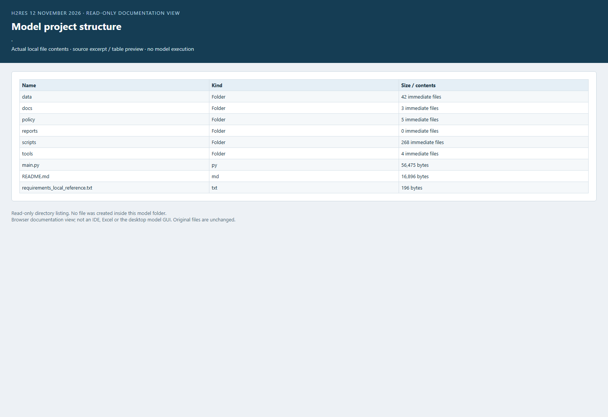
The folders most frequently used are:
| Location | What to open it for |
|---|---|
main.py | Scenario name, feature switches, time mode, input selection, execution |
policy/ | Transition, economic, transport and numerical assumptions |
data/ | Native CSV and Excel inputs for the selected configuration |
scripts/ | Readers, variables, constraints, objective, solver and exporters |
docs/ | Supplied module descriptions; this guide complements those notes |
reports/ | Existing diagnostics and integration evidence; inspect their stated scope |
results/<scenario>/ | Results created when the selected run executes; location depends on mode |
Root-level diagnose_*, rebuild and acceptance scripts are maintenance tools. Their presence does not make them the normal launch command. The supplied RUN_INSTRUCTIONS.txt includes historical rebuild-harness instructions; use main.py for the workflow described here.
2. Install and launch the model environment
The model environment is separate from the data-preparation application's environment. The local reference specifies NumPy 2.4.4, pandas 3.0.2, openpyxl 3.1.5, matplotlib 3.10.8, Plotly 6.3.0 and gurobipy 12.0.3. It is a local version reference, not a complete cross-platform environment lock. Gurobi also needs a suitable license for the problem size.
Example PowerShell commands, entered in the model folder:
Set-Location 'D:\POSAO\H2RES_12.11.2026'
py -3.12 -m venv .venv
& '.\.venv\Scripts\python.exe' -m pip install -r requirements_local_reference.txt
& '.\.venv\Scripts\python.exe' -c "import numpy, pandas, openpyxl, matplotlib, plotly, gurobipy; print('Imports OK')"Review the scenario and inputs described below before the final launch:
& '.\.venv\Scripts\python.exe' -u main.pyIf a configured model environment already exists, select that interpreter rather than creating another one. In an editor, run main.py with that same interpreter. The script resolves its working directory to its own model folder, including when an editor starts it from elsewhere. Do not import main.py as a quick package test: its top-level execution can start a solve.
3. Edit the scenario and main switches

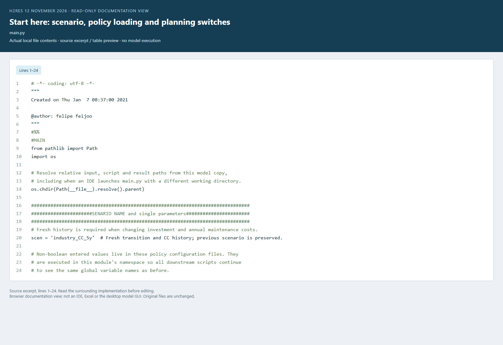
Set scen to a new name for a materially different study, for example HR_categories_baseline_2026_11_12. The supplied name is industry_CC_5y. A name is a results/history identifier; its text does not configure the actual year grid or policy. Those come from switches and input tables.
The delivered selection is:
| Control | Inspected value | Consequence |
|---|---|---|
Myopic | True | Sequential planning with historical handoff |
partial_perfect_foresight | False | Partial-foresight sampling is not selected |
model_heating | True | Heating blocks are enabled |
model_transport_and_industry | True | Legacy transport/industry blocks are enabled |
model_industry_categories | True | Industry is represented by categories |
model_complex_industry | False | Complex process replacement is not selected |
industry_category_electricity_case | conservative | Main category technology workbook is used |
model_efuel | True | E-fuel technology and policy families are selected |
model_simple_industry | False | Separate product-industry workbook is not read |
DSM_day, DSM_week | Both False | Basic electricity load is not shifted by DSM |
disable_transport_infrastructure | False | This debug switch does not suppress infrastructure |
myopic_resume_from_results | True | Compatible completed history may be reused |
Exact capitalization matters. The configuration inventory records all inspected assignments in model_configuration.csv. This table is a snapshot, not a recommendation to leave every setting unchanged.

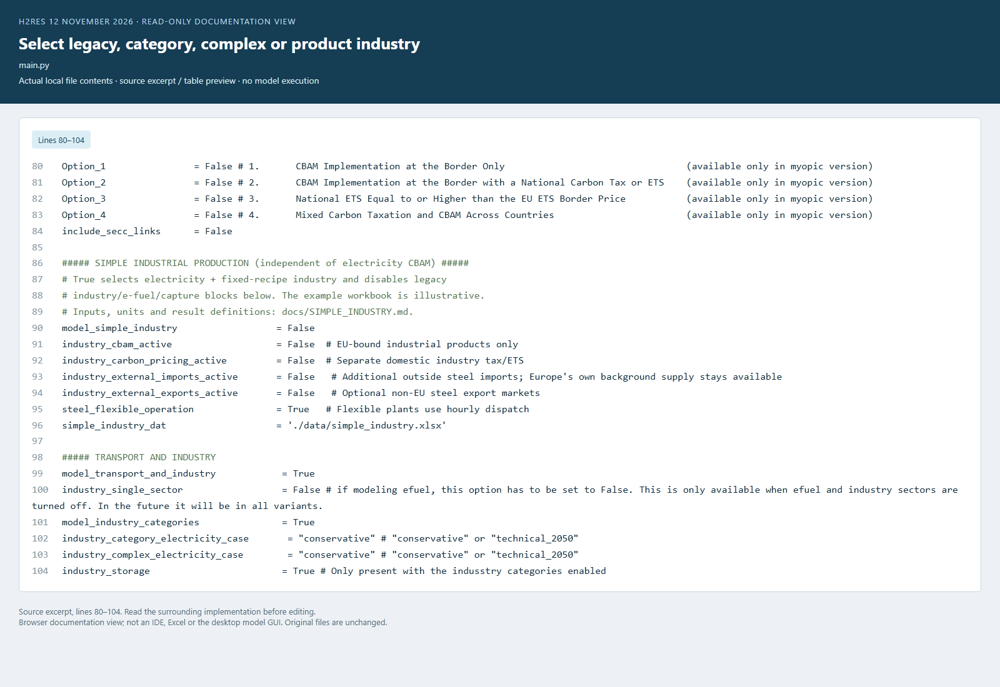
Regular, category and complex industry require a coherent selection. Categories and complex industry are mutually exclusive. Category thermal storage requires categories. Simple product industry configures a different run and disables overlapping legacy blocks. Standalone H2 transmission and terminals are disabled in the delivered e-fuel selection; do not infer activity just because the relevant file is present.
4. Policy files you will frequently edit
main.py executes the policy modules before deriving most run selections. Use these files for their corresponding settings; a workbook does not replace a Python policy switch.

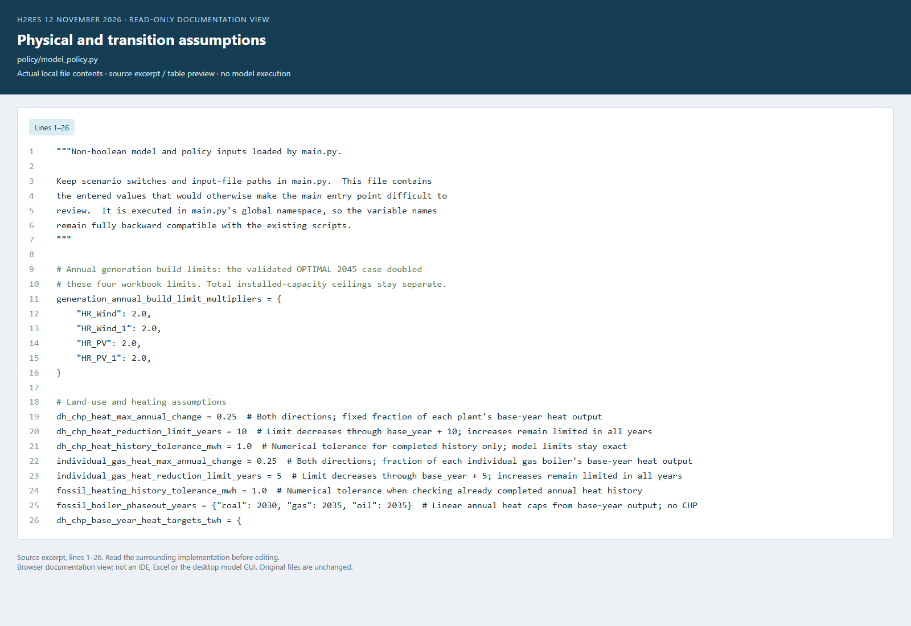
policy/model_policy.py contains physical/economic and transition assumptions. In this snapshot these include the industry's 2045 fossil-combustion transition completion year, heating turnover restrictions, annual investment multipliers, discounting and active systems for the product-industry example. The discount rate, discount base year and capital finance rate must remain consistent with the way costs are reported. Fossil combustion retirement is not a claim of zero industrial process emissions.

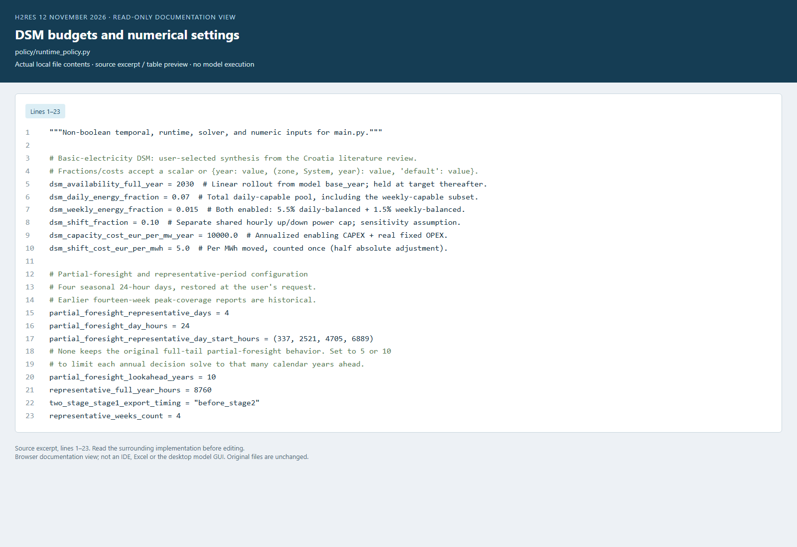
policy/runtime_policy.py contains solver methods, tolerances, numerical scaling, time limits, recovery settings and DSM parameters. In this snapshot stage-1 primary Method is 2, rolling Method is 1, and several time limits are zero, meaning unlimited in the applicable wrappers. A long solve is therefore not necessarily stuck. Changing tolerances can change acceptance; record numerical settings with the result.

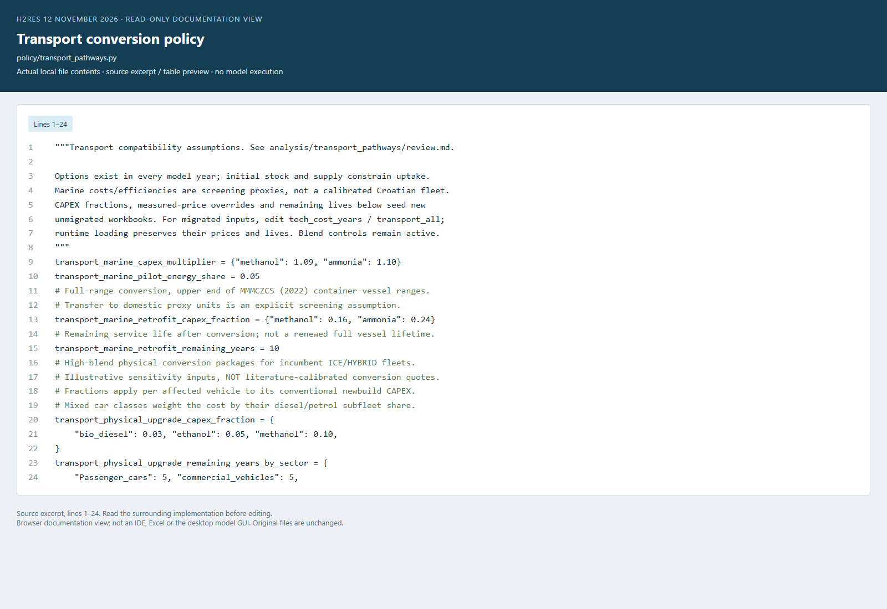
policy/transport_pathways.py contains transport conversion and compatibility assumptions. Keep these consistent with transport_all, transport_ICE_prim where used, the annual transport targets and the hourly service profiles.
5. The data folder and exact workbook selection

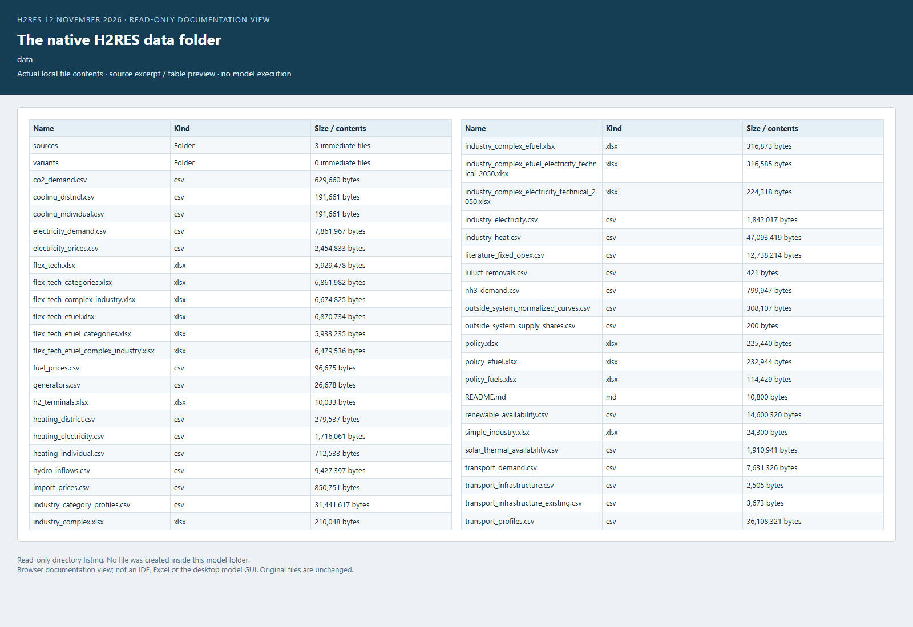
Keep CSVs and workbooks together under data/, including the nested variants/technical_2050/ folder. The model reads specific relative paths. Renaming a workbook to look more convenient does not change the file-selection code. The inspected input inventory contains 46 files, including nested source records and variants; workbook inventories cover 774 worksheets across the supplied workbooks.

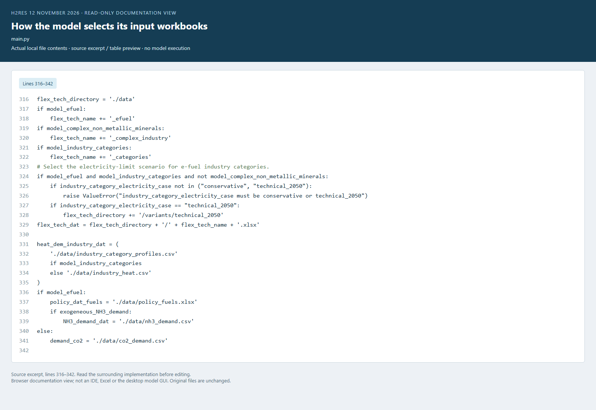
The normal technology selection is:
| Industry representation | model_efuel=False | model_efuel=True |
|---|---|---|
| Regular: categories and complex both false | flex_tech.xlsx | flex_tech_efuel.xlsx |
| Categories | flex_tech_categories.xlsx | flex_tech_efuel_categories.xlsx |
| Complex | flex_tech_complex_industry.xlsx | flex_tech_efuel_complex_industry.xlsx |
For e-fuel categories with industry_category_electricity_case='technical_2050', the technology path is data/variants/technical_2050/flex_tech_efuel_categories.xlsx. The main conservative path has the same basename directly under data/. Complex electricity assumptions select industry_complex*_electricity_technical_2050.xlsx; they do not rename the associated flex-tech workbook.
model_efuel=True selects policy_efuel.xlsx, otherwise policy.xlsx. E-fuel carrier price assumptions additionally use policy_fuels.xlsx. Category demand timing uses industry_category_profiles.csv; ordinary industry timing uses industry_heat.csv. Follow the selected filenames printed by the reader.
6. Generators and their related tables

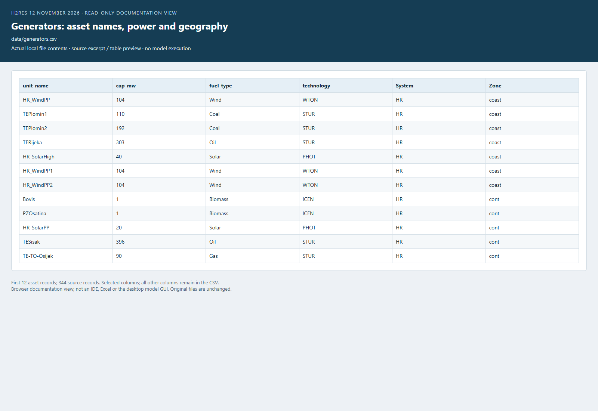
data/generators.csv is the native generator inventory. Each asset has an exact unit_name, installed cap_mw, fuel/technology and System/Zone. Other native fields describe efficiency, costs, ramping, CHP heat coupling, lifetime/retirement and hydro storage characteristics. MW power and GWh storage energy are different quantities.
A generator must be represented consistently wherever its identifier is used. When adding or renaming a unit, review the following relationships:
| Related input | What must agree |
|---|---|
active_zones | The asset's zone and System belong to the intended model geography |
renewable_availability.csv | Required VRE/run-of-river curve columns use exact generator IDs |
hydro_inflows.csv | Relevant reservoir/pumped-hydro columns use the required exact IDs |
cap_inv_lim | Applicable unit, geography and annual investment coverage are present |
tech_cost_years | Applicable generator/technology capital-cost trajectory is unambiguous |
fixedOPEX_cost_years | Applicable fixed-cost trajectory and units agree |
| Policy calibration tables | Generation and hydro targets match actual modeled assets and fuels |
These are table-specific relationships: not every workbook is stored as a simple (year,unit_name,zone,System) table. Some native sheets contain multiple stacked/wide blocks. Follow the input reader and preserve its keys rather than adding a superficially similar column. A zone with no existing generator can still have demand and receive electricity through modeled links; do not invent a power plant merely to populate every zone.

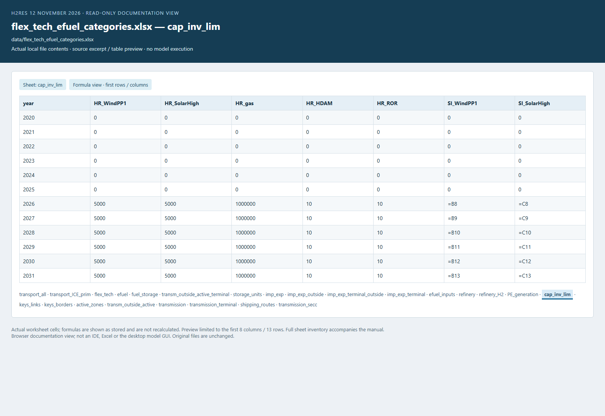
cap_inv_lim controls additions in the units expected for each asset family. Zero prevents additions for the applicable entry; it does not remove existing capacity. Sparse decision years require correct aggregation of underlying annual limits. A blank is not universally equivalent to zero: the reader's scalar fallback and unrestricted-limit conventions matter.

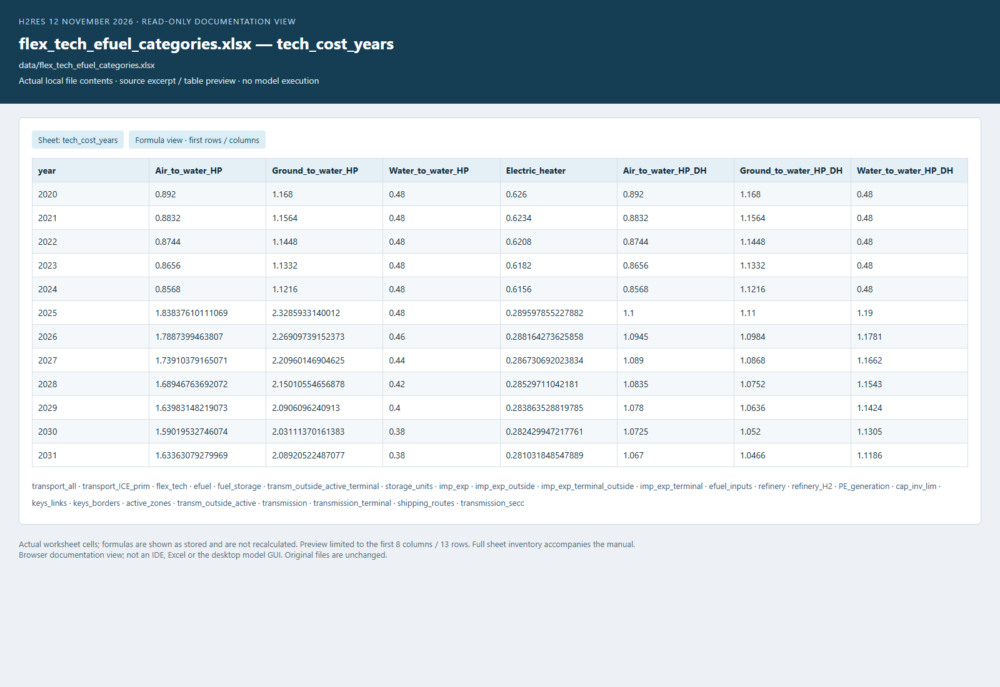
tech_cost_years supplies cost trajectories. Confirm the physical unit and price basis before transferring a row between generation, energy storage, heating, vehicles or capture. A unit may not have two conflicting applicable trajectories. Check costs and investment limits together whenever the GENCO inventory changes.

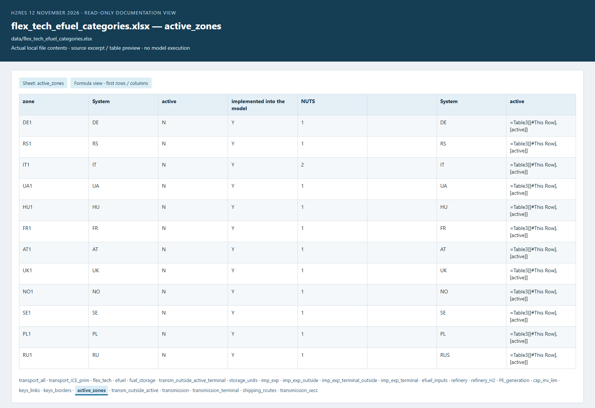
active_zones contains retained countries and zones as well as selection columns. A country appearing in this worksheet is not automatically active. Inspect active and the reader's scoping rules, then ensure matching demand, transmission, heating, industry and transport inputs. The preview starts at the first stored rows; inactive rows in a screenshot do not imply the model has no active zones.
7. Flex-tech variations: what changes and what to review
7.1 Regular industry without e-fuels

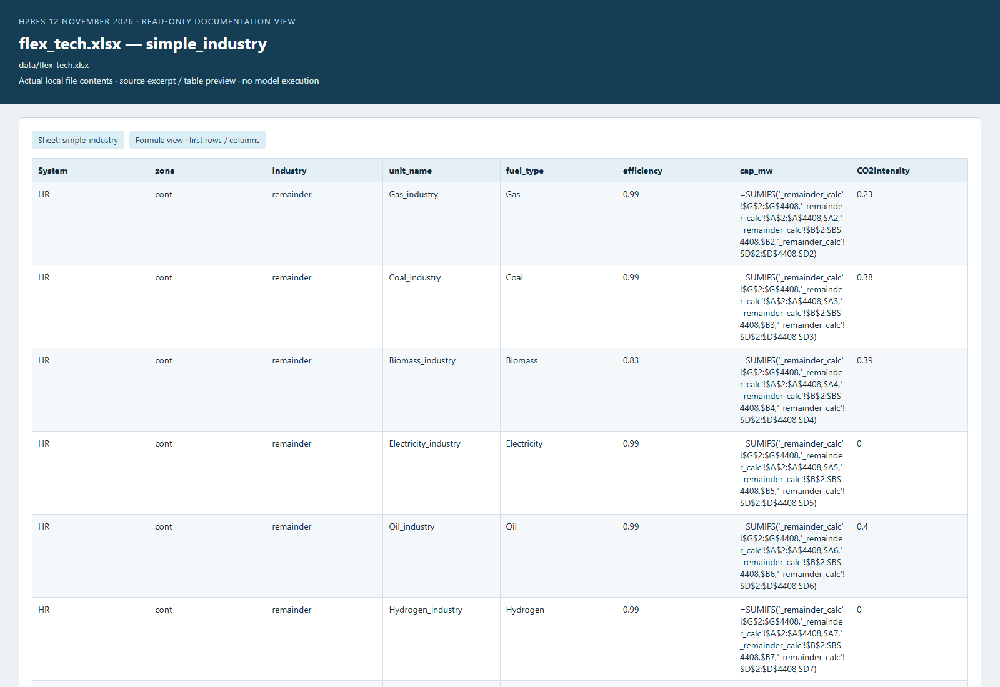
flex_tech.xlsx provides the regular technology layout. The simple_industry worksheet is the pooled legacy service representation. It must reconcile with detailed-sector inclusion in Industry_data: an excluded detailed service belongs in the pool, while a retained detailed service must not be counted again. Preserve demand and capacity units while recomputing the remainder. A formula visible in a cell does not establish that its cached numeric value is current.
7.2 Category industry without e-fuels

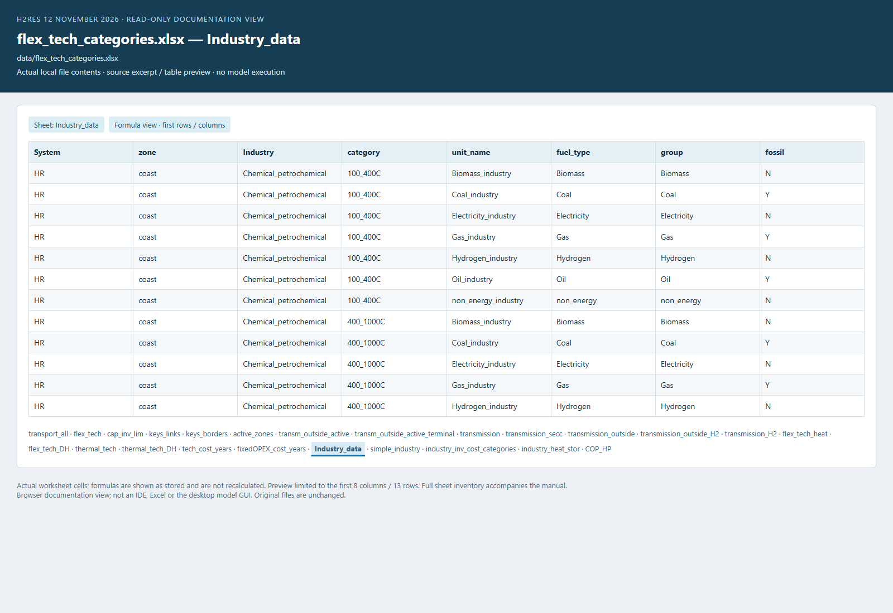
flex_tech_categories.xlsx distinguishes industry and service/temperature category. Review Industry_data, industry_inv_cost_categories, applicable heat-pump limits and category thermal storage. The simple_industry remainder can legitimately be empty when all applicable services are detailed. Do not populate it merely because an empty sheet looks suspicious.
7.3 Complex industry without e-fuels

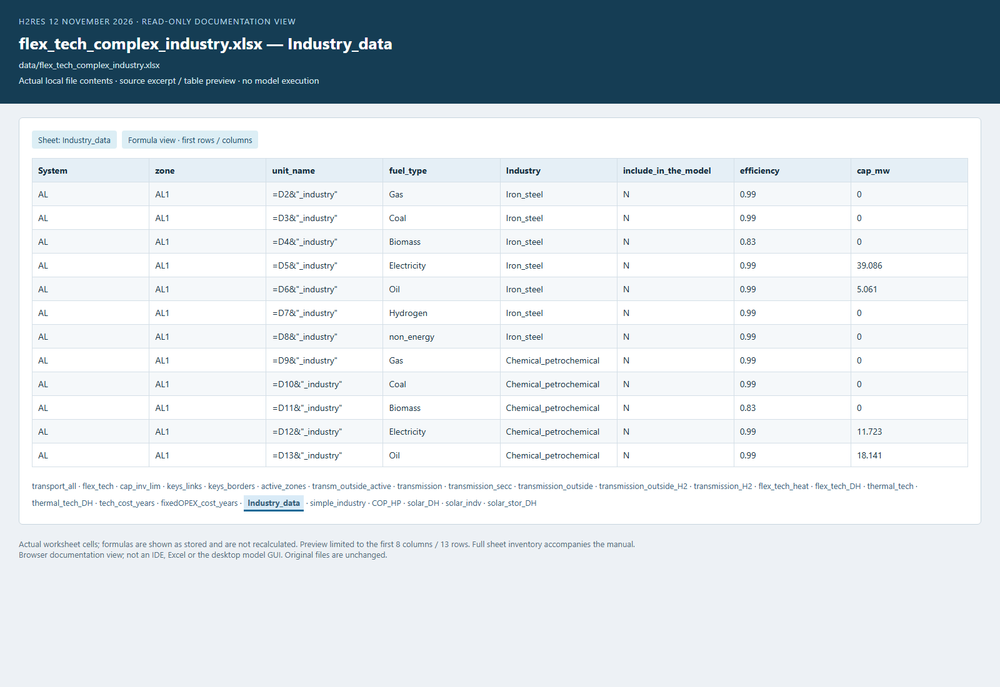
flex_tech_complex_industry.xlsx supplies the common technologies while industry_complex.xlsx supplies the process representation. Selected complex sectors replace their overlapping legacy services. Changing the process workbook alone does not activate all its sectors: complex_industry_sectors also scopes the model; its delivered policy default is Non_metallic_minerals.
7.4 Regular industry with e-fuels

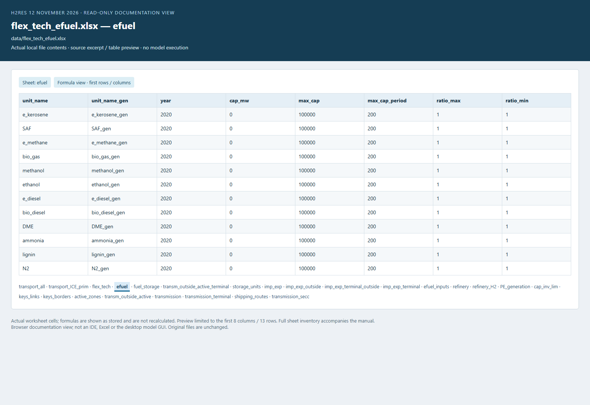
flex_tech_efuel.xlsx adds the e-fuel conversion, feedstock, storage, trade and applicable refinery/terminal layout. Review efuel, efuel_inputs, fuel_storage, storage_units, import/export sheets and transmission/routes together. A conversion output creates corresponding input and auxiliary demand; it is not free energy.
7.5 Category industry with e-fuels

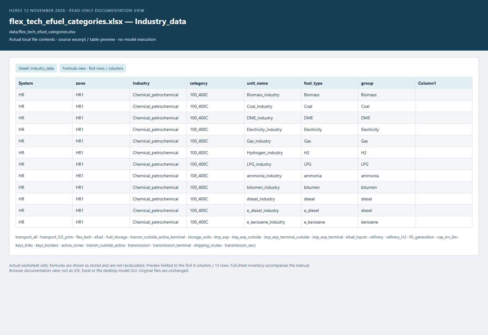
flex_tech_efuel_categories.xlsx is the delivered conservative selection. In addition to service data, examine category costs, industry_heat_stor, industrial capture and process-emission sheets, compatibility rules and replacement ceilings. The simple_industry worksheet remains a pooled remainder, not the separate product model.
7.6 Complex industry with e-fuels

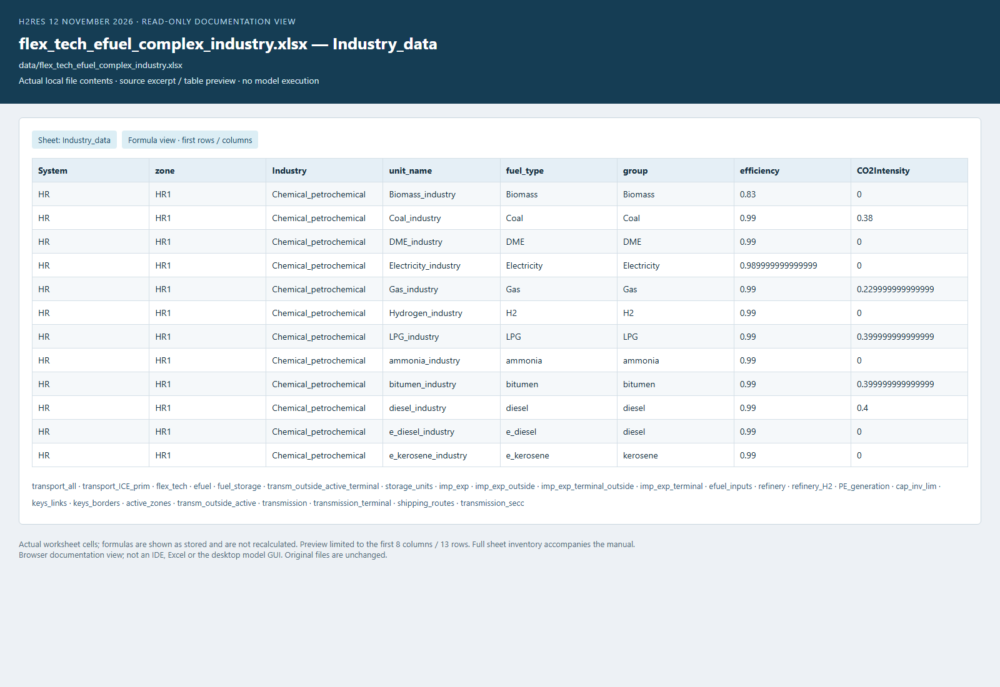
flex_tech_efuel_complex_industry.xlsx is paired with industry_complex_efuel.xlsx. Keep process heat/electricity, non-energy feedstocks, carrier conversion and process carbon consistent. Separate process and other-carbon balances are enabled in the current main.py; untagged imported CO2 cannot be assumed eligible for geological storage.
7.7 Technical-2050 category case

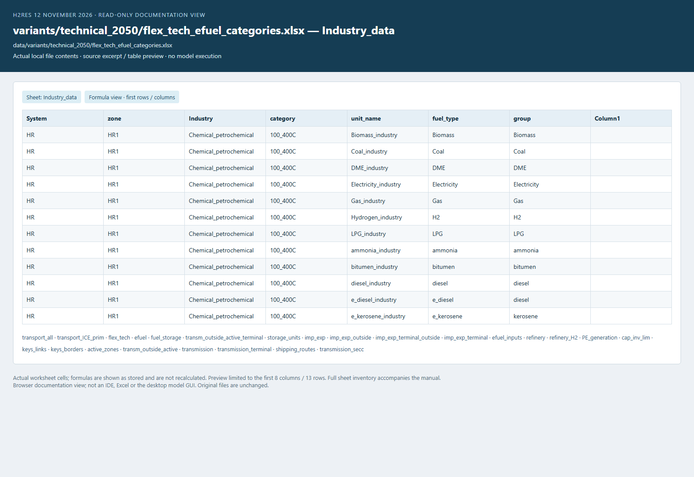
variants/technical_2050/flex_tech_efuel_categories.xlsx changes the relevant industrial electricity assumptions. Select it through industry_category_electricity_case; do not overwrite the conservative workbook. This is a technical scenario variant, not a forecast or an automatic renewable-energy target.
7.8 Process input workbook

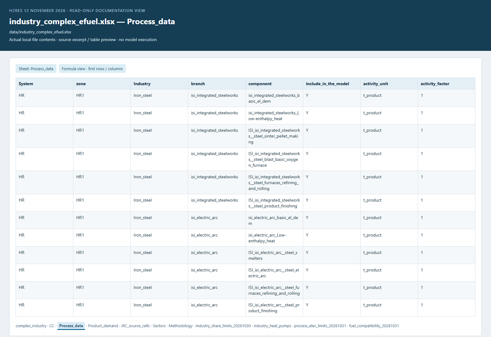
The complex-industry companion workbooks contain Process_data, Product_demand, complex_industry, CC and methodology/compatibility sheets. Check product and component identifiers, activity units, useful service, final inputs, capture eligibility and the retained legacy remainder. The technical-electricity case must use the matching process workbook for its e-fuel selection.
8. Policy workbooks, years and demand trajectories

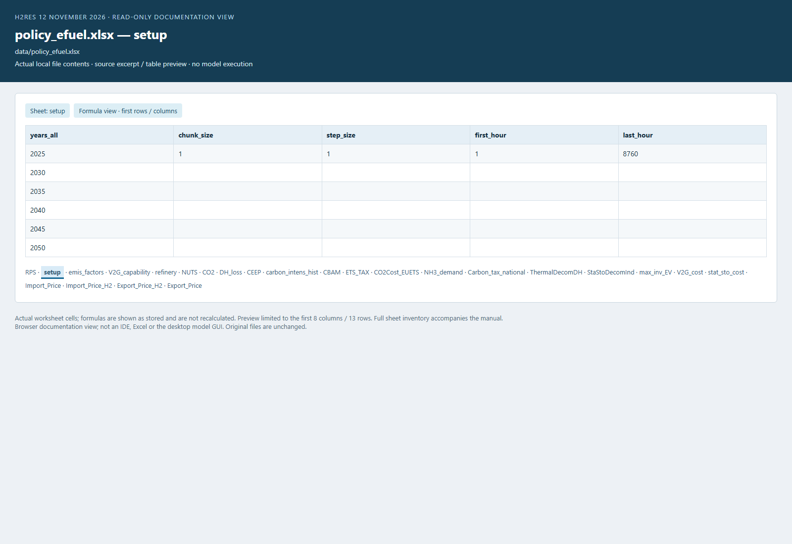
The inspected policy_efuel.xlsx setup sheet has decision years 2025, 2030, 2035, 2040, 2045 and 2050. Its first row of values sets chunk_size=1, step_size=1, first_hour=1 and last_hour=8760. A five-year spacing between decisions is different from chunk_size. Follow the reader's construction of each planning window; the scenario-name suffix is not a year-grid control.
When changing the horizon, also extend applicable annual costs, limits, demand changes, carbon/RPS trajectories, transport paths, supplier/market inputs and retirement assumptions. Changing only setup can create missing-year data or an inconsistent scenario. The weather/source year of an hourly shape is not the same as a future decision year.

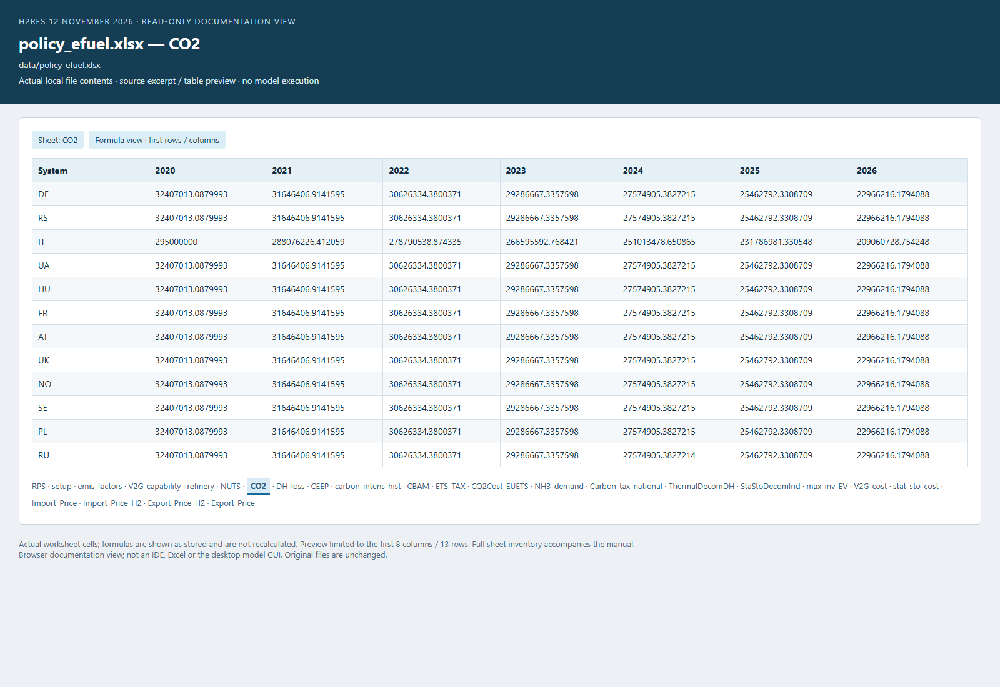
The CO2 sheet supplies the carbon-limit trajectories selected by the model. Read the implemented units and System mapping. Carbon limits, ETS/carbon prices, capture, LULUCF removals and CBAM switches have different roles. The current configuration enables the carbon limit and disables LULUCF removals.

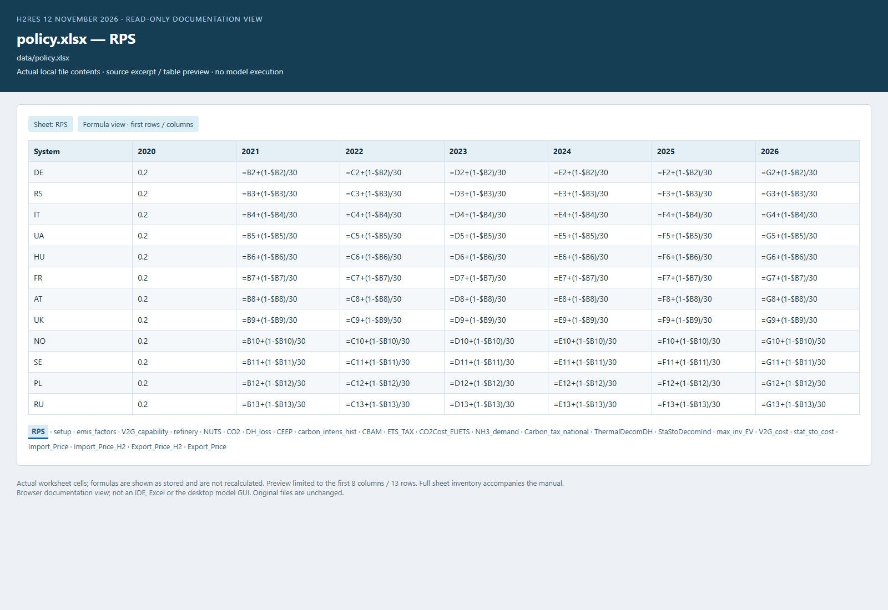
RPS controls the implemented renewable-electricity share policy. It does not by itself impose 100% renewable final energy across heating, industry and transport. The preparation tool's whole-energy preset is an additional adapter policy with its own coverage and compatibility limits; it is not implied by setting RPS to one.

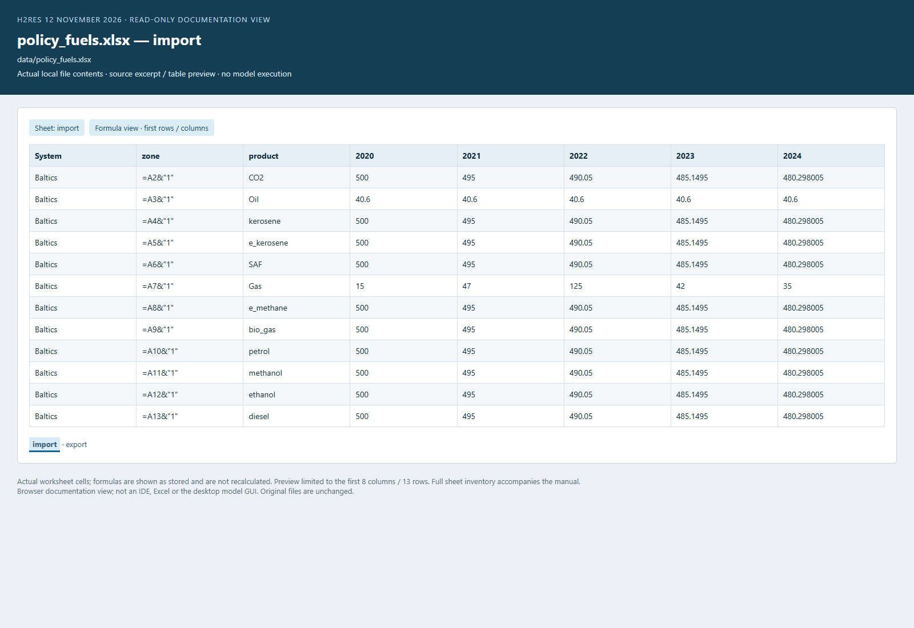
policy_fuels.xlsx supplies applicable e-fuel carrier price assumptions. Keep these distinct from primary fuel prices in fuel_prices.csv and electricity import prices. Do not count the same feedstock purchase again at every conversion stage.
Other frequently reviewed policy sheets include dem_change, Industry_dem_change, Heat_dem_change, Heat_dem_change_DH, transport_targets, transport_targets_efuel, biomass_caps, generation_targets, hydro_caps, outside_trade, CO2Cost_EUETS, Carbon_tax_national, CBAM and ETS_TAX. Presence is not activation: both the selected workbook and Python flags determine whether a policy applies.
9. Hourly electricity, heat and transport inputs
electricity_demand.csv is the basic electricity-demand profile by period, System and Zone. industry_electricity.csv and heating_electricity.csv participate in the model's sector-accounting boundary; follow the reader so that electricity already embedded in basic load is not charged twice. renewable_availability.csv and hydro_inflows.csv use their exact asset columns and expected normalization. Check full hourly coverage and period ordering.
Heating uses heating_individual.csv, heating_district.csv, relevant electric-heating data, the flex/thermal heating sheets, COP data and solar availability where enabled. The delivered solar individual/DH and cooling switches are off. Changing a switch does not create missing profiles or costs.
Transport uses transport_profiles.csv, transport_demand.csv, fleet/technology sheets, compatible fuels, policy paths and infrastructure CSVs. Service, final energy and vehicles are different units. V2G availability is not the same as driving demand. Navigation modes also need coherent inland/coastal allocation in a regional dataset.
10. New electricity demand shifting

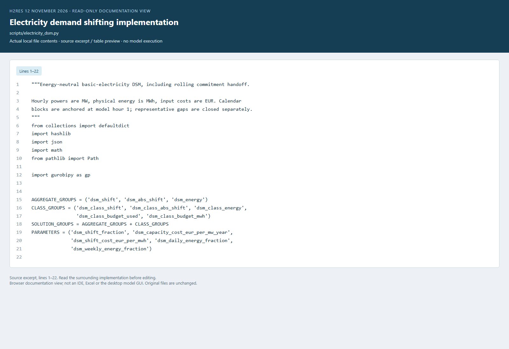
For a DSM study, choose a fresh scen and enable the applicable controls in main.py:
DSM_day = True
DSM_week = True
dsm_energy_budget_active = True
dsm_availability_ramp_active = TrueReview the parameters at the beginning of policy/runtime_policy.py. The supplied energy pools are 7% daily-capable including a 1.5% weekly subset; both together mean 5.5% daily-balanced and 1.5% weekly-balanced. Rollout reaches its target in 2030. The shared hourly adjustment cap is 10% of baseline load, capacity cost is EUR 10,000/MW/year and activation cost EUR 5/MWh moved. These are scenario assumptions.
DSM shifts basic electricity load while conserving energy within its daily/weekly blocks; it does not automatically shift every sector's separate modeled demand. Its hourly power and moved-energy limits are separate. For example, the symmetric 10% hourly cap can bind before the full 7% energy allowance is usable. Read model manual section 19 and the supplied DSM notes before changing sampled/rolling behavior.
Demand-response background is provided by R35, R36 and R37; these sources do not validate the local energy-pool percentages or costs.
11. New product-industry workbook

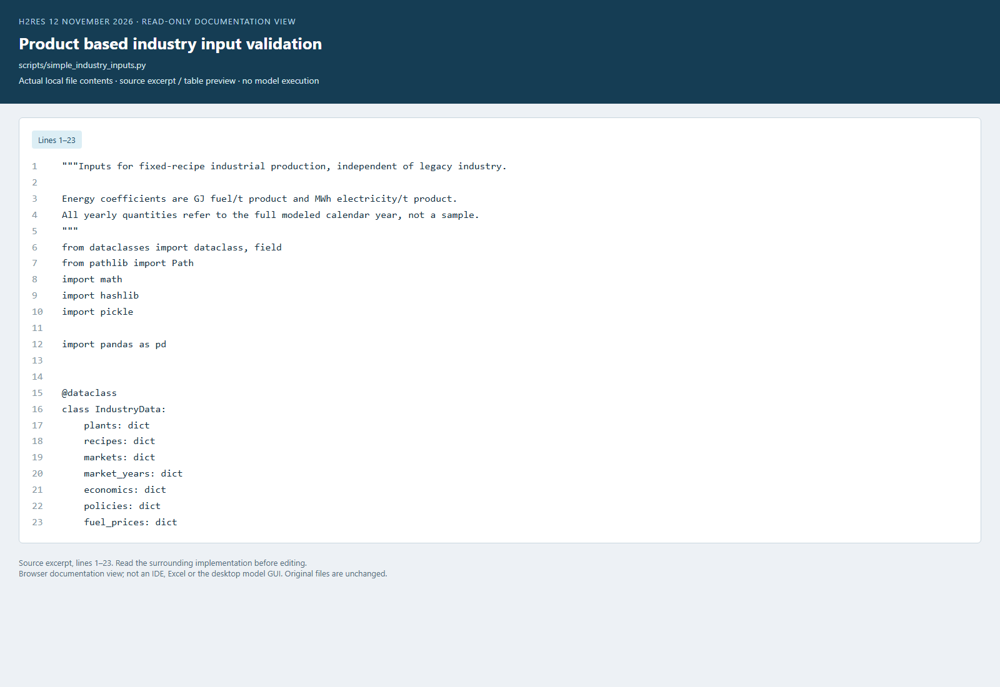
data/simple_industry.xlsx is a separate product model, selected by model_simple_industry=True. It is not the simple_industry worksheet in flex-tech. Enabling it configures a different run: the legacy industry/transport, e-fuel and overlapping capture/H2 blocks are disabled. Heating keeps its own selection.

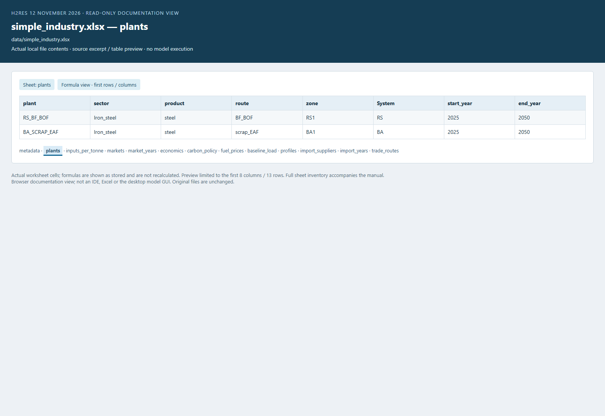
Review plants for product, route, geography, t/h capacity, net MWh/t electricity, connection power, operating years, flexibility and capital inputs. Review inputs_per_tonne for fixed GJ/t recipes and emissions. The example RS BF-BOF and BA EAF cases are illustrative plants, not calibrated Smederevo or Zenica facilities.

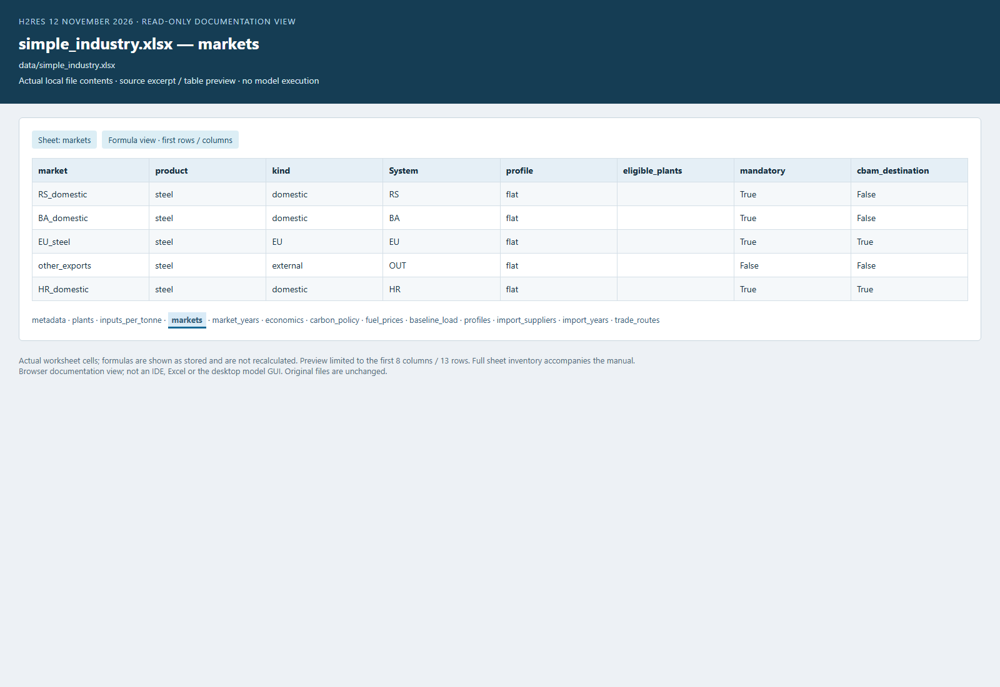
markets defines destinations and eligibility; market_years supplies annual tonnes, sale prices and hourly delivery ceilings. Mandatory domestic/Europe markets must be served. Product output is a decision bounded by capacity; a plant can be displaced by other modeled or eligible outside suppliers. Demand is not automatically reduced when supply is inadequate.

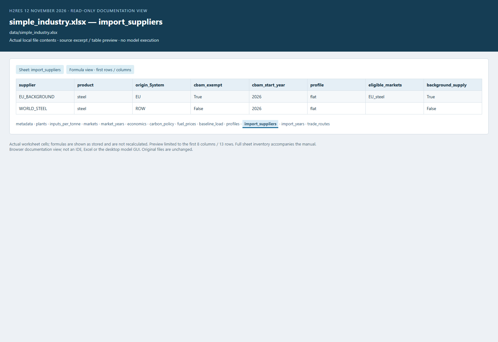
import_suppliers and import_years provide origin, eligibility, bounded availability, cost and embedded emissions. trade_routes may further restrict or price supplier/market pairs. An outside supplier has one annual budget shared across its destinations. The EU background offer is restricted to the rest-of-Europe market; it is not unrestricted domestic backup.
Industrial CBAM, domestic carbon pricing and outside import/export controls are separate main.py switches. Electricity CBAM Options 1–4 are separate again and mutually exclusive. Baseline load removal must be calibrated if a plant's electricity is already included in the basic demand CSV. Zero removal in the example means its plant electricity is added. See model manual section 20 and the supplied product-industry notes.
12. Source files used during execution

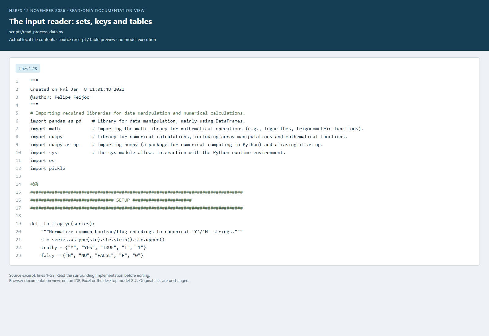
scripts/read_process_data.py reads native files, scopes active systems/zones, interprets table layouts and creates sets and numerical dictionaries. Open this file when checking what a workbook column means or which sheet is read under a flag. An error naming a sheet or annual trajectory usually needs inspection of the selected workbook and reader, not an edit to the solver.

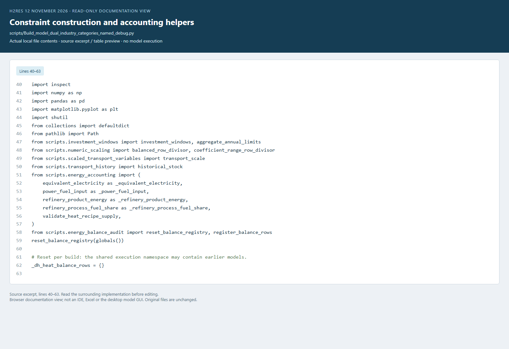
scripts/reading_prev_and_vars_def_dual_industry_categories1.py declares variables and loads historical decisions. scripts/Build_model_dual_industry_categories_named_debug.py constructs physical and policy constraints. Helper modules implement shared accounting, industry transition, carbon, DSM and product industry. Read the relevant helper as well as the calling equation.

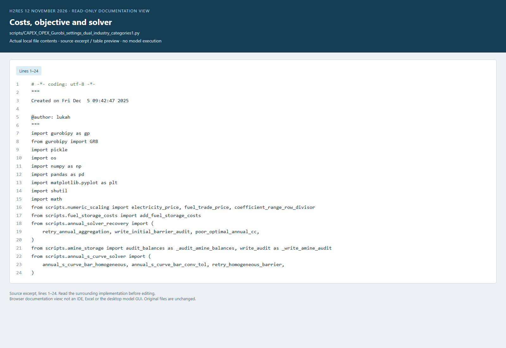
scripts/CAPEX_OPEX_Gurobi_settings_dual_industry_categories1.py constructs cost terms, the objective and solver/recovery behavior. Export and plotting scripts run after the applicable solve path. For line-level locations use the code reference; static call-site counts are not the size of a constructed optimization matrix.
13. Before and after a run
Before running, verify a fresh/coherent scenario name, the intended interpreter/license, active zones, actual selected workbooks, decision years and complete applicable cost/limit/profile coverage. Close Excel before modifying or replacing its workbooks. Review service remainders, sector electricity accounting and any historical baseline removals. Keep a copy of the selected code, inputs and policies with their hashes.
Run main.py with the selected environment. Read the selected input paths and first planning-year messages. Preserve the console log if input validation, model construction or optimization fails; these are different stages. The default resume option can skip compatible completed years, so use a new scenario name after changing geography, accounting, recipes, costs or policies.
After a run, inspect solver status, provisional/recovery notices, physical-balance audits, carbon/capture checks, accepted decision years and exported annual/hourly balances before interpreting plots. The delivered configuration allows provisional solutions and warning-only postoptimal checks. A completed CSV export is therefore not automatically a strict optimality/feasibility certificate.
For DSM inspect the hourly, class, summary and assumption exports. For product industry inspect production, demand satisfaction, imports, sales, inventories, supplier origin, territorial/embedded emissions and fiscal/CBAM accounts. Compare scenarios on the same energy, geographic, economic and time boundaries.
14. Common issues and the first files to inspect
| Symptom | First inspection |
|---|---|
| Missing module or Gurobi failure | Selected interpreter, model requirements and Gurobi license |
| Different workbook used than expected | main.py flags, electricity case and printed tech_dat/policy path |
| Missing or ambiguous investment/cost trajectory | Exact generator ID, relevant System/zone/year and all applicable blocks in cap_inv_lim/cost sheets |
| Old or missing industry remainder | Detailed inclusion in Industry_data, pooled simple_industry, formula cache/recalculation and units |
#REF!, formula error or blank numeric input | Native workbook and cached value; preserve the original and recalculate a working copy using a spreadsheet application |
| Wrong country or zero regional demand | Active zones, System/Zone mapping, reader scoping and hourly coverage |
| New study unexpectedly resumes old years | scen, resume controls and existing history compatibility |
| Infeasible product demand | Mandatory tonnes, eligible plants/suppliers, annual/hourly capacity and import switches |
| DSM has no effect | Main switches, rollout year, energy budgets, hourly cap and whether the load is basic electricity |
| Long solve or recovery | Runtime time limits, selected mode, solver log, matrix size and numerical diagnostics |
| Run finishes with warnings | Provisional acceptance settings, actual solver status and physical-quality reports |
Do not bypass a missing trajectory with zero cost or delete an unsupplied demand merely to get past validation. Review identifiers, units and the intended scenario first. The documentation inventory and screenshots are evidence of inspected content, not proof that every retained workbook or run mode is feasible.
15. References, provenance and sharing
Use the scientific and data references, BibTeX bibliography, assumption register, exact source/input inventory and workbook schema. The 2004 H2RES island-model lineage and later planning/optimization papers provide background; later local DSM and product-trade extensions are identified separately in this edition.
This documentation was built from static inspection of the specified 12 November source/input snapshot. No optimization was run to prepare it. The separate data extractor still documents its own native/refactored export contracts; this manual does not certify its adapter against every new model extension. Share the PDF for reading, or the documentation ZIP for offline HTML navigation, source notes, screenshots and machine-readable inventories.
Configuring main.py: complete workflows and option interactions
Applies to: the inspected H2RES_12.11.2026 model. This guide explains the available structures, how to combine their controls and how to interpret the resulting study. The complete option reference explains every recorded assignment in main.py and the three loaded policy files. The equation chapter explains the physical, economic and policy mechanisms. Desktop GUI operation is excluded.
The examples are configuration instructions, not reports of new solved cases. Enabling a technology allows its modeled activity; it does not guarantee that the optimizer will build or dispatch it. Results depend jointly on demand, prices, stock, retirement, resources, investment limits, networks and all active policies.
1. Five decisions define a study
Choose the following independently, then check their dependencies:
| Decision | Principal choices | Where configured |
|---|---|---|
| Physical boundary | Electricity, heat, legacy industry/transport, product industry, H2/e-fuels, capture, trade | Main module switches plus eligible data rows |
| Industry representation | Pooled/mixed detailed services, temperature categories, selected complex processes, separate product model | Main industry flags, Industry_data inclusion and companion workbooks |
| Planning information/time | Joint foresight, ordinary sequential planning, partial foresight, representative capacity, rolling fixed dispatch | Main time-mode flags, runtime policy and policy setup |
| Policy experiment | RPS, emissions caps, removals, transition rules, electricity CBAM, product CBAM, domestic carbon prices | Main switches, model policy and policy/workbook trajectories |
| Numerical acceptance/output | Algorithms, retries, time limits, provisional/strict checks, diagnostics, histories, plots | Main/runtime settings and exporters |
A meaningful comparison normally changes one documented group at a time. For example, compare e-fuel and no-e-fuel cases using an explicitly matched demand/service boundary; otherwise different workbooks may change more than the carrier representation.
2. How to make a configuration change
- Preserve the original model/input snapshot. Select the model's Python/Gurobi environment.
- Set a fresh
sceninmain.py, identifying the intended experiment. - Edit the original declarations in
main.py. Do not append settings below the execution section: the model may already have solved by then. - Edit numerical and transition parameters in the appropriate policy module. Main loads these before most switches and later derives filenames.
- Edit the selected workbook's
setup, active geography, inclusion flags, limits and policy paths. Saving a different workbook does not change the selected path. - Check the normalized configuration and selected input paths. A flag may be overridden, ignored outside its parent module, or rejected.
- Run
main.py; inspect the first input/read/build messages before interpreting the eventual result.
The following snippets show the settings to change, not complete standalone Python programs. Apply them at their original declarations. A scenario JSON from the data extractor is not automatically loaded by native main.py. The source uses a shared namespace, so policy modules and helper normalization matter as much as the visible main switches.
3. Dependency and normalization map
| Requested combination | Effective behavior / requirement |
|---|---|
| Categories plus complex industry | Rejected; these are alternative representations |
industry_storage=True | Requires transport/industry, categories and multi-sector operation |
| Complex industry | Requires legacy transport/industry and industry_single_sector=False; selected sectors come from policy |
| Either complex alias True | Both aliases are normalized to the same effective complex selection |
| E-fuels plus standalone H2 pipelines | Main disables standalone model_H2_transmission; carrier transmission already handles H2 |
| Explicit Oil/Gas supply without e-fuels | Main disables that supply flag |
| E-fuels plus no base-year vehicle investment | Main permits base-year additions to meet the e-fuel case's initial fleet floors |
| Capture off with amine storage on | The variable/setup path turns amine storage off |
| Capture and e-fuels both off | The applicable setup turns post-generation CO2 storage off |
| Standalone terminals without e-fuels | Requires legacy transport/industry, the H2 balance and valid H2 terminal/routes/cost data |
| Terminals with e-fuels | Uses the product-terminal, route and carrier tables instead of assuming the standalone schema |
| Lightweight representative mode | Enables automatic mode but skips its stage-2 rolling dispatch |
| Fixed capacity without rolling dispatch | Main normalizes fixed capacity off for a normal capacity solve |
| Rolling dispatch alone | Does not select the standalone dispatch runner; fixed capacity must also be True |
| More than one electricity CBAM option | Rejected |
Electricity CBAM with Myopic=False | Rejected by the inspected builder |
| Product industry enabled | Configure step disables overlapping legacy industry/transport, e-fuel/H2/capture blocks and selects its active example systems |
| Product carbon pricing/CBAM with product mode off | Invalid as an independent product-policy configuration |
| Building heat technology flag with heating off | Does not create an active heating subsystem |
| Legacy industry with heating off | Not presented as a fully costed preset: current industry CAPEX definitions include heating-nested paths |
| No active/eligible input row or zero build allowance | A main technology flag does not create the missing asset or permit forbidden additions |
These include explicit errors, automatic normalization and reviewed support limitations; they are not all the same kind of check. The absence of a blanket ValueError does not prove a combination has complete costs, variables and balances. Keep experimental/debug settings separate from production scenarios.
4. Time modes: select one execution structure
The calendar-year list in policy.xlsx or policy_efuel.xlsx is separate from hourly sampling. The inspected e-fuel setup lists 2025, 2030, 2035, 2040, 2045 and 2050, with chunk_size=1, step_size=1, and hours 1–8760. Thus a name containing 5y does not itself select five-year chunks.
| Workflow | Myopic | Partial | Auto two-stage | Lightweight | Fixed / rolling |
|---|---|---|---|---|---|
| Joint full-hour planning | False | False | False | False | False / False |
| Ordinary sequential planning | True | False | False | False | False / False |
| Sequential planning with sampled future lookahead | True | True | False | False | False / False |
| Representative capacity screening | Either | False | True | True | Initially False / False; controller manages stages |
| Capacity planning followed by chronological fixed dispatch | Either | False | True | False | Initially False / False; controller manages stages |
| Dispatch from a trusted existing bundle | Match the intended study | False | False | False | True / True |
Leave representative_capacity_mode=False for the ordinary full-hour and partial-foresight recipes. The automatic controller sets representative/fixed/rolling modes internally. Do not manually turn on every time-related flag.
4.1 Joint full-hour perfect foresight
Use this to optimize the provided decision years jointly with their full configured hourly periods:
Myopic = False
partial_perfect_foresight = False
two_stage_auto_mode = False
lightweight_representative_weeks_mode = False
representative_capacity_mode = False
fixed_capacity_mode = False
rolling_dispatch_mode = FalseThe optimizer knows the supplied future costs, demands and policies. This is an information assumption, not a forecast of real decision-maker knowledge. Size can grow rapidly with zones, years, carriers and process detail. Electricity Options 1–4 must remain off in this source. Ordinary sector choices, RPS, carbon caps, DSM and eligible product policies have their own compatibility requirements.
Expected evidence: the joint solve log, accepted capacities across the horizon, full configured operational coverage and physical-quality checks. A five-year decision grid still requires explaining how annual investment and operating costs are represented between decisions.
4.2 Ordinary sequential myopic planning
Start with the preceding settings, change Myopic=True, keep partial foresight False and use a new scenario. chunk_size and step_size count positions in the decision-year list. With one year per chunk and one-position advance, each point is solved sequentially and saved history constrains later decisions. On a 2025/2030/... grid, one position is five calendar years; on an annual grid it is one year.
Increasing chunk size exposes more decision points jointly to each solve. The exact exporter and history behavior matters for overlapping chunks; do not assume every ordinary multi-year chunk commits only its first year. That first-year restriction is explicit in the partial-foresight path. Prefer a clearly documented chunk/step structure and inspect accepted-year exports.
Use this for limited-information or path-dependence experiments, while recognizing that a one-point solve can make choices that later demand/policy makes expensive or infeasible. Myopic results are not necessarily as low-cost as joint foresight under otherwise matched assumptions.
4.3 Partial foresight with a detailed decision year
Myopic = True
partial_perfect_foresight = True
two_stage_auto_mode = False
lightweight_representative_weeks_mode = False
representative_capacity_mode = False
fixed_capacity_mode = False
rolling_dispatch_mode = FalseIn policy/runtime_policy.py, review:
partial_foresight_representative_days = 4
partial_foresight_day_hours = 24
partial_foresight_representative_day_start_hours = (337, 2521, 4705, 6889)
partial_foresight_lookahead_years = 10The current year uses the full configured calendar; future decision years use four sampled days. Ten is a calendar-year reach, not ten decision points. From 2030 on a five-year grid, the allowed points are 2030, 2035 and 2040. None exposes the remaining tail. The current decision-year result is exported as committed history; sampled future solutions guide that decision and are revisited later.
This can reduce solve size relative to giving every future point a full year. It does not establish seasonal storage feasibility for the sampled future years. A shorter lookahead can change investments materially. Report the actual sampled starts and weights with the result.
4.4 Representative capacity screening only
Myopic = True
partial_perfect_foresight = False
two_stage_auto_mode = True
lightweight_representative_weeks_mode = True
fixed_capacity_mode = False
rolling_dispatch_mode = FalseChoose Myopic=False instead if a joint representative capacity study is intended. The controller performs stage 1 and skips stage 2. Its historical setting names are misleading in this snapshot: representative_weeks_count=4 and representative_week_hours=24 mean 96 sampled hours, not 672 hours. Equal sample expansion is 8760/96 = 91.25 where that annualization convention applies.
Use it to screen assumptions and inspect indicative capacity/cost changes. Do not call it a full-year operational validation. The annualized energy totals and sample metadata must accompany plots. If changing to actual week-long blocks, set compatible lengths/starts/counts and reassess all module chronology; changing the label alone has no effect.
4.5 Automatic capacity planning plus rolling dispatch
Myopic = True
partial_perfect_foresight = False
two_stage_auto_mode = True
lightweight_representative_weeks_mode = False
representative_capacity_mode = False
fixed_capacity_mode = False
rolling_dispatch_mode = FalseThe controller samples stage-1 capacity planning, exports a dispatch bundle, then freezes capacity for rolling operation. Use Myopic=False for the joint stage-1 variant, subject to the selected policies. Keep two_stage_stage1_export_timing='before_stage2' so investment/history outputs exist. Turning those exports off can affect later sequential chunks.
This asks whether sampled planning capacities can operate under the configured chronological dispatch assumptions. It is not a single all-hours capacity optimization. Forecast deviations, annual budgets, guidance, stock end conditions and penalized shortages all affect stage 2. Inspect the original window files and stitched annual balances, not only representative stage-1 plots.
4.6 Daily versus weekly intra-annual dispatch
In runtime policy, rolling_dispatch_granularity='day' sets 48 optimized hours, 24 committed hours and a 24-hour advance. 'week' sets 336 optimized hours, 168 committed hours and a 168-hour advance. 'custom' uses the explicit window, step and realized-horizon settings. With day/week selected, editing only rolling_window_size is overwritten by the granularity function.
The second half of a daily window provides forecast/lookahead; it is not committed twice. The next window inherits the last committed physical states and accepted budgets. Storage, maritime transit, annual imports and carbon guidance require correct handoff metadata. Longer windows can reduce short-sighted dispatch while increasing memory and solve time.
The author reports improved intra-annual myopic stability in a more recent no-e-fuel working version. That report should not be generalized to all e-fuel, capture, terminal and process combinations or treated as a new regression result for this documentation snapshot.
4.7 Fixed dispatch from an existing capacity bundle
two_stage_auto_mode = False
lightweight_representative_weeks_mode = False
representative_capacity_mode = False
fixed_capacity_mode = True
rolling_dispatch_mode = True
export_stage2_dispatch_bundle = False
dispatch_stage_data_path = './results/REFERENCE_SCENARIO/stage2_dispatch_bundle.pkl'First obtain a trusted bundle through planning with export_stage2_dispatch_bundle=True or automatic stage 1. The file contains model state/metadata, not just capacities. Match units, active geography, years, technology/accounting conventions and module settings. This recipe freezes supported assets; it does not mean setting every cap_inv_lim cell to zero has the same effect.
A zero build limit allows surviving existing capacity but may not pin every state, retirements or previously planned investment. Use the dedicated fixed-capacity mechanism for a dispatch experiment. Report any unsupported or unpinned asset family explicitly.
5. Electricity-only and integrated-energy boundaries
For a deliberately reduced electricity-only structure, disable the legacy coupled modules consistently:
model_simple_industry = False
model_heating = False
model_cooling = False
model_transport_and_industry = False
model_industry_categories = False
model_complex_industry = False
model_complex_non_metallic_minerals = False
industry_storage = False
model_efuel = False
model_oil_and_gas_products_supply = False
model_H2_supply_demand_balance = False
model_H2_transmission = False
model_terminals = False
model_CC = False
model_CO2_ammine_storeage = False
model_CO2_post_gen_storeage = FalseThis is a reduced-boundary configuration for validation, not a claim that the existing input demand has been calibrated to an electricity-only study. Inspect the reader's decomposition and demand CSV: demand already assigned to explicit sector blocks must not disappear unintentionally, nor be counted twice. Retain the intended generation, storage, network, RPS and carbon policies separately.
For the delivered integrated case, keep heating and legacy transport/industry on and select the appropriate industry/carrier representation. Disabling heating alone while retaining legacy industry is not a reliable shortcut because current cost paths include heating-nested industry definitions. Model-size reduction should preserve a complete accounting boundary.
6. Heating technologies and three different thermal stores
model_heating=True activates the heating subsystem. The individual and DH boiler flags select their eligible boiler lists; the individual and DH HP flags select their HP lists. Solar flags select solar thermal, not PV. model_cooling is a separate legacy request requiring its cooling data and verification.
| Intended change | Controls and input review |
|---|---|
| Permit individual building HPs | model_HP_units=True; individual heat demand, COP/efficiency, capacity, retirement and cost trajectories |
| Permit DH HPs | model_HP_units_DH=True; DH demand/losses and district technology rows |
| Permit solar heat | Applicable solar flag, availability, technology/cost and storage rows |
| Individual HP heat shifting | individual_heat_pump_storage=True with heating and individual HPs |
| District heat/cooling storage | DH_Storage=True with the relevant thermal subsystem and its storage parameters |
| Industry category thermal storage | industry_storage=True with category industry; independent of both building/DH stores |
| Fix the pool of available boilers | Review capacity/retirement and build limits; the technology-selection flag alone does not freeze stock |
Keep NoResToHeatInv=False for normal individual HP electricity/capacity equations. Its inverted legacy gate skips those equations when True; it should not be used as a general prohibition of renewable-to-heat investment. Likewise, ratio_heat_indv and heating_shares_regulate add specific equation branches and do not simply select a national heating fuel split.
Heating transition policies operate in addition to technology eligibility. Current controls include base-year CHP heat calibration, CHP year-to-year change, individual electric/gas heat change, fossil heat nonincrease, boiler phaseout and biomass heat nonincrease. To study a different phaseout, change both the intended switches and their fuel/year/rate data; disabling only fossil_boiler_phaseout_active can leave nonincrease or the carbon limit binding.
7. Industry without temperature categories: pooled or mixed detail
model_transport_and_industry = True
industry_single_sector = False
model_industry_categories = False
model_complex_industry = False
model_complex_non_metallic_minerals = False
industry_storage = FalseWith model_efuel=False, the active technology file is flex_tech.xlsx; with e-fuels True it is flex_tech_efuel.xlsx. The detailed-industry inclusion field determines which native industry services remain explicit. Setting the applicable detailed services to N must transfer their quantities to the pooled simple_industry worksheet. It does not mean industrial energy vanishes.
Mixed configurations are possible: retain chosen branches/services explicitly and pool excluded ones. Recompute and reconcile the remainder whenever inclusion changes. Retained detailed plus pooled demand must equal the original intended industrial demand, with capacities and efficiencies on a consistent basis. Do not confuse a stored formula with a current cached numeric value.
This mechanism is distinct from industry_single_sector=True, which selects an older branch. The latter is not the recommended route to obtain a pooled integrated e-fuel or category case.
8. Industry with temperature/service categories
model_transport_and_industry = True
industry_single_sector = False
model_industry_categories = True
model_complex_industry = False
model_complex_non_metallic_minerals = False
industry_storage = TrueChoose True or False for the last setting depending on whether industrial thermal storage is part of the experiment. The active technology file is the applicable category variant. Review Industry_data, category costs, industry thermal storage, HP applicability and capture data. industry_category_profiles.csv supplies service timing.
Use industry_category_electricity_case='conservative' for the main e-fuel category workbook; use 'technical_2050' for its nested alternative. This changes applicability assumptions, not the planning-year list or a mandatory share. A fully detailed category case can legitimately leave no pooled remainder. The category, fuel-compatibility and adoption ceilings still interact.
9. Process-based complex industry and tested sector scope
model_transport_and_industry = True
industry_single_sector = False
model_industry_categories = False
model_complex_industry = True
model_complex_non_metallic_minerals = False
industry_storage = FalseThe compatibility alias will be normalized to the effective complex selection. In policy/model_policy.py, select exact supported branch names through complex_industry_sectors; the delivered tuple is ('Non_metallic_minerals',). Selected branches replace matching ordinary service rows. The remaining sectors retain the ordinary formulation for that configuration.
Use industry_complex.xlsx without e-fuels and industry_complex_efuel.xlsx with e-fuels. The complex electricity-case selector can choose each companion's technical alternative. Check Process_data, product demand, component units, useful service, feedstocks, compatibility and capture mappings together.
The author reports testing non-metallic minerals, while additional process data are prepared but not comprehensively tested across all sectors. The reported order of 150–200 processes describes the broader development scope, not a verified active process count for every case. Extend sector selection progressively and check demand/energy/process-carbon reconciliation before comparing national results.
10. Industrial heat pumps and adoption constraints
Industrial HPs use industry_heat_pumps_active in model policy, not the building model_HP_units flag. They need eligible useful-service temperatures, source heat, profiles, costs and investment limits. Their cumulative low-temperature potentials overlap: several cumulative thresholds must not be added as separate available heat pools.
industry_electrification_full_applicability=True permits the implemented full applicability treatment but retains capacity, transition, resource and other process restrictions. It is not a command to electrify all industry. The conservative/technical workbook case remains a separate choice.
General ramps, S-curve selection and annual combined electric/HP share controls are independent. For the delivered finite transition, review the 2045 completion year, seed 0.02, growth 0.5 and five-year reference interval. The finite progress function is a cubic smoothstep; do not describe it as a calibrated logistic diffusion forecast. A direction override is a policy choice distinct from a technical maximum share.
To compare transition-constrained and unconstrained industry, document which of industry_fuel_share_ramp_active, industry_fuel_share_s_curve_active and industry_electric_share_yoy_limit_active changed. Disabling one does not erase the remaining adoption, applicability, stock or carbon restrictions.
11. Integrated e-fuel modeling
For the author's supplied integrated e-fuel configuration, use:
model_transport_and_industry = True
industry_single_sector = False
model_efuel = True
model_oil_and_gas_products_supply = True
model_H2_transmission = FalseSelect regular, category or complex industry as described above. Keep heating enabled for the documented legacy integrated cost paths. The technology and policy filenames acquire the e-fuel family, with policy_fuels.xlsx for applicable carrier prices. Review conversion recipes, primary inputs, carrier storage, compatible final demand, external supply, terminal/routes, reserve/extraction assumptions and all cost/build trajectories.
E-fuels can require H2, CO2, electricity, heat and other feedstocks. Process carbon, DAC and eligible industrial biogenic CO2 can supply CO2 feedstock under their actual source/capture mappings. When process emissions are present, a tight carbon cap also needs a feasible net-emissions treatment; feedstock demand alone does not guarantee enough permanent storage or offsets.
model_oil_and_gas_products_supply=True is part of the supplied integrated configuration, and main disables it when e-fuels are off. The code does not impose a blanket error for every hypothetical e-fuel case with this flag off; such an alternative must establish its own complete supply boundary. Do not silently substitute that alternative for the author's tested setup.
Expected outputs include electricity and carrier balances, electrolysis and conversion capacities, feedstock demand, storage/trade, refinery/fossil supply, capture and emissions. Zero e-fuel output can be the economic result of permitted alternatives, absent final demand, limited CO2/H2, expensive electricity or build restrictions; activation is not a production target.
12. No-e-fuel scenarios and matched comparisons
Set model_efuel=False and model_oil_and_gas_products_supply=False, choose the corresponding non-e-fuel technology/policy inputs and review exogenous CO2 demand if capture remains enabled. Retain the intended heating, transport and industry service boundary. Do not compare the result with an e-fuel run while assuming every price, technology or service row is identical across workbook families.
Without e-fuels, standalone H2 supply/demand, pipelines and aggregate H2 terminals can be used under their own requirements. Capture and geological storage can still be relevant to process emissions. No-e-fuel does not automatically mean no H2, no industrial capture or no product carbon policy: each belongs to a separate valid representation.
13. Capture, amine flexibility and the CO2 destination
For eligible industrial capture, enable model_CC=True and activate the corresponding capture rows and equipment limits in the selected native technology/process inputs. Confirm capturable streams, capture rates, electricity/heat demand, reboiler capacity and costs. A capture switch does not create an available carbon source or a final destination.
model_CO2_ammine_storeage=True adds absorber/stripper timing flexibility through amine inventory. With capture off, the setup turns it off. model_CO2_post_gen_storeage=True permits the applicable post-capture stock/capacity representation; geological storage additionally needs eligible active geological units and positive capacity/build allowances. Rich-amine stock, reusable CO2 buffer, geological inventory and injection capacity have different physical meanings and units.
| Intended CO2 experiment | Required interpretation |
|---|---|
| Capture off | No eligible industrial capture assets; e-fuel DAC may still exist through its own representation |
| Capture on, amines off | Capture and stripping follow the corresponding immediate/non-storage relationship |
| Capture with amines | Add inventory flexibility and enforce mass/energy balances and bounded cyclic/rolling states |
| Captured carbon for e-fuels | Needs permitted source/feedstock mappings and conversion demand; reuse is not permanent sequestration |
| Geological storage | Needs main switches plus active native storage rows, stock/injection/build capacities and permitted provenance |
| Mandatory eligible process capture | Set complex_industry_process_capture_required=True in a compatible complex case; uncapturable residuals remain possible |
Industrial biomass carbon is counted physically for capture/feedstock where eligible but is not charged as fossil combustion in the supplied aggregate budget convention. Document this distinction; it does not establish biomass sustainability or a complete lifecycle balance.
14. Process emissions under a binding carbon limit
If carbonLimit=True, residual process emissions can make a stringent or zero-carbon endpoint infeasible even when fossil combustion has been eliminated. There are two distinct configured mechanisms:
- Capture eligible process carbon and send it to enabled geological storage with sufficient capacity, injection and build allowances.
- Include a justified LULUCF removal allowance in the carbon budget through
lulucf_removals_active=Trueand the supported CSV/fixed input convention.
LULUCF is an accounting offset; process CO2 is not physically sent to a land-use technology. It does not create capturable CO2 or satisfy an e-fuel feedstock requirement. Avoid assigning the same removal allowance twice across fixed and scoped inputs.
For process-only geological eligibility, use:
carbonLimit = True
model_CC = True
model_CO2_post_gen_storeage = True
separate_industry_process_carbon_balances = TrueAlso activate the required process capture/storage entries in the selected native sheets. The separated balance prevents other combustion, DAC and untagged imported/buffer carbon from acquiring geological process provenance. Without this separation, the applicable aggregate carbon branch has a different eligible-credit boundary.
Before relaxing the carbon cap, check source emissions, capture eligibility/rates, geological rows, annual build limits, energy for capture, final storage capacity and permitted LULUCF. If uncapturable process emissions exceed the remaining budget, removing a numerical warning cannot make the intended physical scenario feasible.
15. Electricity transmission, HVDC and outside systems
use_HVDC=True includes eligible HVDC link technology and converter requirements in the electricity transmission representation. Existing/new capacity, transformer/converter costs, routes, distance losses and investment limits still come from the network inputs. False filters that technology; it does not turn off all inter-zonal exchange.
include_secc_links=True includes secondary routes through intermediate zones where supplied. Review double counting, route keys and primary/secondary interactions. Transmission has a deterministic duplicate policy (first in the delivered settings); reconcile conflicting records rather than assume the first is scientifically correct.
Outside-system trade can be limited by hourly supply shares/curves, annual outside-trade calibration, transfer capacity, prices and the selected carbon representation. To study an isolated system, constrain or deactivate its external routes in the native network tables and inspect the actual balance. Turning off outside_system_availability removes an availability restriction and can increase trade; it does not isolate the system.
16. H2 pipelines and terminals with or without e-fuels
For standalone H2 pipelines without e-fuels:
model_efuel = False
model_transport_and_industry = True
model_H2_supply_demand_balance = True
model_H2_transmission = TrueKeep a compatible industry/heating representation, H2 production/demand/storage and pipeline/compressor/cost data. Pipeline aliases and compressor electricity inputs matter. With e-fuels True, use the product transmission tables for H2; main normalizes the standalone pipeline flag off.
Terminals are possible in either carrier representation. Set model_terminals=True, then select active terminal rows and allowed flow directions in the applicable tables. With e-fuels, review product terminal/transmission, terminal activation, import/export, shipping and storage mappings. Without e-fuels, review h2_terminals.xlsx with terminals and shipping_routes, H2 balance and H2_terminal cost coverage.
The no-e-fuel terminal model uses aggregate delivered H2 in MW/MWh and annual throughput capacity in TWh/year, buffered by zonal H2 storage. It is not automatically a full liquid-H2/ammonia vessel, liquefaction and cracking model. Terminal throughput, shore/storage energy, vessel travel time and route capacities must not be conflated.
The author reports repeated successful annual runs for Croatia divided into four zones using HVDC, H2 transmission and terminals. This is author-reported case evidence, not a guarantee for other geography, year grids or all combinations. The equations and exact configured inputs determine transferability.
17. Transport: fleet, electrification, alternative fuels and infrastructure
Legacy transport is part of model_transport_and_industry=True. Use the correct workbook family, sector demand, activity/plug-in/V2G timing and policy targets. Continuous vehicle-equivalent stock, transport service, final energy and battery stock are distinct model quantities.
| Control group | What to change for a study |
|---|---|
| Electrification pathways | Main electrification switch, target sectors, policy floors and applicable nondecreasing stocks |
| Final service applicability | transport_max_share_limits_active and transport_all.max_share; a ceiling is not a required share |
| New purchases/turnover | Investment-limit switch, unit/sector caps, turnover life/ramp, inherited fleet age and forbidden new units |
| Rail | Direct-electric ceiling, optional rail linkage and battery-rail specifications; do not treat direct EL and battery rail as one unbounded stock |
| Alternative ICE fuels | Pathway corrections, blend/volume-to-energy rules, paid upgrades, costs and remaining life |
| Marine methanol/ammonia | New equipment CAPEX, retrofit fractions, pilot-fuel energy and eligible existing stock |
| Fossil transition | Passenger-car 2050 sensitivity, optional ICE/hybrid fossil decline and annual fuel-composition ramp |
| Infrastructure | Keep disable_transport_infrastructure=False for fleet-linked charging/refueling stocks and costs; supply existing infrastructure data |
An ICE vehicle running a compatible non-fossil fuel is different from an electric vehicle or a retired vehicle. A paid conversion consumes eligible incumbent stock and does not permit arbitrary fuel mixing. The test-only unconstrained-upgrade bypass is not a production scenario. E-fuel mode overrides the no-base-year-investment flag because its initial floors can require fleet replacement immediately.
To study infrastructure omission as a sensitivity, label the changed boundary explicitly; a cheaper result without charging/refueling CAPEX is not the same scenario solved more efficiently. Similarly, relaxing turnover or blend limits changes the physical/adoption assumptions, not just runtime.
18. Daily and weekly basic-load DSM
For both budgeted classes with rollout:
DSM_day = True
DSM_week = True
dsm_energy_budget_active = True
dsm_availability_ramp_active = TrueReview daily/weekly energy fractions, hourly adjustment fraction, full-availability year and enabling/activation costs in runtime policy. The supplied daily-capable 7% includes the weekly 1.5%; with both active, 5.5% balances daily and 1.5% weekly. The hourly power cap is an independent 10% of basic load.
For daily-only or weekly-only studies, activate only that class and retain coherent budget/rollout controls. Both false preserves fixed basic demand. Legacy hourly-only variants exist with budgets disabled, but they are not the same flexibility assumption as the constrained new DSM. Changing budgets/rollout can invalidate saved histories and bundles.
DSM acts on residual basic electricity, not automatically on every separate heat, transport or process demand. Daily and weekly blocks are anchored to model hour 1, including final incomplete closure; they are not ISO calendar weeks or appliance-level deadlines. Inspect moved MWh, capacity, costs and block-energy conservation rather than assume the allowance must be fully used.
19. Separate product industry and industrial CBAM
model_simple_industry = True
industry_cbam_active = True
industry_carbon_pricing_active = False
industry_external_imports_active = True
industry_external_exports_active = True
steel_flexible_operation = TrueThis selects the product model through its configure step, disabling overlapping legacy industry/transport, e-fuel, H2 and industrial capture blocks. It is not an additional industry layer placed on top of all category/complex demand. Heating keeps its independent selection. Review the configured active HR/RS/BA systems or provide a calibrated alternative.
The separate workbook contains fixed plant recipes, electricity/grid requirements, prices, product demand, eligibility, bounded outside suppliers and trade routes. Example plants and offers are illustrative. Calibrate baseline_load removal if their electricity is already inside basic demand; zero removal adds their load. Demand is mandatory where specified even if local plants become uneconomic.
Industrial CBAM and domestic carbon pricing are independent. Compare both off, domestic only, border only and both on, while keeping supplier/market/recipe data fixed. The policy fields determine benchmarks, free allocation, credits and exporter/importer allocation. Electricity Options 1–4 are separate again and retain their own Myopic requirement.
Turning outside imports off does not remove modeled cross-country trade or turn off required Europe demand. Restricted European background supply remains only where its eligibility allows it. Turning optional outside exports off does not erase mandatory domestic/Europe markets. Track original origin and final destination when interpreting embedded carbon and fiscal payments.
steel_flexible_operation=False applies the appropriate within-day constant-operation treatment to eligible plants; it is not a requirement that plants operate at full load or that each country produces its own required product. Domestic production can be displaced by eligible imports under bounded supply.
20. Electricity carbon-pricing Options 1–4
Choose at most one of Option_1, Option_2, Option_3, Option_4; leave all False for no selected electricity-CBAM option. The builder requires Myopic=True when any is active. Carbon prices and the carbon quantity cap are different instruments: turning one off does not necessarily remove the other.
Option 1 represents border-only electricity CBAM. Option 2 combines border and national tax/ETS treatment. Option 3 uses the applicable national ETS/EU-price relationship. Option 4 is the mixed national/border branch; supplied structural notes flag a national-cost auxiliary without its own nonzero definition, so it is not presented as a fully verified policy recipe. Inspect its exact rows before relying on it.
Supply active membership, border/network mappings, carbon prices and valid source-zone intensities. Base-year signals, realized predecessor signals and future lookahead overrides have different roles. A valid historical zero is retained; absent required history must not be silently converted to zero emissions. These are the model's scenario representations, not a legal determination of current CBAM obligations.
21. Renewable targets, carbon caps, biomass and policy sensitivities
rps_inv=True activates native renewable-electricity share constraints from RPS. res_inv=True selects reporting branches. These similarly named flags do different things. Setting the RPS path to 100% does not certify the renewable origin of all imported fuels, process inputs or final-energy use.
carbonLimit=True adds the applicable emissions budget. Prices, capture, geological credit and LULUCF can change how that budget is met. A zero territorial carbon outcome is not necessarily zero embedded imports or a full lifecycle net-zero outcome. Separate process provenance changes which geological credits are permitted.
Resource and transition policies also matter: biomass feedstock limits, biomass-heat nonincrease, generation calibration, hydro caps, outside-trade targets, heating turnover and industrial adoption envelopes can all bind. To remove a historical calibration for a future sensitivity, identify its exact scope and flag rather than delete unrelated resource constraints.
For a whole-energy 100%-renewable study, explicitly define covered carriers, imports, stock origin, biomass/waste eligibility, feedstocks and non-energy/process emissions. The extractor's whole-energy preset adds adapter equations with its own compatibility limits. Native RPS alone is insufficient, and this manual did not validate every 12 November extension through that adapter.
22. Changing years, geography and investment opportunities
Change decision years and hours in the selected policy workbook's setup, not only the scenario name. Extend every required annual cost, build, demand, product market/supplier, carbon and retirement path. Annual and five-year decision grids must preserve the global investment-window convention. Reference-interval S-curve settings must remain compatible with the decision step.
For another country or subnational/custom zones, establish complete System/zone mappings, selected active rows, generator and curve IDs, sector demand, outside links, network reachability, stock and cost/limit keys. active_zone_overrides can change scoping but cannot manufacture missing inputs. A zone with no existing generator can import through modeled links; it should not receive a fabricated plant merely to fill a table.
To allow more investment, adjust the relevant native annual or total capacity bounds in their correct units and review applicable generator multipliers/adoption policies. MW, MWh, vehicles, tonnes/hour and tonnes of storage are not interchangeable. Increasing an investment limit does not supply more biomass, change a COP or create available CO2 feedstock.
23. Solver controls and strict versus exploratory acceptance
The delivered numerical selection uses barrier for planning and dual simplex for rolling operation, with explicit scaling and recovery paths. Time limits of zero are treated as unlimited in the applicable wrappers. A different algorithm can change time or numerical behavior; it does not fix missing physical supply or inconsistent demand.
For a stricter acceptance study, review:
solver_allow_provisional_solution = False
solver_postoptimal_checks_warn_only = False
write_solver_diagnostics = True
solver_diagnostics_on_problem_only = TrueRetain solver_require_annual_cc_quality=True where capture is modeled, and review physical energy/amine tolerances. These settings strengthen the applicable acceptance path; they do not remove explicit rolling shortage, carbon or guidance slack variables. If strict policy feasibility is required, also review the relevant slack switches/bounds and actual exported values.
For difficult numerical cases, inspect scaling, coefficients, physical units and history residue before increasing tolerances. The annual aggregation retry and optional simplex fallback are separate from the generic stronger retry. Exact Kappa diagnostics can be expensive. Changing thread count, focus, crossover, aggregation or time limits must be recorded with the solver log.
An infeasible model has no feasible solution under its encoded assumptions. A numerical failure or interrupted solve is a different outcome. A provisional export is not a certified optimum. Report the status and physical residuals independently of whether plot scripts completed.
24. Resume, caches, outputs and reproducibility
Ordinary myopic resume uses myopic_resume_from_results and the contiguous completed prefix. Automatic two-stage mode separately checks completed dispatch chunks and may reuse a stage-1 bundle only under its settings. Rolling-window resume separately requires saved window files and compatible incoming states. Do not treat these three resume controls as interchangeable.
A new scenario name is appropriate after material changes in geography, identifiers, recipes, accounting, costs, year grid, DSM budgets, product markets or carbon policy. validate_completed_heating_policy_history=False preserves old accepted years without proving they satisfy newly changed heating rules. Reusing an old bundle/history can create an internally inconsistent comparison even when it loads successfully.
Local pandas/Excel read caching improves repeated input reads. It is not Open-Meteo download caching, API quota control or proof that online observations were refreshed. Deep-copy settings concern shared-data mutation and memory. Do not use the cache counters to estimate internet requests.
Preserve CSVs needed for investment/stock histories, hourly/annual balances, costs, carbon and module diagnostics. Additional shadow-price exports need their appropriate accepted LP/dual treatment. Archive model and input hashes, policy/configuration files, environment/license configuration without credentials, console logs, representative weights, accepted-year metadata, checkpoint identity and figure-generation scripts.
25. Goal-to-configuration checklist
| Study question | Required controls / review | Evidence to inspect |
|---|---|---|
| Effect of future information | Joint versus ordinary/partial myopic; matched costs, demand and year grid | Investment timing, objective boundary and committed history |
| Faster indicative planning | Representative capacity-only with declared samples | Sample metadata and annualization; no full-year feasibility claim |
| Chronological operation of planned assets | Automatic two-stage or trusted fixed bundle | Stitched/window balances, stock carryover, shortages and guidance slack |
| Industrial electrification | Category/regular/complex applicability, HPs, transition and resource limits | Useful-service electric share, final electricity, HP COP and build constraints |
| Industrial thermal flexibility | Category mode plus industry storage and eligible service data | Charge/discharge, useful heat, energy/power capacity and losses |
| Alternative industrial process routes | Complex sectors and compatible process/product inputs | Product activity, component energy, legacy replacement and process carbon |
| E-fuel production | Integrated e-fuel/Oil-Gas recipe plus final demand and feedstocks | H2/CO2/electricity/heat inputs and carrier balances |
| Fossil-product export sensitivity | allow_fossil_fuel_exports, prices, reserves and external routes | Outside fossil exports, refinery activity, revenue and emissions |
| Process emissions near a zero cap | Capture/geological eligibility or justified LULUCF budget offsets | Gross/net process emissions, injections, inventory and removal accounting |
| Restrict geological credit to process carbon | Separate process/other carbon balances | Tagged capture/stripping and geological source ledger |
| Standalone hydrogen network | No e-fuels, H2 balance, pipelines/compressors | H2 production, demand, link flow/losses and auxiliary electricity |
| Maritime/product imports | Terminals and active allowed routes in the matching schema | Throughput, arrivals, inventory, direction and annual supply bounds |
| HVDC expansion | Eligible HVDC links, converter/cost/build data | New transfer capacity, delivered flows and losses |
| Isolated-system study | Deactivate/constrain outside routes, preserve complete domestic balances | Zero outside exchange and resulting shortages/capacity |
| Accelerated fleet electrification | Floors, turnover, purchases, infrastructure and compatibility | Service shares, physical stocks, energy and charging/refueling |
| Alternative ICE/marine fuels | Pathways, blends, paid upgrades and pilot fuel | Compatible fuel shares, retrofit stock/cost and emissions |
| Basic-load flexibility | Daily/weekly DSM plus budgets, rollout and costs | Block conservation, moved MWh, power and costs |
| Industrial product border pricing | Product model plus industrial CBAM | Origin/destination footprint, liability, credits and fiscal allocation |
| Industrial domestic pricing | Product module plus domestic-price policy | Direct territorial emissions and domestic payments |
| Electricity border/national policy | One permitted Option, Myopic and intensity history | Eligible flow, price/intensity signal and separate carbon charges |
| Renewable electricity target | RPS path and native qualifying generation sets | Native numerator/denominator; distinguish imported/all-energy origin |
| Tighter solution-quality acceptance | Provisional off, warning-only off, appropriate physical gates | Solver status, physical residuals and every explicit slack |
26. Evidence and author-supplied implementation notes
The following distinctions are essential when using this guide in a report:
| Evidence category | What it supports |
|---|---|
| Inspected source/input snapshot | Exact defaults, named equations, guards, schema and option coverage recorded here |
| Supplied module/integration reports | Their stated component and example validation scope, including recorded baseline exceptions |
| Author's implementation explanation | Intended e-fuel/Oil-Gas pairing, process-carbon handling, pooled/mixed industry, tested non-metallic-mineral scope and network interpretation |
| Author-reported HR four-zone runs | Repeated annual experience with HVDC, H2 transmission and terminals; no new logs reproduced during documentation |
| Author-reported newer no-e-fuel intra-annual stability | A report about that working version; not automatic certification of every delivered e-fuel case |
| This documentation build | Static source linkage, complete option explanations, rendered equations, image/link/package integrity and unchanged original model files |
No full national optimization was run to produce the manual. Other complex sectors, incomplete pollutant code, flagged electricity Option 4 behavior, changes in time sampling and combinations outside the reported tested cases require their own validation. This distinction preserves the value of the available evidence without extending it to unsupported results.
Mathematical formulation and equation-to-code guide
Version: the inspected H2RES_12.11.2026 snapshot. This chapter explains the principal equation families across the available configurations. It complements the configuration guide, complete option reference and line-level constraint inventory. No optimization was executed to prepare this chapter.
Equations marked reindexed retain the stated source relationship with shorter symbols. Equations marked structural combine or suppress asset-specific branches, bounds or terms to explain the mechanism; they must not be substituted for the executable rows. Derived identities explain accounting or interpretation rather than claim an additional solver constraint. Every displayed equation has a source anchor resolved to actual line positions in equation_sources.json. The inventory includes all matching lines where a symbol occurs more than once.
1. Sets, symbols and physical units
| Symbol | Meaning |
|---|---|
s, z, l | System, active zone and directed transfer route |
y, a | Decision year and investment vintage |
t, T_y, B | Modeled hour, year-specific modeled-hour set and daily/weekly block |
g, k, f | Generator, conversion/storage technology and fuel/carrier |
i, b, p, m | Industrial service/component, branch, product plant/supplier and product market |
X, K | New and available capacity in the asset's declared native unit |
P, Q, U, F | Electricity, useful heat/service, carrier input and transfer rates |
S, C, D | Stored inventory, charging and withdrawal/discharging |
q, v, M | Product tonnes per hourly interval, sales/deliveries and required annual product tonnes |
w, eta, COP | Accounting hour weight, efficiency and heat-pump coefficient of performance |
pi, EF, r | Price, emission factor and economic interest/discount rate |
For one-hour periods MW and MWh per period can be numerically equal; their meanings still differ. Store energy is MWh or tonnes, not MW. Native generator storage fields may be GWh and are converted by the reader. Product fuel recipes are GJ/t while product electricity is MWh/t. The conversion is 1 MWh = 3.6 GJ. CO2 flows and inventories are tonnes/hour and tonnes respectively. Solver row/column scaling is a numerical representation, not a change in these physical quantities.
2. Objective, discounting and capital service
The configured objective contains capital service, fixed operating cost, variable operating cost and applicable recovery/guidance penalties. Product-industry costs and revenues enter through their module hooks. The expression below preserves the main source's explicit multip treatment rather than replacing it with an assumed annual sum.

Source: scripts/CAPEX_OPEX_Gurobi_settings_dual_industry_categories1.py; anchor: total_cost =; Representation: structural objective, in the source's MEUR basis before numerical scaling.

Source: scripts/CAPEX_OPEX_Gurobi_settings_dual_industry_categories1.py; anchor: def _discount_factor; Representation: reindexed discount factor.
The entered discount rate and capital finance rate are both 0.05 but have different roles. The former compares costs between years; the latter annualizes each asset's upfront capital over its life. A vintage's cost is its build-year price, not the later learning-curve price.

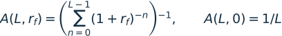
Source: scripts/simple_industry_policy.py; anchor: def capital_service; Representation: reindexed annuity-due identity, also explaining the capital-service convention.

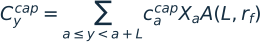
Source: scripts/CAPEX_OPEX_Gurobi_settings_dual_industry_categories1.py; anchor: capital_finance_rate; Representation: structural vintage-payment accounting; paid-back/existing-asset conventions remain asset-specific.
The reader's sparse-grid multiplier depends on the years in the applicable solve. It is not automatically equal to the distance between every pair of decisions.

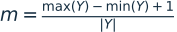
Source: scripts/read_process_data.py; anchor: multip =; Representation: reindexed solve-grid multiplier.
Variable costs include fuel, conversion operation, trade, carbon payments and configured shortages/surplus penalties. A representative-hour weight belongs in annual flow accounting exactly once. Restoring cost units requires following each implemented conversion and the overall objective multiplier.

Source: scripts/CAPEX_OPEX_Gurobi_settings_dual_industry_categories1.py; anchor: _period_weight; Representation: structural EUR-to-MEUR hourly-flow cost term, not the complete variable-OPEX equation.
3. Available capacity, retirement and investment windows
Available capacity consists of surviving legacy stock plus surviving new vintages. Each asset family has its own retirement curve, historical handoff and possible remaining-capacity fraction. A nominal lifetime should therefore not be replaced by an assumed abrupt retirement unless that is the actual branch.

Source: scripts/Build_model_dual_industry_categories_named_debug.py; anchor: available_capacity_year; Representation: structural capacity/vintage accounting; sigma denotes the family's implemented survival rule.
An annual build ceiling and a total installed ceiling are different constraints. For decisions in 2025 and 2030, the standard global investment windows are 2025 and 2026–2030 respectively. Resuming in 2030 must not redefine that global interval.

Source: scripts/investment_windows.py; anchor: def investment_windows; Representation: structural annual-limit aggregation and installed-capacity bound.
This summation is not universal for every legacy limit row: use the relevant family reader. In the supported annual industry-limit convention, a year-specific entry takes precedence over a scalar fallback; missing/blank fallback may mean unrestricted, while zero is binding. Generic and fuel-store readers have their own defaults. Never replace all missing investment limits with zero or a large arbitrary number without checking the selected sheet.
4. Electricity production and zonal balance
Dispatchable generation is bounded by available plant capacity. Reserve margins, ramp limits, CHP regions and fuel supply can impose further bounds.

Source: scripts/Build_model_dual_industry_categories_named_debug.py; anchor: max_output_dispatch =; Representation: reindexed dispatchable output bound.
The inspected non-dispatchable branch uses an equality to available output. It does not implement the same equation as a generic plant-level inequality with a freely chosen curtailment variable. System surplus/CEEP is handled elsewhere.

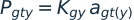
Source: scripts/Build_model_dual_industry_categories_named_debug.py; anchor: max_output_nondisp =; Representation: reindexed non-dispatchable generation equality; the year index on a depends on simple_curves.
The zonal electricity balance equates supply plus unserved-load relaxation to consumption, exports and surplus. The compact equation groups many separate source terms; only enabled modules contribute. Product-industry baseline removals and DSM adjust the basic demand term rather than add electricity generation.

Source: scripts/Build_model_dual_industry_categories_named_debug.py; anchor: name="el_balance"; Representation: structural zonal balance with sector, carrier, conversion, storage and transfer terms grouped.
The source explicitly constrains changes in outside import/export flows. The compact ramp envelope below describes those flows, using the bound assembled from the applicable outside-route capacity and ramp coefficient. A GENCO column called RampUpRate does not by itself prove that every generator has an active hourly ramp constraint. Representative predecessor maps are not automatically continuous real-calendar chronology.

Source: scripts/Build_model_dual_industry_categories_named_debug.py; anchor: max_transfer_systimpexp_outside_import_ramp_up; Representation: structural outside-flow ramp envelope; initial-period and route-specific coefficients remain in the source.
Unserved-load and CEEP penalties have different physical meanings: the former relaxes shortage, the latter penalizes surplus. Turning off ceep_limit removes a cap, not necessarily the objective penalty. No equation in this model establishes nonlinear AC voltage stability, frequency response or N-1 security.
5. Electricity links, losses and outside trade
An active route is bounded by its available transfer capacity. HVDC is an eligible link technology with applicable converter requirements, not a separate energy balance. Primary, secondary and external routes use their own mappings and indices.

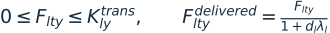
Source: scripts/Build_model_dual_industry_categories_named_debug.py; anchor: name="el_balance"; Representation: structural route-capacity bound with the delivered-flow loss convention appearing in the electricity balance.
Outside-system supply composition and normalized curves can add hourly import/export availability. Annual outside-trade calibration is an independent restriction; removing either one does not imply unlimited imports. Link duplications, different distance multipliers and secondary routes require reading the selected input rows rather than assuming one uniform distance/loss coefficient.
6. Stationary electricity storage and hydro
The examined stationary store withdraws stat_discharge directly from its inventory and applies stat_grid_eff to charging in the stock balance. Keep the electrical delivery convention in the separate electricity-balance terms; do not apply a second guessed round-trip efficiency.

Source: scripts/Build_model_dual_industry_categories_named_debug.py; anchor: stat_storage_soc =; Representation: reindexed stationary stock transition with its energy-capacity bound grouped.
The first period uses the configured initial stock rather than a nonexistent predecessor. Charging/discharging power limits and cyclic conditions are separate. One physical-hour stock transition must not be multiplied blindly by a representative annualization weight.
For the simple-curve reservoir branch, inflow is scaled by the source's plant reference capacity and hydro efficiency, while electrical generation withdraws stock divided by efficiency. Spillage is a stock outflow.

Source: scripts/Build_model_dual_industry_categories_named_debug.py; anchor: name="storage_level_balance"; Representation: reindexed reservoir balance; first-period initialization and year-indexed curves are separate branches.
Pumped storage also consumes electricity when pumping. Existing inflow, reservoir volume, turbine/pump power and annual calibration/caps constrain operation jointly. Pumped discharge is not a newly created primary renewable resource.
7. Native renewable-electricity share
Let G_N, G_B and G_H denote the raw modeled-period generation sums over the source's non-dispatchable, biomass and hydro collections. Let G_F, G_P, G_D and G_R denote its fossil, pumped-hydro, dam and run-of-river collections. The native RPS relationship is:

Source: scripts/Build_model_dual_industry_categories_named_debug.py; anchor: rpscondition; Representation: reindexed source-set summation; this row uses modeled-period sums rather than an assumed all-energy denominator.
These collection names describe actual source sets, not an assertion that every set is disjoint or that imports have certified renewable origin. The displayed source row does not explicitly apply representative-hour weights. Review the chosen temporal mode and set definitions before interpreting it as a weighted annual statistic. Setting rho to one does not impose 100% renewable energy in heat, transport, industrial materials or imported fuels.
8. Individual heat, district heat, CHP and thermal storage
Boilers and heat pumps convert their input to useful heat, but their coefficients have different physical interpretations. A COP above one represents ambient/source heat transferred into useful heat.

Source: scripts/Build_model_dual_industry_categories_named_debug.py; anchor: heat_pump_ind; Representation: structural boiler/heat-pump conversions, with fuel and COP mappings suppressed.
Individual and district balances combine enabled boilers, HPs, CHP, solar and thermal storage. District losses and the source's delivered-heat boundary must be retained.

Source: scripts/Build_model_dual_industry_categories_named_debug.py; anchor: heat_balance; Representation: structural heat-balance family; separate individual/DH and rolling-shortage branches are grouped.
The shared CHP helper attributes condensing-equivalent output to both fuel cost and combustion emissions:

Source: scripts/energy_accounting.py; anchor: def power_fuel_input; Representation: reindexed shared CHP fuel accounting.
CHP operating regions additionally couple electrical and thermal output. Supplying heat reduces the admissible electricity output in the extraction branch, while a separate power-to-heat relationship restricts feasible operation. The compact envelope below states that mechanism; exact coefficients and extraction/backpressure branches remain input-specific.

Source: scripts/Build_model_dual_industry_categories_named_debug.py; anchor: gen_heat_extraction_max; Representation: structural extraction-CHP upper envelope, not its complete feasible region.
Thermal stores shift heat between periods using charging/discharging efficiencies, losses, energy/power capacity and initialization/closure rules. Building HP storage, district storage and category industry storage are distinct asset families; enabling one does not activate the others.
9. Heating transition policies
Annual useful heat is obtained by aggregating the appropriate hourly service. A relative nonincrease or change limit applies to this scoped annual quantity, not necessarily to each hour.

Source: scripts/fossil_heating_nonincrease.py; anchor: def add_fossil_heating_nonincrease; Representation: structural annual heating/history accounting and nonincrease rule.
Fuel-specific boiler phaseout makes applicable boiler operation unavailable by its deadline. The source excludes CHP from this boiler-specific rule; other carbon and CHP heat restrictions may still bind. Electric/gas annual changes, CHP calibration and biomass nonincrease have their own scopes and tolerances. Turning one off does not turn the others off.
10. Legacy industry, categories and the pooled remainder
Useful industrial demand is allocated across eligible equipment, while final carrier input follows efficiency/COP. The category version adds the service/temperature category index to the same physical idea.

Source: scripts/Build_model_dual_industry_categories_named_debug.py; anchor: industries_share_fuel; Representation: structural industrial service/efficiency family; share variables and unit-specific carrier recipes are suppressed.
Detailed rows excluded from explicit modeling must be accounted for in the legacy pooled simple_industry worksheet. Excluding a row changes representation; it must not delete its demand. A valid mixed case can model selected services explicitly and pool the rest.

Source: scripts/read_process_data.py; anchor: simple_industry; Representation: structural accounting invariant for detailed-versus-pooled services; not a claim that every workbook formula is automatically recalculated.
An all-excluded case pools the applicable legacy industry. A fully detailed case can have an empty remainder. This pooled worksheet is unrelated to the separate product workbook data/simple_industry.xlsx.
Applicability ceilings cap a technology or fuel family's useful-service share. Shared substitution budgets prevent several alternatives from independently consuming the same replaceable service pool.

Source: scripts/Build_model_dual_industry_categories_named_debug.py; anchor: industry_low_carbon_fuel_substitution_cap; Representation: structural individual/shared service substitution limits.
11. Process-based complex industry
Only selected complex branches replace their overlapping legacy demand. Product activity and component intensities determine useful-service requirements and independent process emissions.

Source: scripts/complex_industry_support.py; anchor: activity; Representation: structural product/component service and process-carbon relationships; native activity may be tonnes or a declared index.
Non-energy feedstocks, combustion and process emissions must not be counted twice. Product demand, component coverage, compatible carriers and process capture are separate input dimensions. The author reports testing the complex formulation for non-metallic minerals; availability of additional process rows does not establish a validated transition in every sector.
12. Annual industry transition, HP applicability and heat storage
The annual direct-electric plus HP share is weighted by delivered industrial service. It is not the electrical input share because HP COPs differ from one and from direct-electric equipment.

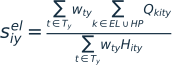
Source: scripts/industry_annual_s_curve.py; anchor: def add_annual_industry_electricity_limits; Representation: structural demand-weighted annual electric-service share.
The finite completion progress is a cubic smoothstep between the original base year and configured deadline. This is distinct from a generic logistic curve. Additional seed, growth, direction and reference-interval rules constrain the endogenous adoption envelope; the smoothstep below is not the complete S-curve implementation.

Source: scripts/industry_annual_s_curve.py; anchor: def completion_progress; Representation: reindexed finite completion-progress function.
A relative annual electric-share decrease allowance acts on the previous share. For a one-year step with a 10% reduction allowance, 40% becomes a minimum of 36%, not 30%. Multi-year history/reference-interval formulas must be taken from the helper.

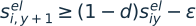
Source: scripts/industry_annual_s_curve.py; anchor: industry_electric_share_max_annual_decrease; Representation: structural one-year interpretation of the combined electric-service decrease bound.
Industrial HPs also share cumulative temperature and source-heat budgets. A 60°C potential and an 80°C cumulative potential are not independent quantities to add. Category thermal stores have separate energy inventory, charging/discharging and investment bounds and require category mode.
13. Transport service, stock and fuel compatibility
Fleet evolution combines surviving existing vehicles, surviving new purchases, retirement and eligible paid conversions. It is continuous vehicle-equivalent stock in this LP, not an integer fleet purchase schedule.

Source: scripts/Build_model_dual_industry_categories_named_debug.py; anchor: name="veh_stock_balance"; Representation: structural fleet/history/conversion accounting.
Service demand and final energy are separate. Stock, driving/activity profiles and primary/secondary fuel efficiency define the admissible hourly service and energy requirements. The notation below groups those technology-specific details in the coefficient kappa.

Source: scripts/Build_model_dual_industry_categories_named_debug.py; anchor: name="transport_energy_profile"; Representation: structural transport service/energy coupling; coefficients and native passenger-km/tonne-km conversions remain explicit in the reader.
Blend compatibility can be volume-based while the energy balance is energy-based. The model's conversion and paid-upgrade rules must be retained; a 10% ethanol volume limit must not simply be inserted as a 10% MWh share. Marine pilot fuel, upgrade costs and remaining life create additional requirements.
Annual service ceilings, stock electrification floors, turnover, investment limits and ICE fuel-composition ramps are distinct policies. V2G can discharge only within fleet battery/plug-in/driving constraints; the battery cannot both satisfy arbitrary mobility and arbitrary grid deliveries without its stock balance.
14. Hydrogen and e-fuel conversion
Hydrogen output is limited by installed conversion capacity. The appropriate input efficiency links electrolysis to electricity consumption and reforming to fuel/carbon inputs.

Source: scripts/Build_model_dual_industry_categories_named_debug.py; anchor: name="h2_electrolysis"; Representation: structural electrolyser capacity/input relationship.
E-fuel equipment has an output capacity bound. For each enabled conversion recipe, feedstock slots are proportional to output; coefficients have the slot's declared units, which can be MWh carrier, tCO2 or another physical feedstock unit per output unit.

Source: scripts/Build_model_dual_industry_categories_named_debug.py; anchor: efuel_inputs1 =; Representation: reindexed feedstock-slot proportionality with the separately implemented output-capacity bound grouped.
Each carrier must balance production, imports, storage and downstream uses. Hydrogen used to make another fuel is not also available to meet final H2 demand. Heat/electric auxiliaries and refinery process energy are additional coupled loads.

Source: scripts/Build_model_dual_industry_categories_named_debug.py; anchor: efuelinput1; Representation: structural carrier-node balance; transport, industry, refinery, terminal and transfer terms depend on the active carrier.
Carrier stores have asset-specific losses, efficiency, charging/discharging and annual boundaries. The generic expression indicates those roles rather than assert a universal efficiency placement:

Source: scripts/Build_model_dual_industry_categories_named_debug.py; anchor: fuel_storage_capacity; Representation: structural carrier-stock notation; inspect actual family coefficients, initial stock and chronological carryover rules.
The author's supplied integrated e-fuel setup enables both e-fuel modeling and explicit Oil/Gas product supply. Alternative supply exclusions need complete compatible data. Turning e-fuels on makes conversion available; demand, prices, resource limits and carbon constraints determine whether it is built.
15. Pipeline and terminal capacities
Without e-fuels, the standalone H2 pipeline and aggregate H2 terminal representations can be used where their dependency checks pass. With e-fuels, product transmission already includes the H2 pathway and the standalone H2-transmission flag is normalized off. Terminals can be used with or without e-fuels, but their input schemas and physical detail differ.
The standalone terminal throughput capacity is in TWh/year. Its total allowed loading/unloading throughput must be converted to MWh, while zonal H2 stores provide buffering. Shipping routes impose their own allowed directions, fleet, travel/delay and delivery assumptions.

Source: scripts/h2_terminals.py; anchor: Terminal capacity is annual TWh; Representation: structural aggregate shared-throughput limit; include the source's precise flow collection and scope.
Terminal activation and allowed directions are table-level choices in addition to model_terminals=True. An enabled terminal with no allowed/eligible route is not an unlimited import source. Aggregate delivered H2 terminals do not represent a detailed vessel/liquefaction/cracking chain unless that chain is supplied by the applicable product formulation.
16. CO2 feedstock, capture, amines and geological provenance
Industrial combustion factors used in the emissions budget and physically recoverable carbon used for capture/feedstock can differ for biogenic sources. For a combustion input, the compact relationship is:

Source: scripts/complex_industry_accounting.py; anchor: def combustion_factor; Representation: structural distinction between budget and physical capture/feedstock carbon.
Under the supplied convention, qualifying industrial biomass CO2 can supply feedstock while its biogenic combustion factor does not add fossil emissions to the aggregate budget. This is a bookkeeping convention, not proof of sustainable biomass or full lifecycle neutrality. Process emissions, captured process carbon, DAC and eligible biomass carbon can provide e-fuel CO2 under their actual mappings and capacities.

Source: scripts/industrial_carbon_balances.py; anchor: def add_industrial_carbon_balances; Representation: structural grouped CO2-bus accounting; source restrictions determine which terms may serve each destination.
Capture is bounded by both equipment and available flue gas. The separated process component is bounded by process emissions and the total capture; several capture technologies cannot each claim another copy of one branch's process stream.

Source: scripts/industrial_carbon_balances.py; anchor: captured[key] <= rate * process; Representation: reindexed process-capture upper bounds; shared-source bounds are additional.
An amine inventory separates absorber capture timing from stripper timing. The process-tagged inventory must remain a subset of the total physical amine inventory.

Source: scripts/industrial_carbon_balances.py; anchor: inventory[key] == previous; Representation: reindexed process-tagged amine stock relation.
With separated carbon balances, only eligible locally stripped process CO2 can supply geological injection. Untagged imports, reusable buffer withdrawals, DAC or combustion carbon do not gain process provenance by sharing a bus.

Source: scripts/industrial_carbon_balances.py; anchor: Only locally; Representation: structural provenance upper bound; the exact scoped process balance and competing uses remain in the source.
Geological inventory counts stored tonnes, while injection capacity counts tonnes/hour. Initial stock, total storage capacity and annual build limits are additional. Reusing CO2 in a fuel is not permanent geological sequestration.
17. Carbon limit, LULUCF and infeasibility
For the separated-carbon planning branch, non-process emissions plus net industrial process emissions must respect the policy allowance plus permitted removals. The source scales this row by 1000 numerically; the physical relation remains tonnes.

Source: scripts/Build_model_dual_industry_categories_named_debug.py; anchor: CO2_total_non_process[year, System] + CO2_net_industry_process; Representation: reindexed separated planning carbon cap before numerical row scaling.
Process emissions can make a stringent carbon cap infeasible even after fossil combustion is removed. Capture plus active geological stock/injection capacity can reduce eligible net process emissions, while a defensible LULUCF allowance can offset the budget. These are different mechanisms. LULUCF does not physically receive process CO2 and does not supply e-fuel feedstock.
Both the main storage/capture switches and matching active technology/capture/storage rows must permit geological handling. A True flag cannot overcome zero capacity/build limits, no capturable stream, missing reboiler energy or a forbidden source. The required-capture switch only concerns eligible capturable process carbon; uncapturable residuals can still violate a zero budget.
In rolling dispatch, a cumulative/weighted carbon allocation and optional penalized slack replace the ordinary planning cap treatment. A reported rolling solution with positive carbon slack has relaxed the strict allocation and must be disclosed as such.
18. Electricity demand-side management
Let b be basic electricity after its applicable decomposition and baseline removals. Signed DSM adjustments change timing but do not create generation. Daily and weekly classes share hourly power, including absolute activity, so opposite actions cannot hide capacity use.

Source: scripts/electricity_dsm.py; anchor: dsm_total_absolute; Representation: structural aggregation and absolute-adjustment linearization.

Source: scripts/electricity_dsm.py; anchor: dsm_shared_power_capacity; Representation: structural shared available-power and hourly baseline-fraction limits.
Each class balances energy within its block. The half-absolute sum counts moved MWh once rather than charge the upward and downward leg as two independent shifted quantities.

Source: scripts/electricity_dsm.py; anchor: budget; Representation: structural daily/weekly block closure and moved-energy allowance.
With both classes and energy budgets enabled, the weekly pool is a subset of daily-capable flexibility. At full rollout the supplied values give 5.5% daily-balanced plus 1.5% weekly-balanced, totalling 7%.

Source: scripts/electricity_dsm.py; anchor: dsm_weekly_energy_fraction; Representation: reindexed nested class-potential interpretation when both budgeted classes are active.

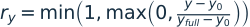
Source: scripts/electricity_dsm.py; anchor: dsm_availability_full_year; Representation: structural linear rollout for a full-availability year after the global base year; boundary validation remains in the helper.

Source: scripts/electricity_dsm.py; anchor: def operating_cost; Representation: structural DSM enabling/activation resource cost in EUR before the model's cost conversions.
The hourly 10% symmetric cap can limit moved energy to 5% of a block's load even if the energy allowance is 7%. An unexhausted energy allowance is therefore not by itself evidence that the modeled flexibility is uneconomic. Block balancing is not an appliance-specific delay/deadline model.
19. Product industry: recipes, stocks and mandatory demand
The separate product workbook supplies fixed plants/recipes and markets. Physical capacity is a production ceiling, not a requirement to operate at nameplate output. Electricity follows tonnes produced and the plant-specific MWh/t coefficient; non-electric inputs follow GJ/t recipes.

Source: scripts/simple_industry_model.py; anchor: simple_industry_electricity_balance; Representation: structural production-capacity/availability bound and reindexed electricity conversion.

Source: scripts/simple_industry_inputs.py; anchor: def direct_factor; Representation: reindexed fixed-recipe direct-carbon factor and structural fuel use.
Inventory preserves origin. A plant's output can be stored and then delivered to compatible destinations; delivery uses up inventory, and bounded initial/final stock rules prevent free product.

Source: scripts/simple_industry_model.py; anchor: stock[key] == previous + output[key]; Representation: reindexed plant material balance.
Mandatory markets must receive their prescribed annual tonnes under the applicable sample normalization and hourly demand/delivery limits. Optional markets impose sales ceilings rather than a compulsory sale.

Source: scripts/simple_industry_model.py; anchor: mandatory; Representation: structural annual mandatory/optional market interpretation; hourly profile constraints remain additional.
Outside suppliers share one annual budget across all destinations and have hourly caps. Optional route rows can restrict eligibility and route throughput/cost. There is no unlimited emergency product supply.

Source: scripts/simple_industry_model.py; anchor: import_suppliers; Representation: structural outside-supplier annual/hourly shared limits.
Calibrated baseline electricity removal avoids counting a real plant twice. Removals are year-specific MWh distributed by their profile; the example uses zero removals, so product plants add load.

Source: scripts/simple_industry_model.py; anchor: def baseline_removed; Representation: structural baseline-removal and added product-electricity accounting; excessive removals are rejected by the input logic.
Flexible eligible plants can vary hourly. With flexibility disabled, the corresponding operation is constant within each calendar day after availability adjustment; it can change between days. It is not equivalent to imposing a full-year flat production level or requiring local plants to satisfy all demand.
20. Industrial CBAM and domestic carbon pricing
For a modeled plant, direct emissions and entered precursor carbon determine the embedded footprint. Imported offers supply their own embedded factor. The domestic-price payment concerns direct emissions after its configured allowance; it is independent of the product border charge.

Source: scripts/simple_industry_policy.py; anchor: def coefficients; Representation: reindexed modeled-plant embedded factor and domestic per-tonne payment; imported suppliers use their entered footprint/cost treatment.
CBAM liability uses the supplied footprint, benchmark/free-allocation factor, EU price and eligible foreign credit. These max operations are performed on exogenous input coefficients before building the LP; they do not create a nonlinear variable-times-variable carbon-price calculation.

Source: scripts/simple_industry_policy.py; anchor: liable = max; Representation: reindexed exogenous liable-footprint coefficient.

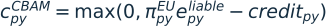
Source: scripts/simple_industry_policy.py; anchor: cbam = max; Representation: reindexed exogenous CBAM coefficient conditional on origin/start-year/exemption and destination eligibility.
The charge applies once to eligible delivery to an EU destination using original supply provenance. Fiscal/exporter/importer allocation can differ from territorial emissions. A cleaner modeled territory can simply be importing more embodied carbon; report both accounts. These equations describe the implemented scenario representation, not a legal compliance calculator or endogenous global steel-price equilibrium.
21. Electricity CBAM intensity and historical signals
Electricity Options 1–4 use their own membership, border and national-payment rows. At most one is permitted, and the inspected builder requires Myopic=True. They are independent of product CBAM and a quantity carbon cap.
An import-charge term is structurally transferred electricity times an exogenous source-zone intensity and applicable carbon price/credit. The precise border/national split depends on the selected option.

Source: scripts/electricity_cbam.py; anchor: def intensity; Representation: structural cost-coefficient interpretation; option-specific price and membership rows remain in the builder/cost script.
The intensity helper uses historical/base-year signals for the base year, realized predecessor signals for subsequent decision years, and permitted exogenous overrides/held signals in lookahead years. A valid zero intensity is retained. Missing or duplicate required realized history is an error, not a reason to assume zero-carbon imports.
22. Planning windows, representative accounting and rolling chronology
Ordinary myopic chunks are slices of the decision-year list. chunk_size and step_size count entries, whereas the partial-foresight lookahead is measured in calendar years.

Source: main.py; anchor: def _build_myopic_chunks; Representation: reindexed ordinary chunk construction with c=chunk_size and h=step_size.
Ordinary partial foresight instead selects future decision points up to the calendar lookahead. The decision year retains full hours; later years use their sampled blocks.

Source: main.py; anchor: partial_foresight_lookahead_years; Representation: reindexed finite-lookahead year selection; None uses the remaining tail.
The delivered representative capacity settings are four blocks of 24 hours, even though their identifiers contain the word week. A uniform 8760/96 factor is an accounting illustration for the supplied equal-weight sample; actual _period_weight and helper annualization must be followed in every family.

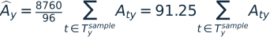
Source: policy/runtime_policy.py; anchor: representative_week_hours; Representation: derived equal-weight annualization example for four 24-hour blocks; not a universal storage transition multiplier.
In daily rolling mode, optimize 48 hours, commit 24, then advance by 24. In weekly rolling mode the corresponding values are 336, 168 and 168. The next solve receives the last committed state rather than the uncommitted end of the forecast window.

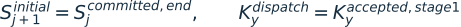
Source: scripts/run_stage2_rolling_dispatch.py; anchor: rolling_realized_horizon; Representation: structural rolling carryover and fixed-capacity principle; stock, route-delay, carbon and checkpoint metadata remain family-specific.
Guidance, terminal targets, reserve/shortage relaxations and forecast perturbations affect the rolling result. Full-year chronology with fixed capacity is different from reoptimizing capacity using full-year foresight. The author's report of improved no-e-fuel intra-annual stability is not evidence that every e-fuel/terminal/process combination has passed the same test.
23. Numerical scale, residuals and interpretation
Explicit row and column scales aim to improve conditioning without changing physical units. An equation divided by a large row scale can have a small solver residual while its restored physical residual is material.

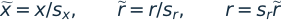
Source: scripts/numeric_scaling.py; anchor: def balanced_row_divisor; Representation: structural scaling identity; actual divisors vary by family.
Output completion is not a strict solution certificate when provisional acceptance, warning-only postoptimal checks or explicit slack are allowed. Report solver status, objective/gap where meaningful, physical MW/MWh/tonne residuals, nonzero shortages/carbon slack and which years were committed. The mathematical formulation, inherited assumptions and local solver outcome are distinct pieces of evidence.
24. How to use these equations in a study
Choose the physical representation first, then the time/information assumption, then the policy experiment. Record every departure from the delivered configuration. Associate each reported result with the relevant equation family, active input rows and physical unit. For example, new e-methanol output needs conversion capacity, H2, CO2, electricity/heat auxiliaries and compatible demand; a renewable-electricity share alone does not guarantee it appears.
Use R02 for the published H2RES optimization background and the reference register for data, technology and DSM sources. Cite the local version/hash and these later extensions separately. The source map is a reproducible documentation aid, not proof that all configurations or a complete national transition are feasible.
H2RES model manual
Documented model: D:\POSAO\H2RES_12.11.2026. Documentation edition: 12 November 2026. The source/version inventory identifies the exact files reviewed. The model is separate from the data-preparation interface.
The expanded mathematical formulation supplies 62 numbered equations with source anchors and physical interpretation. Use the main configuration guide for detailed workflow/combination instructions and the complete option reference for every recorded main/policy setting. The equations below retain the original narrative overview and complement the more detailed formulation chapter.
1. Model purpose, lineage and scientific use
H2RES is used to study integrated energy systems and transition pathways across electricity, heat, transport, hydrogen and other energy carriers. Its historical island-energy modelling lineage and the later optimization formulation are distinct developments. The 2004 island study and the 2022 planning formulation are appropriate background references; the newer local code contains additional processes and workflows that those articles do not document R01, R02.
The formulation examined here is a linear investment-and-operation model implemented in Python with Gurobi. The static inventory of active runtime source files found continuous variable declarations, including the _add_vars wrapper. Vehicle numbers may therefore be fractional optimization quantities; they are not automatically integer purchase decisions. A fuel called a binary choice in ordinary language does not imply a binary solver variable. Confirm the constructed model if additional user modules are added.
The model minimizes a configured economic objective subject to physical, stock, investment, service, network, resource and policy constraints. It can help compare pathways under alternative assumptions. It does not discover future policy targets, determine a unique forecast, prove causation in a real market, or by itself establish full lifecycle sustainability. Published H2RES applications are examples of model use, not a validation certificate for this source snapshot R03, R04.
2. Architecture and execution flow
2.1 Main runtime files
| File | Responsibility |
|---|---|
main.py | Working directory, scenario name, feature flags, file selection, caching, planning/dispatch execution and exports |
policy/model_policy.py | Entered economic, transition, resource and policy assumptions |
policy/runtime_policy.py | Numerical tolerances, sampling, solver and recovery settings |
policy/transport_pathways.py | Transport conversion/compatibility assumptions and default migration values |
scripts/read_process_data.py | Reads/scopes input tables, constructs sets/dictionaries, annual limits and processed demand |
scripts/reading_prev_and_vars_def_dual_industry_categories1.py | Loads historical decisions/stocks and declares optimization variables |
scripts/Build_model_dual_industry_categories_named_debug.py | Core physical/policy constraint construction |
scripts/CAPEX_OPEX_Gurobi_settings_dual_industry_categories1.py | Economic expressions, objective, solver configuration, optimization and recovery |
scripts/complex_industry_support.py | Validates/adapts process activity and replaces selected ordinary industry services |
scripts/industry_annual_s_curve.py | Demand-weighted adoption envelopes and shared electric-service transition policies |
scripts/transport_pathways.py | Fuel compatibility, paid conversion pathways and stock/energy links |
scripts/energy_accounting.py | Shared CHP fuel-equivalent and refinery physical accounting |
scripts/physical_solution_audit.py | Physical-unit checks for solutions and history |
scripts/run_stage2_rolling_dispatch.py | Rolling operational checks with fixed stage-1 capacities |
scripts/export_plot*.py and combine_plot.py | Investment/history exports, balances, summaries and visualizations |
Scripts are executed in a shared namespace through exec_script. A variable can therefore be created by a reader/helper and consumed later without a conventional function argument. Configuration provenance must include the imported policy modules as well as main.py. Static code review must account for this execution pattern.
2.2 Runtime sequence
main + three policy modules
-> select technology/policy/profile files
-> read and normalize inputs
-> choose planning/dispatch mode and time grid
-> load previous accepted investment/stock history
-> declare variables
-> build balances and constraints
-> define costs/objective and solve
-> check solution/status/physical quality
-> export accepted results and historical handoffsA separate data-preparation run stops before the model sequence above. Its optional bundle launcher configures the separate model in memory, redirects data paths and inserts the whole-energy renewable constraints before solving. The original model's main.py does not automatically read the preparation GUI settings.
3. Exact configuration and precedence
main.py changes its working directory to its own model directory, then executes the three policy modules in its namespace. It subsequently sets feature flags and derives file names. Reader/workbook settings supply additional numerical inputs. A preparation-bundle adapter can override selected flags and data paths at its supported execution boundary. The resulting precedence is contextual rather than a single universal JSON configuration layer.
The configuration reference lists source assignments and line positions. Values described below are the examined local snapshot, not universal H2RES defaults. Historical README files include other scenario names and mode selections.
3.1 Observed local selection
The reviewed main.py uses scenario name industry_CC_5y, Myopic=True, partial_perfect_foresight=False, heating and transport/industry enabled, e-fuels enabled, category industry enabled and complex industry disabled. Category electricity is conservative, industrial category storage is enabled, and industry fuel-share/S-curve controls are enabled. Solar individual/DH heating and cooling switches are disabled in this snapshot; model availability and a currently enabled option are different matters.
The snapshot also has transport pathway corrections/electrification/share ceilings enabled, standalone H2 transmission and standalone terminals disabled, and disable_transport_infrastructure=False. Transport infrastructure is therefore not suppressed by that debug switch. Product based simple industry and both daily/weekly electricity DSM are disabled in the delivered selection; they are documented in sections 19 and 20.
3.2 Mutually exclusive or dependent modes
Category and complex industry are alternatives. Complex mode requires transport/industry and cannot use the legacy single-sector industry option. Category industrial storage requires category mode. Standalone hydrogen pipelines are disabled when e-fuels handle carrier transmission. Standalone H2 terminals use a separate non-e-fuel implementation. Oil/gas product supply depends on e-fuels. These guards are executed, not merely suggestions.
The model policy defaults complex sector selection to Non_metallic_minerals; preparation may generate all eleven sectors. An exported selection must be applied explicitly in the model configuration or supported adapter. Otherwise a workbook containing all sectors can still run only the selected subset.
3.3 Input workbook selection
Technology file selection follows regular/category/complex and e-fuel flags. Category e-fuel conservative mode now selects data/flex_tech_efuel_categories.xlsx; its technical alternative selects data/variants/technical_2050/flex_tech_efuel_categories.xlsx. Complex electricity variants select the corresponding industry_complex*_electricity_technical_2050.xlsx process workbook while retaining their normal flex-tech filename. Categories and complex industry are alternatives. See the visual user guide and data reference for the exact mapping.
4. Spatial and temporal representation
Let s denote a model System, z a zone belonging to it, y a modeled decision year, t an operational period, g a generation asset, k another technology, f a carrier, i an industrial service/process and a an investment vintage. Assets and flows are created for active mappings; country names elsewhere in a workbook do not imply active modeled systems.
The full input calendar is normally 8,760 hourly positions. Operational subsets and representative weights depend on mode. A constraint using _periods_for_year(y) need not cover the same periods in every optimization year. Temporal metadata must be exported with results.
4.1 Perfect foresight
With Myopic=False and the applicable mode switches disabled, the model jointly chooses investments and operations across the modeled horizon. It knows the deterministic future input trajectories provided to it. Perfect foresight is an information assumption, not a claim that actual planners possess those forecasts.
4.2 Myopic planning
With Myopic=True, overlapping windows are built from the planning grid and setup controls. The model solves a window, accepts/exports its decision-year results, and carries historical decisions into later windows. Already accepted years are not reoptimized as freely as future years. New scenario names and coherent histories are necessary after material changes to costs, units or policies.
4.3 Partial perfect foresight
This mode combines detailed current-year operations with sampled future-year operations in each myopic solve. Future samples guide current investment, but they are not an independently validated full-year dispatch for those future years. The current source uses explicit per-year period sets and sparse variable creation. Read the configuration snapshot for representative-day settings; do not assume all years in a chunk contain 8,760 variables per asset.
4.4 Representative capacity planning and two-stage operation
Representative-capacity mode can sample configured weeks, with weights representing the full year. Lightweight mode exports only the capacity stage. Two-stage mode can subsequently export a fixed-capacity dispatch bundle and perform rolling operation. These approximations have different abilities to represent storage chronology, seasonal scarcity and ship arrivals. A representative-week optimum does not prove that a full chronological year is feasible.
4.5 Rolling dispatch
Rolling mode advances through operational windows with capacity fixed from a stage-1 bundle. It carries stocks, relevant fuel/terminal states and guidance into subsequent windows. Resume and stitching options can reuse accepted window files. Review terminal conditions, guidance penalties and automatic slack settings; they can relax a pure hard-feasibility interpretation.
5. Mathematical notation and decision variables
The following equations summarize implemented families. Asset-specific dimensions, history maps and flag branches are suppressed. The code reference and machine-readable call inventories give executable locations and conditional context.
| Symbol | Meaning | Typical physical basis |
|---|---|---|
| X(k,z,s,y) | New capacity decision | MW, MWh, vehicles, tCO2/h or another explicitly declared asset unit |
| K(k,z,s,y) | Available installed capacity | Same unit as the asset's capacity |
| P(g,z,s,t,y) | Electricity generation | MW for one-hour periods |
| Q(k,z,s,t,y) | Delivered heating/industrial service | MW useful heat/service |
| U(f,k,z,s,t,y) | Carrier/fuel input | MWh of carrier per hour |
| E(k,z,s,t,y) | Storage stock | MWh, tCO2 or other carrier stock unit |
| C,D | Storage charging/discharging flows | MW or corresponding hourly carrier flow |
| N(v,z,s,y) | Transport stock | Continuous vehicle-equivalent count in the LP |
| F(f,z,z',t,y) | Carrier transfer | MW-equivalent flow |
| H(i,z,s,t,y) | Industrial delivered-service demand | Useful MWh per hour |
| A(b,z,s,t,y) | Product activity | Tonnes or index-activity units per hour |
| w(t,y) | Representative period weight | Represented hours |
Variable bounds and scales differ by family. Scaled transport variables have physical-value wrappers; numerical solver column values must be converted back before comparing with raw vehicles, stock or energy data. State and investment symbols in this manual denote physical quantities.
6. Economic objective and investment accounting
6.1 Objective implemented in this source
The production objective has the following structure, in million currency units before an explicit solver scaling factor:
min sum_(y,z,s) DF(y) × [CAPEX_year(y,z,s)
+ multip × fixed_OPEX_year(y,z,s)
+ variable_OPEX_MEUR(y,z,s)]
+ rolling_carbon_slack_penalty
+ rolling_terminal_fuel_SOC_slack_penalty
+ stage2_quantity_guidance_slack_penaltyDF(y)=(1+discount_rate)^(-(y-discount_base_year)). The reader defines multip=(max(years)-min(years)+1)/len(years) for its solve grid. Variable-OPEX expressions also apply the configured annualization/multiplier and EUR-to-MEUR conversion. Those exact conventions matter on sparse decision-year grids. They must not be replaced in a report by an unexplained sum over every calendar year or by a different textbook objective.
The examined policy has discount rate 0.05, discount base year 2025, capital finance rate 0.05 and numerical objective scale 1000. Numerical scaling is intended to change conditioning, not physical economic units. Read exported objective/cost variables consistently with that scale.
6.2 Capital service and vintages
The cost script treats capital service as an annuity-due payment for each investment vintage. The first payment is in the build year, and payment continues while that vintage is within technical life. Its unit capital cost is the build-year cost, not each later year's learning-curve price. Payments after the modeled horizon are omitted under this accounting convention.
annuity_due_factor(L,r) = 1 / sum_(n=0 to L-1) (1+r)^(-n)
annuity_due_factor(L,0) = 1/L
payment(vintage a, year y) is due when a <= y < a + lifetimeCosts may be MEUR per MW, per MWh of stock, per vehicle, per tCO2/hour or per terminal TWh/year. Applying one unit cost to another basis can dominate the result while leaving the LP numerically feasible. The live source includes literature-linked annual fixed-OPEX data and generic/fallback technology mappings. Matched rows and fallback paths should be audited separately.
6.3 Operating costs, trade and penalties
Variable OPEX includes the appropriate fuel/commodity purchases, non-fuel operation, ramping, external trade and carbon charges, with special accounting for e-fuel recipes. Do not add a fuel bill a second time merely because its energy passes through several conversion assets. Revenue signs depend on import/export terms and market configuration. The code contains separate national/external-carbon options and fuel-specific prices; study documentation must identify the active option.
Unserved electricity, rolling heat/service shortages and selected guidance or carbon shortfalls can be penalized. These are scarcity/slack representations, not real zero-cost supplies. The configured electricity unserved-load cost is a scenario penalty, not a nationally estimated VOLL. A low objective obtained with nonzero slack must be reported as such.
7. Capacity, lifetime, decommissioning and build constraints
For an asset class, the general available-capacity relation is:
K(y) = surviving_existing_capacity(y)
+ sum_a survival(a,y) × X(a)Survival/retirement is asset-specific. Existing capacity uses remaining-life/decommissioning inputs; new vintages use technical life and the implemented retirement shape. Some families retain a final-life fraction. The exact helpers and history conventions should be used when interpreting the asset's investment CSVs.
Capacity may have a total ceiling and an annual build limit. They are different restrictions:
X(y) <= sum_(c in investment_window(y)) annual_build_limit(c)
K(y) <= total_installed_ceiling(y)Investment windows use the global decision-year grid. For endpoints 2025 and 2030, the first endpoint represents 2025 only and the next represents 2026–2030, including on resume. Blank annual limits use the legacy scalar if present; absent/blank scalar means unrestricted. Zero disallows additions but does not delete existing capacity. A period with an unrestricted year remains unrestricted under the relevant industry-limit reader. Negative/nonfinite supplied limits are rejected.
Generation-specific runtime build multipliers can further scale workbook limits. In the reviewed policy four Croatian wind/PV names have multiplier 2; that is a scenario configuration, not a universal country potential or model constant. Transport, terminal, capture and storage additions use their native physical units and may have separate active flags.
8. Electricity generation, networks and storage
8.1 Dispatch and renewable availability
Dispatchable output is bounded by available capacity and applicable technical constraints. Renewable output uses matching availability factors. Hydro run-of-river has flag-dependent equality/inequality behavior in the source. Curtailment or excess electricity is represented where enabled; do not assume every renewable MWh available must be delivered.
The principal electricity balance includes generators, fuel cells, relevant storage discharge, vehicle-grid services, net imports and an explicit unserved-load variable. Demand includes baseline electricity plus endogenous heating, industry, transport, electrolysis, synthesis/CC and storage charging, adjusted under the code's baseline conventions.
generation + fuel_cells + discharge + delivered_imports + unserved_load
= baseline_load + endogenous_sector_electricity + charging + exports + excessThe exact terms and signs are in el_balance. This is a zonal energy balance, not a full nonlinear AC network. Do not infer voltage, frequency, transient stability or N-1 security from hourly energy feasibility alone.
8.2 Network transfers
Primary/secondary links, outside links and carrier networks use input mappings, transfer capacities, losses and costs. One delivered-flow conversion appearing in the electricity balance uses 1/(1+distance_multiplier*loss); substituting a different loss formula in a methodology description would misstate this implementation. Outside-system availability can restrict imports/exports using hourly supply-share/curve tables.
Transmission duplicates can be resolved by the configured first policy. The log reports removed rows and conflicts. A deterministic rule does not prove that conflicting network data are correct. New country/system aggregation requires deliberate network and outside-trade calibration.
8.3 Electricity and generic storage
An illustrative physical stock relation is:
E(t) = retained_stock(t-1) + eta_charge × C(t) × dt
- withdrawal_for_discharge(t) × dt + natural_inflow(t)
0 <= E(t) <= storage_capacity
0 <= C(t) <= charge_power_limit
0 <= D(t) <= discharge_power_limitEfficiency may be applied to the stock transition or to the delivered balance depending on family; the source is the authority. Representative weights used for annual accounting are not automatically multi-hour storage transition durations. Initial/final/cyclic conditions can materially change apparent flexibility. The reviewed policy has storage_year_continuity_mode="cyclic", with additional rolling/fuel boundary controls.
8.4 Hydro reservoirs and pumped storage
Hydro includes plant-specific turbine capacity, storage, inflow and pumping where applicable. Water-energy stock balances and available generation are constrained separately. Pumped storage consumes electricity when charging; it is not a new primary renewable source merely because its fuel label is Hydro. The source/profile year and reservoir assumptions need to accompany any annual generation interpretation.
9. Buildings, district heating and CHP
The heating block meets individual and district-heating service demand using enabled fuel boilers, electric heaters/heat pumps, solar heat, CHP and storage. Each class has capacity, efficiency/COP and investment/retirement constraints. Cooling is a separate optional representation and is disabled in the examined selection.
For a boiler or heat pump, the conceptual conversion is useful_heat = efficiency_or_COP × input_energy. COP above one represents heat transfer from an external source. It is not electricity generation. Heat-source constraints, DH integration and storage options must be accounted for when comparing technology outputs.
CHP is coupled production. The shared physical helper uses condensing-equivalent electricity P + beta*Q; its fuel input divides that quantity by electrical efficiency. That expression is used consistently for the relevant costs and emissions. CHP feasible operating regions additionally use input ratios/parameters. Treating CHP heat as cost/emission-free while retaining the full electric output would double-allocate the fuel benefit R30.
Current heating policies include base-year plant heat calibration, annual limits on CHP heat change, electric/gas heating transitions, fossil-heat non-increase and an explicit boiler phaseout. The reviewed entered phaseout years are coal 2030 and gas/oil 2035; the source notes that CHP is excluded from that boiler rule. These are local scenario settings, not automatic national legislation. Solar and storage options remain subject to their switches.
10. Industry
10.1 Ordinary and category formulations
Industrial equipment supplies useful service while carrier demand depends on efficiency. Regular mode uses sector/service keys; category mode adds temperature/service categories. NON_HEAT is retained where applicable. Excluded detailed services can be represented in a pooled remainder with its own input row. The remainder must be consistent with selected detailed demand to avoid omission or duplication.
Initial useful-service shares, maximum shares, capacity and annual build limits interact. A maximum share is applicability, not a mandatory target. An investment ceiling does not change a fuel's compatibility with the process. An asset can be technically eligible but unable to expand quickly because turnover or adoption constraints bind.
10.2 Process/activity formulation
Complex industry replaces ordinary demand/technology rows only for its selected services. It uses branch product activity and component intensities:
useful_service(i,t,y) = product_activity(branch(i),t,y)
× activity_factor(i) × energy_intensity(i)
process_CO2(branch,t,y) = sum_i product_activity(branch,t,y)
× activity_factor(i) × process_intensity(i)Output can be tonnes or an index. The generic per-activity fields are authoritative. Process emissions are not added again as combustion of a non-energy feedstock. The adapter validates selected technology/process/product coverage, activity units, annual product demand, positive-service shares and heat-pump eligibility fields.
The supplied material convention treats non-energy gas/oil labels as H2-fed demand. That is a model convention rather than a universal chemical process representation. The Croatian ammonia exception and non-HR unresolved reclassification are documented in the preparation manual and assumptions register.
10.3 Fuel substitution budgets
The method distinguishes common low-enthalpy/steam/drying heat, process-specific heat, electrical/mechanical/cooling services, material feedstocks and reducing chemistry. Compatible substitute families include H2 and enabled synthetic fuels, with local/shared limits so the same replaceable pool is not repeatedly allocated without restriction. Biomass has a baseline-share ceiling, and lignin expansion is constrained to at most two additional percentage points of eligible local service in the supplied screening method.
These are replacement-equipment assumptions. They are not certification of blending in an unchanged incumbent burner. The authoritative latest fuel-compatibility handoff supersedes older zero-ammonia/narrow-hydrogen/unlimited-lignin comments R20, R21, R22.
10.4 Adoption trajectories and S-curves
Demand-weighted annual fuel/electric-service adoption constraints are separate from hourly dispatch. Technology switching can be optimized hour by hour within the accepted annual transition and applicability envelope. The electric service share combines direct electric equipment and industrial HP service; it is not simply their electrical input fraction.
The reviewed S-curve policy uses an endogenous envelope with initial fraction 0.02, growth parameter 0.50 and reference milestones every five years. Shorter model steps interpolate toward those milestones so seeds/tolerances are not restarted every year. Directions can be explicitly increasing/decreasing by fuel, unit or asset tuple; gas/coal/oil/biomass directions are entered policies. These parameters are scenario choices, not nationally measured adoption rates.
10.5 Industrial heat pumps and storage
Industrial HP units share cumulative temperature and source-heat budgets. If eligible shares below 60, 80, 125 and 150 °C are cumulative, their sum is not independent addressable demand. The builder also respects source and service restrictions. Category industrial heat storage is a separate optional asset family; enabling it outside category mode is rejected.
11. Transport and fleet transition
Annual transport service is met by stocks of ICE, hybrid, electric and fuel-cell equipment in road, rail, shipping and aviation classes represented in the selected workbook. Service/activity profiles, fuel input, stock, battery availability and infrastructure constraints have different units and purposes.
The stock identity is conceptually:
stock(y) = surviving_legacy_stock(y)
+ surviving_new_stock(y) + accepted_conversions_in(y)
- retired_or_converted_out_stock(y)Calendar aging and historical stock are explicit. The reviewed transport settings include turnover periods/ramp policy and maximum technology service shares. Some investment/rail-link/infrastructure switches are disabled in the local snapshot. Document those switches before interpreting an optimized transport pathway as an infrastructure plan.
ICE/hybrid primary-fuel recipes and paid upgrades use compat_* metadata. Drop-in hydrocarbons, FAME, alcohol blends, marine methanol/ammonia and pilot fuel have distinct configured paths. The source's default volume-share ceilings and retrofit premiums are screening assumptions; this documentation makes no claim that they constitute current legal approvals. Marine conversion parameters drawn from container-vessel literature are transferred to model proxy classes and require case-specific calibration R25.
EV plug-in availability constrains charging/V2G opportunities. Minimum battery state and activity-derived travel energy restrict storage use. The model can couple EV batteries to the power system, but a country-level normalized profile is not a location-specific charging-network observation.
Transport solver scaling is handled by physical wrappers. Very small fractional legacy stocks and saved residuals can cause degeneracy or infeasible histories. The code cleans tiny numerical residue using configured tolerances and checks physical history; changing tolerances can affect acceptance and should be reported.
12. Hydrogen, electrofuels, feedstocks and terminals
12.1 Hydrogen
Electrolyzers consume electricity according to conversion efficiencies and available capacity. Steam reforming can use gas with associated costs/emissions. Fuel cells convert hydrogen back to electricity. Zonal H2 service includes applicable transport/industry demand, conversion/feedstocks, storage and network exchanges. The active balance and supply switches must be enabled together for a meaningful carrier accounting.
12.2 E-fuel conversion recipes
The e-fuel representation includes technology rows and recipes for enabled carriers such as H2, ammonia, methanol, synthetic methane, diesel, kerosene and other workbook fuels. Electricity, heat, CO2, nitrogen and upstream carrier inputs are coupled through the recipe fields. Generic form:
input_j(k,t,y) = recipe_coefficient_j(k) × production(k,t,y)
production(k,t,y) <= available_conversion_capacity(k,y)Energy-carrier inputs and material inputs have different units. Nitrogen and CO2 must not be counted as energy simply because they appear in a feedstock table. Recipe coefficients and output energy bases require explicit checking; do not infer a balanced reaction solely from labels.
Fuel inventory states, conversion capacities, commodity purchases and trade can interact. The current code has separate initial stock and boundary/continuity options. An initial storage fraction is an assumption about available inventory, not a free replenishable primary-energy resource.
12.3 Oil and gas product supply
An optional e-fuel-associated block represents extraction/imports, crude refining and product supply. The shared helper accounts for product energy and a configured refinery process-fuel share. The reviewed share is 0.08. Whether fossil products may be exported is separately configurable and can materially change economic incentives. Assess exports and process fuel in both energy and carbon balances.
12.4 Standalone H2 terminals
The separate terminal module is enabled in non-e-fuel mode by its terminal/H2-balance switches. Inputs come from h2_terminals.xlsx, with asset and shipping-route tables. Capacity is annual TWh/year, converted to an hourly limit using 8,760 hours. Loading, unloading, imports and exports share capacity; losses and handling electricity are charged on the appropriate flows.
This is aggregate delivered hydrogen. It does not separately model every port tank, vessel, liquefaction or ammonia-cracking process. Local H2 storage supplies buffering. Carrier-specific project calibration therefore belongs in the aggregate assumptions or an explicitly extended model.
Detailed internal shipping has departure schedules, delay, cargo size and fleet occupancy. Representative planning can use an instantaneous/average-capacity approximation. The source prevents departures that would arrive beyond the annual boundary; such cargo does not automatically cross calendar years. The terminal's standalone representation and e-fuel terminal representation should not be conflated.
13. Carbon accounting, capture and renewable policies
13.1 Emissions scope
The model separately accounts for power/CHP, heating, industry, transport, reforming and refining emissions where active. Combustion coefficients, process CO2 and capture/storage flows are not interchangeable. The physical electricity/CHP helpers and stream-specific industrial emission factors avoid particular double-counting errors, but a complete study still needs a stated system boundary.
The ordinary budget has the conceptual form:
sum(enabled sector emissions) - credited geological_storage
<= policy_CO2_limit + permitted_LULUCF_removalExact coefficients/scaling and alternate branches are in the carbon-limit rows. LULUCF can be disabled or parameterized. The code's CO2 energy-system accounting is not a comprehensive product lifecycle, upstream methane, land-use, N2O, ammonia-slip or biodiversity assessment. non_CO2_polutants is explicitly marked incomplete.
13.2 Capture and geological storage
Capture capacity, rate, heat/electricity demand, reboiler capacity and optional intermediate storage impose technical and economic constraints. model_CC, post-generation CO2 storage and e-fuel CO2 feedstock are different switches. One can retain parts of the e-fuel CO2 handling even when a broader CC setting is disabled.
The separated industry-process/other-carbon representation restricts which captured streams can enter geological storage. It is enabled in this snapshot through separate_industry_process_carbon_balances=True; model_CC, amine storage and post-generation CO2 storage are also enabled. complex_industry_process_capture_required=False leaves process-capture deployment to the applicable carbon and technical constraints rather than universally forcing it. Untagged imported CO2 does not automatically become a certified process stream. Reuse of CO2 in e-fuels should not be described as permanent sequestration.
13.3 Renewable electricity share
The native RPS policy constrains qualifying electricity generation/share according to the source's numerator/denominator definitions. It is not a universal all-energy renewable fraction. Reservoir/pumped-storage treatment, imports, curtailment and generation calibration must be interpreted consistently with the actual equations.
13.4 Whole-energy renewable preset from preparation
The preparation adapter adds stricter endpoint restrictions for the selected res100/all-energy scenario. At and after the target, it blocks fossil/nuclear energy use in covered generation, heating, industry and transport, relevant reforming/refining flows, unverified outside energy imports and imports through routes whose endpoints are outside the active model geography. It also prevents unserved electricity from serving as a zero-origin substitute.
Because generic stores lack a renewable-origin tracer, affected initial stocks are cleared at the target boundary; subsequent internally renewable stocks may carry forward. Material CO2/nitrogen remain separate. Mixed fossil-waste industrial streams are blocked under the conservative origin treatment. Earlier non-electric transition is chosen subject to the other policies rather than a claimed linear whole-energy renewable trajectory.
This policy is an energy-origin definition, not net-zero CO2. Biogenic sustainability, upstream lifecycle burdens and independent process emissions require separate decisions. Its current launcher supports the standard myopic/perfect-foresight workflows and rejects the unsupported whole-energy two-stage combination. Feasibility may be prevented by fixed processes, feedstock conventions, build rates or resource limits.
14. Policy calibration and scenario design
Scoped policy workbooks can contain generation targets, hydro caps, transport targets, biomass caps and outside trade calibration. Rows are selected by active System/zone and modeled years. Some calibration applies only to the global base year; resource caps can apply in every year. Calibration targets are not all equivalent to future investment opportunities.
Before creating a new national study, review demand forecasts, technology prices, currency/base year, lifetimes, reserves, resource potential, fuel/commodity availability, network/outside trade, heat-share policies, transport turnover, industrial compatibility and process routes. Automatically sourced historical data do not determine those future scenarios.
Use one coherent baseline and document each changed assumption. A suggested sensitivity matrix varies demand growth, resource potentials, grid expansion, storage chronology, external trade, capital/operating costs, industrial transition rates, biomass eligibility and renewable-origin definitions. Optimized technology shares should always be interpreted conditional on this matrix.
15. Preparing and running a study
15.1 Environment and input validation
The separate model needs a suitable Python/Gurobi environment. Its supplied local reference lists Python-tested numerical packages and gurobipy==12.0.3; these are recorded local versions rather than a requirement that another compatible release is scientifically identical. Large national models need appropriate solver licensing and sufficient memory. No license credentials belong in published inputs.
For a native model run, work in the model's own folder, set a fresh scenario name and review the active flags, policies and file names. python main.py executes that model, including optimization; it is not a data-preparation command. Run an input-reader-only check before a costly solve, using a supported validation harness.
For a preparation-generated bundle, read bundle_manifest.json, validation.json, scenario.json and process-generation metadata. The generated integration launcher points at an existing model installation. Its default is input-reader-only; --solve explicitly requests construction/optimization. The preparation GUI does not invoke it.
15.2 Separate preparation integration
This validation command belongs to the model integration workflow, after preparation:
python outputs_all_HR/data/run_model_scenario.py --model-root "D:\POSAO\H2RES_12.11.2026"This command reads inputs without requesting optimization. Do not substitute a stale bundle merely because filenames exist. Adapter compatibility is version-specific; inspect model/source hashes when moving to another release.
The preparation contract was developed against the 2 November native layout. A current legacy bundle is not evidence that the new product-industry workbook, DSM assumptions or every later model extension has been generated or validated. Use the adapter validation output before considering a solve; this documentation did not validate that adapter against a full 12 November solve. Run the native model directly for the script-based workflow described in the visual guide.
15.3 Resume and historical decisions
Set resume options only for coherent, accepted results. Investment handoffs, fuel/vehicle/heat histories and terminal/stock files must belong to the same input convention and scenario. Changing costs, unit names, decision grid, physical scaling or technology representation while reusing histories can produce mathematically valid but inconsistent comparisons or an infeasible model.
A partial foresight run exports the accepted decision year, not every sampled future-year solution as a committed history. Failed/provisional outcomes need their quality gates before they can be used as later stock constraints. Preserve the exact logs and history files when investigating a transition failure.
16. Solver behavior and numerical quality
The cost script selects the primary solver method and applies numerical scaling/tolerances from runtime policy. The examined settings favor barrier for planning, with specialized annual-S-curve behavior and recovery options. A configured time limit of zero can mean unlimited in the implemented wrappers. Recovery calls may differ from the primary solve and can run for a long time.
Solver status and engineering quality must be reported separately. OPTIMAL means the solver's optimality criteria were met for the constructed problem and tolerances; it does not validate input realism. TIME_LIMIT or SUBOPTIMAL may have a usable incumbent but are not equivalent to a certified optimum. INFEASIBLE, INF_OR_UNBD and numerical failures require different diagnoses R28, R29.
Inspect primal constraint/bound violations, dual/residual information where meaningful, objective/bound gap and the model's physical balance audit. Numerical row scaling can make a small solver residual correspond to a different MW/MWh/tCO2 violation. Read the physical-unit gates before accepting exports. Do not use a higher tolerance merely to remove an inconvenient policy or stock inconsistency.
The delivered main.py has solver_allow_provisional_solution=True and solver_postoptimal_checks_warn_only=True. Consequently, a finished export can contain warnings or a provisional solution: completion alone is not a strict quality certificate. Runtime policy also requires annual capture-quality checks and sets a 0.1 physical-energy tolerance and a 0.001-tonne amine-mass tolerance in their applicable checks. Read the exported status and physical audits together with the actual branch that produced them; a warning is not proof that a gate stopped the run.
A barrier solution without crossover can lack a conventional simplex basis; shadow prices or recovery behavior need careful interpretation. Memory exhaustion can occur during building, presolve, factorization or export, and should not be labelled proof of physical infeasibility. Gurobi's numerical guidelines explain the general distinctions; the local configured thresholds are in the configuration inventory.
17. Results and interpretation
| Result family | Interpretation and checks |
|---|---|
| Investment/capacity CSVs | New versus surviving capacity, native units, vintage/retirement and decision windows |
| Hourly/yearly electricity balances | Generation, demand components, charging/discharge, losses, imports/exports and unmet load |
| Heat and industry outputs | Useful service versus final fuel input; direct-electric/HP shares; process replacement accounting |
| Transport stocks/flows | Vehicle-equivalent stock, demand service, primary/secondary fuel recipes and conversions |
| Hydrogen/e-fuel outputs | Production, upstream inputs, storage, trade and terminal throughput |
| Carbon outputs | Sector emissions, independent process emissions, capture/reuse/storage and budget/slack |
| Cost outputs | Unit bases, annualization, discounting, source price year and solver scale |
| Solver/quality logs | Status, method, runtime, recovery, objective/bound and physical residuals |
| Combined dashboards/plots | Derived presentation of accepted exports; not a substitute for balance tables |
Myopic results are commonly organized under results/<scenario>/<decision-year> with annual investment/history files; detailed paths depend on exporter and mode. Stage-2 bundles and rolling window/stitching outputs have their own metadata. Terminal outputs can include h2_terminal_flows.csv, annual capacity/summary tables and transfer_terminal_new_YEAR.csv.
Check that representative-period additive quantities are annualized exactly once. Installed capacities and shares are not summed like hourly energy. Compare runs on matching economic/energy boundaries and time grids. A shadow price is conditional on the active constraints and an accepted economic solution, not a forecast of a regulated tariff.
18. Validation evidence, inherited warnings and known limits
This documentation was produced by static source/input review and reference checking. It did not execute a fresh national solve. Local preparation reports establish bounded reader/schema/source-reconciliation results; they do not independently establish all model modes or years.
The supplied folder contains the unified-model implementation notes, component regression tools, and a historical critical-correction/rebuild harness. The current docs/UNIFIED_MODEL.md describes the integration of simple industry, electricity CBAM history handling and DSM. These are distinct from older verification files describing unpromoted candidates. In particular its verification.json distinguishes component tests, synthetic workflow fixtures and user-reported remote transition evidence, with no real local checkpoint promoted in that report. Historical run instructions and comments must not be cited as proof that those candidate fixes are active or that a full transition passed locally.
Validate the exact production objective and physical constraints in the documented source, then compare any proposed correction with its checkpoint/diff and acceptance certificate. A source hash, accepted transition log and scenario/input identity are stronger evidence than a filename such as corrected or a comment claiming a previous optimal case.
Principal study limitations are deterministic future inputs, spatial aggregation/proxies, sampled chronology in applicable modes, continuous transport stock, inherited technology/fuel compatibility assumptions, incomplete lifecycle/non-CO2 accounting, terminal aggregation, possible data-duplicate reconciliation and country-specific calibration gaps. The assumptions register makes these limitations explicit.
For a publishable run, archive the exact model/inputs, environment, flags/policies, source references/hashes, solve logs, quality certificates, decision/history files, representative weights and scripts producing reported tables/figures. Cite the H2RES scientific formulation and the actual data/technology references, while stating that this local version includes later extensions.
19. Basic electricity demand-side management in this version
scripts/electricity_dsm.py adds lossless load shifting to basic electricity demand. It does not automatically shift all heating, transport or industrial service demands. DSM_day, DSM_week, dsm_energy_budget_active and dsm_availability_ramp_active are all false in the delivered main.py. See the visual guide for activation and the supplied detailed DSM implementation notes for time-mode behavior and regression scope.
Runtime policy defines a 7% daily-capable energy pool that includes a 1.5% weekly-capable subset. With both classes enabled, 5.5% balances daily and 1.5% balances weekly. These are scenario upper bounds on moved energy, not measured Croatian loads or compulsory dispatch. The default rollout reaches its target in 2030 from the global base year. The separate shared hourly adjustment cap is 10% of baseline load; available-power cost is EUR 10,000/MW/year and activation cost EUR 5 per MWh moved.
For original hourly load b[h], signed class adjustments x[c,h], absolute adjustments a[c,h] and available power K, the main restrictions are:
new_basic_load[h] = b[h] + sum_c x[c,h]
a[c,h] >= x[c,h]; a[c,h] >= -x[c,h]
sum_c a[c,h] <= K
sum_c a[c,h] <= hourly_shift_fraction * b[h]
sum_(h in block) x[c,h] = 0
0.5 * sum_(h in block) a[c,h] <= class_energy_fraction * sum_(h in block) b[h]The half-absolute sum counts each moved MWh once. Daily blocks have 24 hours and weekly blocks 168, anchored at model hour 1; the last incomplete block also closes. Opposite class shifts share power and cannot cancel their capacity use. A symmetric 10% hourly cap can limit moved energy to 5% of block load even when the energy allowance is 7%. These are different constraints. This model does not represent individual appliance deadlines, load shedding or cross-zone demand relocation.
Review dsm_hourly_YEAR.csv, dsm_classes_YEAR.csv, dsm_summary_YEAR.csv and dsm_assumptions.json. Compare original and adjusted demand, net block energy, moved MWh, available power and enabling/activation costs. Changing budgets or rollout can invalidate existing histories and capacity bundles.
Demand-response background is provided by R35, R36 and R37; these sources do not validate the local energy-pool percentages or costs.
20. Product based simple industry and regional trade
This is a separate optional representation, selected by model_simple_industry=True and simple_industry_dat='./data/simple_industry.xlsx'. It is different from the worksheet named simple_industry inside a flex-tech workbook: that worksheet is the legacy pooled-service remainder. The new external workbook contains fixed industrial product recipes, physical plants and product markets. The delivered model leaves this mode off.
Enabling product industry configures the electricity-and-product-industry run and disables overlapping legacy transport/industry, category/complex, e-fuel, hydrogen and industrial capture/storage blocks. Heating retains its switch. Active example systems are HR, RS and BA through simple_industry_active_zones in model policy. Independent switches control industrial CBAM, domestic carbon pricing, outside imports, optional outside exports and flexible steel operation. Only one electricity CBAM option may be selected; electricity CBAM and product CBAM are separate accounts.
The workbook uses plants, inputs_per_tonne, economics, fuel_prices, markets, market_years, carbon_policy, import_suppliers, import_years, trade_routes, profiles, baseline_load and metadata. Production is tonnes per one-hour interval, electricity is MWh/t, non-electric recipes GJ/t and carbon factors tCO2/GJ. Supply ceilings, grid limits and inventories limit dispatch; nameplate capacity does not require production. Fixed-operation plants remain constant within each calendar day after availability adjustment; flexible plants may vary hourly under their limits.
Mandatory product markets must be supplied. Regional plants can trade; bounded outside offers are available only under their applicable switches and eligibility. One supplier's annual budget is shared across destinations. No unlimited emergency source or automatic demand reduction is introduced. Origin tracking preserves supplier footprints for final-destination carbon charging and separates territorial direct emissions from embedded trade emissions. Prices are prescribed; there is no endogenous steel-price equilibrium.
The supplied RS BF-BOF and BA scrap-EAF plants, external supplier prices/footprints and rest-of-Europe supply are illustrative scenario inputs, not calibrated named installations. The example requires RS 800,000, BA 300,000 and HR 1,000,000 tonnes/year, plus 134,000,000 tonnes/year for Europe outside HR. The European background offer serves that Europe market, not a bypass for domestic import restrictions. Check every price, quantity and route before drawing policy conclusions.
baseline_load specifies already-existing plant electricity to remove from the basic profile. Example removals are zero, so example plant loads are additions. Calibrating a real plant requires a defensible removal to avoid counting the same demand twice. Likewise, do not enter coke carbon in both the fuel recipe and process-carbon field.
Review simple_industry_hourly.csv, simple_industry_fuels.csv, simple_industry_sales.csv, simple_industry_markets.csv, simple_industry_summary.csv, simple_industry_imports.csv, simple_industry_demand.csv, simple_industry_cbam_borders.csv, simple_industry_fiscal.csv and the applicable levelized-cost summary. For field-level operation, trade budgets and capital/CBAM allocation, use the supplied simple-industry implementation notes. The unified-model notes report bounded component/8760-hour example evidence and known baseline regression exceptions; they do not certify a full national transition solve.
Complete configuration option reference
Scope: every assignment in the inspected top-level main.py and its three policy modules. This reference covers all 381 recorded assignments, including repeated/derived declarations and internal cache objects; the coverage report is generated from the actual configuration inventory. Function-local solver implementation variables are not additional user switches.
Each row gives the entered expression, its source line and its operational meaning. The entered default is not always the effective value: normalization, parent modules, workbook eligibility and execution-stage overrides still apply. Consult the configuration guide for dependencies and complete workflows, and the equation chapter for physical/economic interpretation.
Boolean controls accept Python True or False. Dictionary keys, exact unit labels, native units and supported string values matter. An empty mapping supplies no extra overrides for that mapping; it does not necessarily disable other model constraints. A setting marked diagnostic, internal, incomplete or test-only is not a supported physical scenario selector.
main.py
| Setting and source | Entered value / expression | Meaning and effect |
|---|---|---|
scen (main.py:20) | 'industry_CC_5y' | Scenario and results/history identifier. Change it for a new experiment; the text does not select years, sectors or policies. |
model_policy_dat (main.py:25) | './policy/model_policy.py' | Physical/economic policy module executed before most main switches. Its values are visible in the shared model namespace. |
runtime_policy_dat (main.py:26) | './policy/runtime_policy.py' | Temporal and numerical policy module. Change sampling, rolling windows and solver parameters here, not in an unrelated workbook. |
rps_inv (main.py:37) | True | Add the native renewable-electricity generation-share constraint using the selected policy workbook. False removes this constraint; it does not remove renewable technologies or carbon prices. |
carbonLimit (main.py:38) | True | Apply the planning emissions cap or applicable rolling budget. False removes this budget, while ETS/CBAM costs and technical capture constraints may remain. |
lulucf_removals_active (main.py:39) | False | Include the configured land-use removals allowance in carbon accounting. It offsets the permitted net budget and is not a CO2 capture, transport or storage technology. |
lulucf_removals_dat (main.py:40) | './data/lulucf_removals.csv' | Optional System/year removal trajectory. Check tCO2-equivalent/year and its interaction with the fixed removal setting. |
res_inv (main.py:41) | True | Select renewable-investment reporting/plot branches. This is not the RPS switch and does not independently permit or forbid renewable investment. |
hydro_storage (main.py:42) | True | Construct reservoir/pumped-storage operating equations for eligible hydro units. Turning it off is a different hydro formulation, not proof that hydro can meet the same chronology. |
save_csv (main.py:43) | True | Request applicable CSV result exports. Preserve these for history handoffs and audits; plots alone do not replace the required histories. |
ceep_limit (main.py:44) | False | Add the surplus-electricity cap relative to the modeled demand boundary. The surplus penalty can remain in the objective when this cap is off. |
Myopic (main.py:45) | True | True selects sequential planning with accepted historical decisions. False selects joint foresight unless a higher-priority automatic or fixed-dispatch workflow applies. Electricity CBAM Options 1–4 require True. |
partial_perfect_foresight (main.py:46) | False | In ordinary myopic planning, retain full-hour current-year operation and sampled future years within the configured lookahead. It does not mean all those future years have been validated hourly. |
simple_curves (main.py:47) | True | True reads reusable period-based inflow/availability curves. False expects the supported year/period schema. It is an input-layout choice, not a representative-time or spatial-resolution selector. |
outside_system_availability (main.py:48) | True | Apply additional hourly outside-grid import/export availability from the supplied shares and normalized curves. Turning it off does not remove every transfer-capacity or annual-trade limit. |
outside_system_supply_shares_dat (main.py:49) | './data/outside_system_supply_shares.csv' | Outside-system supply composition used to construct available trade. Keep System and technology mappings consistent. |
outside_system_normalized_curves_dat (main.py:50) | './data/outside_system_normalized_curves.csv' | Hourly normalized availability by outside supply type. Values constrain trade rather than create domestic generator stock. |
generation_source_calibration_active (main.py:54) | True | Apply supplied source/fuel generation calibration targets in their scoped years. Removing calibration frees that restriction but does not alter the generator inventory. |
hydro_generation_cap_active (main.py:55) | True | Apply the extra hydro generation cap from policy. Reservoir energy and turbine limits still have their own equations. |
outside_trade_calibration_active (main.py:56) | True | Apply configured annual outside-trade calibration targets. Distinguish these targets from hourly availability and network capacity. |
dh_chp_base_year_heat_calibration_active (main.py:57) | True | Match scoped district-CHP base-year heat to entered plant targets. Requires matching generator IDs and active heat demand. |
dh_chp_heat_yoy_limit_active (main.py:58) | True | Constrain annual changes in CHP heat according to the model-policy rate, historical tolerance and reduction-limit horizon. |
model_heating (main.py:61) | True | Enable heating demand, technologies and balances. Several legacy industry cost definitions are nested within heating in this source, so an industry run with heating disabled is not a documented fully costed preset. |
ratio_heat_indv (main.py:62) | True | Enable the legacy individual-boiler production/capacity constraint branch. Do not interpret this as a simple population-allocation or fixed fuel-share option. |
heating_shares_regulate (main.py:63) | False | Add links between heating technology shares, installed capacity and scaled peak demand. This is additional to annual energy balances. |
individual_heat_pump_storage (main.py:64) | False | Enable local heat storage in the individual-HP branch. Requires heating and eligible individual HPs; it is separate from district or industrial thermal storage. |
DH_Storage (main.py:65) | False | Enable the applicable district heat/cooling storage branch. Storage requires its own energy/power parameters and boundary conditions; it is not the industrial category store. |
NoResToHeatInv (main.py:66) | False | Legacy inverted gate: False permits the normal individual-HP electricity/capacity equations; True skips those gated equations. Do not use True as a general ban on renewable electricity feeding heat or as a safe freeze-investment option. |
model_Thermal_units (main.py:67) | True | Include eligible individual fuel-boiler technologies when heating is enabled. Existing/retirement and investment tables still determine available capacity. |
model_Thermal_units_DH (main.py:68) | True | Include eligible district fuel-boiler technologies when heating is enabled. CHP and district heat pumps remain separately controlled. |
model_HP_units (main.py:69) | True | Include individual heating HP technologies and their COP/electricity links. Requires coherent thermal demand, costs and COP data. |
model_HP_units_DH (main.py:70) | True | Include district-heating HP technologies. Industrial HPs have an independent policy switch. |
model_Solar_indv_heating (main.py:71) | False | Include individual solar-thermal supply when heating is enabled. This is solar heat, not PV generation. |
model_Solar_DH (main.py:72) | False | Include district solar-thermal supply when heating is enabled. Availability, conversion and storage inputs must exist. |
model_cooling (main.py:73) | False | Request the legacy cooling block and cooling inputs. It is off in the delivered case and was not validated by this documentation exercise. |
electric_heating_yoy_limit_active (main.py:74) | True | Apply annual increase/decrease limits to the configured individual electric-heating technologies. These restrict transition rates, not each hour's dispatch directly. |
individual_gas_heat_yoy_limit_active (main.py:75) | True | Apply the entered annual gas-heating transition limits and reduction horizon to individual boilers. |
fossil_heating_nonincrease_active (main.py:76) | True | Prevent annual fossil heat from increasing in the applicable individual/DH scopes. Disabling it does not automatically cancel the boiler phaseout. |
fossil_boiler_phaseout_active (main.py:77) | True | Apply fuel-specific boiler retirement/zero-output deadlines. CHP is excluded from this boiler-specific rule; carbon policy remains separate. |
Option_1 (main.py:80) | False | Electricity CBAM at the border only. Select at most one electricity option and use Myopic=True; supply membership, prices, transfers and valid carbon-intensity history. |
Option_2 (main.py:81) | False | Electricity CBAM with a national carbon tax/ETS representation. Review domestic-versus-border accounting, membership and price trajectories; do not enable alongside another electricity option. |
Option_3 (main.py:82) | False | Electricity national ETS representation with the applicable EU-price/border relationship. It is a distinct scenario branch, not an automatic calibration to current law. |
Option_4 (main.py:83) | False | Mixed electricity national/border carbon-tax branch. Inspect the national-cost auxiliary and equations before use: the supplied structural notes flag an auxiliary without its own nonzero defining equation. Do not present this as an independently validated policy preset. |
include_secc_links (main.py:84) | False | Include eligible secondary electricity transfer routes through intermediate zones. Requires complete secondary route mappings and compatible capacities/losses. |
model_simple_industry (main.py:90) | False | Enable the separate fixed-recipe product-industry module. Its configure step disables overlapping legacy industry/transport, e-fuels, H2 and capture blocks and changes active example systems. It is not the pooled flex-tech worksheet. |
industry_cbam_active (main.py:91) | False | Apply industrial product CBAM in simple-industry mode, using supplier origin, final destination and embedded footprint. It is separate from electricity Options 1–4. |
industry_carbon_pricing_active (main.py:92) | False | Apply the simple-industry domestic carbon-price policy. Independent of industrial CBAM; requires the product module and complete plant/year policy rows. |
industry_external_imports_active (main.py:93) | False | Allow eligible additional outside product suppliers in simple-industry mode. Their annual/hourly budgets remain binding. Europe background supply retains its restricted Europe-market treatment. |
industry_external_exports_active (main.py:94) | False | Allow optional non-EU product sales in simple-industry mode. Mandatory domestic/Europe demand is not disabled by turning this off. |
steel_flexible_operation (main.py:95) | True | Permit hourly operation of product plants marked flexible. False uses the applicable within-day constant-operation formulation, not mandatory full-load production. |
simple_industry_dat (main.py:96) | './data/simple_industry.xlsx' | Separate product-industry workbook with plants, recipes, markets, suppliers, prices, carbon policy and baseline load removals. |
model_transport_and_industry (main.py:99) | True | Enable legacy transport/industry data, equipment and associated carrier blocks. E-fuel recipes and industry CAPEX have additional dependencies; turning this off is not a supported way to retain the same integrated e-fuel case. |
industry_single_sector (main.py:100) | False | Legacy single-sector branch. Keep False for the documented e-fuel, category and complex-industry cases. Pooled Industry_data rows are a separate mechanism. |
model_industry_categories (main.py:101) | True | Use temperature/service categories for detailed legacy industry and select the category technology/profile layout. Mutually exclusive with complex industry. |
industry_category_electricity_case (main.py:102) | 'conservative' | Choose conservative or technical_2050. In the e-fuel category case, technical_2050 selects the nested technology workbook; it is an applicability sensitivity, not a target year selector. |
industry_complex_electricity_case (main.py:103) | 'conservative' | Choose conservative or technical_2050 for the complex companion process workbook. Selects the corresponding process electricity-assumption file. |
industry_storage (main.py:104) | True | Enable category-specific industrial thermal storage. Requires transport/industry, categories and multi-sector operation; turn it off for regular or complex recipes. |
industry_fuel_share_ramp_active (main.py:106) | True | Enable general industrial transition envelopes in planning. They constrain annual adoption; hourly dispatch can still respond to prices and availability. |
industry_fuel_share_s_curve_active (main.py:107) | True | Permit the configured endogenous S-curve mode when general ramps are active. False forces the applicable flat-ramp interpretation; the independent annual electric-share control can remain active. |
industry_electric_share_yoy_limit_active (main.py:108) | True | Apply the combined direct-electric plus industrial-HP delivered-service share policy. This is a useful-service share, not an electricity-input fraction. |
model_complex_industry (main.py:116) | False | Select process-based replacement for configured industrial sectors. Categories must be False and legacy multi-sector industry must remain enabled. Non-metallic minerals is the author's tested scope; other sectors are not equally evidenced. |
model_complex_non_metallic_minerals (main.py:118) | False | Backward-compatible alias normalized together with model_complex_industry. Set both consistently when switching recipes so an old True alias cannot reactivate complex mode. |
model_complex_industry (main.py:119) | bool(model_complex_industry or model_complex_non_metallic_minerals) | Select process-based replacement for configured industrial sectors. Categories must be False and legacy multi-sector industry must remain enabled. Non-metallic minerals is the author's tested scope; other sectors are not equally evidenced. |
model_complex_non_metallic_minerals (main.py:120) | model_complex_industry | Backward-compatible alias normalized together with model_complex_industry. Set both consistently when switching recipes so an old True alias cannot reactivate complex mode. |
complex_industry_dat_efuel (main.py:127) | './data/industry_complex_efuel.xlsx' | Base companion process workbook for complex industry with e-fuels. The electricity-case selector can choose its technical_2050 variant. |
complex_industry_dat_no_efuel (main.py:128) | './data/industry_complex.xlsx' | Base companion process workbook for complex industry without e-fuels. It must match the no-e-fuel technology and carrier representation. |
two_stage_auto_mode (main.py:132) | False | Run representative capacity planning followed by fixed-capacity rolling dispatch. The controller sets internal stage flags; supports sequential or joint capacity planning through Myopic. |
lightweight_representative_weeks_mode (main.py:136) | False | Run the automatic controller's representative capacity stage only and skip rolling dispatch. It enables automatic mode and is a screening workflow, not an hourly feasibility certificate. |
two_stage_skip_stage1_shadow_exports (main.py:137) | True | Skip the expensive stage-1 shadow-price export path in automatic mode. Ordinary investment/history outputs still need to be retained. |
two_stage_resume_skip_completed_chunks (main.py:138) | True | Skip chunks whose required stage-2 completion outputs are found. This is a resume convenience, not proof that changed inputs are compatible with old results. |
two_stage_resume_reuse_stage1_bundle (main.py:139) | False | Allow reuse of an existing stage-1 capacity bundle where its checks permit. Keep False after structural changes unless bundle identity and chronology are established. |
myopic_resume_from_results (main.py:142) | True | Resume ordinary myopic planning after the contiguous accepted completed prefix. False starts at the base year; a new scenario is safer than overwriting a prior experiment. |
validate_completed_heating_policy_history (main.py:143) | False | Request validation of completed heating histories against current rules. False does not certify old policies; it lets existing accepted years remain while unsolved years use current rules. |
two_stage_timing_logs (main.py:144) | True | Emit timing information for the automatic stage sequence. It changes diagnostics rather than the physical feasible set. |
representative_capacity_mode (main.py:145) | False | Internal/manual capacity-planning time-sampling selection. Automatic mode controls it itself. The legacy week-named parameters currently describe four 24-hour blocks. |
fixed_capacity_mode (main.py:146) | False | Freeze capacity from the dispatch bundle in the dedicated rolling path. Without rolling_dispatch_mode, main normalizes it back to False. |
dispatch_stage_data_path (main.py:147) | './results/' + scen + '/stage2_dispatch_bundle.pkl' | Path to the stage-2 pickle capacity bundle. Use a trusted bundle from the same model/data conventions; it is not an Excel input file. |
export_stage2_dispatch_bundle (main.py:148) | False | Export a capacity/state/metadata bundle after planning for later fixed dispatch. Automatic mode sets this during stage 1. |
rolling_dispatch_mode (main.py:149) | False | Select rolling-operation behavior. The standalone runner requires fixed_capacity_mode=True; True alone does not select that execution branch. |
rolling_write_solution_quality (main.py:150) | False | Write additional rolling solution-quality artifacts. Their presence is diagnostic; inspect whether the solve was provisional or warnings were allowed. |
rolling_write_window_files (main.py:151) | True | Save individual rolling-window outputs/checkpoints. Needed for an auditable interruption/resume workflow. |
rolling_keep_results_in_memory (main.py:152) | False | Retain rolling results in memory instead of relying exclusively on streamed/window files. Consider RAM use for many zones, carriers and hours. |
data_read_cache_enabled (main.py:153) | True | Cache repeated CSV/Excel reads inside a run using path, modification time, size and reader arguments. This is separate from internet/weather download caching. |
data_read_cache_copy_deep (main.py:154) | True | Return deep copies of cached frames to prevent later mutations from contaminating reused inputs. False changes memory/copy behavior and requires care with shared dataframes. |
transport_investment_limits_active (main.py:155) | False | Activate the applicable extra transport investment-limit policy. Vehicle service shares, stock turnover and electrification targets are independent restrictions. |
transport_pathway_corrections_active (main.py:156) | True | Apply fuel compatibility, paid physical conversions and supported drop-in fuel rules. Turning this off is not a calibrated unrestricted-conversion scenario. |
transport_passenger_car_zero_fossil_2050_sensitivity (main.py:157) | True | Apply the named zero-fossil passenger-car sensitivity. This is not automatically zero fossil use in every transport sector. |
transport_allow_unconstrained_paid_upgrades_for_test (main.py:160) | False | Test-only bypass for persisted paid-upgrade rows when pathway constraints are disabled. Do not use it for a reported policy case without establishing the missing stock/fuel constraints. |
transport_no_base_year_vehicle_investment (main.py:161) | False | Prevent base-year fleet additions in the applicable ordinary case. E-fuel mode overrides this to False to allow its nonzero initial electrification floors. |
transport_max_share_limits_active (main.py:164) | True | Enforce annual service ceilings from transport_all.max_share. A service-share ceiling is different from a vehicle-stock share. |
transport_ice_hybrid_stock_share_non_increasing_active (main.py:169) | False | Add per-family ICE/hybrid stock-share nonincrease. The delivered case leaves this off because aggregate electrification/history constraints already restrict transition and tiny redundant anchors can harm conditioning. |
transport_electrification_limits_active (main.py:170) | True | Apply selected electrification target paths. Requires the applicable sector/technology mapping and workbook targets. |
transport_rail_electrification_link_active (main.py:171) | False | Apply the optional linkage between rail electrification representations. Independent of the direct-electric share ceiling and battery-rail specifications. |
transport_rail_direct_electric_share_limit_active (main.py:172) | True | Cap direct-electric service for passenger and freight rail under the configured maximum share. It does not impose that share as a minimum. |
rolling_auto_carbon_budget_slack (main.py:173) | True | Allow the configured penalized automatic rolling carbon-budget recovery. Nonzero slack means the strict carbon allocation was relaxed and must be reported. |
rolling_terminal_fuel_soc (main.py:174) | True | Apply terminal/end-of-horizon fuel-inventory guidance or targets. This refers to end conditions, not only physical maritime terminals. |
rolling_terminal_fuel_soc_hard_balance (main.py:175) | False | Use hard end-inventory constraints in the applicable rolling branch. False permits the configured soft treatment; check actual slack use. |
rolling_terminal_fuel_soc_link_sequential_years (main.py:176) | True | Carry/coordinate terminal fuel-inventory targets across sequential years in the rolling workflow. Distinguish this from independent cyclic annual storage. |
rolling_terminal_fuel_soc_ramp_targets (main.py:177) | True | Ramp toward terminal inventory targets over the configured lead interval. Controls guidance timing rather than physical storage capacity. |
rolling_resume_from_window_files (main.py:178) | False | Reuse compatible solved rolling windows after interruption. Requires saved files, consistent metadata and coherent incoming stocks/budgets. |
rolling_zero_stage1_fuel_soc0 (main.py:179) | True | Prevent representative planning storage capacity from receiving free initial fuel inventory. This is an energy-accounting boundary condition. |
rolling_fuel_soc_stage1_floor (main.py:180) | False | Permit the applicable stage-1 SOC floor guidance in rolling operation. Leaving it off avoids lifting chronological carryover to an unearned representative-week stock. |
stage2_quantity_guidance_active (main.py:181) | True | Guide stage-2 annual/rolling quantities toward stage-1 results with configured tolerance and penalties. Guidance is not identical to an unconstrained chronological reoptimization. |
oil_refinery_product_generation_decline_active (main.py:182) | False | Apply the extra refinery-product output-decline policy. Separate from product reserves, carbon limits and outside export permission. |
transport_ice_hybrid_fossil_share_decline_active (main.py:183) | False | Apply the extra ICE/hybrid fossil-fuel share-decline policy in its configured scope. Compatible non-fossil fuel operation can differ from retiring the entire vehicle. |
transport_ice_fuel_share_ramp_active (main.py:184) | True | Limit changes in ICE fuel composition using the entered change limit. This acts alongside conversion/blend compatibility. |
biomass_heating_nonincrease_active (main.py:185) | True | Prevent applicable annual biomass-heating expansion. It is a scenario restriction, not a statement that biomass cannot serve existing demand. |
biomass_feedstock_limit_active (main.py:186) | True | Apply the scoped biomass feedstock/resource limits. Do not equate carbon-neutral bookkeeping with unlimited sustainable supply. |
model_efuel (main.py:189) | True | Enable the e-fuel carrier, conversion/feedstock, storage and trade representation and select e-fuel input families. Use the author's integrated recipe with explicit Oil/Gas supply and matching CO2 handling; production remains an economic decision. |
complex_industry_dat (main.py:196) | complex_industry_dat_efuel if model_efuel else complex_industry_dat_no_efuel | Derived active companion process path after e-fuel and electricity-case selection. Do not edit this while leaving conflicting selectors unchanged. |
use_HVDC (main.py:206) | False | Include eligible HVDC electricity links and converter requirements. HVDC is a network technology under transmission, not a separate energy sector or a switch for all cross-border trade. |
model_terminals (main.py:207) | False | Enable terminals. With e-fuels, use the product-terminal/route tables; without e-fuels, use the standalone H2 terminal workbook and H2 balance. Activate individual assets and permitted flow directions in the applicable tables. |
h2_terminal_dat (main.py:208) | './data/h2_terminals.xlsx' | Standalone no-e-fuel H2 terminal workbook. Requires its terminals/routes schema, eligible active geography and H2_terminal cost years. |
model_H2_transmission (main.py:209) | False | Enable standalone H2 pipelines/compressors when e-fuels are off. Main disables this flag with e-fuels because carrier transmission already handles H2 there. |
model_oil_and_gas_products_supply (main.py:210) | True | Enable explicit Oil/Gas/refinery-product supply in the e-fuel representation. Main disables it without e-fuels. Enable it for the author's supplied integrated e-fuel recipe; review reserves, imports, storage and processing inputs. |
allow_fossil_fuel_exports (main.py:214) | True | Allow eligible fossil refinery products to leave the modeled systems. False prevents that outside revenue channel while retaining applicable internal deliveries. |
exogeneous_NH3_demand (main.py:215) | False | Add prescribed ammonia demand in e-fuel mode. Requires matching nh3_demand.csv and year/geography policy; endogenous ammonia feedstock demand is distinct. |
non_CO2_polutants (main.py:217) | False | Request an explicitly incomplete legacy pollutant branch. It is not a complete non-CO2 or lifecycle environmental assessment. |
model_H2_supply_demand_balance (main.py:218) | True | Request the standalone H2 supply-demand balance used by eligible non-e-fuel configurations. Other integrated flags can also build H2 balances; False does not necessarily erase every H2 term. |
model_CC (main.py:245) | True | Enable eligible industrial capture/stripper/reboiler equipment and constraints. Capture capacity, active rows, energy inputs and a CO2 destination are still required. DAC in e-fuel mode is a distinct source. |
model_CO2_ammine_storeage (main.py:246) | True | Enable capture-linked rich/lean-amine inventory flexibility. The historical misspelling is the actual configuration name. Capture off normalizes this option off. |
model_CO2_post_gen_storeage (main.py:247) | True | Enable post-capture CO2 capacity/inventory handling where capture/e-fuels permit it. Geological storage additionally requires eligible active storage rows, capacity/build limits and allowed provenance. |
complex_industry_process_capture_required (main.py:248) | False | Require the capturable share from eligible complex process sources to be captured. False lets budgets/economics decide; True does not remove uncapturable residual emissions. |
separate_industry_process_carbon_balances (main.py:249) | True | Track process and other carbon separately and restrict geological injections to eligible captured process carbon. DAC/combustion/imported CO2 cannot acquire process provenance merely by entering a common buffer. |
DSM_day (main.py:259) | False | Enable the daily basic-load shifting class. Combine with budget/rollout controls for the new constrained DSM formulation; does not automatically shift all sector-specific loads. |
DSM_week (main.py:260) | False | Enable weekly basic-load shifting. With both classes and budgets enabled, the weekly pool is a subset of the daily-capable potential, not an additional unrestricted allowance. |
dsm_energy_budget_active (main.py:261) | False | Apply moved-MWh budgets per daily/weekly block, counted once by half the absolute adjustment. These are separate from hourly power limits. |
dsm_availability_ramp_active (main.py:262) | False | Scale DSM energy availability from the global base year toward its configured full-availability year. Turning it off removes that rollout restriction, not every DSM bound. |
shadow_prices (main.py:265) | False | Request the applicable marginal/shadow-price export workflow. An LP solution without an accepted basis/dual treatment is not automatically an interpretable market-price forecast. |
solver_stage1_auto_retry_suboptimal (main.py:275) | False | Allow the optional stronger generic retry for problematic stage-1 outcomes. Off in the delivered case; the separately enabled annual aggregation retry can still operate. |
solver_stage1_annual_pf_aggregation_retry (main.py:276) | True | Retry eligible annual-myopic problems using the configured alternate aggregation setting. Despite its name it applies with or without partial foresight in this snapshot. |
solver_allow_provisional_solution (main.py:277) | True | Permit acceptance of an eligible non-certified/provisional point within configured checks. True does not convert SUBOPTIMAL or TIME_LIMIT into OPTIMAL. |
solver_postoptimal_checks_warn_only (main.py:278) | True | Let applicable postoptimal balance/bound/diagnostic checks warn instead of abort. For a stricter study set False and inspect the independent annual-CC gate and all remaining slack mechanisms. |
solver_enable_dual_simplex_fallback (main.py:279) | True | Permit Method=1 recovery after the applicable failed/poor barrier outcome. Recovery can have its own focus, threads and unlimited time limit. |
solver_finalize_stalled_barrier_with_crossover (main.py:280) | False | Attempt crossover finalization after an eligible barrier stall. It changes recovery behavior, not the physical model. |
solver_skip_dual_simplex_after_acceptable_stall (main.py:281) | False | Skip the simplex recovery after an accepted stall in the applicable path. Leaving False preserves the fallback attempt. |
write_solver_diagnostics (main.py:282) | True | Write available scale/quality diagnostic artifacts. This does not itself enforce strict acceptance. |
solver_diagnostics_on_problem_only (main.py:283) | True | Restrict expensive diagnostics to problematic cases. False can substantially increase time and files on otherwise clean runs. |
solver_diagnostics_compute_kappa_exact (main.py:284) | False | Opt into exact conditioning calculations. These can be very expensive and are not a prerequisite for an ordinary run. |
disable_transport_infrastructure (main.py:285) | False | Inverted debug control: False retains fleet-linked EV charging/H2 refueling stock and cost constraints; True suppresses them and changes the study boundary. |
transport_infrastructure_dat (main.py:286) | './data/transport_infrastructure.csv' | Technology/cost/connection requirements for fleet-linked transport infrastructure. |
transport_infrastructure_existing_dat (main.py:287) | './data/transport_infrastructure_existing.csv' | Existing infrastructure stock by active geography. Keep it consistent with the fleet and technology input conventions. |
fuel_price_dat (main.py:291) | './data/fuel_prices.csv' | Primary fuel-price input; distinguish it from e-fuel policy carrier prices and electricity trade prices. |
inflows_dat (main.py:292) | './data/hydro_inflows.csv' | Hydro inflow profiles using exact reservoir/pumped-hydro IDs and the selected simple_curves schema. |
heat_demand_dat_indv (main.py:293) | './data/heating_individual.csv' | Individual heating service profiles. Annual growth is applied through the applicable policy paths. |
cool_demand_dat_indv (main.py:294) | './data/cooling_individual.csv' | Individual cooling profiles for the optional cooling representation. |
heat_demand_dat_DH (main.py:295) | './data/heating_district.csv' | District-heating service profiles; use the expected delivered/network-loss boundary. |
cool_demand_dat_DH (main.py:296) | './data/cooling_district.csv' | District cooling service profiles for the optional cooling block. |
ev_transpload_dat (main.py:297) | './data/transport_profiles.csv' | Transport activity, plug-in and V2G timing input. These are not interchangeable with annual service quantities. |
transploaddemand_dat (main.py:298) | './data/transport_demand.csv' | Annual transport-service demand by the native sector/geography keys. |
importcost_dat (main.py:299) | './data/import_prices.csv' | Electricity import-price input for the selected trade formulation. Fuel purchases have separate prices. |
heat_dem_industry_dat (main.py:300) | './data/industry_heat.csv' | Industry useful-service timing path. Later assignment selects category profiles when categories are enabled, otherwise industry_heat.csv. |
genco_dat (main.py:301) | './data/generators.csv' | Generator inventory with exact asset names, stock, location, efficiency, retirement, CHP and storage parameters. |
policy_dat (main.py:302) | './data/policy_efuel.xlsx' if model_efuel else './data/policy.xlsx' | Derived choice of policy_efuel.xlsx or policy.xlsx. The workbook horizon and trajectories must match the selected technology representation. |
demand_dat (main.py:307) | './data/electricity_demand.csv' | Basic electricity demand by period/System/Zone. Sector-accounting adjustments must avoid double counting. |
demand_industry_el (main.py:308) | './data/industry_electricity.csv' | Industry electricity baseline/accounting input used by the reader's sector decomposition. |
demand_heating_el (main.py:309) | './data/heating_electricity.csv' | Heating electricity baseline/accounting input used by the reader's sector decomposition. |
solar_thermal_aval (main.py:310) | './data/solar_thermal_availability.csv' | Solar-thermal availability input. It is separate from renewable generator/PV availability. |
flex_tech_name (main.py:315) | 'flex_tech' | Initial basename used to construct the technology workbook. Flags append e-fuel/category/complex suffixes before reading. |
flex_tech_directory (main.py:316) | './data' | Technology directory; the e-fuel category technical case changes it to the nested variants/technical_2050 folder. |
flex_tech_dat (main.py:329) | flex_tech_directory + '/' + flex_tech_name + '.xlsx' | Derived final technology-workbook path. Check the reader's selected path rather than assuming the open Excel tab is active. |
heat_dem_industry_dat (main.py:331) | './data/industry_category_profiles.csv' if model_industry_categories else './data/industry_heat.csv' | Industry useful-service timing path. Later assignment selects category profiles when categories are enabled, otherwise industry_heat.csv. |
el_hourly_cost_dat (main.py:343) | './data/electricity_prices.csv' | Hourly electricity price input for applicable cost/trade operations; keep its period and geography schema consistent. |
_data_read_cache (main.py:370) | globals().setdefault('_data_read_cache', OrderedDict()) | Internal ordered cache created at runtime. Do not use it as a user-facing scenario parameter. |
_excel_file_cache (main.py:374) | globals().setdefault('_excel_file_cache', OrderedDict()) | Internal cached Excel reader handles. Do not change it to select another workbook. |
_data_read_cache_stats (main.py:378) | globals().setdefault('_data_read_cache_stats', {'hits': 0, 'misses': 0, 'read_time': 0.0}) | Internal hit/miss/read-time counters. They describe local file-reading performance, not API requests or model feasibility. |
policy/model_policy.py
| Setting and source | Entered value / expression | Meaning and effect |
|---|---|---|
generation_annual_build_limit_multipliers (policy/model_policy.py:11) | {'HR_Wind': 2.0, 'HR_Wind_1': 2.0, 'HR_PV': 2.0, 'HR_PV_1': 2.0} | Multiply scoped generator annual build allowances by exact unit ID. Values above one permit faster additions, not higher weather availability or free capacity. |
dh_chp_heat_max_annual_change (policy/model_policy.py:19) | 0.25 | Relative annual CHP heat-change allowance; 0.25 denotes 25% under the implemented historical/interval rule. |
dh_chp_heat_reduction_limit_years (policy/model_policy.py:20) | 10 | Number of years over which the extra CHP heat-reduction restriction is applied; separate from plant technical lifetime. |
dh_chp_heat_history_tolerance_mwh (policy/model_policy.py:21) | 1.0 | MWh numerical allowance when comparing saved/current annual CHP heat. Do not use it as an intended heat-supply slack. |
individual_gas_heat_max_annual_change (policy/model_policy.py:22) | 0.25 | Relative annual individual gas-boiler heat-change allowance. |
individual_gas_heat_reduction_limit_years (policy/model_policy.py:23) | 5 | Duration of the extra individual-gas heat reduction restriction. |
fossil_heating_history_tolerance_mwh (policy/model_policy.py:24) | 1.0 | MWh tolerance on historical fossil-heating comparisons, not a policy exemption. |
fossil_boiler_phaseout_years (policy/model_policy.py:25) | {'coal': 2030, 'gas': 2035, 'oil': 2035} | Fuel-to-calendar-year boiler phaseout mapping. The delivered coal/gas/oil years are scenario choices; CHP is handled separately. |
dh_chp_base_year_heat_targets_twh (policy/model_policy.py:26) | {('TE-TO_Zagreb', 'HR1', 'HR'): 0.9, ('EL-TO_Zagreb', 'HR1', 'HR'): 0.55, ('TE_-TO_Osijek', 'HR1', 'HR'): 0.232} | Exact CHP asset/zone/System base-year heat targets in TWh. Requires matching identifiers and calibration enabled. |
lulucf_removals_fixed_tco2e_per_year (policy/model_policy.py:32) | 0.0 | Fixed annual removal allowance in tCO2-equivalent for the supported accounting path. Default zero; inspect its relationship to CSV/scoped removals before changing it. |
electric_heating_max_annual_decrease (policy/model_policy.py:33) | 0.1 | Relative annual reduction allowance on the configured individual electric-heating service scope. |
electric_heating_max_annual_increase (policy/model_policy.py:34) | 0.1 | Relative annual increase allowance on the configured individual electric-heating scope. |
electric_heating_week_hours (policy/model_policy.py:35) | 24 * 7 | Block length for applicable electric-heating history comparisons; 168 hours is a week, not a representative sample count. |
electric_heating_individual_units (policy/model_policy.py:36) | ('Air_to_water_HP', 'Ground_to_water_HP', 'Electric_heater', 'Water_to_water_HP') | Exact technologies included in the individual electric-heating transition policy. |
industry_fuel_share_max_change_per_year (policy/model_policy.py:44) | 0.1 | General fuel/service share-change allowance in the selected ramp formulation. Its interpretation differs from an equipment MW build limit. |
industry_fuel_share_ramp_mode (policy/model_policy.py:45) | 'endogenous_s_curve' | Select the supported flat/endogenous_s_curve transition interpretation, subject to main switches. This is a scenario adoption rule. |
industry_fuel_share_s_curve_initial_fraction (policy/model_policy.py:46) | 0.02 | Seed fraction for adoption envelopes; not an additional physical service demand or measured adoption rate. |
industry_fuel_share_s_curve_growth_rate (policy/model_policy.py:47) | 0.5 | Growth parameter in the adoption envelope. Increasing it relaxes the permitted transition speed under that formula. |
industry_fuel_share_s_curve_reference_years (policy/model_policy.py:51) | 5 | Reference interval used so annual versus sparse decisions do not repeatedly restart seeds/tolerances. Must meet the helper's integer/grid compatibility checks. |
industry_fuel_share_s_curve_completion_year (policy/model_policy.py:55) | 2045 | Finite transition deadline. Default 2045 completes the applicable fossil-combustion phaseout envelope; None retains the historical open-ended treatment. |
industry_fuel_share_s_curve_directions (policy/model_policy.py:59) | {'Gas': 'decrease', 'Coal': 'decrease', 'Lignite': 'decrease', 'Oil': 'decrease', 'fuel_oil': 'decrease', 'diesel': 'decrease', 'petrol': 'decrease', 'kerosene': 'decrease', 'LPG': 'decrease', 'Biomass': 'decrease', 'lignin': 'increase'} | Explicit increase/decrease/auto directions by asset tuple, unit or fuel. Applicability ceilings remain separate; asset/unit overrides take precedence. |
industry_electric_share_max_annual_decrease (policy/model_policy.py:66) | 0.1 | Relative maximum decrease of combined direct-electric/HP useful-service share; 10% of a 40% share gives 36%, not 30%. |
industry_electric_share_history_tolerance (policy/model_policy.py:67) | 1e-06 | Small share-unit comparison allowance. It is not a percentage-point adoption budget. |
transport_decom_max_share (policy/model_policy.py:70) | None | Optional additional transport decommissioning-share parameter. None leaves the implemented default treatment; do not infer unlimited vehicle replacement without the other turnover constraints. |
transport_turnover_years (policy/model_policy.py:71) | 25 | Reference fleet turnover life used for the selected vehicle groups. |
transport_turnover_units (policy/model_policy.py:72) | ('EV_car', 'FCEV_car', 'HYBRID_car', 'ICE_car', 'EV_truck', 'FCEV_truck', 'HYBRID_truck', 'ICE_truck', 'EV_MARINE_SHORT', 'FCEV_MARINE_SHORT', 'ICE_MARINE_SHORT') | Exact vehicle/transport units included in the extra turnover policy. |
transport_turnover_ramp_start_year (policy/model_policy.py:85) | 2025 | Start calendar year for the turnover-policy ramp. |
transport_turnover_ramp_full_year (policy/model_policy.py:86) | 2030 | Calendar year when the turnover ramp reaches its full setting. |
transport_turnover_ramp_initial_share (policy/model_policy.py:87) | 1.5 | Initial multiplier/share used by the turnover ramp; inspect its formula before interpreting a value above one. |
TRANSPORT_TURNOVER_MAX_SHARE (policy/model_policy.py:88) | 0.3 | Upper turnover-policy share in the applicable implementation; separate from a vehicle's transport_all service ceiling. |
transport_existing_fleet_age_spread_years (policy/model_policy.py:89) | 10 | Age-spread assumption for distributing retirement of inherited fleet stock. |
transport_forbidden_investment_units (policy/model_policy.py:90) | () | Exact units prohibited from receiving new investment by the applicable transport policy. An empty tuple imposes no exclusions here. |
transport_inv_max_share_by_unit (policy/model_policy.py:91) | {'all': 0.2, 'EV_car': 0.42, 'FCEV_car': 0.25, 'ICE_AVIO_SHORT': 0.4, 'ICE_AVIO_LONG': 0.4, 'EL_RAIL': 0.4, 'EL_RAIL_CARGO': 0.4, 'ICE_MARINE_LONG': 0.4, 'ICE_MARINE_SHORT': 0.2} | Unit-specific new-investment share ceilings, with the supported all fallback. Does not directly set final service shares. |
transport_inv_total_max_by_sector (policy/model_policy.py:102) | {} | Absolute new-fleet investment caps by sector. An empty mapping supplies no extra sector-specific caps here. |
transport_inv_max_ramp_start_year (policy/model_policy.py:103) | 2025 | Start year for investment-share ceiling rollout. |
transport_inv_max_ramp_full_year (policy/model_policy.py:104) | 2028 | Year when investment-share ceilings reach their full configured values. |
transport_inv_max_ramp_initial_share (policy/model_policy.py:105) | 0.5 | Initial rollout fraction for the applicable investment ceilings. |
transport_inv_declining_max_share_by_unit (policy/model_policy.py:106) | {} | Optional units whose investment ceilings decline along the configured path. |
transport_inv_decline_start_year (policy/model_policy.py:107) | 2025 | Start year of optional declining transport investment ceilings. |
transport_inv_decline_end_year (policy/model_policy.py:108) | 2050 | Final year of optional declining investment ceilings. |
transport_inv_decline_final_share (policy/model_policy.py:109) | 0.1 | Endpoint fraction for the configured declining investment ceiling, not an automatic zero-fossil rule. |
transport_stock_max_share_year (policy/model_policy.py:110) | 2050 | Reference year for optional stock-share ceilings. |
transport_stock_max_share_by_unit (policy/model_policy.py:116) | {} | Optional final/target stock-share caps by unit. Empty supplies no additional caps in this mapping. |
transport_electrification_target_sectors (policy/model_policy.py:117) | ('Passenger_cars', 'commercial_vehicles', 'Motor_coaches_buses_and_trolley_buses', 'Rail_transport', 'Rail_metro_and_tram', 'Domestic_shipping', 'Domestic_aviation', 'International_aviation') | Sectors to which the selected electrification target policy applies. International shipping is not automatically included because aviation is listed. |
transport_non_decreasing_stock_units (policy/model_policy.py:127) | ('EL_RAIL', 'EL_RAIL_CARGO') | Exact transport units with the extra nondecreasing-stock requirement. |
transport_rail_direct_electric_max_share (policy/model_policy.py:133) | 0.9 | Maximum direct-electric rail service share in the separate passenger/freight cap; default 0.9 means a ceiling of 90%. |
transport_rail_battery_specs (policy/model_policy.py:136) | {'BAT_RAIL': {'average_stor': 700, 'average_ch_rate': 1000}, 'BAT_RAIL_CARGO': {'average_stor': 1400, 'average_ch_rate': 2000}} | Battery-rail storage/charging specifications by unit, using native equipment units. Distinct from overhead/direct electric rail. |
stage2_carbon_budget_mode (policy/model_policy.py:142) | 'cumulative_weighted' | Rule for allocating carbon across rolling operation. The supplied cumulative_weighted mode uses cumulative budgets with configured weights, not independent unconstrained hourly caps. |
stage2_carbon_hour_weight (policy/model_policy.py:143) | 0.25 | Contribution of uniform time to the applicable rolling carbon-allocation weights. |
stage2_carbon_heat_weight (policy/model_policy.py:144) | 0.75 | Contribution of heat activity to rolling carbon-allocation weights. |
stage2_carbon_el_weight (policy/model_policy.py:145) | 0.0 | Contribution of electricity activity to rolling carbon-allocation weights. Zero removes this weighting component, not electricity emissions. |
stage2_carbon_auto_slack_cost (policy/model_policy.py:146) | 1000000.0 | Penalty for automatically introduced rolling carbon-budget slack. The native cost scale must be preserved when reporting it. |
stage2_carbon_slack_cost (policy/model_policy.py:147) | 0.0 | Additional configured rolling carbon-slack cost. Zero here does not imply the auto-slack mechanism is cost-free. |
rolling_refinery_hourly_cap_multiplier (policy/model_policy.py:148) | 1.0 | Scale the applicable stage-2 refinery hourly capacity allowance. It is a dispatch restriction, not a change in resource reserves. |
rolling_h2_balance_shortage_cost (policy/model_policy.py:149) | 10000000.0 | Penalty on supported rolling H2 shortage variables. Nonzero shortage indicates relaxed service/balance requirements. |
rolling_industry_cap_shortage_cost (policy/model_policy.py:150) | 10000000.0 | Penalty for supported rolling industry-capacity shortfalls. Report the slack rather than treating it as physical capacity. |
rolling_terminal_fuel_soc_tolerance (policy/model_policy.py:151) | 0.0 | Allowed end-inventory target deviation in the applicable fuel-stock guidance rule. |
rolling_terminal_fuel_soc_slack_cost (policy/model_policy.py:152) | 10000000.0 | Penalty for fuel terminal/end-stock slack. Inspect native stock and objective units before changing it. |
rolling_terminal_fuel_soc_lead_hours (policy/model_policy.py:153) | 8760 | Lead time over which terminal fuel-stock targets begin influencing dispatch. |
rolling_terminal_fuel_soc_ramp_exponent (policy/model_policy.py:154) | 1.0 | Shape exponent of the terminal-stock target ramp; does not change the underlying stock balance. |
storage_year_continuity_mode (policy/model_policy.py:155) | 'cyclic' | Select the supported annual storage boundary convention. The delivered cyclic setting should not be described as unrestricted interannual stock carryover. |
efuel_dh_heat_feedstock_aliases (policy/model_policy.py:156) | ('heat', 'dh_heat', 'district_heat', 'district heating') | Labels recognized as district-heat feedstock to e-fuel conversion. Such feedstock is served by the heat balance, not a free exogenous input. |
stage2_quantity_guidance_tolerance (policy/model_policy.py:157) | 0.15 | Relative band around stage-1 quantity guidance in stage 2. |
stage2_quantity_guidance_abs_tolerance (policy/model_policy.py:158) | 1e-06 | Absolute comparison allowance accompanying the relative guidance band. |
stage2_quantity_guidance_slack_cost (policy/model_policy.py:159) | 1000000.0 | Penalty on allowed quantity-guidance deviations. Guidance compliance and physical feasibility are different checks. |
oil_refinery_product_generation_change_limit (policy/model_policy.py:160) | 0.1 | Rate limit used when the extra refinery output-decline control is enabled. |
refinery_process_fuel_share (policy/model_policy.py:161) | 0.08 | Refinery process-energy fraction, default 0.08. This is additional process demand, not product output efficiency by itself. |
refinery_process_fuel_co2_key (policy/model_policy.py:162) | 'Oil' | Fuel/emission-factor key used for refinery process combustion. |
transport_ice_hybrid_fossil_share_decline_scope (policy/model_policy.py:163) | 'annual' | Scope of the optional ICE/hybrid fossil-share decline rule; annual is the delivered setting. |
transport_ice_fuel_share_change_limit (policy/model_policy.py:165) | 0.2 | Change allowance for ICE fuel composition when the corresponding main ramp is enabled. |
biomass_heating_fuel_aliases (policy/model_policy.py:166) | ('biomass',) | Fuel labels recognized by biomass-heating restrictions. |
h2_transmission_cost_aliases (policy/model_policy.py:169) | {'H2_pipe': 'H2CH'} | Map standalone H2 pipeline technologies to supported cost keys. Does not add missing technical or geographic assets. |
transmission_transformer_units (policy/model_policy.py:170) | {'400kV_AC': 'transformer_AC', 'HVDC': 'transformer_HVDC'} | Map electricity link technologies to converter/transformer cost and equipment keys, including HVDC. |
h2_pipeline_compressor_unit (policy/model_policy.py:174) | 'comp_station' | Technology name for standalone H2 compressor requirements. |
transmission_duplicate_policy (policy/model_policy.py:175) | 'first' | How duplicate link records are reconciled. Delivered first keeps the first applicable record; deterministic selection is not proof conflicting inputs are correct. |
active_zone_overrides (policy/model_policy.py:177) | None | Optional explicit active-geography override. None retains normal workbook/configuration scoping; demands and links must still cover any new active zones. |
simple_industry_active_zones (policy/model_policy.py:180) | (('HR1', 'HR'), ('RS1', 'RS'), ('BA1', 'BA')) | Active zone/System pairs when the separate product module is configured. The delivered HR1/RS1/BA1 example is different from an arbitrary NUTS3 case. |
simple_industry_grid_fallback_tco2_per_mwh (policy/model_policy.py:183) | 0.6 | Fallback electricity intensity used by applicable product-industry reporting. Distinguish fallback reporting factors from physical modeled territorial generation emissions. |
electricity_cbam_future_intensity_tco2_per_mwh (policy/model_policy.py:186) | {} | Optional exogenous future zone/year factors for electricity CBAM lookahead. Missing required realized history must not be silently replaced by zero. |
co2_storage_capex_input_unit (policy/model_policy.py:189) | 'MEUR/t' | Declared geological/buffer storage cost basis. MEUR/t is a stock-capacity cost, not MEUR per tonne/hour of injection. |
co2_amine_tank_capex_input_unit (policy/model_policy.py:190) | 'MEUR/t' | Declared amine inventory-capacity cost basis. Keep tonne-stock and hourly capture equipment costs separate. |
stat_grid_eff (policy/model_policy.py:191) | 0.9 | Generic stationary electricity-storage/grid delivery-efficiency parameter in its reader/balance convention. Do not apply it twice to stock and delivered output. |
ceep_price (policy/model_policy.py:192) | 1000 | Penalty for surplus electricity in the implemented objective. It can remain active when ceep_limit=False. |
noload_el_cost (policy/model_policy.py:195) | 100000 | Penalty for unserved electricity. It is an entered scarcity parameter, not a measured national value of lost load. |
discount_rate (policy/model_policy.py:196) | 0.05 | Economic discount rate for cross-year objective weighting. Different from capital financing and numerical objective scaling. |
discount_base_year (policy/model_policy.py:197) | 2025 | Reference year for discount factors. Changing it changes the reported present-value basis. |
capital_finance_rate (policy/model_policy.py:198) | 0.05 | Finance rate for annual capital-service payments over equipment life. |
fuel_storage_capex_aliases (policy/model_policy.py:204) | {'N2_stor': 'Gas_stor'} | Explicit cost-key fallbacks for carrier stores; default N2_stor uses Gas_stor costs as an inherited assumption. |
fuel_storage_fixed_opex_fraction (policy/model_policy.py:205) | 0.01 | Annual fixed-cost fraction for supported fuel storage equipment, relative to its configured capital basis. |
oil_gas_initial_soc_fraction (policy/model_policy.py:211) | {'Oil': 0.5, 'Gas': 0.5} | Initial Oil/Gas inventory fractions under the supported supply boundary. Check zero-initial-stage-1 and rolling-stock rules before assuming the fraction is always applied. |
industry_electrification_full_applicability (policy/model_policy.py:215) | True | Use the supported full-electrification applicability setting while retaining other process, transition, resource and capacity limits. It does not mandate 100% electrification. |
industry_heat_pumps_active (policy/model_policy.py:216) | True | Enable eligible industrial HP technologies and their shared applicability/source budgets. Independent of building HP switches. |
industry_hp_profiles_dat (policy/model_policy.py:217) | './data/industry_category_profiles.csv' | Useful-service profile source used for industrial HP applicability/demand checks. |
complex_industry_sectors (policy/model_policy.py:223) | ('Non_metallic_minerals',) | Exact selected complex process branches. Only these replace corresponding legacy service demand; delivered default is Non_metallic_minerals. |
industry_external_steam_efficiency (policy/model_policy.py:226) | 0.9 | Conversion assumption used when externally supplied industry steam/heat is attributed to input energy and emissions. Do not treat imported heat as automatically emission-free. |
policy/runtime_policy.py
| Setting and source | Entered value / expression | Meaning and effect |
|---|---|---|
dsm_availability_full_year (policy/runtime_policy.py:5) | 2030 | Calendar year at which the enabled linear DSM rollout reaches its target; based on the original global base year. |
dsm_daily_energy_fraction (policy/runtime_policy.py:6) | 0.07 | Daily-capable moved-energy pool including the weekly subset. It is a block-energy ceiling, not an hourly MW share. |
dsm_weekly_energy_fraction (policy/runtime_policy.py:7) | 0.015 | Weekly-capable subset of the daily pool when both classes are enabled. The two values must not be added as independent full potentials. |
dsm_shift_fraction (policy/runtime_policy.py:8) | 0.1 | Shared hourly absolute adjustment power cap as a fraction of baseline electricity load. |
dsm_capacity_cost_eur_per_mw_year (policy/runtime_policy.py:9) | 10000.0 | Annual enabling resource cost per MW of available DSM adjustment, in EUR/MW/year. |
dsm_shift_cost_eur_per_mwh (policy/runtime_policy.py:10) | 5.0 | Real activation/discomfort cost per MWh moved, counted once, in EUR/MWh. |
partial_foresight_representative_days (policy/runtime_policy.py:15) | 4 | Number of future-year sampled blocks in ordinary partial foresight. |
partial_foresight_day_hours (policy/runtime_policy.py:16) | 24 | Hours per partial-foresight representative block; delivered 24. |
partial_foresight_representative_day_start_hours (policy/runtime_policy.py:17) | (337, 2521, 4705, 6889) | Explicit first-hour positions of future-year blocks. Keep them valid, nonoverlapping and compatible with the configured block count/length. |
partial_foresight_lookahead_years (policy/runtime_policy.py:20) | 10 | Calendar-year reach of each ordinary partial-foresight solve. None exposes the remaining horizon; 10 gives current year plus decision points no later than current+10. |
representative_full_year_hours (policy/runtime_policy.py:21) | 8760 | Full-year hours used in representative annualization. The delivered 8760 convention is not automatically leap-year data support. |
two_stage_stage1_export_timing (policy/runtime_policy.py:22) | 'before_stage2' | When stage-1 outputs are written. before_stage2 preserves capacity/history exports; off/skip/none can deprive later myopic chunks of expected investment CSVs. |
representative_weeks_count (policy/runtime_policy.py:23) | 4 | Number of representative capacity-stage blocks. Despite its historical name, interpret with representative_week_hours. |
representative_week_hours (policy/runtime_policy.py:25) | 24 | Length of each representative capacity block. Delivered 24, so four blocks are four days, not four weeks. |
representative_week_start_hours (policy/runtime_policy.py:26) | partial_foresight_representative_day_start_hours | Start positions of representative capacity-stage blocks. Delivered aliases the four seasonal-day starts. |
long_storage_guidance_default_band (policy/runtime_policy.py:27) | 0.0 | Default allowed band for applicable long-duration storage guidance; zero requests the corresponding tight target band. |
rolling_dispatch_granularity (policy/runtime_policy.py:28) | 'day' | day sets 48-hour lookahead/24-hour realization; week sets 336/168; custom uses the explicit window/step/realized settings. |
rolling_window_size (policy/runtime_policy.py:30) | 48 | Hours optimized per rolling solve when granularity does not overwrite it. |
rolling_step_size (policy/runtime_policy.py:31) | 24 | Hours by which the rolling origin advances; coordinate with the realized horizon. |
rolling_realized_horizon (policy/runtime_policy.py:32) | 24 | Hours committed/exported from each rolling solve. Later lookahead hours are guidance, not committed full-year results. |
rolling_forecast_avg_dev_percent (policy/runtime_policy.py:33) | 5.0 | Magnitude of the configured rolling forecast-deviation assumption; zero changes that forecast experiment, not perfect foresight automatically. |
stage1_capacity_reserve_margin (policy/runtime_policy.py:34) | 0.0 | Extra capacity margin in the applicable stage-1 sizing constraints; delivered zero. It is not a full reliability/N-1 reserve model. |
rolling_unmet_industry_heat_cost (policy/runtime_policy.py:35) | 1000000000.0 | Penalty for supported rolling industrial-heat shortage. Review physical MWh and actual slack alongside its cost. |
rolling_unmet_dh_heat_cost (policy/runtime_policy.py:36) | 1000000000.0 | Penalty for supported rolling district-heat shortage. |
rolling_unmet_indv_heat_cost (policy/runtime_policy.py:37) | 1000000000.0 | Penalty for supported rolling individual-heat shortage. |
data_read_cache_max_entries (policy/runtime_policy.py:38) | 256 | Maximum retained local read-cache entries; separate from API/download caching and quota estimates. |
solver_stage1_method (policy/runtime_policy.py:41) | 2 | Primary Gurobi algorithm for capacity planning; delivered 2 (barrier). Method selection does not change physical constraints. |
rolling_solver_method (policy/runtime_policy.py:42) | 1 | Primary rolling dispatch algorithm; delivered 1 (dual simplex). |
solver_stage1_numeric_focus (policy/runtime_policy.py:45) | 1 | Numerical-care setting for the ordinary stage-1 solve. Larger values can increase numerical effort and runtime. |
solver_diagnostic_method (policy/runtime_policy.py:49) | 1 | Algorithm used to diagnose ambiguous/failing outcomes; separate from the normal method. |
solver_diagnostic_time_limit_s (policy/runtime_policy.py:53) | 0 | Diagnostic solve time limit in seconds. Nonpositive is treated as unlimited by the applicable wrapper. |
solver_diagnostic_numeric_focus (policy/runtime_policy.py:54) | 3 | Numerical focus for the independent diagnostic solve. |
solver_diagnostic_aggregate (policy/runtime_policy.py:55) | 0 | Presolve aggregation setting in the diagnostic solve. |
solver_objective_scale (policy/runtime_policy.py:56) | 1000.0 | Positive multiplier applied to the assembled MEUR objective before optimization. The delivered value 1000 changes its numerical scale; restore native economic units when interpreting solver objectives and duals. |
solver_stage1_scale_flag (policy/runtime_policy.py:57) | 2 | Gurobi scaling choice for the primary solve, in addition to explicit model row/column scaling. |
solver_stage1_aggregate (policy/runtime_policy.py:61) | 0 | Primary presolve aggregation setting; delivered zero to preserve difficult transport equalities. |
solver_stage1_annual_pf_retry_aggregate (policy/runtime_policy.py:64) | 1 | Alternate presolve aggregation in the eligible annual retry; does not mean all future operations are modeled hourly. |
annual_accounting_row_scale (policy/runtime_policy.py:65) | 1000.0 | Explicit scaling divisor for applicable annual accounting rows. Physical audits must restore the original units. |
fuel_storage_balance_row_scale (policy/runtime_policy.py:66) | 1000.0 | Explicit scaling divisor for carrier-stock balances; not a physical storage efficiency. |
fuel_storage_capacity_row_scale (policy/runtime_policy.py:67) | 1000.0 | Explicit scaling divisor for carrier-store capacity rows; not a capacity multiplier. |
co2_storage_cost_row_scale (policy/runtime_policy.py:68) | 1000.0 | Explicit scaling for CO2 storage cost equations; not a change in the cost assumption. |
solver_stage1_bar_homogeneous (policy/runtime_policy.py:69) | 1 | Homogeneous barrier selection in the applicable ordinary stage-1 branch. |
solver_stage1_annual_s_curve_bar_homogeneous (policy/runtime_policy.py:72) | 0 | Annual S-curve branch override of the ordinary homogeneous barrier setting. |
solver_stage1_homogeneous_recovery (policy/runtime_policy.py:73) | True | Permit the independent homogeneous-barrier recovery path when applicable. |
solver_stage1_bar_conv_tol (policy/runtime_policy.py:74) | 1e-08 | Barrier convergence tolerance for the ordinary applicable branch; dimensionless numerical criterion, not a physical MW tolerance. |
solver_stage1_annual_cc_bar_conv_tol (policy/runtime_policy.py:77) | 1e-06 | Barrier tolerance override in eligible annual carbon-capture solves. |
solver_stage1_crossover (policy/runtime_policy.py:78) | 0 | Gurobi crossover choice after barrier; zero disables normal crossover in the delivered case. |
solver_stage1_crossover_basis (policy/runtime_policy.py:79) | -1 | Crossover basis-construction setting used when that path is active. |
solver_stage1_bundle_feasibility_tol (policy/runtime_policy.py:80) | 1e-09 | Primal feasibility tolerance used in the applicable dispatch-bundle solve/export path. |
solver_stage1_time_limit_s (policy/runtime_policy.py:81) | 0 | Stage-1 time limit in seconds. Nonpositive is treated as unlimited by the wrapper. |
solver_stage1_auto_extend_attempts (policy/runtime_policy.py:82) | 0 | Number of optional automatic time-limit extensions. Zero disables extensions, not the primary solve. |
solver_stage1_auto_extend_s (policy/runtime_policy.py:83) | 3600 | Seconds added per enabled time-limit extension. |
solver_stage1_retry_numeric_focus (policy/runtime_policy.py:84) | 3 | Numerical focus in the optional generic stage-1 retry. |
solver_stage1_retry_scale_flag (policy/runtime_policy.py:85) | 1 | Gurobi scaling selection for that retry. |
solver_stage1_retry_bar_homogeneous (policy/runtime_policy.py:86) | 1 | Homogeneous barrier setting for that retry. |
solver_provisional_max_constr_vio (policy/runtime_policy.py:87) | 0.2 | Maximum solver-scaled constraint violation considered by the provisional-acceptance path. Physical-unit audits are independent. |
physical_energy_balance_abs_tolerance (policy/runtime_policy.py:92) | 0.1 | Absolute physical-energy residual tolerance for audited families after undoing row/column scaling; delivered 0.1 in their MW/MWh basis. |
solver_provisional_max_bound_vio (policy/runtime_policy.py:93) | 0.0001 | Maximum solver bound violation considered for provisional acceptance. |
solver_provisional_max_dual_vio (policy/runtime_policy.py:94) | 0.0001 | Maximum dual violation considered for provisional acceptance. |
solver_provisional_max_dual_residual (policy/runtime_policy.py:95) | 3.0 | Dual-residual acceptance threshold in the provisional path. |
solver_provisional_max_barrier_gap (policy/runtime_policy.py:96) | 0.03 | Relative barrier-gap threshold used by provisional acceptance; it is not proof of certified optimality. |
solver_provisional_max_returned_objective_deviation (policy/runtime_policy.py:97) | 0.02 | Allowed objective deviation in the relevant provisional returned-point comparison. |
solver_require_annual_cc_quality (policy/runtime_policy.py:100) | True | Require the additional annual-capture numerical/physical quality checks even for a nominally optimal point. |
amine_mass_balance_abs_tolerance_t (policy/runtime_policy.py:101) | 0.001 | Absolute amine-associated CO2 mass residual tolerance in physical tonnes; delivered 0.001. |
solver_stage1_bar_iter_limit (policy/runtime_policy.py:105) | 1000 | Maximum primary barrier iterations before applicable recovery logic; not an hourly simulation count. |
solver_stage1_threads (policy/runtime_policy.py:107) | 32 | Requested primary solver threads. More threads do not guarantee faster solves or more accurate inputs. |
solver_stage1_bar_order (policy/runtime_policy.py:108) | -1 | Barrier fill-reducing ordering setting; -1 is automatic in the supplied configuration. |
solver_auto_iis_max_rows (policy/runtime_policy.py:109) | 2000000 | Matrix-size threshold for automatic IIS computation. An IIS is a conflict diagnosis, not a feasible solution. |
solver_bar_stall_time_s (policy/runtime_policy.py:110) | 0 | Configured barrier-stall timeout control; inspect the callback's zero/off handling rather than treating zero as an immediate abort. |
solver_bar_stall_min_runtime_s (policy/runtime_policy.py:111) | 2400 | Minimum runtime before the applicable stall logic considers intervention. |
solver_bar_stall_rel_improve (policy/runtime_policy.py:112) | 0.05 | Relative improvement criterion in barrier-stall detection. |
solver_bar_stall_accept_gap (policy/runtime_policy.py:113) | 0.002 | Gap threshold for considering an otherwise stalled barrier point acceptable for the relevant recovery path. |
solver_bar_stall_accept_compl (policy/runtime_policy.py:114) | 1e-05 | Complementarity threshold in stall-point acceptance. |
solver_bar_stall_accept_primal_inf (policy/runtime_policy.py:115) | 0.001 | Primal infeasibility threshold in stall-point acceptance. |
solver_bar_stall_accept_dual_inf (policy/runtime_policy.py:116) | 0.0001 | Dual infeasibility threshold in stall-point acceptance. |
solver_stalled_barrier_finalize_time_s (policy/runtime_policy.py:117) | 3600 | Time budget for an enabled crossover/finalization attempt after an eligible stall. |
solver_fallback_numeric_focus (policy/runtime_policy.py:118) | 3 | Numerical focus in the simplex fallback. |
solver_fallback_time_limit_s (policy/runtime_policy.py:119) | 0 | Fallback time budget; nonpositive is treated as unlimited in the applicable wrapper. |
solver_fallback_threads (policy/runtime_policy.py:120) | 32 | Requested fallback thread count. |
electricity_price_zero_threshold_eur_per_mwh (policy/runtime_policy.py:123) | 1.0 | Small electricity-price sanitation threshold in EUR/MWh. It can affect near-zero trade incentives and must be disclosed. |
fuel_trade_price_zero_threshold_eur_per_mwh (policy/runtime_policy.py:124) | 1.0 | Small fuel-trade price sanitation threshold in EUR/MWh; does not authorize free feedstock generally. |
transport_stock_variable_scale_by_sector (policy/runtime_policy.py:126) | {'Passenger_cars': 1000.0, 'commercial_vehicles': 1000.0, 'Motor_coaches_buses_and_trolley_buses': 10.0, 'Domestic_shipping': 1000.0, 'Domestic_aviation': 100.0} | Physical vehicles per scaled solver stock unit by sector. Export and audit quantities must be converted back to vehicles. |
transport_service_variable_scale (policy/runtime_policy.py:135) | 1000.0 | Default service-variable scaling; changes numerical coefficients, not demand in physical units. |
transport_service_variable_scale_by_sector (policy/runtime_policy.py:136) | {'Passenger_cars': 1.0, 'commercial_vehicles': 10.0, 'Motor_coaches_buses_and_trolley_buses': 10.0, 'Domestic_aviation': 1.0} | Sector overrides of service-variable scaling. |
numeric_abs_min (policy/runtime_policy.py:142) | 1e-09 | Generic lower numerical sanitation bound used by supported readers/helpers. It is not a universal physical minimum flow. |
numeric_abs_max (policy/runtime_policy.py:143) | 100000000.0 | Generic upper numerical sanitation bound; inspect the field-specific reader before treating it as a physical capacity limit. |
price_abs_max (policy/runtime_policy.py:144) | 10000.0 | Upper absolute price sanitation bound in the applicable reader conventions. |
var_cost_abs_max (policy/runtime_policy.py:145) | 100000.0 | Upper absolute variable-cost sanitation bound in applicable readers. |
transmission_km_abs_max (policy/runtime_policy.py:146) | 100000.0 | Upper link-length sanitation bound in kilometres. |
fuel_storage_eff_min (policy/runtime_policy.py:147) | 0.0001 | Minimum accepted/sanitized carrier storage efficiency. |
fuel_storage_eff_max (policy/runtime_policy.py:148) | 1.0 | Maximum accepted/sanitized carrier storage efficiency; default one. |
cap_inv_limit_active_max (policy/runtime_policy.py:149) | 500000.0 | Reader threshold used in deciding whether large investment limits are treated as active bounds. It is not a national resource estimate. |
transport_coeff_eps (policy/runtime_policy.py:150) | 1e-05 | Small coefficient threshold used in transport equations/data handling. |
transport_co2_block_hours (policy/runtime_policy.py:151) | 168 | Hours per transport-carbon aggregation block; affects numerical formulation, not annual vehicle demand. |
transport_historical_stock_zero_epsilon (policy/runtime_policy.py:152) | 1e-06 | Small historical-stock cleanup threshold in the supported physical/scaled history path. |
heating_stock_zero_epsilon_mw (policy/runtime_policy.py:154) | 1e-06 | MW threshold for negligible reconstructed heating stock. |
heating_history_zero_epsilon_mwh (policy/runtime_policy.py:155) | 0.001 | MWh threshold for negligible reconstructed heating history. |
rolling_storage_state_roundoff_tolerance (policy/runtime_policy.py:158) | 1e-06 | Tolerance for small negative stock roundoff during rolling carryover. Materially negative inventory is not authorized. |
rolling_h2_reserve_margin_mwh (policy/runtime_policy.py:160) | 0.001 | Small MWh numerical headroom in the applicable H2 inventory reserve envelope. |
transport_physical_bound_tolerance (policy/runtime_policy.py:162) | 1e-06 | Physical vehicle bound-audit tolerance; distinguish it from solver-scaled column tolerances. |
levelized_cost_min_annual_output_mwh (policy/runtime_policy.py:164) | 1.0 | Minimum annual output for meaningful reported levelized EUR/MWh costs. Below-threshold ratios are not interpreted as reliable costs. |
transport_inherited_stock_zero_epsilon (policy/runtime_policy.py:167) | 0.1 | Physical vehicle threshold for negligible inherited net/retrofit stock; delivered 0.1 vehicle. |
INDUSTRY_SHARE_ROUNDING_TOLERANCE (policy/runtime_policy.py:168) | 0.01 | Share-rounding allowance used by industry input checks; not a new annual adoption budget. |
COMPLEX_INDUSTRY_DEMAND_AUDIT_REL_TOL (policy/runtime_policy.py:169) | 0.01 | Relative complex useful-service demand reconciliation tolerance. |
COMPLEX_INDUSTRY_DEMAND_AUDIT_ABS_TOL (policy/runtime_policy.py:170) | 0.001 | Absolute complex-demand reconciliation tolerance, used alongside the relative allowance in native service units. |
transport_fixed_stock_abs_tolerance (policy/runtime_policy.py:172) | 0.1 | Absolute physical-vehicle tolerance around fixed stage-2 stock pins. |
transport_stock_relative_tolerance (policy/runtime_policy.py:175) | 0.001 | Relative band/headroom around supported fixed stocks and technology/share caps; delivered 0.001 means 0.1%. |
policy/transport_pathways.py
| Setting and source | Entered value / expression | Meaning and effect |
|---|---|---|
transport_marine_capex_multiplier (policy/transport_pathways.py:9) | {'methanol': 1.09, 'ammonia': 1.1} | New marine methanol/ammonia equipment CAPEX multipliers relative to the supported baseline; not energy efficiencies. |
transport_marine_pilot_energy_share (policy/transport_pathways.py:10) | 0.05 | Pilot-fuel energy fraction in supported marine conversion recipes. Include both pilot and main-fuel emissions/costs. |
transport_marine_retrofit_capex_fraction (policy/transport_pathways.py:13) | {'methanol': 0.16, 'ammonia': 0.24} | Cost fractions for supported marine methanol/ammonia retrofits. Retrofitting consumes eligible incumbent stock. |
transport_marine_retrofit_remaining_years (policy/transport_pathways.py:15) | 10 | Remaining service life assigned to supported marine retrofits. |
transport_physical_upgrade_capex_fraction (policy/transport_pathways.py:20) | {'bio_diesel': 0.03, 'ethanol': 0.05, 'methanol': 0.1} | Baseline-CAPEX fractions for supported physical fuel upgrades by fuel family. |
transport_physical_upgrade_remaining_years_by_sector (policy/transport_pathways.py:23) | {'Passenger_cars': 5, 'commercial_vehicles': 5, 'Motor_coaches_buses_and_trolley_buses': 8, 'Rail_transport': 10, 'Rail_metro_and_tram': 10, 'Domestic_shipping': 10, 'international_shipping': 10} | Remaining life of paid physical upgrades by transport sector. |
transport_physical_upgrade_capex_meur_per_vehicle (policy/transport_pathways.py:31) | {} | Optional explicit per-vehicle upgrade CAPEX overrides. Empty uses the implemented fraction-based treatment. |
transport_upgraded_max_volume_share (policy/transport_pathways.py:32) | {'bio_diesel': 1.0, 'ethanol': 0.85, 'methanol': 1.0} | Maximum supported upgraded-fuel blend volume share. Volume shares require the model's energy-conversion treatment before use in energy balances. |
transport_drop_in_fuels (policy/transport_pathways.py:34) | ('e_diesel', 'e_petrol', 'e_kerosene', 'SAF') | Fuel labels treated as compatible drop-in pathways in the supported equipment representation. This is a model compatibility assumption, not universal real-engine certification. |
transport_fame_max_volume_share (policy/transport_pathways.py:36) | 0.07 | Unmodified-equipment FAME volume-blending ceiling, default 7%. |
transport_ethanol_max_volume_share (policy/transport_pathways.py:37) | 0.1 | Unmodified-equipment ethanol volume-blending ceiling, default 10%. |
transport_methanol_max_volume_share (policy/transport_pathways.py:38) | 0.03 | Unmodified-equipment methanol volume-blending ceiling, default 3%. |
transport_synthetic_jet_max_volume_share (policy/transport_pathways.py:41) | 1.0 | Synthetic jet volume-blending ceiling in the supported scenario; default one. Treat certification and real fleet applicability separately. |
Conditional input paths and table-level selections
The top-level assignment catalogue is supplemented by conditional paths such as policy_dat_fuels (e-fuel carrier price workbook), demand_co2 (external CO2 demand in the non-e-fuel branch) and the selected ammonia-demand path. These are derived from module choices. They are not additional independent physical options.
Workbook controls are equally important: setup years/hours, active_zones, detailed-industry include_in_model/native inclusion fields, CC_active, technology/capacity/cost rows, terminal activation and allowed import/export directions, RPS/CO2 paths, transport targets, market mandatory flags and supplier/route eligibility. Exact capitalization and placement are file-specific; follow the reader and data reference.
Individual flags do not guarantee investment or dispatch. They make a technology, equation or policy available; the optimizer still chooses within costs, demand, build rates, resource limits and all other active constraints. Likewise, removing one policy can leave another policy binding.
Input, output and units reference
Applies to: the preparation repository and the documented H2RES local model, 12 November 2026. This chapter explains the core contracts; machine-readable inventories include every examined workbook sheet/header and native CSV header.
1. Complete schema inventories
| Inventory | Contents |
|---|---|
| workbook_schema.csv | All examined workbook/sheet names, stored dimensions and exact first-row headers; blank/duplicate headers preserved |
| model_workbooks.json | Sheet-name lists for all live model workbooks |
| csv_schema.json | Exact headers for each native CSV |
| model_data_files.csv | All examined data files, sizes and SHA-256 digests |
| preparation_cli_options.csv | Argument names, source defaults/choices/help and line positions for runner and sector CLIs |
| model_configuration.csv | Entered source configuration assignments |
| workbook_reference_urls.csv | Reference URL occurrences with workbook/sheet/cell context |
Some workbooks omit stored worksheet dimensions; their row count is marked unknown in the inventory rather than invented. Header inventories describe the files examined, not an assurance that all retained historical variants are active. Rows/columns can differ in another release.
2. Common keys and calendar
| Field | Meaning and rule |
|---|---|
System | Model system label; often ISO2 country, but can be a custom aggregate |
Zone / zone | Model zone; capitalization is file-specific and significant |
country | Source-country label in spatial mappings/provenance; it can differ from a merged System |
nuts3 / NUTS3 / nuts3_id | Source NUTS3 geography; sector maps use documented aliases |
period | One-hour model position, normally integer 1–8760 |
year / year-named column | Planning/observation year according to table; not interchangeable with a weather year |
unit_name | Technology/asset identifier; must match profile, cost and compatibility mappings |
Industry | Exact native industry identifier, not arbitrary display text |
category | Service/temperature class, separate from Industry |
branch, component | Complex-industry product branch and useful-service component |
include_in_the_model, active, CC_active | Table-specific inclusion flags; inclusion does not itself create missing demand or source data |
Hourly records with long geography need unique (System,zone,period) keys. Wide power profiles need unique period and matching unit-name columns. Different files use different index orders internally; never infer an operational dictionary key order from a superficially similar variable. The native transport primary-fuel dictionary, for example, starts with physical fuel.
3. Units and conversion discipline
| Quantity | Normal basis | Frequent mistake |
|---|---|---|
| Electrical/thermal power | MW | Treating MW as annual MWh |
| One-hour flow | MWh per one-hour interval, often numeric MW | Multiplying by 8760 twice |
| Annual energy | MWh/year; sometimes source GWh/ktoe | Confusing 1000 MWh/GWh with 11630 MWh/ktoe |
| Storage power | MW | Using an energy-capacity cost |
| Storage energy | MWh, or native GWh converted explicitly | Confusing stock with throughput |
| Fuel input | Carrier MWh, usually lower-heating-value energy conventions | Applying useful-service efficiency a second time |
| CO2 flow/capture capacity | tCO2/hour | Treating as tonnes of stored inventory |
| CO2 stock | tCO2 | Applying MW-based CAPEX |
| Product activity | Tonnes or explicit index units | Labelling an index as tonnes |
| Fleet | Continuous vehicle-equivalent counts | Assuming discrete integer purchases |
| Capital cost | MEUR per native capacity unit | Applying MEUR/MWh to MW or €/vehicle without conversion |
| Variable cost | EUR/MWh or declared physical input basis | Counting purchased feedstock at multiple conversion stages |
| Fixed OPEX | MEUR per capacity-year or configured fraction | Treating a source annual rate as upfront CAPEX |
| Terminal capacity | TWh/year in standalone terminal workbook | Treating as tank energy capacity |
For JRC industry extraction, 1 ktoe = 11630 MWh is the implemented conversion. 1 GWh = 1000 MWh; 1 TWh = 1000000 MWh; 1 MEUR = 1000000 EUR. Currency labels do not by themselves identify a price year or inflation basis. Record those separately where source metadata provide them.
4. Native technology and policy workbook families
| Mode | No e-fuels | E-fuels |
|---|---|---|
| Regular industry | flex_tech.xlsx | flex_tech_efuel.xlsx |
| Category industry | flex_tech_categories.xlsx | Conservative: flex_tech_efuel_categories.xlsx; technical: variants/technical_2050/flex_tech_efuel_categories.xlsx |
| Complex industry | flex_tech_complex_industry.xlsx | flex_tech_efuel_complex_industry.xlsx |
Category/complex flags are mutually exclusive. Other retained filenames, including combined category/complex variants and copies, are archived alternatives rather than an instruction to activate them together. Regular and complex technology files can be paired with case-specific process workbooks as described below.
Policy uses policy.xlsx or policy_efuel.xlsx; e-fuel carrier prices use policy_fuels.xlsx where enabled. Read the active path printed/selected by the model, not the workbook whose filename happens to be open in Excel.
5. Electricity and hydro files
5.1 generators.csv / prepared power/GENCO.csv
Power assets use the source's native GENCO columns, including unit_name,cap_mw,max_cap,fuel_type,decom_start_existing_cap,life_time,decom_start_new,final_life_cap,efficiency,cost_no_fuel,RampingCost,CO2Intensity,technology,RampUpRate,RampDownRate,CHPType,STOCapacityGWh,STOSelfDischarge,STOMaxChargingPower,STOChargingEfficiency,CHPPowerToHeat,CHPPowerLossFactor,CHPMaxHeat,System,Zone in the examined native CSV.
cap_mw is installed power, max_cap a capacity ceiling where used, and storage energy is explicitly GWh in this native representation. A detailed intermediate can instead contain STOCapacity in MWh and extra coordinates/NUTS fields; use the exporter conversion rather than copying it directly into the native file. CO2Intensity/non-fuel costs must be interpreted on the reader's generation/CHP-equivalent basis, not assumed to be raw fuel factors.
5.2 Profiles
| File | Shape | Meaning |
|---|---|---|
electricity_demand.csv | period,Power,System,Zone | Baseline electric load in MW |
renewable_availability.csv | period plus exact generator names | Fractions for VRE and run-of-river |
hydro_inflows.csv | period plus exact HDAM/HPHS names | Normalized inflow convention expected by reader |
electricity_prices.csv | Hourly/zone price columns in examined input | Selected trade/electricity price assumptions |
import_prices.csv | Native import-price long format | Price input according to selected cost path |
outside_system_normalized_curves.csv | Outside-source/period curve fields | External source availability patterns |
outside_system_supply_shares.csv | System/source/share fields | Mix for external availability calibration |
Profiles must match the canonical inventory's unit naming and aggregation. Plant/source mapping and curve-quality CSVs are part of the preparation evidence. Do not rename plant rows without updating their curves and cost/investment keys.
6. Shared technology workbook sheets
6.1 Geography and networks
active_zones identifies active (zone,System) combinations. keys_links, keys_borders, transmission and outside-link sheets establish which modeled and external endpoints exist. Input files may retain inactive countries and templates. Only valid active mappings should contribute to a run, but inherited network/policy assumptions still require review.
6.2 Generic flexible technologies
flex_tech contains assets with fields such as installed/maximum capacity, annual build limits, efficiency, electric auxiliary demand, lifetime/retirement, reserve contributions, input/output carriers, storage linkage, System/zone and activity flags. Tech_type and carrier fields determine how a row is interpreted; identical-looking numeric cap_mw fields in different asset classes should not be assumed to mean identical delivered services.
6.3 tech_cost_years
The first column identifies year; technology/component keys are columns. Values follow each asset's documented capital-capacity basis. Complex component costs use component_unit_name keys, with generic donors only when explicitly recorded. Interpolated/mapped data are not all direct quotes for that component.
For the active workbook, the optional literature_fixed_opex.csv links annual maintenance rates to workbook, technology, year, native capacity unit, conversion and source references. Its source_cells, source_sheets and source_price_years should accompany a cost audit. A match is specific to the chosen workbook/version; source references alone do not prove every row has been applied.
7. Ordinary/category industry inputs
7.1 Equipment tables
Industry_data includes System/zone, Industry, optional category, unit_name, physical fuel_type, group, efficiency, inclusion, capacity, initial service share, maximum service share, lifetime/decommissioning, CO2 information and scalar/annual build limits. Category profiles must use exactly the same native sector/category identifiers.
simple_industry represents a pooled remainder rather than an additional copy of selected detailed sectors. It must be recalculated when the detailed inclusion selection changes. industry_CC is the dedicated capture authority where used. industry_heat_stor exists only in variants supporting category industrial thermal storage.
7.2 Demand profiles
industry_heat.csv contains period,System,zone plus sector service demands. Despite the historical filename, full native service demand includes relevant non-heat components. industry_category_profiles.csv uses names such as Iron_steel[100_400C] and includes NON_HEAT where generated. industry_electricity.csv is wide by model zone and records the baseline electricity associated with the chosen source convention.
The legacy heat_demand_industry.csv can be process-heat-only; do not use it as the full native file merely because its name sounds appropriate.
8. Complex industry workbooks
Possible native names are industry_complex.xlsx, industry_complex_efuel.xlsx and their _electricity_technical_2050.xlsx variants.
| Sheet | Key fields | Interpretation |
|---|---|---|
complex_industry | System, zone, Industry, branch, component, unit_name | Process-equipment alternatives and observed/assumed fuel parameters |
Process_data | System, zone, Industry, branch, component | Useful-service/product intensity and independent process emissions |
Product_demand | System, zone, Industry, branch, year columns | Annual product activity in declared unit |
CC | System, zone, Industry, branch | Branch-level capture/reboiler/storage assumptions |
JRC_source_cells | Sector/branch/component/fuel/year | Source observations and exact useful/final/emission addresses |
industry_heat_pumps | Unit/class | COP, sink temperature, lifetime and cost assumptions |
Methodology / screening/provenance tables | Descriptive keys | Source/version/assumption explanations; runtime tables remain authoritative |
8.1 Critical process fields
activity_unit and product_unit must agree within a branch. energy_intensity_MWh_per_activity and process_CO2_t_per_activity are authoritative generic intensities. Legacy _per_t fields are suitable only for physical product tonnes. reference_activity is the observation basis. activity_factor modifies activity-to-service conversion and must not be applied twice.
historical_process_CO2_* preserves observed history; excluded_H2_reforming_CO2_* records the guarded Croatian accounting exception; modeled process_CO2_* is the remaining additional process term. combustion_CO2_t_per_MWh is observed final-fuel combustion, distinct from the legacy pure-fuel CO2Intensity and from product process intensity.
fossil_waste_final_energy_share applies to the mixed biomass/waste final-energy stream. source_waste_split must distinguish exact single-class evidence from assumed sector blends. A positive observed fossil combustion factor cannot be erased because a row is named Biomass.
hp_below60_share, hp_below80_share, hp_below125_share, hp_below150_share and hp_source_heat_share are shared eligibility/source budgets. They are fractions of useful service, not individual independent technology potentials that can simply be added.
8.2 Industry identifiers
The source maps JRC ISI, NFM, CHI, NMM, PPA, FBT, TRE, MAE, TEL, WWP and OIS into the eleven exact model labels listed in the preparation manual. The spelling Not_elsewhere_specified_(industry) and legacy branch key cemment are intentional compatibility identifiers. Correcting display spelling inside keys without migrating dependent inputs breaks joins.
9. Transport tables and profiles
transport_all identifies sector, equipment, type, demand/load coefficients, primary efficiencies, stock counts, maximum stock/share, storage/charging, retirement/lifetime, grid efficiency and inclusion, plus year-based investment/share fields according to variant. The extended e-fuel workbook contains persisted compat_* and parent/conversion metadata.
Names such as total_load, number, tot_num, efficiency_primary, max_share and year columns must be read together with the selected native transport method. total_load is a service/demand coefficient, not a universal electrical-MW field. Annual activity normalization and stock-derived coefficients determine its physical interpretation. Source table and reader equations are the authority for road versus marine/rail proxy classes; a column name alone is insufficient for a cross-sector conversion.
transport_ICE_prim maps primary/secondary fuels and efficiencies/shares to the applicable engine/service rows. compat_parent permits inherited availability for converted equipment. Paid upgrades start with no independently observed additional stock; their conversion/cost recipes are template assumptions.
Shipping source aliases use the native route keys consistently across equipment, compatibility lookup and hourly profile headers: ICE_MARINE_DOM → ICE_MARINE_SHORT (Domestic_shipping) and ICE_MARINE_INT → ICE_MARINE_LONG (international_shipping). The source service quantities and initial stocks are retained. Both newly prepared files and cached legacy files passed through export use this normalization; simultaneous legacy/current profile columns are rejected as ambiguous.
| File | Values |
|---|---|
transport_demand.csv | period,zone,System plus service activity shares, normally normalized to annual total 1 |
transport_profiles.csv | period,zone,System plus equipment/parent plug-in availability fractions |
Fleet, service shares, fuel volume shares and fuel energy shares are different. Use the documented density/LHV/efficiency conversion in the pathway method rather than interpreting a volume percentage as an energy percentage.
10. Heating, DH, solar and cooling
Prepared technology tables are flex_tech_heat, flex_tech_DH, thermal_tech, thermal_tech_DH, solar_indv and solar_DH; storage sheets exist according to variant. Electricity/capacity and delivered-heat units must follow the class-specific reader. Heat-pump COP is not a boiler fuel efficiency.
heating_individual.csv and heating_district.csv are wide by model zone with period. heating_electricity.csv is the associated baseline electric demand. solar_thermal_availability.csv has zone/technology series according to the native reader. Cooling has separate individual/district files; their presence in the template does not imply they were freshly generated or enabled in a run.
11. Hydrogen, e-fuels, primary supply and capture
The selected flex workbook contains enabled e-fuel conversion, feedstock, primary-energy, trade, storage and network sheets. The exact sheet set is in the inventory because retained variants differ. Technology input/output recipes use carrier-specific energy or material units. Source notes and cost aliases are part of the contract.
Standalone terminals use h2_terminals.xlsx:
| Terminal asset field | Unit/meaning |
|---|---|
cap_TWh, max_cap_TWh | Annual terminal throughput capacity, TWh/year |
max_new_TWh_per_year | New annual-throughput capacity allowed per calendar year |
loss | Fractional handling loss |
el_MWh_per_MWh | Handling electricity per H2 throughput energy |
var_EUR_per_MWh | Handling cost per throughput energy |
life_years, existing_remaining_life_years | New/existing lifetime inputs |
fixed_opex_pct | Asset-specific annual maintenance fraction where present |
Shipping-route fields include origin/destination, delay_hours, cargo_MWh, departure interval/offset and ships en route. A terminal row alone does not define an internal corridor. The workbook is an aggregate H2 representation and does not declare a separate ammonia vessel/cracker model.
Capture fields include CC_cap, capture electricity, capture rate, reboiler capacity/stripper heat and optional tank capacity. Their annual build limits have different units and cannot all be scaled as MW. Carbon-source tagging and allowed geological storage follow the chosen model switches, not merely the existence of a CC row.
12. Annual investment limits
| Asset / field prefix | New capacity allowed per calendar year |
|---|---|
Industry max_inv_period_YYYY | MW useful-service equipment capacity |
Industry heat-storage max_inv_period_YYYY | MWh storage energy |
CC_max_inv_period_YYYY | tCO2/hour capture capacity |
Reboiler_max_inv_period_YYYY | MW reboiler capacity |
Tank_stor_max_inv_period_YYYY | tCO2 intermediate inventory capacity |
| Generic asset or generation tables | Their declared native capacity basis |
| Transport/year fields | Native vehicle/service investment convention; inspect sheet and active flag |
The year-specific cell takes precedence. Blank/missing annual cells fall back to the matching scalar. If that is also blank/missing, the limit is unrestricted. Zero is a binding prohibition on additions. Limits are not interpolated merely because future years are sparse.
The model sums calendar-year allowances over the global decision interval; the initial decision uses its own year. Installed stock and an annual build rate are not the same number. A total capacity limit and an annual build limit can both bind. Capture table precedence and sharing across categories prevent multiplying one physical branch capture budget by category count.
13. Policy tables and scenario JSON
setup holds the modeled years and first-row controls (chunk_size,step_size,first_hour,last_hour). Other policy sheets can hold RPS, CO2 limits, fuel/import/carbon prices, transport technology floors, biomass supply limits, generation calibration, hydro caps and outside trade targets. Exact names/headers are in the schema inventory. Many policy rows are System-scoped, not country-independent constants.
The separate preparation adapter's scenario JSON supports preset,scope,years,start_year,end_year,year_step,target_year,start_share,investment_multiplier,investment_overrides. Native main.py does not automatically load this JSON. Preparation CLI choices override corresponding JSON fields. Years are increasing/equally spaced and must be supported by costs. A whole-energy RES preset requires the e-fuel representation and a compatible model adapter; this documentation did not certify the adapter against all 12 November extensions.
Investment overrides select supported sheets, a native column, value, optional row conditions and years. Unsupported sheet names are errors. A reference to Industry_data is not automatically an override of the separate complex_industry workbook. The supported complex multiplier can scale its build limits; use documented direct editing for unsupported per-row complex changes.
14. Manifests and evidence files
| File | What it establishes |
|---|---|
model_reference/manifest.json | Template origin, captured file/source-reader hashes |
model_inputs/bundle_manifest.json | Prepared sectors, countries, chosen variants, replaced sheets, template-retained inputs and reported repairs |
model_inputs/validation.json | Implemented key/schema/hour/profile/zone coverage checks |
model_inputs/scenario.json | Requested future policy and integration assumptions |
complex_generation.json | Process sources, allocation, case, cost donors, profile basis and limitations |
source_reconciliation.csv | Source-to-generated energy/emission closure for selected observation bases |
reference_calibration_diff.csv | Matching HR1 process-equipment differences for the defined comparison fields |
scenario_reader_validation.json | Separate actual-model input-reader check, if explicitly performed |
validation/*.json | Bounded development verification; read its scope and timestamp |
15. Minimum review before handing inputs to H2RES
Check requested geography against active/generated keys, unique hourly periods, matching unit/profile names, full sector/year coverage, useful/final-energy distinctions, scenario investment units, non-energy feedstocks, process/combustion carbon separation, finite efficiencies and stock/cost bases. Inspect warnings about fallback allocations and retained reference rows. Preserve the raw data and exact hashes so the handoff can be reproduced.
The model will also require consistent flag selection and any separately implemented whole-energy policy equations. Structural input compatibility is an interface property; historical accuracy and scenario feasibility require additional review.
16. New product-industry input contract
data/simple_industry.xlsx is read only when model_simple_industry=True. It is unrelated to the pooled-remainder worksheet of that name inside a flex-tech workbook. The product mode disables overlapping legacy industry/transport, e-fuel, hydrogen and industrial capture/storage blocks. Active example zones are configured separately in model policy.
| Worksheet | Principal quantities / purpose |
|---|---|
plants | Fixed product/route/geography, t/h capacity, MWh/t electricity, MW connection, operating years, flexibility and capital |
inputs_per_tonne | Non-electric GJ/t recipes, emissions tCO2/GJ; avoid duplicate coke/process carbon |
economics, fuel_prices | Plant/year economics and fuel/year EUR/GJ |
markets, market_years | Eligibility and mandatory/optional markets; annual tonnes, sale/delivery costs and hourly ceilings |
carbon_policy | Plant/year industrial price, benchmark, allocation and credits |
import_suppliers, import_years | Outside origin/eligibility and year-specific supply limits, prices, embedded footprints and credits |
trade_routes | Optional enabled supplier/market pairs with delivery costs and hourly limits |
profiles | Named full-year profiles; flat is built in |
baseline_load | Explicit year-specific MWh to remove from basic electricity before adding product-industry consumption |
metadata | Example/calibration status, boundaries and provenance |
The example contains illustrative BF-BOF/EAF plants, mandatory domestic/Europe product demand and bounded outside offers. Zero baseline removals mean added electricity demand. Every modeled plant/year, market/year and required fuel/year needs its corresponding input row. Read the supplied module notes and exact headers in the schema inventory before changing these inputs.
17. DSM parameters and additional output contracts
Basic-electricity DSM uses main.py switches and policy/runtime_policy.py parameters; it does not require a new DSM input workbook. Defaults are documented in model manual section 19 and the supplied DSM notes. The energy fractions, hourly power cap, rollout and costs are explicit scenario assumptions.
DSM results include dsm_hourly_YEAR.csv, dsm_classes_YEAR.csv, dsm_summary_YEAR.csv and dsm_assumptions.json. Product-industry results include hourly production, fuels, sales, markets, summary, imports, demand, fiscal and border-carbon tables. Geography, year, physical/embedded carbon and annualization must be read with their recorded boundaries. These result names describe enabled module outputs, not files created while writing this documentation.
18. Formula caches and workbook handling
The screenshots deliberately show stored formulas. The inventory's cached-value read does not recalculate Excel formulas and is not a formula-validity audit. Inspect both formulas and numeric values when editing Industry_data, _remainder_calc, simple_industry, annual limits or dependent policy tables. Preserve the workbook, sheet names, header rows and native stacked-table layout. For missing or stale cached results, recalculate a working copy in a spreadsheet application and verify its saved values with the model reader.
The 12 November model also supplies read-only checking instructions in data/README.md, including python -m scripts.repair_flex_workbooks data/flex_tech_efuel_categories.xlsx --check. Read that helper's options before using a repair mode. No repair or recalculation was performed as part of this manual update.
Assumptions, limitations and evidence register
This register distinguishes observations from processing rules and scenario choices. It is part of both manuals. An internet source can contain analytically reconstructed data, and a referenced technology report does not validate a specific national parameter transferred from a template.
1. Classification
| Class | Definition | Example |
|---|---|---|
| Source observation | Quantity taken from the identified source version/cell/response | JRC annual useful/final energy; ENTSO-E hourly load |
| Derived quantity | Reproducible transformation with a stated equation and units | Useful/final efficiency; capacity-weighted profile |
| Spatial/temporal proxy | Allocation using related evidence rather than direct local measurement | Raster shares, inherited hourly shapes, flat fallback |
| Inherited template assumption | Value retained from the supplied model/cost workbook | Lifetime, annual build limit, some conversion/cost rows |
| Explicit scenario assumption | Deliberately selected future or technical policy | 2050 renewable target, investment multiplier, compatible replacement envelope |
| Unverified inherited provenance | A value/comment/reference whose original calibration cannot be established here | Unattributed technology defaults or missing source price-year details |
2. Parameter and method register
| ID | Item | Classification / implication | Required study disclosure |
|---|---|---|---|
| A01 | Country selection | Processing/output filter; bulk source geography can be wider | Selected codes, observed output System/zone, cache/source scope |
| A02 | Geographic allocation | Source NUTS3 data plus proxy/custom mapping | Boundary vintage, raster/facility evidence, equal/custom weights, cross-border assumptions |
| A03 | Power technical defaults | Mixed observed asset attributes and inherited technology defaults | Source snapshot, operating-status audit, donor parameters and remaining lives |
| A04 | Weather/renewable profiles | Reanalysis/proxy conversion, optional national scaling | Weather year/backend, technology assumptions, IRENA extract and scaling |
| A05 | Hydro profiles | Bundled runoff shapes plus scaling/matching assumptions | Runoff source/year, mapping distances, exclusions, natural/closed-loop distinction |
| A06 | Category industry | Older annual/source profile vintages plus inherited temperature allocation | Reference years and what has/has not been recalibrated for the selected country |
| A07 | Complex industry initial MW | Annual useful energy / 8760 | Average-utilization assumption; not observed nameplate plant census |
| A08 | Process product activity | Observed activity to source end; constant thereafter | Future growth/structural-change scenario, fallback observation years |
| A09 | Process electrical/HP applicability | Service screening and inherited equipment assumptions | Conservative/technical case, partial-furnace coefficient, COP/lifetime, cumulative/source budgets |
| A10 | Biomass/waste split | Exact single-class evidence or assumed common sector blend | Strict/blend choice, exact source evidence, future mixed-stream composition assumption |
| A11 | Material H2 convention | Non-energy gas/oil services represented as H2-fed demand | Chemical-route justification and possible process-emissions overlap |
| A12 | Croatian ammonia exception | Guarded inherited accounting interpretation | Exact country/branch/year/amount; independent evidence required elsewhere |
| A13 | Biomass/lignin substitution | Baseline biomass ceiling and bounded local lignin option | Share versus absolute annual MWh distinction; sustainability/resource scenario |
| A14 | Transport stock/profiles | Bundled national data, service coefficients and allocation proxies | Source vintage, fleet/service units, availability, fractional stock and OSM fallback |
| A15 | Paid conversions/blends | Technology-screening assumptions, including marine transfers | Engine approvals, pilot fuel, conversion cost/remaining life, actual fleet calibration |
| A16 | Heating allocation | Annual observations plus population/HDD/density proxies | DH boundary, fuels, weather/population vintage and baseline electricity convention |
| A17 | Costs/lifetimes/build limits | Inherited/reference or explicit scenario | Source workbook/cells, capacity basis, price year, finance/lifetime, total versus annual ceilings |
| A18 | External energy supply | Network/capacity/price/availability assumptions | Import origin, hourly limits, fuel-specific trade prices and active endpoints |
| A19 | Non-energy materials/CO2 | Separate recipe and carbon classifications | Energy/material units, capture/reuse/storage distinction and imported stream tagging |
| A20 | Future chronology | Full hourly or sampled/rolling mode | Period sets/weights, boundary conditions, what has actually been operationally validated |
| A21 | Renewable preset | Explicit energy-origin constraints, not a forecast or net-zero definition | Target scope, adapter version, imports and cleared stocks, process/lifecycle exclusions |
| A22 | Numerical acceptance | Solver tolerances and physical-unit quality gates | Status, primary/recovery, scaled/unscaled violations, slack and accepted history |
3. Current boundary conditions worth checking
The live model's category/e-fuel selection does not automatically activate the process compiler's all-sector selection. The process policy defaults to non-metallic minerals until changed. Conversely, a workbook retaining data for other countries does not activate them if the active-zone scope is correct.
Several local entered values are Croatian plant/technology calibrations. Changing --countries can replace historical demand/inventory without supplying a new transmission network, biomass potential, outside-trade target, CAPEX forecast or heating/transport policy for that country. Complete native coverage and country-specific scientific calibration are separate review tasks.
Ordinary/category and complex industry have distinct vintages and definitions. Their totals may differ even when both are internally correct. Do not force equality by adding a remainder that duplicates replaced services. The model's process-replacement audit preserves ordinary services separately.
The documented conservative whole-energy preset blocks unverified imported energy and clears generic uncertified boundary stocks. That is stricter than permitting certified renewable imports. It can make a target infeasible even when another origin-tracing formulation would allow it. Stating “100% renewable” without the trade/storage boundary definition is insufficient.
4. Evidence levels
| Level | Typical evidence | Does not establish |
|---|---|---|
| Dependencies/startup | Import checks, hidden interface construction | Source availability or correct national calibration |
| File structure/coverage | Validation JSON, unique keys, 8760 periods | A feasible optimization scenario |
| Source calibration | Cell reconciliation and baseline comparisons | Future technology realism or complete lifecycle emissions |
| Model reader | Actual native input reader completes | All constraints/objective built or a solve accepted |
| Small adapter/model test | Sample periods, bounded equation/LP tests | Full national chronology and all modes |
| Full solve | Exact input/version, solver logs and quality certificates | Empirical truth outside the modeled assumptions |
| Independent study validation | Historical reproduction and external plausibility/sensitivity checks | Universal validity for other countries/scenarios |
The preparation verification reports record passing bounded tests. The supplied critical-rebuild folder also contains synthetic fixtures, unpromoted candidate checks and user-reported remote results. These evidence classes must not be merged into a claim of an independently reproduced full transition in this documentation session.
5. Source and reference completeness
The bibliography contains verified public data/method references and retained identifiable references from the industry handoff and cost-source records. Exact endpoint/cell inventories support further audit. Some publisher pages block automated retrieval or large PDFs exceed the browser tool's limit; those cases are labelled rather than represented as fully re-read.
Inherited parameters without a verified primary source remain marked as inherited/unattributed. A catalogue URL, generic literature citation or software repository is not enough to reconstruct an individual numeric price, efficiency or lifetime. A publication-ready parameter table needs the exact edition, page/table/sheet/cell, physical units, price year and all conversion steps.
6. Recommended sensitivity and handoff record
Archive at least: command/configuration; selected countries/sectors/mapping; raw data/version/hashes; future years/demand; technology costs/lifetimes; annual/total investment limits; resource/biomass assumptions; industrial route and HP eligibility; fuel/engine compatibility; external prices/origins; storage initial/final policies; chronology/sampling; solver settings; accepted residuals/slack; resume history and exported results.
Useful sensitivity dimensions include high/low demand growth, renewable potential, grid/terminal expansion, weather years, profile calibration, industrial electrification scope, HP source limits, biomass ceilings, transport turnover/retrofit cost, renewable imports, financing and different chronological representations. Report which constraints bind and which inputs dominate the result.
7. Additional 12 November model assumptions
The new DSM energy pools, hourly power cap, rollout and enabling/activation costs are scenario assumptions. They are not independently measured values for all active countries. The supplied simple-industry plants, world/European offers, product demand and carbon footprints are illustrative and require calibration. Product trade can move emissions outside the modeled territory; falling territorial emissions alone do not establish falling embedded emissions or domestic technology replacement.
The external workbook simple_industry.xlsx and the flex-tech worksheet simple_industry have different meanings. Enabling the product model disables overlapping legacy blocks. Baseline electricity removal must be calibrated when a plant's load is already included in the basic profile.
This version enables separated process/other carbon balances. Its default solver settings also permit provisional outcomes and warning-only postoptimal checks. Output files alone are not an optimization-quality certificate. This manual is a static inspection with source/input hashes, not a new national solve or a certification of the preparation adapter against every 12 November extension.
References and source register
Documentation/source check date: 2026-11-12.
R entries are the curated scientific/data/software references. H entries preserve additional identifiable sources from the supplied industry handoff. T entries preserve the live fixed-OPEX workbook sources. Multiple URLs can describe the same work; entries are not a count of independent validation studies.
The verification note records whether a primary page/PDF was actually inspected or metadata were retained from supplied files. No missing source, price year or parameter calibration has been invented. A reference to a technology catalogue is not proof that every local default was transferred correctly.
Citation practice
For a study, cite the H2RES optimization formulation (R02), the actual dataset releases, and the technology sources used. Also identify the local model hash, preparation version and scenario assumptions. Historical H2RES simulation and later optimization versions must not be treated as the same code.
Record download/request dates and local hashes for mutable URLs, mirrored archives and manually prepared statistics extracts. The source's licence and the web-service usage terms are separate matters; check both before redistribution. OSM attribution follows its provider's licence terms. This register documents source conditions, not a legal opinion.
Curated references
R01 — Increasing renewable energy sources in island energy supply: case study Porto Santo
Duić, Neven and da Graça Carvalho, Maria. (2004). Increasing renewable energy sources in island energy supply: case study Porto Santo. article.
Primary/preserved source. DOI: 10.1016/j.rser.2003.11.004.
Use: Historical H2RES island-energy lineage; not a specification of the current Python optimization implementation.
Verification: Author-hosted paper metadata/content checked.
R02 — A long-term capacity investment and operational energy planning model with power-to-X and flexibility technologies
Feijoo, Felipe and Pfeifer, Antun and Herc, Luka and Groppi, Daniele and Duić, Neven. (2022). A long-term capacity investment and operational energy planning model with power-to-X and flexibility technologies. article.
Primary/preserved source. DOI: 10.1016/j.rser.2022.112781.
Use: Published optimization formulation and model lineage; later local additions are documented from code.
Verification: Publisher search record/article text and H2RES project publication listing checked; DOI redirect sometimes blocked.
R03 — The management of an energy system in the realm of rapid energy transition and degasification as a consequence of energy crisis, examination in H2RES energy model
Herc, Luka and Feijoo, Felipe and Kodba, Ana and Dorotić, Hrvoje and Stunjek, Goran and Beljan, Doris and Pukšec, Tomislav and Krajačić, Goran and Pfeifer, Antun and Duić, Neven. (2024). The management of an energy system in the realm of rapid energy transition and degasification as a consequence of energy crisis, examination in H2RES energy model. article.
Primary/preserved source. DOI: 10.1016/j.enconman.2024.118782.
Use: H2RES application background; not an independent validation of this source snapshot.
Verification: Croatian research information system publication record and project bibliography checked.
R04 — Optimal decarbonisation pathways for the Italian energy system: Modelling a long-term energy transition to achieve zero emission by 2050
Pastore, Lorenzo Mario and Groppi, Daniele and Feijoo, Felipe and Lo Basso, Gianluigi and Astiaso Garcia, Davide and de Santoli, Livio. (2024). Optimal decarbonisation pathways for the Italian energy system: Modelling a long-term energy transition to achieve zero emission by 2050. article.
Primary/preserved source. DOI: 10.1016/j.apenergy.2024.123358.
Use: Italian H2RES application background. This preparation package does not automatically reproduce its input scenario.
Verification: Institutional repository PDF opened; first page confirms full author list, journal/article number, publication date and DOI. Direct DOI fetch was blocked.
R05 — H2RES Integrated Energy System Model: project website
H2RES project. (n.d.). H2RES Integrated Energy System Model: project website. online.
Use: Model lineage, publication resources and version guidance; the local model remains version-specific.
Verification: Project website opened.
R06 — JRC-IDEES-2021
Rózsai, Máté and Jaxa-Rozen, Marc and Salvucci, Raffaele and Sikora, Przemyslaw and Tattini, Jacopo and Neuwahl, Frederik. (2024). JRC-IDEES-2021. dataset.
Primary/preserved source. DOI: 10.5281/zenodo.15895830.
Use: Annual source database used by category industry and buildings; local endpoint is a mirrored bulk archive.
Verification: Zenodo release metadata and its primary JRC catalogue pointer checked. Publication date 20 May 2024; mirror record created later.
Source conditions: Check the JRC source licence and the exact mirror/version; do not infer all upstream dataset rights from Zenodo hosting.
R07 — JRC-IDEES-2023
Rózsai, Máté and Jaxa-Rozen, Marc and Salvucci, Raffaele and Sikora, Przemyslaw and Gea Bermudez, Juan and Neuwahl, Frederik. (2026). JRC-IDEES-2023. dataset.
Primary/preserved source. DOI: 10.2905/JRC.JPXYRT8.
Use: Country Industry, EnergyBalance and EmissionBalance source workbooks for complex industry.
Verification: Official JRC overview, technical-report metadata, country download endpoint and inherited dataset DOI checked.
Source conditions: JRC overview identifies CC BY 4.0; archive the actual release.
R08 — SECURES-Energy: Hourly electricity demand and supply profiles for historical climate and climate change projections in Europe until 2100
Schöniger, Franziska and Resch, Gustav and Suna, Demet and Widhalm, Peter and Totschnig, Gerhard and Pardo-Garcia, Nicolas and Hasengst, Florian and Formayer, Herbert and Maier, Philipp and Leidinger, David. (2024). SECURES-Energy: Hourly electricity demand and supply profiles for historical climate and climate change projections in Europe until 2100. dataset.
Primary/preserved source. DOI: 10.5281/zenodo.14615500.
Use: National hourly profiles; the category pipeline downloads the historical ERA5-Land 1981–2010 archive, not every future climate scenario.
Verification: Zenodo v2 metadata, files, coverage notes and project report link checked.
R09 — powerplantmatching: tools and combined power plant data
PyPSA powerplantmatching contributors. (n.d.). powerplantmatching: tools and combined power plant data. software.
Use: Non-hydro inventory source; actual code downloads the repository master powerplants.csv.
Verification: Maintainer repository and code endpoint identified; actual source hash/retrieval date is needed because master is mutable.
R10 — JRC Hydro-power database
European Commission, Joint Research Centre. (2026). JRC Hydro-power database. dataset.
Primary/preserved source. DOI: 10.2905/JRC.JBF7S58.
Use: Hydro inventory and annual plant metadata. Bundled hourly runoff profiles are an additional local resource.
Verification: Official catalogue citation and release link checked. Catalogue citation year differs from earlier literature references to the original database.
Source conditions: Official catalogue identifies CC BY 4.0.
R11 — Energy and Industry Geography Lab and demand raster distribution
European Commission, Joint Research Centre. (n.d.). Energy and Industry Geography Lab and demand raster distribution. dataset.
Use: 2019 electricity/fuel spatial-allocation rasters; spatial reference year is independent of demand/statistical year.
Verification: Official overview and directory listing checked; layer copyright file is separately listed by provider.
R12 — Transparency Platform REST API implementation guide and token management
ENTSO-E. (n.d.). Transparency Platform REST API implementation guide and token management. documentation.
Use: Hourly actual total load requests and credential/code-list requirements.
Verification: Official API guide/token document search records checked. Legacy Guide.html URL could not be opened; current account workflow should be checked with provider.
R13 — OpenStreetMap data and Geofabrik country extracts
OpenStreetMap contributors and Geofabrik GmbH. (n.d.). OpenStreetMap data and Geofabrik country extracts. dataset.
Use: Selected-country PBF transport allocation indicators; the Geofabrik index itself is multi-country.
Verification: Provider download page and OpenStreetMap copyright/licence page opened.
Source conditions: OSM data are ODbL; use required contributor attribution and consult provider terms for redistribution.
R14 — heat_tot_curr_density: current heat-density raster
Hotmaps project. (n.d.). heat_tot_curr_density: current heat-density raster. dataset.
Use: Heat-density spatial proxy used by heating/DH allocation.
Verification: Project metadata opened; dataset describes 2015 heat density. Source release and licence must be preserved.
R15 — Historical Weather API documentation
Open-Meteo. (n.d.). Historical Weather API documentation. documentation.
Use: Default site weather/temperature source for VRE and heating preparation.
Verification: Provider documentation opened; service/data usage conditions are separate from locally derived profile assumptions.
R16 — The ERA5 global reanalysis
Hersbach, Hans and others. (2020). The ERA5 global reanalysis. article.
Primary/preserved source. DOI: 10.1002/qj.3803.
Use: Scientific description of ERA5 reanalysis; does not validate the local power-curve conversion.
Verification: Publisher article metadata and primary publication record checked.
R17 — ERA5-Land: a state-of-the-art global reanalysis dataset for land applications
Muñoz-Sabater, Joaquín and others. (2021). ERA5-Land: a state-of-the-art global reanalysis dataset for land applications. article.
Primary/preserved source. DOI: 10.5194/essd-13-4349-2021.
Use: Scientific description of ERA5-Land underlying weather/runoff sources.
Verification: Publisher article and PDF identified.
R18 — Renewables.ninja documentation and model service
Renewables.ninja. (n.d.). Renewables.ninja documentation and model service. documentation.
Use: Optional token-authenticated PV/wind simulation backend.
Verification: Provider documentation page opened; authenticated documentation may require login. The generic /api page returned 404 and is not used as a user guide.
R19 — Renewable capacity statistics 2025 and renewable electricity statistics
International Renewable Energy Agency. (2025). Renewable capacity statistics 2025 and renewable electricity statistics. dataset.
Use: Context for annual capacity/generation calibration; actual local extract and its source year must be recorded separately.
Verification: Official statistics/PDF search records checked; /Data direct fetch was blocked. No claim that the local extract equals the latest online release.
R20 — Direct electrification of industrial process heat: An assessment of technologies, potentials and future prospects for the EU
Rehfeldt, Matthias and Bußmann, Simon and Fleiter, Tobias and Rissman, Jeffrey. (2024). Direct electrification of industrial process heat: An assessment of technologies, potentials and future prospects for the EU. report.
Use: Industrial electrical-service applicability background; national screening coefficients remain explicit local assumptions.
Verification: Publisher page lists authors, version 1.1, publication 5 June 2024 and revision 6 June 2024.
R21 — Renewables for Industry: Electrification of low-temperature heat and steam
International Energy Agency. (2025). Renewables for Industry: Electrification of low-temperature heat and steam. report.
Use: Industrial low-temperature heat/steam electrification background.
Verification: Official report page, publication date 23 December 2025 and suggested citation checked.
R22 — Technology Data for Industrial Process Heat
Danish Energy Agency. (2026). Technology Data for Industrial Process Heat. report.
Use: Technology catalogue/background and inherited industrial heat cost assumptions.
Verification: Official catalogue page checked; it lists April 2026 catalogue and January 2026 datasheet updates. Individual numeric transfers require sheet/cell provenance.
R23 — Croatian National Inventory Report 2025
Croatian national greenhouse-gas inventory authorities. (2025). Croatian National Inventory Report 2025. report.
Use: Inherited evidence for the guarded HR ammonia-reforming accounting exception, table 4.3-1 as identified in supplied method.
Verification: Original publisher PDF endpoint identified; browser retrieval exceeded its size limit. The full inventory/table was not independently reread in this documentation session.
R24 — Croatian National Inventory Report 2020
Croatian national greenhouse-gas inventory authorities. (2020). Croatian National Inventory Report 2020. report.
Use: Inherited ammonia steam-reforming process description, section 4.3.1 as identified in supplied method.
Verification: Publisher PDF endpoint identified; full file exceeded browser size limit. Country/accounting interpretation retained as inherited provenance.
R25 — Preparing Container Vessels for Conversion to Green Fuels
Mærsk Mc-Kinney Møller Center for Zero Carbon Shipping. (2022). Preparing Container Vessels for Conversion to Green Fuels. report.
Use: Context for inherited marine conversion assumptions. Transfer to national model proxy vessels is a scenario assumption.
Verification: Provider PDF identified; publication label October 2022 checked. No claim that every local conversion fraction was independently recalibrated.
R26 — GeoPandas installation documentation
GeoPandas developers. (n.d.). GeoPandas installation documentation. documentation.
Use: Python spatial dependency installation and platform guidance.
Verification: Maintainer documentation checked; locally installed versions are recorded separately.
R27 — Climate Data Store: CDSAPI setup
Copernicus Climate Change Service and ECMWF. (n.d.). Climate Data Store: CDSAPI setup. documentation.
Use: Optional CDS client/token setup and dataset terms acceptance.
Verification: Official instructions opened; no credentials copied into documentation.
R28 — Gurobi Optimizer reference manual: optimization status codes
Gurobi Optimization. (n.d.). Gurobi Optimizer reference manual: optimization status codes. documentation.
Use: Meaning of solver termination statuses; local acceptance is additionally governed by configured quality gates.
Verification: Official manual opened; current online manual can be newer than the installed solver.
R29 — Guidelines for Numerical Issues
Gurobi Optimization. (n.d.). Guidelines for Numerical Issues. documentation.
Use: General numerical conditioning and tolerance interpretation.
Verification: Official manual opened; does not certify the local model's physical residuals.
R30 — Extraction-Condensing CHP example
PyPSA developers. (n.d.). Extraction-Condensing CHP example. documentation.
Use: Background reference explicitly cited in the local CHP-equivalent energy-accounting helper.
Verification: Code-cited primary documentation URL opened and its CHP feasible-region example checked; exact local equation is documented from energy_accounting.py.
R31 — NUTS statistical regions: GISCO distribution
Eurostat GISCO. (2021). NUTS statistical regions: GISCO distribution. dataset.
Use: 2021 NUTS boundaries and hierarchy used for shared geography.
Verification: Official distribution page opened; exact scale/CRS/file/hash should be archived with each run.
R32 — Population grids and GEOSTAT
Eurostat GISCO. (2021). Population grids and GEOSTAT. dataset.
Use: Population-allocation background; package uses the supplied 2021 TIFF or its configured mirror.
Verification: Official GEOSTAT page redirects users to population grids. Exact local raster and its mirror/licence remain part of source provenance.
R33 — JRC-IDEES-2023: the Integrated Database of the European Energy System — Data update and technical documentation
Rózsai, Máté and Jaxa-Rozen, Marc and Salvucci, Raffaele and Sikora, Przemyslaw and Gea Bermudez, Juan and Neuwahl, Frederik. (2026). JRC-IDEES-2023: the Integrated Database of the European Energy System — Data update and technical documentation. report.
Primary/preserved source. DOI: 10.2760/6945021.
Use: Authoritative documentation of the JRC analytical database release.
Verification: Official record lists authors, report JRC144707 and date 14 January 2026; source content describes the underlying 2025 release.
R34 — H2RES-core public source repository
H2RES-model contributors. (n.d.). H2RES-core public source repository. software.
Use: Public project code context; it is not asserted to be byte-identical to the local documented copy.
Verification: Maintainer repository opened.
R35 — Assessment of the regionalised demand response potential in Germany using an open source tool and dataset
Heitkoetter, Wilko and Schyska, Bruno U. and Schmidt, Danielle and Medjroubi, Wided and Vogt, Thomas and Agert, Carsten. (2020). Assessment of the regionalised demand response potential in Germany using an open source tool and dataset. article.
Primary/preserved source. DOI: 10.48550/arXiv.2009.05122.
Use: Regional demand-response methods and cost-potential background. German results do not calibrate Croatian residual basic-load DSM or the local 7%/1.5% assumptions.
Verification: Primary author preprint landing page, author list and abstract checked 12 November 2026; no numerical transfer or full-text replication claimed.
R36 — Economic potential for future demand response in Germany – Modeling approach and case study
Gils, Hans Christian. (2016). Economic potential for future demand response in Germany – Modeling approach and case study. article.
Primary/preserved source. DOI: 10.1016/j.apenergy.2015.10.083.
Use: Demand-response modeling and sensitivity background, Applied Energy 162, 401–415. Not a country-specific calibration of local DSM costs.
Verification: Primary DLR repository metadata and abstract checked 12 November 2026. Repository lists 2015 publication/deposit metadata; journal volume is conventionally cited as 2016 in the supplied model notes.
R37 — Objective Function — DIETERpy documentation
DIETERpy project. (n.d.). Objective Function — DIETERpy documentation. online.
Use: Primary model documentation illustrating annualized DSM enabling/fixed and activation-cost terms. H2RES uses its own moved-energy counting convention.
Verification: Primary documentation equations and DSM sections checked 12 November 2026; no assertion that the two models have identical formulations.
Additional industry handoff references
H01 — JRC-IDEES-2023: the Integrated Database of the European Energy System - Data update and technical documentation
Rózsai, M. and Jaxa-Rozen, M. and Salvucci, R. and Sikora, P. and Gea Bermudez, J. and Neuwahl, F.. (2026). JRC-IDEES-2023: the Integrated Database of the European Energy System - Data update and technical documentation. inherited reference.
Primary/preserved source. DOI: 10.2760/6945021.
Use: Identifiable reference retained from the supplied industry methodology/bibliography. Some URLs duplicate a curated work using a different endpoint.
Verification: Bibliographic metadata retained from supplied handoff; not every document or numeric transfer independently re-read in this documentation session.
Supplied bibliography: industry\handoff\model\analysis\industry_fuel_compatibility_2026_10_31\references.csv, key jrc_idees_documentation.
H02 — Renewables for Industry: Electrification of low-temperature heat and steam
{International Energy Agency}. (2025). Renewables for Industry: Electrification of low-temperature heat and steam. inherited reference.
Use: Identifiable reference retained from the supplied industry methodology/bibliography. Some URLs duplicate a curated work using a different endpoint.
Verification: Bibliographic metadata retained from supplied handoff; not every document or numeric transfer independently re-read in this documentation session.
Supplied bibliography: industry\handoff\model\analysis\industry_fuel_compatibility_2026_10_31\references.csv, key iea_renewables_industry.
H03 — Direct electrification of industrial process heat: An assessment of technologies, potentials and future prospects for the EU
{Fraunhofer ISI}. (2024). Direct electrification of industrial process heat: An assessment of technologies, potentials and future prospects for the EU. inherited reference.
Use: Identifiable reference retained from the supplied industry methodology/bibliography. Some URLs duplicate a curated work using a different endpoint.
Verification: Bibliographic metadata retained from supplied handoff; not every document or numeric transfer independently re-read in this documentation session.
Supplied bibliography: industry\handoff\model\analysis\industry_fuel_compatibility_2026_10_31\references.csv, key fraunhofer_agora_electrification.
H04 — CO2-neutral process heat using electrification and hydrogen: Technologies, barriers and required action
Fleiter, T. and Rehfeldt, M. and Neusel, L. and Hirzel, S. and Neuwirth, M. and Schwotzer, C. and Kaiser, F. and Gondorf, C.. (2024). CO2-neutral process heat using electrification and hydrogen: Technologies, barriers and required action. inherited reference.
Use: Identifiable reference retained from the supplied industry methodology/bibliography. Some URLs duplicate a curated work using a different endpoint.
Verification: Bibliographic metadata retained from supplied handoff; not every document or numeric transfer independently re-read in this documentation session.
Supplied bibliography: industry\handoff\model\analysis\industry_fuel_compatibility_2026_10_31\references.csv, key fleiter_process_heat.
H05 — High-Temperature Heat Pumps, Task 3: Applications and Transition
{IEA HPT TCP Annex 58}. (2024). High-Temperature Heat Pumps, Task 3: Applications and Transition. inherited reference.
Use: Identifiable reference retained from the supplied industry methodology/bibliography. Some URLs duplicate a curated work using a different endpoint.
Verification: Bibliographic metadata retained from supplied handoff; not every document or numeric transfer independently re-read in this documentation session.
Supplied bibliography: industry\handoff\model\analysis\industry_fuel_compatibility_2026_10_31\references.csv, key hpt_annex58_task3.
H06 — Innovation Outlook: Renewable Methanol
{IRENA} and {Methanol Institute}. (2021). Innovation Outlook: Renewable Methanol. inherited reference.
Use: Identifiable reference retained from the supplied industry methodology/bibliography. Some URLs duplicate a curated work using a different endpoint.
Verification: Bibliographic metadata retained from supplied handoff; not every document or numeric transfer independently re-read in this documentation session.
Supplied bibliography: industry\handoff\model\analysis\industry_fuel_compatibility_2026_10_31\references.csv, key irena_methanol.
H07 — Green hydrogen for industry: A guide to policy making
{IRENA}. (2022). Green hydrogen for industry: A guide to policy making. inherited reference.
Use: Identifiable reference retained from the supplied industry methodology/bibliography. Some URLs duplicate a curated work using a different endpoint.
Verification: Bibliographic metadata retained from supplied handoff; not every document or numeric transfer independently re-read in this documentation session.
Supplied bibliography: industry\handoff\model\analysis\industry_fuel_compatibility_2026_10_31\references.csv, key irena_hydrogen_industry.
H08 — Biomass boilers for industrial process heat
{Energy Efficiency and Conservation Authority}. (n.d.). Biomass boilers for industrial process heat. inherited reference.
Use: Identifiable reference retained from the supplied industry methodology/bibliography. Some URLs duplicate a curated work using a different endpoint.
Verification: Bibliographic metadata retained from supplied handoff; not every document or numeric transfer independently re-read in this documentation session.
Supplied bibliography: industry\handoff\model\analysis\industry_fuel_compatibility_2026_10_31\references.csv, key eeca_biomass.
H09 — Decarbonisation technologies
{Ceramics UK}. (n.d.). Decarbonisation technologies. inherited reference.
Use: Identifiable reference retained from the supplied industry methodology/bibliography. Some URLs duplicate a curated work using a different endpoint.
Verification: Bibliographic metadata retained from supplied handoff; not every document or numeric transfer independently re-read in this documentation session.
Supplied bibliography: industry\handoff\model\analysis\industry_fuel_compatibility_2026_10_31\references.csv, key ceramics_uk.
H10 — VOLTA: One year demonstrating hybrid melting at industrial scale
{Saint-Gobain}. (2026). VOLTA: One year demonstrating hybrid melting at industrial scale. inherited reference.
Use: Identifiable reference retained from the supplied industry methodology/bibliography. Some URLs duplicate a curated work using a different endpoint.
Verification: Bibliographic metadata retained from supplied handoff; not every document or numeric transfer independently re-read in this documentation session.
Supplied bibliography: industry\handoff\model\analysis\industry_fuel_compatibility_2026_10_31\references.csv, key saint_gobain_volta.
H11 — Arvedi ESP: Endless casting and rolling
{Primetals Technologies}. (n.d.). Arvedi ESP: Endless casting and rolling. inherited reference.
Use: Identifiable reference retained from the supplied industry methodology/bibliography. Some URLs duplicate a curated work using a different endpoint.
Verification: Bibliographic metadata retained from supplied handoff; not every document or numeric transfer independently re-read in this documentation session.
Supplied bibliography: industry\handoff\model\analysis\industry_fuel_compatibility_2026_10_31\references.csv, key primetals_esp.
H12 — Ammonia Technology Roadmap
{International Energy Agency}. (2021). Ammonia Technology Roadmap. inherited reference.
Use: Identifiable reference retained from the supplied industry methodology/bibliography. Some URLs duplicate a curated work using a different endpoint.
Verification: Bibliographic metadata retained from supplied handoff; not every document or numeric transfer independently re-read in this documentation session.
Supplied bibliography: industry\handoff\model\analysis\industry_fuel_compatibility_2026_10_31\references.csv, key iea_ammonia.
H13 — World's First 1MW Ammonia Boiler Successfully Demonstrated by UK Consortium via Amburn Project
{Amburn project consortium}. (2026). World's First 1MW Ammonia Boiler Successfully Demonstrated by UK Consortium via Amburn Project. inherited reference.
Use: Identifiable reference retained from the supplied industry methodology/bibliography. Some URLs duplicate a curated work using a different endpoint.
Verification: Bibliographic metadata retained from supplied handoff; not every document or numeric transfer independently re-read in this documentation session.
Supplied bibliography: industry\handoff\model\analysis\industry_fuel_compatibility_2026_10_31\references.csv, key amburn_demo_2026.
H14 — Technical Verifications for Practical Application Completed on Ammonia Single Firing Burner for Thermal Power Plant Boilers
{IHI Corporation}. (2026). Technical Verifications for Practical Application Completed on Ammonia Single Firing Burner for Thermal Power Plant Boilers. inherited reference.
Use: Identifiable reference retained from the supplied industry methodology/bibliography. Some URLs duplicate a curated work using a different endpoint.
Verification: Bibliographic metadata retained from supplied handoff; not every document or numeric transfer independently re-read in this documentation session.
Supplied bibliography: industry\handoff\model\analysis\industry_fuel_compatibility_2026_10_31\references.csv, key ihi_ammonia_burner_2026.
H15 — Methanol Industrial Boilers
{Methanol Institute}. (n.d.). Methanol Industrial Boilers. inherited reference.
Use: Identifiable reference retained from the supplied industry methodology/bibliography. Some URLs duplicate a curated work using a different endpoint.
Verification: Bibliographic metadata retained from supplied handoff; not every document or numeric transfer independently re-read in this documentation session.
Supplied bibliography: industry\handoff\model\analysis\industry_fuel_compatibility_2026_10_31\references.csv, key methanol_boilers_2020.
H16 — DME: Production, distribution and storage
{IEA Advanced Motor Fuels TCP}. (n.d.). DME: Production, distribution and storage. inherited reference.
Use: Identifiable reference retained from the supplied industry methodology/bibliography. Some URLs duplicate a curated work using a different endpoint.
Verification: Bibliographic metadata retained from supplied handoff; not every document or numeric transfer independently re-read in this documentation session.
Supplied bibliography: industry\handoff\model\analysis\industry_fuel_compatibility_2026_10_31\references.csv, key iea_amf_dme.
Fixed-OPEX source workbooks
T01 — Technology-data workbook identified as DEA_CCS in the supplied fixed-OPEX source table
Danish Energy Agency. (n.d.). Technology-data workbook identified as DEA_CCS in the supplied fixed-OPEX source table. technology workbook.
Use: Source endpoint retained for 416 technology/year/workbook rate records; see fixed_opex_sources.csv for an example sheet/cell trace.
Verification: Source URL and extraction provenance read from the live model CSV. Full downloaded catalogue and every numeric conversion were not independently re-audited here.
T02 — Technology-data workbook identified as DEA_FUELS in the supplied fixed-OPEX source table
Danish Energy Agency. (n.d.). Technology-data workbook identified as DEA_FUELS in the supplied fixed-OPEX source table. technology workbook.
Use: Source endpoint retained for 1456 technology/year/workbook rate records; see fixed_opex_sources.csv for an example sheet/cell trace.
Verification: Source URL and extraction provenance read from the live model CSV. Full downloaded catalogue and every numeric conversion were not independently re-audited here.
T03 — Technology-data workbook identified as DEA_HEAT in the supplied fixed-OPEX source table
Danish Energy Agency. (n.d.). Technology-data workbook identified as DEA_HEAT in the supplied fixed-OPEX source table. technology workbook.
Use: Source endpoint retained for 1144 technology/year/workbook rate records; see fixed_opex_sources.csv for an example sheet/cell trace.
Verification: Source URL and extraction provenance read from the live model CSV. Full downloaded catalogue and every numeric conversion were not independently re-audited here.
T04 — Technology-data workbook identified as DEA_NETWORK in the supplied fixed-OPEX source table
Danish Energy Agency. (n.d.). Technology-data workbook identified as DEA_NETWORK in the supplied fixed-OPEX source table. technology workbook.
Use: Source endpoint retained for 416 technology/year/workbook rate records; see fixed_opex_sources.csv for an example sheet/cell trace.
Verification: Source URL and extraction provenance read from the live model CSV. Full downloaded catalogue and every numeric conversion were not independently re-audited here.
T05 — Technology-data workbook identified as DEA_POWER in the supplied fixed-OPEX source table
Danish Energy Agency. (n.d.). Technology-data workbook identified as DEA_POWER in the supplied fixed-OPEX source table. technology workbook.
Use: Source endpoint retained for 41288 technology/year/workbook rate records; see fixed_opex_sources.csv for an example sheet/cell trace.
Verification: Source URL and extraction provenance read from the live model CSV. Full downloaded catalogue and every numeric conversion were not independently re-audited here.
T06 — Technology-data workbook identified as DEA_PROCESS in the supplied fixed-OPEX source table
Danish Energy Agency. (n.d.). Technology-data workbook identified as DEA_PROCESS in the supplied fixed-OPEX source table. technology workbook.
Use: Source endpoint retained for 2288 technology/year/workbook rate records; see fixed_opex_sources.csv for an example sheet/cell trace.
Verification: Source URL and extraction provenance read from the live model CSV. Full downloaded catalogue and every numeric conversion were not independently re-audited here.
T07 — Technology-data workbook identified as DEA_STORAGE in the supplied fixed-OPEX source table
Danish Energy Agency. (n.d.). Technology-data workbook identified as DEA_STORAGE in the supplied fixed-OPEX source table. technology workbook.
Use: Source endpoint retained for 208 technology/year/workbook rate records; see fixed_opex_sources.csv for an example sheet/cell trace.
Verification: Source URL and extraction provenance read from the live model CSV. Full downloaded catalogue and every numeric conversion were not independently re-audited here.
Provenance appendices
- URLs extracted from executable source constants: includes APIs, XML namespaces and plotting resources; not every URL is a dataset/reference.
- Workbook source/reference URL occurrences: exact workbook/sheet/cell context.
- Fixed-OPEX source groups: retained source endpoints and example extraction cells.
- Documented file hashes and input hashes.
Unresolved provenance
Generic technology defaults, some future demand/build/policy inputs, bundled profile/national-table assumptions and source price-year gaps remain inherited assumptions unless their own metadata establish a specific primary source. The manuals identify these rather than assigning a misleading scientific citation. Complete parameter-level re-auditing would require the original extraction workbooks, editions, page/table/cell references and conversion calculations.
Preparation command-line reference
Generated from the actual add_argument call sites. Expressions such as SCRIPT_DIR / ... show the source default; they are not literal shell arguments. The authoritative fully resolved help is the script's --help output. These commands prepare data rather than execute H2RES.
generate_all_sector_inputs.py
| Option | Default | Choices / action | Help |
|---|---|---|---|
--countries | ['HR'] | store | |
--sectors | list(SECTORS) | store | 'Comma-separated subset of power,industry,transport,heating.' |
--spatial-level | 'nuts3' | ['nuts3', 'nuts2', 'nuts1', 'country', 'custom'] | |
--zone-map | argparse default | store | 'Required with --spatial-level custom; full-country country,nuts3,zone mapping. Examples: docs/CUSTOM_ZONES.html.' |
--out-root | SCRIPT_DIR / 'outputs_all' | store | |
--data-root | SCRIPT_DIR / 'data_all' | store | |
--nuts3 | argparse default | store | |
--refresh-sources | argparse default | 'store_true' | |
--efuels | False | argparse.BooleanOptionalAction | |
--industry-mode | 'categories' | ('regular', 'categories', 'complex') | 'Categories and complex industry are mutually exclusive model modes.' |
--industry-electricity-case | 'conservative' | ('conservative', 'technical_2050') | |
--industry-source-root | argparse default | store | 'Directory containing country JRC-IDEES-2023 Industry and both balance workbooks; otherwise use cache/public downloads' |
--industry-download | True | argparse.BooleanOptionalAction | |
--industry-base-year | 2020 | store | |
--industry-waste-allocation | 'sector-blend' | ('strict', 'sector-blend') | 'Use exact single-class waste evidence, or an explicitly recorded sector-blend assumption where needed' |
--industry-zone-weights | argparse default | store | "Complex industry regional allocation: country,zone,Industry,weight; '*' means every sector" |
--industry-regional-allocation | 'require-weights' | ('require-weights', 'equal') | 'National JRC data need explicit weights at regional resolution; equal is an explicit proxy' |
--complex-industry-sectors | 'all' | store | 'Complex sector selection: all or comma-separated native Industry labels' |
--model-root | argparse default | store | 'Snapshot the live data from this model directory into the portable reference.' |
--model-reference | DEFAULT_REFERENCE | store | |
--model-export | True | argparse.BooleanOptionalAction | 'Export canonical data files and the selected current model workbook.' |
--refactored-export | argparse default | 'store_true' | 'Also export data_refactored and H2RES_refactored_inputs.zip using the bus-based CSV contract.' |
--refactored-model-root | argparse default | store | 'Optional refactored installation for actual-reader checks; separate from legacy --model-root.' |
--model-ready-package | None | argparse.BooleanOptionalAction | 'Also write h2res_inputs and H2RES_model_inputs.zip with the selected flex_tech workbook and distributions.' |
--all-model-variants | True | argparse.BooleanOptionalAction | 'Populate every native flex_tech/industry companion variant for the selected countries and write the ready-to-use data folder.' |
--export-only | argparse default | 'store_true' | 'Package existing sector outputs without downloading or regenerating sources.' |
--import-model-inputs | argparse default | 'store_true' | "Copy the supplied model's complete baseline inputs, preserving its original geography." |
--require-model-ready | argparse default | 'store_true' | 'Return an error if generated curves or model zone coverage are incomplete.' |
--scenario-preset | argparse default | ('reference', 'res100') | 'Keep reference assumptions or target 100%% renewable energy.' |
--scenario-scope | argparse default | ('all-energy', 'electricity') | |
--scenario-config | argparse default | store | 'JSON scenario assumptions and investment overrides.' |
--planning-years | argparse default | store | 'Comma-separated equally spaced decision years.' |
--start-year | argparse default | store | |
--end-year | argparse default | store | |
--year-step | argparse default | store | |
--renewable-target-year | argparse default | store | |
--renewable-start-share | argparse default | store | 'Starting electricity renewable-share assumption, from 0 to 1.' |
--investment-multiplier | argparse default | store | 'Scale reference annual build limits; installed-capacity ceilings stay unchanged.' |
--era5 | argparse default | store | |
--temperature-source | 'open-meteo' | ['open-meteo', 'cds-netcdf'] | |
--population-tif | argparse default | store | |
--accept-population-terms | argparse default | 'store_true' | |
--skip-heating-raw | argparse default | 'store_true' | |
--heating-input-root | SCRIPT_DIR / 'heating' | store | |
--hydro-year | 2020 | store | |
--hydro-profiles | packaged_hydro / 'runoff_shapes_2020.npz' if (packaged_hydro / 'runoff_shapes_2020.npz').exists() else bulk_hydro / 'outputs/profiles/runoff_shapes_2020.npz' | store | |
--hydro-units | packaged_hydro / 'hydro_units.csv' if (packaged_hydro / 'hydro_units.csv').exists() else bulk_hydro / 'outputs/dispaset/hydro_units.csv' | store | |
--hydro-plants | packaged_hydro / 'jrc-hydro-power-plant-database.csv' if (packaged_hydro / 'jrc-hydro-power-plant-database.csv').exists() else bulk_hydro / 'data/plants/jrc-hydro-power-plant-database.csv' | store | |
--skip-hydro-profiles | argparse default | 'store_true' | |
--hydro-output-level | 'match-power' | ('match-power', 'aggregated', 'individual', 'both') | 'Hydro curve level; default follows --power-output-level.' |
--power-output-level | 'aggregated' | ('aggregated', 'individual', 'both') | 'Write zonally aggregated plants, individual plants, or both.' |
--skip-vre-profiles | argparse default | 'store_true' | 'Skip wind/solar profiles for source-only or diagnostic exports. Complete H2RES exports always generate them, reusing cached weather.' |
--vre-year | 2020 | store | |
--vre-irena-year | argparse default | store | |
--vre-weather-source | 'openmeteo' | ('openmeteo', 'renewables-ninja') | 'Weather backend; Renewables.ninja reads RENEWABLES_NINJA_TOKEN.' |
--renewables-ninja-dataset | 'merra2' | store | |
--openmeteo-max-wait | DEFAULT_MAX_WAIT | store | 'Maximum seconds per local-estimate pause (0: no cap); quota recovery never aborts the run' |
--vre-calibrate | True | argparse.BooleanOptionalAction | |
--irena-xlsx | SCRIPT_DIR / 'power' / 'VRES_distributions' / 'IRENA_Statistics_Extract_2025H2.xlsx' | store | |
--electricity-demand-year | 2020 | store | |
--skip-electricity-demand | argparse default | 'store_true' | 'Skip ENTSO-E national load download and EIGL NUTS3/model-zone allocation.' |
h2res_input_gui.py
| Option | Default | Choices / action | Help |
|---|---|---|---|
--check | argparse default | 'store_true' | 'Check Python and preparation dependencies without opening a window' |
--smoke-test | argparse default | 'store_true' | 'Create and close the interface while keeping its window hidden' |
preparation_dependencies.py
| Option | Default | Choices / action | Help |
|---|---|---|---|
--sectors | 'power,industry,transport,heating' | store | |
--industry-mode | 'categories' | ('regular', 'categories', 'complex') |
run_model_scenario.py
| Option | Default | Choices / action | Help |
|---|---|---|---|
--model-root | argparse default | store | |
--bundle | Path(__file__).resolve().parent | store | |
--solve | argparse default | 'store_true' | 'Build and solve; default only checks the actual input reader' |
--scenario-name | argparse default | store | |
--industry-mode | argparse default | ('regular', 'categories', 'complex') | |
--efuels | None | argparse.BooleanOptionalAction | |
--industry-electricity-case | argparse default | ('conservative', 'technical_2050') |
industry/generate_industry_inputs_standalone.py
| Option | Default | Choices / action | Help |
|---|---|---|---|
--countries | parse_countries('HR') | store | 'Comma-separated ISO2 list, e.g. HR,SI,IT, or ALL/EU to run every country found in JRC-IDEES with SECURES profiles' |
--year | 2019 | store | |
--secures-year | 2010 | store | |
--nuts-level | 3 | [0, 1, 2, 3] | |
--reserve | 0.15 | store | |
--out-root | RUN_DIR | store | |
--data-dir | DATA_DIR | store | |
--empty-facility-dir | DATA_DIR / 'empty_facility_proxy' | store | |
--clean | True | argparse.BooleanOptionalAction | |
--debug | argparse default | 'store_true' | |
--adjust-hourly | True | argparse.BooleanOptionalAction | "Apply the paper's hourly feedstock correction when moving demand between temperature categories" |
--keep-heat-categories | argparse default | 'store_true' | 'Keep temperature bands in Industry_data; default aggregates to the sector-level shape used by the legacy workbook.' |
--efuels | False | argparse.BooleanOptionalAction | 'Use the e-fuel-compatible table as canonical Industry_data. All regular/e-fuel and heat-category variants are always written.' |
--refresh-helpers | argparse default | 'store_true' | 'Rewrite embedded helper scripts before running.' |
--download-sources | True | argparse.BooleanOptionalAction | |
--refresh-sources | argparse default | 'store_true' | |
--nuts3-url | NUTS_URL | store | |
--jrc-idees-url | JRC_IDEES_URL | store | |
--secures-url | SECURES_URL | store | |
--iep-zip-url | None | store | |
--eutl-zip-url | None | store | |
--eigl-zip-url | None | store | |
--nuts3 | None | store | |
--jrc-root | None | store | |
--secures-root | None | store | |
--iep-dir | None | store | |
--eutl-dir | None | store | |
--eigl-dir | None | store | |
--eigl-year | None | store | |
--skip-eigl | False | argparse.BooleanOptionalAction | |
--regional-allocation | 'require-weights' | ('require-weights', 'equal') | 'Use EIGL/facility geography; equal is an explicit regional proxy assumption' |
--tech-template | None | store |
industry/generate_complex_industry_inputs.py
| Option | Default | Choices / action | Help |
|---|---|---|---|
--countries | 'HR' | store | |
--zone-map | argparse default | store | 'Shared country,nuts3,zone[,system_new] CSV; omitted means national zones' |
--reference | DEFAULT_REFERENCE | store | |
--output | ROOT / 'outputs_all/industry/combined' | store | |
--cache | ROOT / 'data_all/industry/jrc_idees_2023' | store | |
--source-root | argparse default | store | |
--download | True | argparse.BooleanOptionalAction | |
--refresh | argparse default | 'store_true' | |
--efuels | False | argparse.BooleanOptionalAction | |
--electricity-case | 'conservative' | ('conservative', 'technical_2050') | |
--base-year | 2020 | store | |
--zone-weights | argparse default | store | |
--regional-allocation | 'require-weights' | ('require-weights', 'equal') | |
--selected-sectors | 'all' | store | |
--waste-allocation | 'sector-blend' | ('strict', 'sector-blend') |
transport/script/generate_transport_inputs_standalone.py
| Option | Default | Choices / action | Help |
|---|---|---|---|
--countries | parse_countries('HR') | store | |
--nuts3 | argparse default | store | |
--national-dir | argparse default | store | |
--pbf-dir | argparse default | store | |
--oil-raster | argparse default | store | |
--el-raster | argparse default | store | |
--zone-map | argparse default | store | |
--out-root | SCRIPT_DIR / 'outputs_transport' | store | |
--data-dir | DEFAULT_DATA_DIR | store | |
--curves-dir | argparse default | store | |
--refresh-sources | argparse default | 'store_true' | |
--efuels | False | argparse.BooleanOptionalAction | 'Also generate transport_ICE_prim. Without this flag only transport_all is written.' |
--metric-crs | 'EPSG:3035' | store | |
--skip-allocation | argparse default | 'store_true' | 'Aggregate existing *_NUTS3.csv files without repeating geospatial allocation.' |
heating/generate_heating_inputs_standalone.py
| Option | Default | Choices / action | Help |
|---|---|---|---|
--countries | parse_countries('HR') | store | |
--source-year | 2021 | store | |
--efuels | False | argparse.BooleanOptionalAction | |
--model-year | YEAR | store | |
--zone-map | argparse default | store | |
--out-root | SCRIPT_DIR / 'outputs_heating' | store | |
--data-dir | SCRIPT_DIR / 'heating_data' | store | |
--raw-output-root | SCRIPT_DIR / 'generated_nuts3_heating' | store | |
--skip-raw-generation | argparse default | 'store_true' | 'Only aggregate existing raw outputs supplied with --input-root.' |
--input-root | SCRIPT_DIR | store | |
--refresh-sources | argparse default | 'store_true' | |
--rebuild-raw | argparse default | 'store_true' | |
--accept-population-terms | argparse default | 'store_true' | 'Confirm acceptance of the Eurostat/GISCO population-grid terms.' |
--nuts3-geojson | argparse default | store | |
--population-tif | argparse default | store | |
--era5 | argparse default | store | 'Existing ERA5/ERA5-Land NetCDF.' |
--temperature-source | 'open-meteo' | ['open-meteo', 'cds-netcdf'] | 'Temperature source when --era5 is not supplied: cached Open-Meteo ERA5-Land sampled-point series (default) or a CDS NetCDF download.' |
--eigl-dir | argparse default | store | |
--hotmaps-dh-tif | argparse default | store | |
--idees-root | argparse default | store | |
--powerplants-csv | argparse default | store | |
--weather-points | 8 | [8] | 'Population-weighted random grid samples per NUTS3 region (paper method: 8)' |
--weather-seed | 0 | store | 'Reproducible random sampling seed' |
--dh-chp-lambda | 0.9 | store | 'DH spatial-weight blend: 0=Hotmaps only, 1=CHP only (default: 0.9).' |
power/generators/generate_genco_power_sector.py
| Option | Default | Choices / action | Help |
|---|---|---|---|
--mode | 'raw' | ['raw', 'built'] | |
--built-dir | None | store | |
--out | DEFAULT_OUT | store | |
--countries | None | store | 'Comma-separated ISO2 list, e.g. "HR,SI,IT".' |
--include-country-name-files | argparse default | 'store_true' | |
--keep-source-file | argparse default | 'store_true' | |
--summary | argparse default | 'store_true' | |
--output-format | 'sdewes18' | ['sdewes18', 'detailed'] | |
--rebuild-built | argparse default | 'store_true' | 'Deprecated alias for --mode raw.' |
--powerplants | DEFAULT_POWERPLANTS | store | |
--jrc-hydro | DEFAULT_HYDRO | store | |
--template-genco | None | store | |
--hr-defaults-xlsx | None | store | |
--nuts3-geojson | DEFAULT_NUTS3 | store | |
--zone-mode | 'country1' | ['country1', 'country'] | |
--download-sources | True | argparse.BooleanOptionalAction | |
--refresh-sources | argparse default | 'store_true' | |
--clean-built-dir | True | argparse.BooleanOptionalAction | |
--powerplants-url | POWERPLANTS_URL | store | |
--jrc-hydro-url | JRC_HYDRO_URL | store | |
--nuts3-url | NUTS3_URL | store |
power/generators/build_genco_union_plus_template_defaults_all.py
| Option | Default | Choices / action | Help |
|---|---|---|---|
--powerplants | argparse default | store | |
--jrc-hydro | argparse default | store | |
--template-genco | argparse default | store | |
--hr-defaults-xlsx | argparse default | store | |
--out-dir | argparse default | store | |
--powerplants-country-col | 'Country' | store | |
--powerplants-fuel-col | 'Fueltype' | store | |
--powerplants-tech-col | 'Technology' | store | |
--powerplants-name-col | 'Name' | store | |
--powerplants-cap-col | 'Capacity' | store | |
--hydro-country-col | 'country_code' | store | |
--hydro-name-col | 'name' | store | |
--hydro-cap-col | 'capacity_mw' | store | |
--hydro-type-col | 'type' | store | |
--zone-mode | 'country1' | ['country1', 'country'] | |
--countries | 'auto' | store | |
--decom-start-existing-cap | 20.0 | store | |
--life-time | 25.0 | store | |
--decom-start-new | 25.0 | store | |
--nuts3-geojson | argparse default | store | |
--nuts3-id-col | 'NUTS_ID' | store | |
--nuts3-level-col | 'LEVL_CODE' | store | |
--nuts3-level | 3 | store | |
--nuts3-out-col | 'NUTS3' | store |
power/hydro/generate_hydro_inputs_standalone.py
| Option | Default | Choices / action | Help |
|---|---|---|---|
--year | 2020 | store | |
--countries | argparse default | store | |
--detailed-genco | argparse default | store | |
--aggregated-genco | argparse default | store | |
--aggregation-schema | argparse default | store | |
--profiles | DEFAULT_BULK / 'outputs/profiles/runoff_shapes_2020.npz' | store | |
--hydro-units | DEFAULT_BULK / 'outputs/dispaset/hydro_units.csv' | store | |
--plants | DEFAULT_BULK / 'data/plants/jrc-hydro-power-plant-database.csv' | store | |
--outdir | argparse default | store | |
--max-match-distance-km | 20.0 | store | |
--output-level | 'aggregated' | ('aggregated', 'individual', 'both') | 'Write zone-aggregated curves, individual-plant curves, or both.' |
power/demand/generate_electricity_demand_standalone.py
| Option | Default | Choices / action | Help |
|---|---|---|---|
--countries | argparse default | store | |
--year | argparse default | store | |
--out-dir | argparse default | store | |
--cache-dir | argparse default | store | |
--weights-dir | DEFAULT_WEIGHTS | store | |
--zone-map | argparse default | store | |
--token | argparse default | store | 'ENTSO-E API token; preferably set ENTSOE_API_TOKEN instead.' |
--refresh | argparse default | 'store_true' |
power/VRES_distributions/build_vre_capacity_weighted_cf_from_schema_openmeteo_weighted.py
| Option | Default | Choices / action | Help |
|---|---|---|---|
--schema | argparse default | store | 'Schema CSV (genco_*_schema.csv)' |
--out-dir | argparse default | store | |
--country | 'HR' | store | 'ISO2 (matches schema System). Default HR' |
--date-from | argparse default | store | 'YYYY-MM-DD' |
--date-to | argparse default | store | 'YYYY-MM-DD' |
--timezone | 'UTC' | store | 'Open-Meteo timezone (default UTC)' |
--unit-column | None | store | 'Schema unit column (new_unit_name or old_unit_name)' |
--output-suffix | '' | store | 'Suffix added before .csv, e.g. _individual' |
--cache-dir | None | store | 'Persistent weather-response cache' |
--weather-source | 'openmeteo' | ('openmeteo', 'renewables-ninja') | |
--ninja-token | os.environ.get('RENEWABLES_NINJA_TOKEN') | store | |
--ninja-dataset | 'merra2' | store | |
--irena-xlsx | None | store | 'IRENA_Statistics_Extract_2025H2.xlsx' |
--irena-year | None | store | 'Year to use (default from --date-from)' |
--calibrate | argparse default | 'store_true' | 'Calibrate national annual CF to IRENA' |
--pv-ghi-ref | 1000.0 | store | 'W/m2 giving CF=1 for PV proxy' |
--wind-cut-in | 3.0 | store | |
--wind-rated | 12.0 | store | |
--wind-cut-out | 25.0 | store | |
--sleep-s | 0.0 | store | 'Optional delay after a new download; default uses counted request budgets only' |
--max-retries | 8 | store | |
--openmeteo-max-wait | DEFAULT_MAX_WAIT | store | 'Maximum local-estimate pause in seconds (0: no cap); HTTP 429 retries continue until success or Stop' |
--verbose | argparse default | 'store_true' |
Code and configuration reference
Generated by build_reference_inventory.py from the documented local copy.
These are static call sites. Loops and flags determine the instantiated optimization model; counts are not solver matrix dimensions.
Configuration snapshot
| Source | Setting | Value |
|---|---|---|
main.py:20 | scen | 'industry_CC_5y' |
main.py:25 | model_policy_dat | './policy/model_policy.py' |
main.py:26 | runtime_policy_dat | './policy/runtime_policy.py' |
main.py:37 | rps_inv | True |
main.py:38 | carbonLimit | True |
main.py:39 | lulucf_removals_active | False |
main.py:40 | lulucf_removals_dat | './data/lulucf_removals.csv' |
main.py:41 | res_inv | True |
main.py:42 | hydro_storage | True |
main.py:43 | save_csv | True |
main.py:44 | ceep_limit | False |
main.py:45 | Myopic | True |
main.py:46 | partial_perfect_foresight | False |
main.py:47 | simple_curves | True |
main.py:48 | outside_system_availability | True |
main.py:49 | outside_system_supply_shares_dat | './data/outside_system_supply_shares.csv' |
main.py:50 | outside_system_normalized_curves_dat | './data/outside_system_normalized_curves.csv' |
main.py:54 | generation_source_calibration_active | True |
main.py:55 | hydro_generation_cap_active | True |
main.py:56 | outside_trade_calibration_active | True |
main.py:57 | dh_chp_base_year_heat_calibration_active | True |
main.py:58 | dh_chp_heat_yoy_limit_active | True |
main.py:61 | model_heating | True |
main.py:62 | ratio_heat_indv | True |
main.py:63 | heating_shares_regulate | False |
main.py:64 | individual_heat_pump_storage | False |
main.py:65 | DH_Storage | False |
main.py:66 | NoResToHeatInv | False |
main.py:67 | model_Thermal_units | True |
main.py:68 | model_Thermal_units_DH | True |
main.py:69 | model_HP_units | True |
main.py:70 | model_HP_units_DH | True |
main.py:71 | model_Solar_indv_heating | False |
main.py:72 | model_Solar_DH | False |
main.py:73 | model_cooling | False |
main.py:74 | electric_heating_yoy_limit_active | True |
main.py:75 | individual_gas_heat_yoy_limit_active | True |
main.py:76 | fossil_heating_nonincrease_active | True |
main.py:77 | fossil_boiler_phaseout_active | True |
main.py:80 | Option_1 | False |
main.py:81 | Option_2 | False |
main.py:82 | Option_3 | False |
main.py:83 | Option_4 | False |
main.py:84 | include_secc_links | False |
main.py:90 | model_simple_industry | False |
main.py:91 | industry_cbam_active | False |
main.py:92 | industry_carbon_pricing_active | False |
main.py:93 | industry_external_imports_active | False |
main.py:94 | industry_external_exports_active | False |
main.py:95 | steel_flexible_operation | True |
main.py:96 | simple_industry_dat | './data/simple_industry.xlsx' |
main.py:99 | model_transport_and_industry | True |
main.py:100 | industry_single_sector | False |
main.py:101 | model_industry_categories | True |
main.py:102 | industry_category_electricity_case | 'conservative' |
main.py:103 | industry_complex_electricity_case | 'conservative' |
main.py:104 | industry_storage | True |
main.py:106 | industry_fuel_share_ramp_active | True |
main.py:107 | industry_fuel_share_s_curve_active | True |
main.py:108 | industry_electric_share_yoy_limit_active | True |
main.py:116 | model_complex_industry | False |
main.py:118 | model_complex_non_metallic_minerals | False |
main.py:119 | model_complex_industry | bool(model_complex_industry or model_complex_non_metallic_minerals) |
main.py:120 | model_complex_non_metallic_minerals | model_complex_industry |
main.py:127 | complex_industry_dat_efuel | './data/industry_complex_efuel.xlsx' |
main.py:128 | complex_industry_dat_no_efuel | './data/industry_complex.xlsx' |
main.py:132 | two_stage_auto_mode | False |
main.py:136 | lightweight_representative_weeks_mode | False |
main.py:137 | two_stage_skip_stage1_shadow_exports | True |
main.py:138 | two_stage_resume_skip_completed_chunks | True |
main.py:139 | two_stage_resume_reuse_stage1_bundle | False |
main.py:142 | myopic_resume_from_results | True |
main.py:143 | validate_completed_heating_policy_history | False |
main.py:144 | two_stage_timing_logs | True |
main.py:145 | representative_capacity_mode | False |
main.py:146 | fixed_capacity_mode | False |
main.py:147 | dispatch_stage_data_path | './results/' + scen + '/stage2_dispatch_bundle.pkl' |
main.py:148 | export_stage2_dispatch_bundle | False |
main.py:149 | rolling_dispatch_mode | False |
main.py:150 | rolling_write_solution_quality | False |
main.py:151 | rolling_write_window_files | True |
main.py:152 | rolling_keep_results_in_memory | False |
main.py:153 | data_read_cache_enabled | True |
main.py:154 | data_read_cache_copy_deep | True |
main.py:155 | transport_investment_limits_active | False |
main.py:156 | transport_pathway_corrections_active | True |
main.py:157 | transport_passenger_car_zero_fossil_2050_sensitivity | True |
main.py:160 | transport_allow_unconstrained_paid_upgrades_for_test | False |
main.py:161 | transport_no_base_year_vehicle_investment | False |
main.py:164 | transport_max_share_limits_active | True |
main.py:169 | transport_ice_hybrid_stock_share_non_increasing_active | False |
main.py:170 | transport_electrification_limits_active | True |
main.py:171 | transport_rail_electrification_link_active | False |
main.py:172 | transport_rail_direct_electric_share_limit_active | True |
main.py:173 | rolling_auto_carbon_budget_slack | True |
main.py:174 | rolling_terminal_fuel_soc | True |
main.py:175 | rolling_terminal_fuel_soc_hard_balance | False |
main.py:176 | rolling_terminal_fuel_soc_link_sequential_years | True |
main.py:177 | rolling_terminal_fuel_soc_ramp_targets | True |
main.py:178 | rolling_resume_from_window_files | False |
main.py:179 | rolling_zero_stage1_fuel_soc0 | True |
main.py:180 | rolling_fuel_soc_stage1_floor | False |
main.py:181 | stage2_quantity_guidance_active | True |
main.py:182 | oil_refinery_product_generation_decline_active | False |
main.py:183 | transport_ice_hybrid_fossil_share_decline_active | False |
main.py:184 | transport_ice_fuel_share_ramp_active | True |
main.py:185 | biomass_heating_nonincrease_active | True |
main.py:186 | biomass_feedstock_limit_active | True |
main.py:189 | model_efuel | True |
main.py:196 | complex_industry_dat | complex_industry_dat_efuel if model_efuel else complex_industry_dat_no_efuel |
main.py:206 | use_HVDC | False |
main.py:207 | model_terminals | False |
main.py:208 | h2_terminal_dat | './data/h2_terminals.xlsx' |
main.py:209 | model_H2_transmission | False |
main.py:210 | model_oil_and_gas_products_supply | True |
main.py:214 | allow_fossil_fuel_exports | True |
main.py:215 | exogeneous_NH3_demand | False |
main.py:217 | non_CO2_polutants | False |
main.py:218 | model_H2_supply_demand_balance | True |
main.py:245 | model_CC | True |
main.py:246 | model_CO2_ammine_storeage | True |
main.py:247 | model_CO2_post_gen_storeage | True |
main.py:248 | complex_industry_process_capture_required | False |
main.py:249 | separate_industry_process_carbon_balances | True |
main.py:259 | DSM_day | False |
main.py:260 | DSM_week | False |
main.py:261 | dsm_energy_budget_active | False |
main.py:262 | dsm_availability_ramp_active | False |
main.py:265 | shadow_prices | False |
main.py:275 | solver_stage1_auto_retry_suboptimal | False |
main.py:276 | solver_stage1_annual_pf_aggregation_retry | True |
main.py:277 | solver_allow_provisional_solution | True |
main.py:278 | solver_postoptimal_checks_warn_only | True |
main.py:279 | solver_enable_dual_simplex_fallback | True |
main.py:280 | solver_finalize_stalled_barrier_with_crossover | False |
main.py:281 | solver_skip_dual_simplex_after_acceptable_stall | False |
main.py:282 | write_solver_diagnostics | True |
main.py:283 | solver_diagnostics_on_problem_only | True |
main.py:284 | solver_diagnostics_compute_kappa_exact | False |
main.py:285 | disable_transport_infrastructure | False |
main.py:286 | transport_infrastructure_dat | './data/transport_infrastructure.csv' |
main.py:287 | transport_infrastructure_existing_dat | './data/transport_infrastructure_existing.csv' |
main.py:291 | fuel_price_dat | './data/fuel_prices.csv' |
main.py:292 | inflows_dat | './data/hydro_inflows.csv' |
main.py:293 | heat_demand_dat_indv | './data/heating_individual.csv' |
main.py:294 | cool_demand_dat_indv | './data/cooling_individual.csv' |
main.py:295 | heat_demand_dat_DH | './data/heating_district.csv' |
main.py:296 | cool_demand_dat_DH | './data/cooling_district.csv' |
main.py:297 | ev_transpload_dat | './data/transport_profiles.csv' |
main.py:298 | transploaddemand_dat | './data/transport_demand.csv' |
main.py:299 | importcost_dat | './data/import_prices.csv' |
main.py:300 | heat_dem_industry_dat | './data/industry_heat.csv' |
main.py:301 | genco_dat | './data/generators.csv' |
main.py:302 | policy_dat | './data/policy_efuel.xlsx' if model_efuel else './data/policy.xlsx' |
main.py:307 | demand_dat | './data/electricity_demand.csv' |
main.py:308 | demand_industry_el | './data/industry_electricity.csv' |
main.py:309 | demand_heating_el | './data/heating_electricity.csv' |
main.py:310 | solar_thermal_aval | './data/solar_thermal_availability.csv' |
main.py:315 | flex_tech_name | 'flex_tech' |
main.py:316 | flex_tech_directory | './data' |
main.py:329 | flex_tech_dat | flex_tech_directory + '/' + flex_tech_name + '.xlsx' |
main.py:331 | heat_dem_industry_dat | './data/industry_category_profiles.csv' if model_industry_categories else './data/industry_heat.csv' |
main.py:343 | el_hourly_cost_dat | './data/electricity_prices.csv' |
main.py:370 | _data_read_cache | globals().setdefault('_data_read_cache', OrderedDict()) |
main.py:374 | _excel_file_cache | globals().setdefault('_excel_file_cache', OrderedDict()) |
main.py:378 | _data_read_cache_stats | globals().setdefault('_data_read_cache_stats', {'hits': 0, 'misses': 0, 'read_time': 0.0}) |
policy/model_policy.py:11 | generation_annual_build_limit_multipliers | {'HR_Wind': 2.0, 'HR_Wind_1': 2.0, 'HR_PV': 2.0, 'HR_PV_1': 2.0} |
policy/model_policy.py:19 | dh_chp_heat_max_annual_change | 0.25 |
policy/model_policy.py:20 | dh_chp_heat_reduction_limit_years | 10 |
policy/model_policy.py:21 | dh_chp_heat_history_tolerance_mwh | 1.0 |
policy/model_policy.py:22 | individual_gas_heat_max_annual_change | 0.25 |
policy/model_policy.py:23 | individual_gas_heat_reduction_limit_years | 5 |
policy/model_policy.py:24 | fossil_heating_history_tolerance_mwh | 1.0 |
policy/model_policy.py:25 | fossil_boiler_phaseout_years | {'coal': 2030, 'gas': 2035, 'oil': 2035} |
policy/model_policy.py:26 | dh_chp_base_year_heat_targets_twh | {('TE-TO_Zagreb', 'HR1', 'HR'): 0.9, ('EL-TO_Zagreb', 'HR1', 'HR'): 0.55, ('TE_-TO_Osijek', 'HR1', 'HR'): 0.232} |
policy/model_policy.py:32 | lulucf_removals_fixed_tco2e_per_year | 0.0 |
policy/model_policy.py:33 | electric_heating_max_annual_decrease | 0.1 |
policy/model_policy.py:34 | electric_heating_max_annual_increase | 0.1 |
policy/model_policy.py:35 | electric_heating_week_hours | 24 * 7 |
policy/model_policy.py:36 | electric_heating_individual_units | ('Air_to_water_HP', 'Ground_to_water_HP', 'Electric_heater', 'Water_to_water_HP') |
policy/model_policy.py:44 | industry_fuel_share_max_change_per_year | 0.1 |
policy/model_policy.py:45 | industry_fuel_share_ramp_mode | 'endogenous_s_curve' |
policy/model_policy.py:46 | industry_fuel_share_s_curve_initial_fraction | 0.02 |
policy/model_policy.py:47 | industry_fuel_share_s_curve_growth_rate | 0.5 |
policy/model_policy.py:51 | industry_fuel_share_s_curve_reference_years | 5 |
policy/model_policy.py:55 | industry_fuel_share_s_curve_completion_year | 2045 |
policy/model_policy.py:59 | industry_fuel_share_s_curve_directions | {'Gas': 'decrease', 'Coal': 'decrease', 'Lignite': 'decrease', 'Oil': 'decrease', 'fuel_oil': 'decrease', 'diesel': 'decrease', 'petrol': 'decrease', 'kerosene': 'decrease', 'LPG': 'decrease', 'Biomass': 'decrease', 'lignin': 'increase'} |
policy/model_policy.py:66 | industry_electric_share_max_annual_decrease | 0.1 |
policy/model_policy.py:67 | industry_electric_share_history_tolerance | 1e-06 |
policy/model_policy.py:70 | transport_decom_max_share | None |
policy/model_policy.py:71 | transport_turnover_years | 25 |
policy/model_policy.py:72 | transport_turnover_units | ('EV_car', 'FCEV_car', 'HYBRID_car', 'ICE_car', 'EV_truck', 'FCEV_truck', 'HYBRID_truck', 'ICE_truck', 'EV_MARINE_SHORT', 'FCEV_MARINE_SHORT', 'ICE_MARINE_SHORT') |
policy/model_policy.py:85 | transport_turnover_ramp_start_year | 2025 |
policy/model_policy.py:86 | transport_turnover_ramp_full_year | 2030 |
policy/model_policy.py:87 | transport_turnover_ramp_initial_share | 1.5 |
policy/model_policy.py:88 | TRANSPORT_TURNOVER_MAX_SHARE | 0.3 |
policy/model_policy.py:89 | transport_existing_fleet_age_spread_years | 10 |
policy/model_policy.py:90 | transport_forbidden_investment_units | () |
policy/model_policy.py:91 | transport_inv_max_share_by_unit | {'all': 0.2, 'EV_car': 0.42, 'FCEV_car': 0.25, 'ICE_AVIO_SHORT': 0.4, 'ICE_AVIO_LONG': 0.4, 'EL_RAIL': 0.4, 'EL_RAIL_CARGO': 0.4, 'ICE_MARINE_LONG': 0.4, 'ICE_MARINE_SHORT': 0.2} |
policy/model_policy.py:102 | transport_inv_total_max_by_sector | {} |
policy/model_policy.py:103 | transport_inv_max_ramp_start_year | 2025 |
policy/model_policy.py:104 | transport_inv_max_ramp_full_year | 2028 |
policy/model_policy.py:105 | transport_inv_max_ramp_initial_share | 0.5 |
policy/model_policy.py:106 | transport_inv_declining_max_share_by_unit | {} |
policy/model_policy.py:107 | transport_inv_decline_start_year | 2025 |
policy/model_policy.py:108 | transport_inv_decline_end_year | 2050 |
policy/model_policy.py:109 | transport_inv_decline_final_share | 0.1 |
policy/model_policy.py:110 | transport_stock_max_share_year | 2050 |
policy/model_policy.py:116 | transport_stock_max_share_by_unit | {} |
policy/model_policy.py:117 | transport_electrification_target_sectors | ('Passenger_cars', 'commercial_vehicles', 'Motor_coaches_buses_and_trolley_buses', 'Rail_transport', 'Rail_metro_and_tram', 'Domestic_shipping', 'Domestic_aviation', 'International_aviation') |
policy/model_policy.py:127 | transport_non_decreasing_stock_units | ('EL_RAIL', 'EL_RAIL_CARGO') |
policy/model_policy.py:133 | transport_rail_direct_electric_max_share | 0.9 |
policy/model_policy.py:136 | transport_rail_battery_specs | {'BAT_RAIL': {'average_stor': 700, 'average_ch_rate': 1000}, 'BAT_RAIL_CARGO': {'average_stor': 1400, 'average_ch_rate': 2000}} |
policy/model_policy.py:142 | stage2_carbon_budget_mode | 'cumulative_weighted' |
policy/model_policy.py:143 | stage2_carbon_hour_weight | 0.25 |
policy/model_policy.py:144 | stage2_carbon_heat_weight | 0.75 |
policy/model_policy.py:145 | stage2_carbon_el_weight | 0.0 |
policy/model_policy.py:146 | stage2_carbon_auto_slack_cost | 1000000.0 |
policy/model_policy.py:147 | stage2_carbon_slack_cost | 0.0 |
policy/model_policy.py:148 | rolling_refinery_hourly_cap_multiplier | 1.0 |
policy/model_policy.py:149 | rolling_h2_balance_shortage_cost | 10000000.0 |
policy/model_policy.py:150 | rolling_industry_cap_shortage_cost | 10000000.0 |
policy/model_policy.py:151 | rolling_terminal_fuel_soc_tolerance | 0.0 |
policy/model_policy.py:152 | rolling_terminal_fuel_soc_slack_cost | 10000000.0 |
policy/model_policy.py:153 | rolling_terminal_fuel_soc_lead_hours | 8760 |
policy/model_policy.py:154 | rolling_terminal_fuel_soc_ramp_exponent | 1.0 |
policy/model_policy.py:155 | storage_year_continuity_mode | 'cyclic' |
policy/model_policy.py:156 | efuel_dh_heat_feedstock_aliases | ('heat', 'dh_heat', 'district_heat', 'district heating') |
policy/model_policy.py:157 | stage2_quantity_guidance_tolerance | 0.15 |
policy/model_policy.py:158 | stage2_quantity_guidance_abs_tolerance | 1e-06 |
policy/model_policy.py:159 | stage2_quantity_guidance_slack_cost | 1000000.0 |
policy/model_policy.py:160 | oil_refinery_product_generation_change_limit | 0.1 |
policy/model_policy.py:161 | refinery_process_fuel_share | 0.08 |
policy/model_policy.py:162 | refinery_process_fuel_co2_key | 'Oil' |
policy/model_policy.py:163 | transport_ice_hybrid_fossil_share_decline_scope | 'annual' |
policy/model_policy.py:165 | transport_ice_fuel_share_change_limit | 0.2 |
policy/model_policy.py:166 | biomass_heating_fuel_aliases | ('biomass',) |
policy/model_policy.py:169 | h2_transmission_cost_aliases | {'H2_pipe': 'H2CH'} |
policy/model_policy.py:170 | transmission_transformer_units | {'400kV_AC': 'transformer_AC', 'HVDC': 'transformer_HVDC'} |
policy/model_policy.py:174 | h2_pipeline_compressor_unit | 'comp_station' |
policy/model_policy.py:175 | transmission_duplicate_policy | 'first' |
policy/model_policy.py:177 | active_zone_overrides | None |
policy/model_policy.py:180 | simple_industry_active_zones | (('HR1', 'HR'), ('RS1', 'RS'), ('BA1', 'BA')) |
policy/model_policy.py:183 | simple_industry_grid_fallback_tco2_per_mwh | 0.6 |
policy/model_policy.py:186 | electricity_cbam_future_intensity_tco2_per_mwh | {} |
policy/model_policy.py:189 | co2_storage_capex_input_unit | 'MEUR/t' |
policy/model_policy.py:190 | co2_amine_tank_capex_input_unit | 'MEUR/t' |
policy/model_policy.py:191 | stat_grid_eff | 0.9 |
policy/model_policy.py:192 | ceep_price | 1000 |
policy/model_policy.py:195 | noload_el_cost | 100000 |
policy/model_policy.py:196 | discount_rate | 0.05 |
policy/model_policy.py:197 | discount_base_year | 2025 |
policy/model_policy.py:198 | capital_finance_rate | 0.05 |
policy/model_policy.py:204 | fuel_storage_capex_aliases | {'N2_stor': 'Gas_stor'} |
policy/model_policy.py:205 | fuel_storage_fixed_opex_fraction | 0.01 |
policy/model_policy.py:211 | oil_gas_initial_soc_fraction | {'Oil': 0.5, 'Gas': 0.5} |
policy/model_policy.py:215 | industry_electrification_full_applicability | True |
policy/model_policy.py:216 | industry_heat_pumps_active | True |
policy/model_policy.py:217 | industry_hp_profiles_dat | './data/industry_category_profiles.csv' |
policy/model_policy.py:223 | complex_industry_sectors | ('Non_metallic_minerals',) |
policy/model_policy.py:226 | industry_external_steam_efficiency | 0.9 |
policy/runtime_policy.py:5 | dsm_availability_full_year | 2030 |
policy/runtime_policy.py:6 | dsm_daily_energy_fraction | 0.07 |
policy/runtime_policy.py:7 | dsm_weekly_energy_fraction | 0.015 |
policy/runtime_policy.py:8 | dsm_shift_fraction | 0.1 |
policy/runtime_policy.py:9 | dsm_capacity_cost_eur_per_mw_year | 10000.0 |
policy/runtime_policy.py:10 | dsm_shift_cost_eur_per_mwh | 5.0 |
policy/runtime_policy.py:15 | partial_foresight_representative_days | 4 |
policy/runtime_policy.py:16 | partial_foresight_day_hours | 24 |
policy/runtime_policy.py:17 | partial_foresight_representative_day_start_hours | (337, 2521, 4705, 6889) |
policy/runtime_policy.py:20 | partial_foresight_lookahead_years | 10 |
policy/runtime_policy.py:21 | representative_full_year_hours | 8760 |
policy/runtime_policy.py:22 | two_stage_stage1_export_timing | 'before_stage2' |
policy/runtime_policy.py:23 | representative_weeks_count | 4 |
policy/runtime_policy.py:25 | representative_week_hours | 24 |
policy/runtime_policy.py:26 | representative_week_start_hours | partial_foresight_representative_day_start_hours |
policy/runtime_policy.py:27 | long_storage_guidance_default_band | 0.0 |
policy/runtime_policy.py:28 | rolling_dispatch_granularity | 'day' |
policy/runtime_policy.py:30 | rolling_window_size | 48 |
policy/runtime_policy.py:31 | rolling_step_size | 24 |
policy/runtime_policy.py:32 | rolling_realized_horizon | 24 |
policy/runtime_policy.py:33 | rolling_forecast_avg_dev_percent | 5.0 |
policy/runtime_policy.py:34 | stage1_capacity_reserve_margin | 0.0 |
policy/runtime_policy.py:35 | rolling_unmet_industry_heat_cost | 1000000000.0 |
policy/runtime_policy.py:36 | rolling_unmet_dh_heat_cost | 1000000000.0 |
policy/runtime_policy.py:37 | rolling_unmet_indv_heat_cost | 1000000000.0 |
policy/runtime_policy.py:38 | data_read_cache_max_entries | 256 |
policy/runtime_policy.py:41 | solver_stage1_method | 2 |
policy/runtime_policy.py:42 | rolling_solver_method | 1 |
policy/runtime_policy.py:45 | solver_stage1_numeric_focus | 1 |
policy/runtime_policy.py:49 | solver_diagnostic_method | 1 |
policy/runtime_policy.py:53 | solver_diagnostic_time_limit_s | 0 |
policy/runtime_policy.py:54 | solver_diagnostic_numeric_focus | 3 |
policy/runtime_policy.py:55 | solver_diagnostic_aggregate | 0 |
policy/runtime_policy.py:56 | solver_objective_scale | 1000.0 |
policy/runtime_policy.py:57 | solver_stage1_scale_flag | 2 |
policy/runtime_policy.py:61 | solver_stage1_aggregate | 0 |
policy/runtime_policy.py:64 | solver_stage1_annual_pf_retry_aggregate | 1 |
policy/runtime_policy.py:65 | annual_accounting_row_scale | 1000.0 |
policy/runtime_policy.py:66 | fuel_storage_balance_row_scale | 1000.0 |
policy/runtime_policy.py:67 | fuel_storage_capacity_row_scale | 1000.0 |
policy/runtime_policy.py:68 | co2_storage_cost_row_scale | 1000.0 |
policy/runtime_policy.py:69 | solver_stage1_bar_homogeneous | 1 |
policy/runtime_policy.py:72 | solver_stage1_annual_s_curve_bar_homogeneous | 0 |
policy/runtime_policy.py:73 | solver_stage1_homogeneous_recovery | True |
policy/runtime_policy.py:74 | solver_stage1_bar_conv_tol | 1e-08 |
policy/runtime_policy.py:77 | solver_stage1_annual_cc_bar_conv_tol | 1e-06 |
policy/runtime_policy.py:78 | solver_stage1_crossover | 0 |
policy/runtime_policy.py:79 | solver_stage1_crossover_basis | -1 |
policy/runtime_policy.py:80 | solver_stage1_bundle_feasibility_tol | 1e-09 |
policy/runtime_policy.py:81 | solver_stage1_time_limit_s | 0 |
policy/runtime_policy.py:82 | solver_stage1_auto_extend_attempts | 0 |
policy/runtime_policy.py:83 | solver_stage1_auto_extend_s | 3600 |
policy/runtime_policy.py:84 | solver_stage1_retry_numeric_focus | 3 |
policy/runtime_policy.py:85 | solver_stage1_retry_scale_flag | 1 |
policy/runtime_policy.py:86 | solver_stage1_retry_bar_homogeneous | 1 |
policy/runtime_policy.py:87 | solver_provisional_max_constr_vio | 0.2 |
policy/runtime_policy.py:92 | physical_energy_balance_abs_tolerance | 0.1 |
policy/runtime_policy.py:93 | solver_provisional_max_bound_vio | 0.0001 |
policy/runtime_policy.py:94 | solver_provisional_max_dual_vio | 0.0001 |
policy/runtime_policy.py:95 | solver_provisional_max_dual_residual | 3.0 |
policy/runtime_policy.py:96 | solver_provisional_max_barrier_gap | 0.03 |
policy/runtime_policy.py:97 | solver_provisional_max_returned_objective_deviation | 0.02 |
policy/runtime_policy.py:100 | solver_require_annual_cc_quality | True |
policy/runtime_policy.py:101 | amine_mass_balance_abs_tolerance_t | 0.001 |
policy/runtime_policy.py:105 | solver_stage1_bar_iter_limit | 1000 |
policy/runtime_policy.py:107 | solver_stage1_threads | 32 |
policy/runtime_policy.py:108 | solver_stage1_bar_order | -1 |
policy/runtime_policy.py:109 | solver_auto_iis_max_rows | 2000000 |
policy/runtime_policy.py:110 | solver_bar_stall_time_s | 0 |
policy/runtime_policy.py:111 | solver_bar_stall_min_runtime_s | 2400 |
policy/runtime_policy.py:112 | solver_bar_stall_rel_improve | 0.05 |
policy/runtime_policy.py:113 | solver_bar_stall_accept_gap | 0.002 |
policy/runtime_policy.py:114 | solver_bar_stall_accept_compl | 1e-05 |
policy/runtime_policy.py:115 | solver_bar_stall_accept_primal_inf | 0.001 |
policy/runtime_policy.py:116 | solver_bar_stall_accept_dual_inf | 0.0001 |
policy/runtime_policy.py:117 | solver_stalled_barrier_finalize_time_s | 3600 |
policy/runtime_policy.py:118 | solver_fallback_numeric_focus | 3 |
policy/runtime_policy.py:119 | solver_fallback_time_limit_s | 0 |
policy/runtime_policy.py:120 | solver_fallback_threads | 32 |
policy/runtime_policy.py:123 | electricity_price_zero_threshold_eur_per_mwh | 1.0 |
policy/runtime_policy.py:124 | fuel_trade_price_zero_threshold_eur_per_mwh | 1.0 |
policy/runtime_policy.py:126 | transport_stock_variable_scale_by_sector | {'Passenger_cars': 1000.0, 'commercial_vehicles': 1000.0, 'Motor_coaches_buses_and_trolley_buses': 10.0, 'Domestic_shipping': 1000.0, 'Domestic_aviation': 100.0} |
policy/runtime_policy.py:135 | transport_service_variable_scale | 1000.0 |
policy/runtime_policy.py:136 | transport_service_variable_scale_by_sector | {'Passenger_cars': 1.0, 'commercial_vehicles': 10.0, 'Motor_coaches_buses_and_trolley_buses': 10.0, 'Domestic_aviation': 1.0} |
policy/runtime_policy.py:142 | numeric_abs_min | 1e-09 |
policy/runtime_policy.py:143 | numeric_abs_max | 100000000.0 |
policy/runtime_policy.py:144 | price_abs_max | 10000.0 |
policy/runtime_policy.py:145 | var_cost_abs_max | 100000.0 |
policy/runtime_policy.py:146 | transmission_km_abs_max | 100000.0 |
policy/runtime_policy.py:147 | fuel_storage_eff_min | 0.0001 |
policy/runtime_policy.py:148 | fuel_storage_eff_max | 1.0 |
policy/runtime_policy.py:149 | cap_inv_limit_active_max | 500000.0 |
policy/runtime_policy.py:150 | transport_coeff_eps | 1e-05 |
policy/runtime_policy.py:151 | transport_co2_block_hours | 168 |
policy/runtime_policy.py:152 | transport_historical_stock_zero_epsilon | 1e-06 |
policy/runtime_policy.py:154 | heating_stock_zero_epsilon_mw | 1e-06 |
policy/runtime_policy.py:155 | heating_history_zero_epsilon_mwh | 0.001 |
policy/runtime_policy.py:158 | rolling_storage_state_roundoff_tolerance | 1e-06 |
policy/runtime_policy.py:160 | rolling_h2_reserve_margin_mwh | 0.001 |
policy/runtime_policy.py:162 | transport_physical_bound_tolerance | 1e-06 |
policy/runtime_policy.py:164 | levelized_cost_min_annual_output_mwh | 1.0 |
policy/runtime_policy.py:167 | transport_inherited_stock_zero_epsilon | 0.1 |
policy/runtime_policy.py:168 | INDUSTRY_SHARE_ROUNDING_TOLERANCE | 0.01 |
policy/runtime_policy.py:169 | COMPLEX_INDUSTRY_DEMAND_AUDIT_REL_TOL | 0.01 |
policy/runtime_policy.py:170 | COMPLEX_INDUSTRY_DEMAND_AUDIT_ABS_TOL | 0.001 |
policy/runtime_policy.py:172 | transport_fixed_stock_abs_tolerance | 0.1 |
policy/runtime_policy.py:175 | transport_stock_relative_tolerance | 0.001 |
policy/transport_pathways.py:9 | transport_marine_capex_multiplier | {'methanol': 1.09, 'ammonia': 1.1} |
policy/transport_pathways.py:10 | transport_marine_pilot_energy_share | 0.05 |
policy/transport_pathways.py:13 | transport_marine_retrofit_capex_fraction | {'methanol': 0.16, 'ammonia': 0.24} |
policy/transport_pathways.py:15 | transport_marine_retrofit_remaining_years | 10 |
policy/transport_pathways.py:20 | transport_physical_upgrade_capex_fraction | {'bio_diesel': 0.03, 'ethanol': 0.05, 'methanol': 0.1} |
policy/transport_pathways.py:23 | transport_physical_upgrade_remaining_years_by_sector | {'Passenger_cars': 5, 'commercial_vehicles': 5, 'Motor_coaches_buses_and_trolley_buses': 8, 'Rail_transport': 10, 'Rail_metro_and_tram': 10, 'Domestic_shipping': 10, 'international_shipping': 10} |
policy/transport_pathways.py:31 | transport_physical_upgrade_capex_meur_per_vehicle | {} |
policy/transport_pathways.py:32 | transport_upgraded_max_volume_share | {'bio_diesel': 1.0, 'ethanol': 0.85, 'methanol': 1.0} |
policy/transport_pathways.py:34 | transport_drop_in_fuels | ('e_diesel', 'e_petrol', 'e_kerosene', 'SAF') |
policy/transport_pathways.py:36 | transport_fame_max_volume_share | 0.07 |
policy/transport_pathways.py:37 | transport_ethanol_max_volume_share | 0.1 |
policy/transport_pathways.py:38 | transport_methanol_max_volume_share | 0.03 |
policy/transport_pathways.py:41 | transport_synthetic_jet_max_volume_share | 1.0 |
Constraint families and locations
See full constraint inventory for flag/function context.
| Source | Line | Name / naming expression |
|---|---|---|
scripts/reading_prev_and_vars_def_dual_industry_categories1.py | 1326 | (unnamed) |
scripts/reading_prev_and_vars_def_dual_industry_categories1.py | 1377 | (unnamed) |
scripts/reading_prev_and_vars_def_dual_industry_categories1.py | 1496 | (unnamed) |
scripts/reading_prev_and_vars_def_dual_industry_categories1.py | 1497 | (unnamed) |
scripts/scoped_policy.py | 184 | f'{family}[{','.join(map(str, key))}]' |
scripts/scoped_policy.py | 202 | f'biomass_feedstock_annual_limit[{','.join(map(str, key))}]' |
scripts/network_checks.py | 101 | f'h2_balance[{z},{s},{year},{p}]' |
scripts/Build_model_dual_industry_categories_named_debug.py | 19 | (unnamed) |
scripts/Build_model_dual_industry_categories_named_debug.py | 234 | f'ifsru_{suffix}_{idx}' |
scripts/Build_model_dual_industry_categories_named_debug.py | 238 | f'ifsrd_{suffix}_{idx}' |
scripts/Build_model_dual_industry_categories_named_debug.py | 1110 | f'{name}_carry_previous' |
scripts/Build_model_dual_industry_categories_named_debug.py | 1340 | (unnamed) |
scripts/Build_model_dual_industry_categories_named_debug.py | 1348 | (unnamed) |
scripts/Build_model_dual_industry_categories_named_debug.py | 1396 | f'{var_name}_fixed_zero' |
scripts/Build_model_dual_industry_categories_named_debug.py | 1419 | f'{var_name}_fixed_pin_upper' |
scripts/Build_model_dual_industry_categories_named_debug.py | 1424 | f'{var_name}_fixed_pin_cap' |
scripts/Build_model_dual_industry_categories_named_debug.py | 1434 | f'{var_name}_fixed_pin' |
scripts/Build_model_dual_industry_categories_named_debug.py | 1472 | f'{var_name}_guide_lb' |
scripts/Build_model_dual_industry_categories_named_debug.py | 1480 | f'{var_name}_guide_ub' |
scripts/Build_model_dual_industry_categories_named_debug.py | 1576 | f'stage2_quantity_guidance_lb_{var_name}' |
scripts/Build_model_dual_industry_categories_named_debug.py | 1580 | f'stage2_quantity_guidance_ub_{var_name}' |
scripts/Build_model_dual_industry_categories_named_debug.py | 1702 | f'{_soc_var_name}_rolling_terminal_soc_balance' |
scripts/Build_model_dual_industry_categories_named_debug.py | 1759 | 'h2_electrolysiscap_fixed' |
scripts/Build_model_dual_industry_categories_named_debug.py | 1771 | 'h2_electrolysiscap_unpinned' |
scripts/Build_model_dual_industry_categories_named_debug.py | 1786 | 'h2_electrolysiscap' |
scripts/Build_model_dual_industry_categories_named_debug.py | 1801 | 'h2_steamcapacity_fixed' |
scripts/Build_model_dual_industry_categories_named_debug.py | 1809 | 'h2_steamcapacity' |
scripts/Build_model_dual_industry_categories_named_debug.py | 1824 | 'Power_to_h2eq' |
scripts/Build_model_dual_industry_categories_named_debug.py | 1834 | 'h2_electrolysis' |
scripts/Build_model_dual_industry_categories_named_debug.py | 1841 | 'h2_steam' |
scripts/Build_model_dual_industry_categories_named_debug.py | 1855 | 'steam_h2_generation_nonincrease' |
scripts/Build_model_dual_industry_categories_named_debug.py | 1901 | 'steam_h2_generation_nonincrease_from_previous' |
scripts/Build_model_dual_industry_categories_named_debug.py | 1919 | 'h2_storage_maxcap_fixed' |
scripts/Build_model_dual_industry_categories_named_debug.py | 1930 | (unnamed) |
scripts/Build_model_dual_industry_categories_named_debug.py | 1946 | 'FC_capacity_fixed' |
scripts/Build_model_dual_industry_categories_named_debug.py | 1957 | (unnamed) |
scripts/Build_model_dual_industry_categories_named_debug.py | 1978 | (unnamed) |
scripts/Build_model_dual_industry_categories_named_debug.py | 1983 | (unnamed) |
scripts/Build_model_dual_industry_categories_named_debug.py | 1988 | (unnamed) |
scripts/Build_model_dual_industry_categories_named_debug.py | 1995 | 'h2_storage_initial_soc_zero' |
scripts/Build_model_dual_industry_categories_named_debug.py | 2032 | (unnamed) |
scripts/Build_model_dual_industry_categories_named_debug.py | 2040 | (unnamed) |
scripts/Build_model_dual_industry_categories_named_debug.py | 2041 | (unnamed) |
scripts/Build_model_dual_industry_categories_named_debug.py | 2042 | (unnamed) |
scripts/Build_model_dual_industry_categories_named_debug.py | 2043 | (unnamed) |
scripts/Build_model_dual_industry_categories_named_debug.py | 2045 | 'h2_electrolysis_base_year_investment_zero' |
scripts/Build_model_dual_industry_categories_named_debug.py | 2151 | (unnamed) |
scripts/Build_model_dual_industry_categories_named_debug.py | 2161 | (unnamed) |
scripts/Build_model_dual_industry_categories_named_debug.py | 2195 | (unnamed) |
scripts/Build_model_dual_industry_categories_named_debug.py | 2208 | (unnamed) |
scripts/Build_model_dual_industry_categories_named_debug.py | 2233 | (unnamed) |
scripts/Build_model_dual_industry_categories_named_debug.py | 2251 | (unnamed) |
scripts/Build_model_dual_industry_categories_named_debug.py | 2268 | (unnamed) |
scripts/Build_model_dual_industry_categories_named_debug.py | 2301 | (unnamed) |
scripts/Build_model_dual_industry_categories_named_debug.py | 2323 | (unnamed) |
scripts/Build_model_dual_industry_categories_named_debug.py | 2345 | (unnamed) |
scripts/Build_model_dual_industry_categories_named_debug.py | 2366 | (unnamed) |
scripts/Build_model_dual_industry_categories_named_debug.py | 2374 | 'industries_share_fuel' |
scripts/Build_model_dual_industry_categories_named_debug.py | 2394 | 'industries_share_fuel_init2020' |
scripts/Build_model_dual_industry_categories_named_debug.py | 2414 | (unnamed) |
scripts/Build_model_dual_industry_categories_named_debug.py | 2430 | (unnamed) |
scripts/Build_model_dual_industry_categories_named_debug.py | 2448 | (unnamed) |
scripts/Build_model_dual_industry_categories_named_debug.py | 2474 | 'industry_low_carbon_fuel_substitution_cap' |
scripts/Build_model_dual_industry_categories_named_debug.py | 2586 | (unnamed) |
scripts/Build_model_dual_industry_categories_named_debug.py | 2596 | (unnamed) |
scripts/Build_model_dual_industry_categories_named_debug.py | 2621 | (unnamed) |
scripts/Build_model_dual_industry_categories_named_debug.py | 2631 | (unnamed) |
scripts/Build_model_dual_industry_categories_named_debug.py | 2653 | (unnamed) |
scripts/Build_model_dual_industry_categories_named_debug.py | 2663 | (unnamed) |
scripts/Build_model_dual_industry_categories_named_debug.py | 2674 | (unnamed) |
scripts/Build_model_dual_industry_categories_named_debug.py | 2687 | (unnamed) |
scripts/Build_model_dual_industry_categories_named_debug.py | 2710 | (unnamed) |
scripts/Build_model_dual_industry_categories_named_debug.py | 2731 | (unnamed) |
scripts/Build_model_dual_industry_categories_named_debug.py | 2741 | (unnamed) |
scripts/Build_model_dual_industry_categories_named_debug.py | 2752 | (unnamed) |
scripts/Build_model_dual_industry_categories_named_debug.py | 2764 | (unnamed) |
scripts/Build_model_dual_industry_categories_named_debug.py | 2775 | (unnamed) |
scripts/Build_model_dual_industry_categories_named_debug.py | 2787 | (unnamed) |
scripts/Build_model_dual_industry_categories_named_debug.py | 2799 | (unnamed) |
scripts/Build_model_dual_industry_categories_named_debug.py | 2815 | (unnamed) |
scripts/Build_model_dual_industry_categories_named_debug.py | 2834 | (unnamed) |
scripts/Build_model_dual_industry_categories_named_debug.py | 2844 | (unnamed) |
scripts/Build_model_dual_industry_categories_named_debug.py | 2861 | (unnamed) |
scripts/Build_model_dual_industry_categories_named_debug.py | 2878 | (unnamed) |
scripts/Build_model_dual_industry_categories_named_debug.py | 2902 | (unnamed) |
scripts/Build_model_dual_industry_categories_named_debug.py | 2914 | (unnamed) |
scripts/Build_model_dual_industry_categories_named_debug.py | 2926 | (unnamed) |
scripts/Build_model_dual_industry_categories_named_debug.py | 2937 | (unnamed) |
scripts/Build_model_dual_industry_categories_named_debug.py | 2947 | (unnamed) |
scripts/Build_model_dual_industry_categories_named_debug.py | 2958 | (unnamed) |
scripts/Build_model_dual_industry_categories_named_debug.py | 2967 | (unnamed) |
scripts/Build_model_dual_industry_categories_named_debug.py | 2987 | (unnamed) |
scripts/Build_model_dual_industry_categories_named_debug.py | 3012 | (unnamed) |
scripts/Build_model_dual_industry_categories_named_debug.py | 3034 | (unnamed) |
scripts/Build_model_dual_industry_categories_named_debug.py | 3052 | (unnamed) |
scripts/Build_model_dual_industry_categories_named_debug.py | 3074 | (unnamed) |
scripts/Build_model_dual_industry_categories_named_debug.py | 3115 | (unnamed) |
scripts/Build_model_dual_industry_categories_named_debug.py | 3156 | (unnamed) |
scripts/Build_model_dual_industry_categories_named_debug.py | 3212 | (unnamed) |
scripts/Build_model_dual_industry_categories_named_debug.py | 3226 | (unnamed) |
scripts/Build_model_dual_industry_categories_named_debug.py | 3239 | (unnamed) |
scripts/Build_model_dual_industry_categories_named_debug.py | 3264 | (unnamed) |
scripts/Build_model_dual_industry_categories_named_debug.py | 3273 | (unnamed) |
scripts/Build_model_dual_industry_categories_named_debug.py | 3291 | (unnamed) |
scripts/Build_model_dual_industry_categories_named_debug.py | 3315 | (unnamed) |
scripts/Build_model_dual_industry_categories_named_debug.py | 3334 | (unnamed) |
scripts/Build_model_dual_industry_categories_named_debug.py | 3356 | (unnamed) |
scripts/Build_model_dual_industry_categories_named_debug.py | 3376 | (unnamed) |
scripts/Build_model_dual_industry_categories_named_debug.py | 3402 | (unnamed) |
scripts/Build_model_dual_industry_categories_named_debug.py | 3425 | (unnamed) |
scripts/Build_model_dual_industry_categories_named_debug.py | 3453 | (unnamed) |
scripts/Build_model_dual_industry_categories_named_debug.py | 3471 | (unnamed) |
scripts/Build_model_dual_industry_categories_named_debug.py | 3486 | (unnamed) |
scripts/Build_model_dual_industry_categories_named_debug.py | 3503 | (unnamed) |
scripts/Build_model_dual_industry_categories_named_debug.py | 3518 | (unnamed) |
scripts/Build_model_dual_industry_categories_named_debug.py | 3574 | (unnamed) |
scripts/Build_model_dual_industry_categories_named_debug.py | 3584 | (unnamed) |
scripts/Build_model_dual_industry_categories_named_debug.py | 3617 | (unnamed) |
scripts/Build_model_dual_industry_categories_named_debug.py | 3630 | (unnamed) |
scripts/Build_model_dual_industry_categories_named_debug.py | 3655 | (unnamed) |
scripts/Build_model_dual_industry_categories_named_debug.py | 3673 | (unnamed) |
scripts/Build_model_dual_industry_categories_named_debug.py | 3688 | (unnamed) |
scripts/Build_model_dual_industry_categories_named_debug.py | 3730 | (unnamed) |
scripts/Build_model_dual_industry_categories_named_debug.py | 3752 | (unnamed) |
scripts/Build_model_dual_industry_categories_named_debug.py | 3790 | (unnamed) |
scripts/Build_model_dual_industry_categories_named_debug.py | 3829 | (unnamed) |
scripts/Build_model_dual_industry_categories_named_debug.py | 3841 | (unnamed) |
scripts/Build_model_dual_industry_categories_named_debug.py | 3853 | (unnamed) |
scripts/Build_model_dual_industry_categories_named_debug.py | 3888 | 'industry_storage_annual_investment_limit' |
scripts/Build_model_dual_industry_categories_named_debug.py | 3905 | (unnamed) |
scripts/Build_model_dual_industry_categories_named_debug.py | 3915 | (unnamed) |
scripts/Build_model_dual_industry_categories_named_debug.py | 3924 | (unnamed) |
scripts/Build_model_dual_industry_categories_named_debug.py | 3933 | (unnamed) |
scripts/Build_model_dual_industry_categories_named_debug.py | 3948 | (unnamed) |
scripts/Build_model_dual_industry_categories_named_debug.py | 3963 | (unnamed) |
scripts/Build_model_dual_industry_categories_named_debug.py | 3984 | (unnamed) |
scripts/Build_model_dual_industry_categories_named_debug.py | 4015 | (unnamed) |
scripts/Build_model_dual_industry_categories_named_debug.py | 4026 | 'industries_share_fuel_annual_cat' |
scripts/Build_model_dual_industry_categories_named_debug.py | 4046 | 'industries_share_fuel_cat' |
scripts/Build_model_dual_industry_categories_named_debug.py | 4067 | 'industries_share_fuel_init2020_cat' |
scripts/Build_model_dual_industry_categories_named_debug.py | 4093 | (unnamed) |
scripts/Build_model_dual_industry_categories_named_debug.py | 4109 | (unnamed) |
scripts/Build_model_dual_industry_categories_named_debug.py | 4127 | (unnamed) |
scripts/Build_model_dual_industry_categories_named_debug.py | 4165 | 'industry_low_carbon_fuel_substitution_cap_cat' |
scripts/Build_model_dual_industry_categories_named_debug.py | 4255 | 'industries_increase_H2_cat' |
scripts/Build_model_dual_industry_categories_named_debug.py | 4288 | 'industries_increase_H2_cat' |
scripts/Build_model_dual_industry_categories_named_debug.py | 4329 | (unnamed) |
scripts/Build_model_dual_industry_categories_named_debug.py | 4339 | (unnamed) |
scripts/Build_model_dual_industry_categories_named_debug.py | 4364 | (unnamed) |
scripts/Build_model_dual_industry_categories_named_debug.py | 4374 | (unnamed) |
scripts/Build_model_dual_industry_categories_named_debug.py | 4396 | (unnamed) |
scripts/Build_model_dual_industry_categories_named_debug.py | 4406 | (unnamed) |
scripts/Build_model_dual_industry_categories_named_debug.py | 4417 | (unnamed) |
scripts/Build_model_dual_industry_categories_named_debug.py | 4430 | (unnamed) |
scripts/Build_model_dual_industry_categories_named_debug.py | 4454 | (unnamed) |
scripts/Build_model_dual_industry_categories_named_debug.py | 4475 | (unnamed) |
scripts/Build_model_dual_industry_categories_named_debug.py | 4485 | (unnamed) |
scripts/Build_model_dual_industry_categories_named_debug.py | 4496 | (unnamed) |
scripts/Build_model_dual_industry_categories_named_debug.py | 4508 | (unnamed) |
scripts/Build_model_dual_industry_categories_named_debug.py | 4519 | (unnamed) |
scripts/Build_model_dual_industry_categories_named_debug.py | 4531 | (unnamed) |
scripts/Build_model_dual_industry_categories_named_debug.py | 4543 | (unnamed) |
scripts/Build_model_dual_industry_categories_named_debug.py | 4559 | (unnamed) |
scripts/Build_model_dual_industry_categories_named_debug.py | 4578 | (unnamed) |
scripts/Build_model_dual_industry_categories_named_debug.py | 4606 | (unnamed) |
scripts/Build_model_dual_industry_categories_named_debug.py | 4623 | (unnamed) |
scripts/Build_model_dual_industry_categories_named_debug.py | 4639 | (unnamed) |
scripts/Build_model_dual_industry_categories_named_debug.py | 4661 | (unnamed) |
scripts/Build_model_dual_industry_categories_named_debug.py | 4673 | (unnamed) |
scripts/Build_model_dual_industry_categories_named_debug.py | 4685 | (unnamed) |
scripts/Build_model_dual_industry_categories_named_debug.py | 4696 | (unnamed) |
scripts/Build_model_dual_industry_categories_named_debug.py | 4706 | (unnamed) |
scripts/Build_model_dual_industry_categories_named_debug.py | 4717 | (unnamed) |
scripts/Build_model_dual_industry_categories_named_debug.py | 4745 | (unnamed) |
scripts/Build_model_dual_industry_categories_named_debug.py | 4768 | (unnamed) |
scripts/Build_model_dual_industry_categories_named_debug.py | 4793 | (unnamed) |
scripts/Build_model_dual_industry_categories_named_debug.py | 4815 | (unnamed) |
scripts/Build_model_dual_industry_categories_named_debug.py | 4833 | (unnamed) |
scripts/Build_model_dual_industry_categories_named_debug.py | 4851 | (unnamed) |
scripts/Build_model_dual_industry_categories_named_debug.py | 4868 | (unnamed) |
scripts/Build_model_dual_industry_categories_named_debug.py | 4885 | (unnamed) |
scripts/Build_model_dual_industry_categories_named_debug.py | 4941 | (unnamed) |
scripts/Build_model_dual_industry_categories_named_debug.py | 4955 | (unnamed) |
scripts/Build_model_dual_industry_categories_named_debug.py | 4968 | (unnamed) |
scripts/Build_model_dual_industry_categories_named_debug.py | 4993 | (unnamed) |
scripts/Build_model_dual_industry_categories_named_debug.py | 5002 | (unnamed) |
scripts/Build_model_dual_industry_categories_named_debug.py | 5020 | (unnamed) |
scripts/Build_model_dual_industry_categories_named_debug.py | 5046 | (unnamed) |
scripts/Build_model_dual_industry_categories_named_debug.py | 5069 | (unnamed) |
scripts/Build_model_dual_industry_categories_named_debug.py | 5089 | (unnamed) |
scripts/Build_model_dual_industry_categories_named_debug.py | 5115 | (unnamed) |
scripts/Build_model_dual_industry_categories_named_debug.py | 5138 | (unnamed) |
scripts/Build_model_dual_industry_categories_named_debug.py | 5166 | (unnamed) |
scripts/Build_model_dual_industry_categories_named_debug.py | 5184 | (unnamed) |
scripts/Build_model_dual_industry_categories_named_debug.py | 5199 | (unnamed) |
scripts/Build_model_dual_industry_categories_named_debug.py | 5216 | (unnamed) |
scripts/Build_model_dual_industry_categories_named_debug.py | 5231 | (unnamed) |
scripts/Build_model_dual_industry_categories_named_debug.py | 5255 | 'stat_storage_soc_0' |
scripts/Build_model_dual_industry_categories_named_debug.py | 5274 | 'stat_storage_soc' |
scripts/Build_model_dual_industry_categories_named_debug.py | 5346 | 'stat_storage_soc_cycle' |
scripts/Build_model_dual_industry_categories_named_debug.py | 5366 | 'stat_storage_maxcap_fixed' |
scripts/Build_model_dual_industry_categories_named_debug.py | 5382 | 'stat_storage_maxcap' |
scripts/Build_model_dual_industry_categories_named_debug.py | 5409 | 'stat_storage_max' |
scripts/Build_model_dual_industry_categories_named_debug.py | 5420 | 'stat_storage_inv_max_period' |
scripts/Build_model_dual_industry_categories_named_debug.py | 5429 | 'stat_storage_inv_min_period' |
scripts/Build_model_dual_industry_categories_named_debug.py | 5438 | 'stat_storage_inv_max' |
scripts/Build_model_dual_industry_categories_named_debug.py | 5449 | 'stat_storage_inputmax' |
scripts/Build_model_dual_industry_categories_named_debug.py | 5467 | 'stat_storage_outputmax' |
scripts/Build_model_dual_industry_categories_named_debug.py | 5493 | 'max_transfer_systexpimp_pos_all' |
scripts/Build_model_dual_industry_categories_named_debug.py | 5507 | 'max_transfer_systexpimp_pos_all' |
scripts/Build_model_dual_industry_categories_named_debug.py | 5521 | 'max_transfer_systexpimp_pos_all_products' |
scripts/Build_model_dual_industry_categories_named_debug.py | 5539 | 'max_transfer_systexpimp_pos' |
scripts/Build_model_dual_industry_categories_named_debug.py | 5557 | 'max_transfer_systexpimp_neg' |
scripts/Build_model_dual_industry_categories_named_debug.py | 5572 | 'max_transfer_corridor_total' |
scripts/Build_model_dual_industry_categories_named_debug.py | 5600 | 'max_transfercap_terminal' |
scripts/Build_model_dual_industry_categories_named_debug.py | 5643 | 'max_transfercap_terminal_maxperiod' |
scripts/Build_model_dual_industry_categories_named_debug.py | 5662 | (unnamed) |
scripts/Build_model_dual_industry_categories_named_debug.py | 5669 | (unnamed) |
scripts/Build_model_dual_industry_categories_named_debug.py | 5676 | (unnamed) |
scripts/Build_model_dual_industry_categories_named_debug.py | 5683 | (unnamed) |
scripts/Build_model_dual_industry_categories_named_debug.py | 5714 | 'max_transfer_terminal_annual_pos' |
scripts/Build_model_dual_industry_categories_named_debug.py | 5734 | 'max_transfer_terminal_annual_neg' |
scripts/Build_model_dual_industry_categories_named_debug.py | 5782 | 'terminal_ship_route_fuel_export' |
scripts/Build_model_dual_industry_categories_named_debug.py | 5793 | 'terminal_ship_route_fuel_import' |
scripts/Build_model_dual_industry_categories_named_debug.py | 5833 | (unnamed) |
scripts/Build_model_dual_industry_categories_named_debug.py | 5869 | (unnamed) |
scripts/Build_model_dual_industry_categories_named_debug.py | 5878 | (unnamed) |
scripts/Build_model_dual_industry_categories_named_debug.py | 5918 | (unnamed) |
scripts/Build_model_dual_industry_categories_named_debug.py | 5985 | (unnamed) |
scripts/Build_model_dual_industry_categories_named_debug.py | 6002 | (unnamed) |
scripts/Build_model_dual_industry_categories_named_debug.py | 6019 | (unnamed) |
scripts/Build_model_dual_industry_categories_named_debug.py | 6036 | (unnamed) |
scripts/Build_model_dual_industry_categories_named_debug.py | 6056 | (unnamed) |
scripts/Build_model_dual_industry_categories_named_debug.py | 6067 | (unnamed) |
scripts/Build_model_dual_industry_categories_named_debug.py | 6078 | (unnamed) |
scripts/Build_model_dual_industry_categories_named_debug.py | 6090 | (unnamed) |
scripts/Build_model_dual_industry_categories_named_debug.py | 6106 | (unnamed) |
scripts/Build_model_dual_industry_categories_named_debug.py | 6119 | (unnamed) |
scripts/Build_model_dual_industry_categories_named_debug.py | 6130 | (unnamed) |
scripts/Build_model_dual_industry_categories_named_debug.py | 6150 | (unnamed) |
scripts/Build_model_dual_industry_categories_named_debug.py | 6162 | (unnamed) |
scripts/Build_model_dual_industry_categories_named_debug.py | 6174 | (unnamed) |
scripts/Build_model_dual_industry_categories_named_debug.py | 6186 | (unnamed) |
scripts/Build_model_dual_industry_categories_named_debug.py | 6198 | (unnamed) |
scripts/Build_model_dual_industry_categories_named_debug.py | 6210 | (unnamed) |
scripts/Build_model_dual_industry_categories_named_debug.py | 6222 | (unnamed) |
scripts/Build_model_dual_industry_categories_named_debug.py | 6234 | (unnamed) |
scripts/Build_model_dual_industry_categories_named_debug.py | 6247 | (unnamed) |
scripts/Build_model_dual_industry_categories_named_debug.py | 6260 | (unnamed) |
scripts/Build_model_dual_industry_categories_named_debug.py | 6309 | (unnamed) |
scripts/Build_model_dual_industry_categories_named_debug.py | 6342 | (unnamed) |
scripts/Build_model_dual_industry_categories_named_debug.py | 6351 | (unnamed) |
scripts/Build_model_dual_industry_categories_named_debug.py | 6378 | (unnamed) |
scripts/Build_model_dual_industry_categories_named_debug.py | 6387 | (unnamed) |
scripts/Build_model_dual_industry_categories_named_debug.py | 6401 | (unnamed) |
scripts/Build_model_dual_industry_categories_named_debug.py | 6410 | (unnamed) |
scripts/Build_model_dual_industry_categories_named_debug.py | 6425 | (unnamed) |
scripts/Build_model_dual_industry_categories_named_debug.py | 6436 | (unnamed) |
scripts/Build_model_dual_industry_categories_named_debug.py | 6447 | (unnamed) |
scripts/Build_model_dual_industry_categories_named_debug.py | 6459 | (unnamed) |
scripts/Build_model_dual_industry_categories_named_debug.py | 6474 | (unnamed) |
scripts/Build_model_dual_industry_categories_named_debug.py | 6488 | (unnamed) |
scripts/Build_model_dual_industry_categories_named_debug.py | 6502 | (unnamed) |
scripts/Build_model_dual_industry_categories_named_debug.py | 6550 | (unnamed) |
scripts/Build_model_dual_industry_categories_named_debug.py | 6564 | (unnamed) |
scripts/Build_model_dual_industry_categories_named_debug.py | 6577 | (unnamed) |
scripts/Build_model_dual_industry_categories_named_debug.py | 6630 | (unnamed) |
scripts/Build_model_dual_industry_categories_named_debug.py | 6649 | (unnamed) |
scripts/Build_model_dual_industry_categories_named_debug.py | 6686 | (unnamed) |
scripts/Build_model_dual_industry_categories_named_debug.py | 6693 | (unnamed) |
scripts/Build_model_dual_industry_categories_named_debug.py | 6717 | (unnamed) |
scripts/Build_model_dual_industry_categories_named_debug.py | 6743 | (unnamed) |
scripts/Build_model_dual_industry_categories_named_debug.py | 6764 | (unnamed) |
scripts/Build_model_dual_industry_categories_named_debug.py | 6779 | (unnamed) |
scripts/Build_model_dual_industry_categories_named_debug.py | 6801 | (unnamed) |
scripts/Build_model_dual_industry_categories_named_debug.py | 6810 | (unnamed) |
scripts/Build_model_dual_industry_categories_named_debug.py | 6819 | (unnamed) |
scripts/Build_model_dual_industry_categories_named_debug.py | 6831 | (unnamed) |
scripts/Build_model_dual_industry_categories_named_debug.py | 6837 | (unnamed) |
scripts/Build_model_dual_industry_categories_named_debug.py | 6847 | (unnamed) |
scripts/Build_model_dual_industry_categories_named_debug.py | 6862 | (unnamed) |
scripts/Build_model_dual_industry_categories_named_debug.py | 6896 | (unnamed) |
scripts/Build_model_dual_industry_categories_named_debug.py | 6902 | (unnamed) |
scripts/Build_model_dual_industry_categories_named_debug.py | 6910 | (unnamed) |
scripts/Build_model_dual_industry_categories_named_debug.py | 6919 | (unnamed) |
scripts/Build_model_dual_industry_categories_named_debug.py | 6970 | (unnamed) |
scripts/Build_model_dual_industry_categories_named_debug.py | 6979 | (unnamed) |
scripts/Build_model_dual_industry_categories_named_debug.py | 7084 | (unnamed) |
scripts/Build_model_dual_industry_categories_named_debug.py | 7167 | 'max_output_dispatch' |
scripts/Build_model_dual_industry_categories_named_debug.py | 7185 | 'max_output_nondisp' |
scripts/Build_model_dual_industry_categories_named_debug.py | 7199 | 'max_output_nondisp' |
scripts/Build_model_dual_industry_categories_named_debug.py | 7217 | 'max_output_hphs_gen' |
scripts/Build_model_dual_industry_categories_named_debug.py | 7230 | 'max_output_hphs_pump' |
scripts/Build_model_dual_industry_categories_named_debug.py | 7247 | 'max_output_hdam' |
scripts/Build_model_dual_industry_categories_named_debug.py | 7265 | 'max_output_hror' |
scripts/Build_model_dual_industry_categories_named_debug.py | 7279 | 'max_output_hror' |
scripts/Build_model_dual_industry_categories_named_debug.py | 7297 | 'max_capacityyear' |
scripts/Build_model_dual_industry_categories_named_debug.py | 7318 | (unnamed) |
scripts/Build_model_dual_industry_categories_named_debug.py | 7347 | 'el_balance' |
scripts/Build_model_dual_industry_categories_named_debug.py | 7456 | 'equalityimpexp' |
scripts/Build_model_dual_industry_categories_named_debug.py | 7475 | 'equalityimpexp_secc' |
scripts/Build_model_dual_industry_categories_named_debug.py | 7508 | 'total_dem_zone_system' |
scripts/Build_model_dual_industry_categories_named_debug.py | 7590 | 'total_gen_zone_system' |
scripts/Build_model_dual_industry_categories_named_debug.py | 7631 | 'ceep_demand' |
scripts/Build_model_dual_industry_categories_named_debug.py | 7673 | (unnamed) |
scripts/Build_model_dual_industry_categories_named_debug.py | 7691 | (unnamed) |
scripts/Build_model_dual_industry_categories_named_debug.py | 7707 | (unnamed) |
scripts/Build_model_dual_industry_categories_named_debug.py | 7720 | (unnamed) |
scripts/Build_model_dual_industry_categories_named_debug.py | 7735 | 'heat_pump_soc_max' |
scripts/Build_model_dual_industry_categories_named_debug.py | 7747 | 'heat_pump_ind_capyear_balance_fixed' |
scripts/Build_model_dual_industry_categories_named_debug.py | 7757 | 'heat_pump_ind_capyear_balance' |
scripts/Build_model_dual_industry_categories_named_debug.py | 7770 | 'heat_pump_indstor_capyear_link' |
scripts/Build_model_dual_industry_categories_named_debug.py | 7783 | 'heat_pump_ind_max' |
scripts/Build_model_dual_industry_categories_named_debug.py | 7838 | 'electric_heat_ind_yoy_min' |
scripts/Build_model_dual_industry_categories_named_debug.py | 7880 | (unnamed) |
scripts/Build_model_dual_industry_categories_named_debug.py | 7890 | (unnamed) |
scripts/Build_model_dual_industry_categories_named_debug.py | 7902 | (unnamed) |
scripts/Build_model_dual_industry_categories_named_debug.py | 7912 | (unnamed) |
scripts/Build_model_dual_industry_categories_named_debug.py | 7927 | (unnamed) |
scripts/Build_model_dual_industry_categories_named_debug.py | 7941 | (unnamed) |
scripts/Build_model_dual_industry_categories_named_debug.py | 7951 | (unnamed) |
scripts/Build_model_dual_industry_categories_named_debug.py | 7961 | (unnamed) |
scripts/Build_model_dual_industry_categories_named_debug.py | 7976 | (unnamed) |
scripts/Build_model_dual_industry_categories_named_debug.py | 7985 | (unnamed) |
scripts/Build_model_dual_industry_categories_named_debug.py | 7994 | (unnamed) |
scripts/Build_model_dual_industry_categories_named_debug.py | 8004 | (unnamed) |
scripts/Build_model_dual_industry_categories_named_debug.py | 8013 | (unnamed) |
scripts/Build_model_dual_industry_categories_named_debug.py | 8024 | (unnamed) |
scripts/Build_model_dual_industry_categories_named_debug.py | 8037 | (unnamed) |
scripts/Build_model_dual_industry_categories_named_debug.py | 8064 | 'heat_pump_soc_balance' |
scripts/Build_model_dual_industry_categories_named_debug.py | 8077 | 'heat_pump_soc_balance_0' |
scripts/Build_model_dual_industry_categories_named_debug.py | 8091 | 'heat_pump_soc_cycle' |
scripts/Build_model_dual_industry_categories_named_debug.py | 8104 | (unnamed) |
scripts/Build_model_dual_industry_categories_named_debug.py | 8113 | (unnamed) |
scripts/Build_model_dual_industry_categories_named_debug.py | 8122 | 'heat_pump_cap_share' |
scripts/Build_model_dual_industry_categories_named_debug.py | 8132 | 'heat_pump_dh_cap_share' |
scripts/Build_model_dual_industry_categories_named_debug.py | 8142 | (unnamed) |
scripts/Build_model_dual_industry_categories_named_debug.py | 8151 | (unnamed) |
scripts/Build_model_dual_industry_categories_named_debug.py | 8161 | (unnamed) |
scripts/Build_model_dual_industry_categories_named_debug.py | 8171 | (unnamed) |
scripts/Build_model_dual_industry_categories_named_debug.py | 8181 | (unnamed) |
scripts/Build_model_dual_industry_categories_named_debug.py | 8190 | (unnamed) |
scripts/Build_model_dual_industry_categories_named_debug.py | 8206 | (unnamed) |
scripts/Build_model_dual_industry_categories_named_debug.py | 8216 | (unnamed) |
scripts/Build_model_dual_industry_categories_named_debug.py | 8233 | (unnamed) |
scripts/Build_model_dual_industry_categories_named_debug.py | 8244 | (unnamed) |
scripts/Build_model_dual_industry_categories_named_debug.py | 8258 | (unnamed) |
scripts/Build_model_dual_industry_categories_named_debug.py | 8265 | (unnamed) |
scripts/Build_model_dual_industry_categories_named_debug.py | 8270 | (unnamed) |
scripts/Build_model_dual_industry_categories_named_debug.py | 8277 | (unnamed) |
scripts/Build_model_dual_industry_categories_named_debug.py | 8330 | (unnamed) |
scripts/Build_model_dual_industry_categories_named_debug.py | 8343 | (unnamed) |
scripts/Build_model_dual_industry_categories_named_debug.py | 8368 | (unnamed) |
scripts/Build_model_dual_industry_categories_named_debug.py | 8411 | (unnamed) |
scripts/Build_model_dual_industry_categories_named_debug.py | 8428 | (unnamed) |
scripts/Build_model_dual_industry_categories_named_debug.py | 8444 | (unnamed) |
scripts/Build_model_dual_industry_categories_named_debug.py | 8478 | (unnamed) |
scripts/Build_model_dual_industry_categories_named_debug.py | 8510 | (unnamed) |
scripts/Build_model_dual_industry_categories_named_debug.py | 8521 | (unnamed) |
scripts/Build_model_dual_industry_categories_named_debug.py | 8531 | (unnamed) |
scripts/Build_model_dual_industry_categories_named_debug.py | 8557 | (unnamed) |
scripts/Build_model_dual_industry_categories_named_debug.py | 8594 | (unnamed) |
scripts/Build_model_dual_industry_categories_named_debug.py | 8671 | (unnamed) |
scripts/Build_model_dual_industry_categories_named_debug.py | 8688 | (unnamed) |
scripts/Build_model_dual_industry_categories_named_debug.py | 8703 | (unnamed) |
scripts/Build_model_dual_industry_categories_named_debug.py | 8734 | (unnamed) |
scripts/Build_model_dual_industry_categories_named_debug.py | 8748 | (unnamed) |
scripts/Build_model_dual_industry_categories_named_debug.py | 8764 | (unnamed) |
scripts/Build_model_dual_industry_categories_named_debug.py | 8778 | (unnamed) |
scripts/Build_model_dual_industry_categories_named_debug.py | 8793 | (unnamed) |
scripts/Build_model_dual_industry_categories_named_debug.py | 8804 | (unnamed) |
scripts/Build_model_dual_industry_categories_named_debug.py | 8815 | (unnamed) |
scripts/Build_model_dual_industry_categories_named_debug.py | 8855 | (unnamed) |
scripts/Build_model_dual_industry_categories_named_debug.py | 8866 | (unnamed) |
scripts/Build_model_dual_industry_categories_named_debug.py | 8879 | (unnamed) |
scripts/Build_model_dual_industry_categories_named_debug.py | 8892 | (unnamed) |
scripts/Build_model_dual_industry_categories_named_debug.py | 8927 | (unnamed) |
scripts/Build_model_dual_industry_categories_named_debug.py | 8944 | (unnamed) |
scripts/Build_model_dual_industry_categories_named_debug.py | 8964 | (unnamed) |
scripts/Build_model_dual_industry_categories_named_debug.py | 9079 | 'veh_transp_num_fixed_pin_lb' |
scripts/Build_model_dual_industry_categories_named_debug.py | 9095 | 'veh_transp_num_fixed_pin_ub' |
scripts/Build_model_dual_industry_categories_named_debug.py | 9109 | 'veh_stock_balance' |
scripts/Build_model_dual_industry_categories_named_debug.py | 9140 | (unnamed) |
scripts/Build_model_dual_industry_categories_named_debug.py | 9165 | (unnamed) |
scripts/Build_model_dual_industry_categories_named_debug.py | 9175 | (unnamed) |
scripts/Build_model_dual_industry_categories_named_debug.py | 9205 | (unnamed) |
scripts/Build_model_dual_industry_categories_named_debug.py | 9221 | (unnamed) |
scripts/Build_model_dual_industry_categories_named_debug.py | 9236 | (unnamed) |
scripts/Build_model_dual_industry_categories_named_debug.py | 9267 | (unnamed) |
scripts/Build_model_dual_industry_categories_named_debug.py | 9298 | 'veh_sector_total' |
scripts/Build_model_dual_industry_categories_named_debug.py | 9352 | f'transport_ice_hybrid_stock_share_non_increasing_{unit}_{sector}_{zone}_{System}_{year}' |
scripts/Build_model_dual_industry_categories_named_debug.py | 9365 | (unnamed) |
scripts/Build_model_dual_industry_categories_named_debug.py | 9434 | 'transport_energy_profile' |
scripts/Build_model_dual_industry_categories_named_debug.py | 9473 | (unnamed) |
scripts/Build_model_dual_industry_categories_named_debug.py | 9582 | (unnamed) |
scripts/Build_model_dual_industry_categories_named_debug.py | 9595 | (unnamed) |
scripts/Build_model_dual_industry_categories_named_debug.py | 9608 | (unnamed) |
scripts/Build_model_dual_industry_categories_named_debug.py | 9634 | f'transport_electrification_prev_floor_{sector}_{zone}_{System}_{year}' |
scripts/Build_model_dual_industry_categories_named_debug.py | 9670 | f'transport_rail_electrification_link_{_base_sector}_{_other_sector}_{zone}_{System}_{year}' |
scripts/Build_model_dual_industry_categories_named_debug.py | 9692 | (unnamed) |
scripts/Build_model_dual_industry_categories_named_debug.py | 9712 | (unnamed) |
scripts/Build_model_dual_industry_categories_named_debug.py | 9767 | (unnamed) |
scripts/Build_model_dual_industry_categories_named_debug.py | 9815 | (unnamed) |
scripts/Build_model_dual_industry_categories_named_debug.py | 9842 | (unnamed) |
scripts/Build_model_dual_industry_categories_named_debug.py | 10019 | f'transport_shift_baseline_energy_link_{_transport_baseline_annual_var_no}' |
scripts/Build_model_dual_industry_categories_named_debug.py | 10068 | f'transport_fuel_annual_energy_link_{_transport_fuel_annual_var_no}' |
scripts/Build_model_dual_industry_categories_named_debug.py | 10107 | f'transport_fuel_shift_{_transport_fuel_share_constr_no}_up' |
scripts/Build_model_dual_industry_categories_named_debug.py | 10114 | f'transport_fuel_shift_{_transport_fuel_share_constr_no}_down' |
scripts/Build_model_dual_industry_categories_named_debug.py | 10176 | f'transport_ice_hybrid_fossil_share_decline_{unit}_{sector}_{zone}_{System}_{period}_{year}' |
scripts/Build_model_dual_industry_categories_named_debug.py | 10204 | f'transport_ice_hybrid_fossil_share_decline_annual_{unit}_{sector}_{zone}_{System}_{year}' |
scripts/Build_model_dual_industry_categories_named_debug.py | 10227 | (unnamed) |
scripts/Build_model_dual_industry_categories_named_debug.py | 10324 | (unnamed) |
scripts/Build_model_dual_industry_categories_named_debug.py | 10336 | (unnamed) |
scripts/Build_model_dual_industry_categories_named_debug.py | 10344 | (unnamed) |
scripts/Build_model_dual_industry_categories_named_debug.py | 10372 | 'efuel_genx' |
scripts/Build_model_dual_industry_categories_named_debug.py | 10395 | (unnamed) |
scripts/Build_model_dual_industry_categories_named_debug.py | 10450 | (unnamed) |
scripts/Build_model_dual_industry_categories_named_debug.py | 10470 | 'efuel_inputs1' |
scripts/Build_model_dual_industry_categories_named_debug.py | 10482 | 'efuel_inputs2' |
scripts/Build_model_dual_industry_categories_named_debug.py | 10494 | 'efuel_inputs3' |
scripts/Build_model_dual_industry_categories_named_debug.py | 10506 | (unnamed) |
scripts/Build_model_dual_industry_categories_named_debug.py | 10517 | (unnamed) |
scripts/Build_model_dual_industry_categories_named_debug.py | 10528 | (unnamed) |
scripts/Build_model_dual_industry_categories_named_debug.py | 10539 | (unnamed) |
scripts/Build_model_dual_industry_categories_named_debug.py | 10553 | (unnamed) |
scripts/Build_model_dual_industry_categories_named_debug.py | 10579 | (unnamed) |
scripts/Build_model_dual_industry_categories_named_debug.py | 10606 | (unnamed) |
scripts/Build_model_dual_industry_categories_named_debug.py | 10617 | (unnamed) |
scripts/Build_model_dual_industry_categories_named_debug.py | 10628 | (unnamed) |
scripts/Build_model_dual_industry_categories_named_debug.py | 10651 | (unnamed) |
scripts/Build_model_dual_industry_categories_named_debug.py | 10668 | (unnamed) |
scripts/Build_model_dual_industry_categories_named_debug.py | 10682 | (unnamed) |
scripts/Build_model_dual_industry_categories_named_debug.py | 10696 | (unnamed) |
scripts/Build_model_dual_industry_categories_named_debug.py | 10737 | (unnamed) |
scripts/Build_model_dual_industry_categories_named_debug.py | 10751 | (unnamed) |
scripts/Build_model_dual_industry_categories_named_debug.py | 10761 | (unnamed) |
scripts/Build_model_dual_industry_categories_named_debug.py | 10770 | (unnamed) |
scripts/Build_model_dual_industry_categories_named_debug.py | 10800 | (unnamed) |
scripts/Build_model_dual_industry_categories_named_debug.py | 10821 | (unnamed) |
scripts/Build_model_dual_industry_categories_named_debug.py | 10840 | (unnamed) |
scripts/Build_model_dual_industry_categories_named_debug.py | 10859 | (unnamed) |
scripts/Build_model_dual_industry_categories_named_debug.py | 10879 | (unnamed) |
scripts/Build_model_dual_industry_categories_named_debug.py | 10899 | (unnamed) |
scripts/Build_model_dual_industry_categories_named_debug.py | 11014 | (unnamed) |
scripts/Build_model_dual_industry_categories_named_debug.py | 11022 | (unnamed) |
scripts/Build_model_dual_industry_categories_named_debug.py | 11031 | (unnamed) |
scripts/Build_model_dual_industry_categories_named_debug.py | 11051 | (unnamed) |
scripts/Build_model_dual_industry_categories_named_debug.py | 11118 | 'fuel_storage_capacity_year_fixed' |
scripts/Build_model_dual_industry_categories_named_debug.py | 11132 | 'fuel_storage_capacity_year' |
scripts/Build_model_dual_industry_categories_named_debug.py | 11157 | 'fuel_storage_inv_period_max' |
scripts/Build_model_dual_industry_categories_named_debug.py | 11167 | 'fuel_storage_inv_missing_limit_zero' |
scripts/Build_model_dual_industry_categories_named_debug.py | 11177 | 'fuel_storage_total_max' |
scripts/Build_model_dual_industry_categories_named_debug.py | 11192 | 'fuel_storage_initial_soc_zero' |
scripts/Build_model_dual_industry_categories_named_debug.py | 11201 | 'fuel_storage_capacity' |
scripts/Build_model_dual_industry_categories_named_debug.py | 11212 | 'fuel_storage_initial_capacity' |
scripts/Build_model_dual_industry_categories_named_debug.py | 11290 | 'fuel_storage_terminal_balance' |
scripts/Build_model_dual_industry_categories_named_debug.py | 11309 | 'fuel_storage_terminal_lb' |
scripts/Build_model_dual_industry_categories_named_debug.py | 11318 | 'fuel_storage_terminal_ub' |
scripts/Build_model_dual_industry_categories_named_debug.py | 11337 | 'fuel_boiler' |
scripts/Build_model_dual_industry_categories_named_debug.py | 11348 | 'fuel_boiler_hour' |
scripts/Build_model_dual_industry_categories_named_debug.py | 11365 | 'fuel_boiler_DH' |
scripts/Build_model_dual_industry_categories_named_debug.py | 11377 | (unnamed) |
scripts/Build_model_dual_industry_categories_named_debug.py | 11397 | 'biomass_heating_nonincrease' |
scripts/Build_model_dual_industry_categories_named_debug.py | 11422 | 'biomass_heating_nonincrease_from_previous' |
scripts/Build_model_dual_industry_categories_named_debug.py | 11446 | (unnamed) |
scripts/Build_model_dual_industry_categories_named_debug.py | 11454 | (unnamed) |
scripts/Build_model_dual_industry_categories_named_debug.py | 11472 | (unnamed) |
scripts/Build_model_dual_industry_categories_named_debug.py | 11481 | (unnamed) |
scripts/Build_model_dual_industry_categories_named_debug.py | 11548 | (unnamed) |
scripts/Build_model_dual_industry_categories_named_debug.py | 11555 | (unnamed) |
scripts/Build_model_dual_industry_categories_named_debug.py | 11595 | 'raff_prod_gen_min' |
scripts/Build_model_dual_industry_categories_named_debug.py | 11612 | 'raff_prod_gen_max' |
scripts/Build_model_dual_industry_categories_named_debug.py | 11629 | 'raff_prod_gen_zero_missing' |
scripts/Build_model_dual_industry_categories_named_debug.py | 11646 | (unnamed) |
scripts/Build_model_dual_industry_categories_named_debug.py | 11663 | 'raff_prod_gen_sum_max' |
scripts/Build_model_dual_industry_categories_named_debug.py | 11738 | f'oil_refinery_product_generation_change_up_{product}_{zone}_{system}_{year}' |
scripts/Build_model_dual_industry_categories_named_debug.py | 11748 | f'oil_refinery_product_generation_change_down_{product}_{zone}_{system}_{year}' |
scripts/Build_model_dual_industry_categories_named_debug.py | 11793 | (unnamed) |
scripts/Build_model_dual_industry_categories_named_debug.py | 11800 | (unnamed) |
scripts/Build_model_dual_industry_categories_named_debug.py | 11808 | (unnamed) |
scripts/Build_model_dual_industry_categories_named_debug.py | 11813 | (unnamed) |
scripts/Build_model_dual_industry_categories_named_debug.py | 11820 | (unnamed) |
scripts/Build_model_dual_industry_categories_named_debug.py | 11828 | (unnamed) |
scripts/Build_model_dual_industry_categories_named_debug.py | 11883 | 'oil_gas_storage_capacity' |
scripts/Build_model_dual_industry_categories_named_debug.py | 11893 | 'oil_gas_initial_soc' |
scripts/Build_model_dual_industry_categories_named_debug.py | 11924 | (unnamed) |
scripts/Build_model_dual_industry_categories_named_debug.py | 11953 | (unnamed) |
scripts/Build_model_dual_industry_categories_named_debug.py | 11970 | (unnamed) |
scripts/Build_model_dual_industry_categories_named_debug.py | 11994 | (unnamed) |
scripts/Build_model_dual_industry_categories_named_debug.py | 12017 | (unnamed) |
scripts/Build_model_dual_industry_categories_named_debug.py | 12031 | (unnamed) |
scripts/Build_model_dual_industry_categories_named_debug.py | 12061 | 'storage_level_max' |
scripts/Build_model_dual_industry_categories_named_debug.py | 12087 | 'storage_level_cap_0' |
scripts/Build_model_dual_industry_categories_named_debug.py | 12106 | 'storage_level_balance' |
scripts/Build_model_dual_industry_categories_named_debug.py | 12125 | 'hdam_storage_gen_cap' |
scripts/Build_model_dual_industry_categories_named_debug.py | 12144 | 'storage_level_cap_0' |
scripts/Build_model_dual_industry_categories_named_debug.py | 12161 | 'storage_level_balance' |
scripts/Build_model_dual_industry_categories_named_debug.py | 12178 | 'hdam_storage_gen_cap' |
scripts/Build_model_dual_industry_categories_named_debug.py | 12198 | 'hphs_storage_level_max' |
scripts/Build_model_dual_industry_categories_named_debug.py | 12209 | 'hphs_storage_level_cap_0' |
scripts/Build_model_dual_industry_categories_named_debug.py | 12228 | 'hphs_storage_level_period' |
scripts/Build_model_dual_industry_categories_named_debug.py | 12247 | 'hphs_storage_gen_cap' |
scripts/Build_model_dual_industry_categories_named_debug.py | 12264 | 'hphs_storage_level_cap_0' |
scripts/Build_model_dual_industry_categories_named_debug.py | 12284 | 'hphs_storage_level_period' |
scripts/Build_model_dual_industry_categories_named_debug.py | 12303 | 'hphs_storage_gen_cap' |
scripts/Build_model_dual_industry_categories_named_debug.py | 12365 | 'hydro_soc_cycle' |
scripts/Build_model_dual_industry_categories_named_debug.py | 12548 | (unnamed) |
scripts/Build_model_dual_industry_categories_named_debug.py | 12569 | (unnamed) |
scripts/Build_model_dual_industry_categories_named_debug.py | 12591 | (unnamed) |
scripts/Build_model_dual_industry_categories_named_debug.py | 12613 | (unnamed) |
scripts/Build_model_dual_industry_categories_named_debug.py | 12634 | (unnamed) |
scripts/Build_model_dual_industry_categories_named_debug.py | 12654 | (unnamed) |
scripts/Build_model_dual_industry_categories_named_debug.py | 12675 | (unnamed) |
scripts/Build_model_dual_industry_categories_named_debug.py | 12697 | (unnamed) |
scripts/Build_model_dual_industry_categories_named_debug.py | 12719 | (unnamed) |
scripts/Build_model_dual_industry_categories_named_debug.py | 12742 | (unnamed) |
scripts/Build_model_dual_industry_categories_named_debug.py | 12758 | (unnamed) |
scripts/Build_model_dual_industry_categories_named_debug.py | 12775 | (unnamed) |
scripts/Build_model_dual_industry_categories_named_debug.py | 12795 | (unnamed) |
scripts/Build_model_dual_industry_categories_named_debug.py | 12816 | (unnamed) |
scripts/Build_model_dual_industry_categories_named_debug.py | 12837 | (unnamed) |
scripts/Build_model_dual_industry_categories_named_debug.py | 12864 | (unnamed) |
scripts/Build_model_dual_industry_categories_named_debug.py | 12884 | (unnamed) |
scripts/Build_model_dual_industry_categories_named_debug.py | 12891 | (unnamed) |
scripts/Build_model_dual_industry_categories_named_debug.py | 12898 | (unnamed) |
scripts/Build_model_dual_industry_categories_named_debug.py | 12914 | 'CO2_emissions_limit' |
scripts/Build_model_dual_industry_categories_named_debug.py | 12923 | 'CO2_emissions_limit' |
scripts/Build_model_dual_industry_categories_named_debug.py | 12952 | 'CO2_emissions_limit' |
scripts/Build_model_dual_industry_categories_named_debug.py | 13022 | 'CO2_emissions_power' |
scripts/Build_model_dual_industry_categories_named_debug.py | 13031 | 'CO2_emissions_power_zone' |
scripts/Build_model_dual_industry_categories_named_debug.py | 13040 | (unnamed) |
scripts/Build_model_dual_industry_categories_named_debug.py | 13052 | (unnamed) |
scripts/Build_model_dual_industry_categories_named_debug.py | 13070 | 'CO2_emissions_heat' |
scripts/Build_model_dual_industry_categories_named_debug.py | 13095 | 'CO2_emissions_heat' |
scripts/Build_model_dual_industry_categories_named_debug.py | 13253 | (unnamed) |
scripts/Build_model_dual_industry_categories_named_debug.py | 13262 | (unnamed) |
scripts/Build_model_dual_industry_categories_named_debug.py | 13271 | 'CO2_emissions_industry' |
scripts/Build_model_dual_industry_categories_named_debug.py | 13287 | 'CO2_emissions_industry' |
scripts/Build_model_dual_industry_categories_named_debug.py | 13309 | 'co2_emissions_transport_total' |
scripts/Build_model_dual_industry_categories_named_debug.py | 13327 | (unnamed) |
scripts/Build_model_dual_industry_categories_named_debug.py | 13483 | (unnamed) |
scripts/Build_model_dual_industry_categories_named_debug.py | 13495 | (unnamed) |
scripts/Build_model_dual_industry_categories_named_debug.py | 13504 | (unnamed) |
scripts/Build_model_dual_industry_categories_named_debug.py | 13519 | (unnamed) |
scripts/Build_model_dual_industry_categories_named_debug.py | 13548 | (unnamed) |
scripts/CAPEX_OPEX_Gurobi_settings_dual_industry_categories1.py | 303 | (unnamed) |
scripts/CAPEX_OPEX_Gurobi_settings_dual_industry_categories1.py | 330 | (unnamed) |
scripts/CAPEX_OPEX_Gurobi_settings_dual_industry_categories1.py | 358 | (unnamed) |
scripts/CAPEX_OPEX_Gurobi_settings_dual_industry_categories1.py | 389 | (unnamed) |
scripts/CAPEX_OPEX_Gurobi_settings_dual_industry_categories1.py | 417 | (unnamed) |
scripts/CAPEX_OPEX_Gurobi_settings_dual_industry_categories1.py | 471 | (unnamed) |
scripts/CAPEX_OPEX_Gurobi_settings_dual_industry_categories1.py | 529 | (unnamed) |
scripts/CAPEX_OPEX_Gurobi_settings_dual_industry_categories1.py | 586 | (unnamed) |
scripts/CAPEX_OPEX_Gurobi_settings_dual_industry_categories1.py | 621 | 'h2_terminal_capital_cost' |
scripts/CAPEX_OPEX_Gurobi_settings_dual_industry_categories1.py | 625 | (unnamed) |
scripts/CAPEX_OPEX_Gurobi_settings_dual_industry_categories1.py | 661 | (unnamed) |
scripts/CAPEX_OPEX_Gurobi_settings_dual_industry_categories1.py | 695 | (unnamed) |
scripts/CAPEX_OPEX_Gurobi_settings_dual_industry_categories1.py | 732 | (unnamed) |
scripts/CAPEX_OPEX_Gurobi_settings_dual_industry_categories1.py | 765 | (unnamed) |
scripts/CAPEX_OPEX_Gurobi_settings_dual_industry_categories1.py | 799 | (unnamed) |
scripts/CAPEX_OPEX_Gurobi_settings_dual_industry_categories1.py | 827 | (unnamed) |
scripts/CAPEX_OPEX_Gurobi_settings_dual_industry_categories1.py | 856 | (unnamed) |
scripts/CAPEX_OPEX_Gurobi_settings_dual_industry_categories1.py | 889 | (unnamed) |
scripts/CAPEX_OPEX_Gurobi_settings_dual_industry_categories1.py | 930 | (unnamed) |
scripts/CAPEX_OPEX_Gurobi_settings_dual_industry_categories1.py | 978 | (unnamed) |
scripts/CAPEX_OPEX_Gurobi_settings_dual_industry_categories1.py | 1022 | (unnamed) |
scripts/CAPEX_OPEX_Gurobi_settings_dual_industry_categories1.py | 1115 | (unnamed) |
scripts/CAPEX_OPEX_Gurobi_settings_dual_industry_categories1.py | 1158 | (unnamed) |
scripts/CAPEX_OPEX_Gurobi_settings_dual_industry_categories1.py | 1201 | (unnamed) |
scripts/CAPEX_OPEX_Gurobi_settings_dual_industry_categories1.py | 1271 | (unnamed) |
scripts/CAPEX_OPEX_Gurobi_settings_dual_industry_categories1.py | 1318 | (unnamed) |
scripts/CAPEX_OPEX_Gurobi_settings_dual_industry_categories1.py | 1354 | (unnamed) |
scripts/CAPEX_OPEX_Gurobi_settings_dual_industry_categories1.py | 1398 | (unnamed) |
scripts/CAPEX_OPEX_Gurobi_settings_dual_industry_categories1.py | 1442 | (unnamed) |
scripts/CAPEX_OPEX_Gurobi_settings_dual_industry_categories1.py | 1472 | (unnamed) |
scripts/CAPEX_OPEX_Gurobi_settings_dual_industry_categories1.py | 1500 | (unnamed) |
scripts/CAPEX_OPEX_Gurobi_settings_dual_industry_categories1.py | 1536 | (unnamed) |
scripts/CAPEX_OPEX_Gurobi_settings_dual_industry_categories1.py | 1574 | (unnamed) |
scripts/CAPEX_OPEX_Gurobi_settings_dual_industry_categories1.py | 1582 | (unnamed) |
scripts/CAPEX_OPEX_Gurobi_settings_dual_industry_categories1.py | 1592 | (unnamed) |
scripts/CAPEX_OPEX_Gurobi_settings_dual_industry_categories1.py | 1630 | (unnamed) |
scripts/CAPEX_OPEX_Gurobi_settings_dual_industry_categories1.py | 1667 | (unnamed) |
scripts/CAPEX_OPEX_Gurobi_settings_dual_industry_categories1.py | 1700 | (unnamed) |
scripts/CAPEX_OPEX_Gurobi_settings_dual_industry_categories1.py | 1734 | (unnamed) |
scripts/CAPEX_OPEX_Gurobi_settings_dual_industry_categories1.py | 1763 | (unnamed) |
scripts/CAPEX_OPEX_Gurobi_settings_dual_industry_categories1.py | 1791 | (unnamed) |
scripts/CAPEX_OPEX_Gurobi_settings_dual_industry_categories1.py | 1827 | (unnamed) |
scripts/CAPEX_OPEX_Gurobi_settings_dual_industry_categories1.py | 1864 | (unnamed) |
scripts/CAPEX_OPEX_Gurobi_settings_dual_industry_categories1.py | 1872 | (unnamed) |
scripts/CAPEX_OPEX_Gurobi_settings_dual_industry_categories1.py | 1882 | (unnamed) |
scripts/CAPEX_OPEX_Gurobi_settings_dual_industry_categories1.py | 1918 | (unnamed) |
scripts/CAPEX_OPEX_Gurobi_settings_dual_industry_categories1.py | 1964 | (unnamed) |
scripts/CAPEX_OPEX_Gurobi_settings_dual_industry_categories1.py | 1992 | (unnamed) |
scripts/CAPEX_OPEX_Gurobi_settings_dual_industry_categories1.py | 2021 | (unnamed) |
scripts/CAPEX_OPEX_Gurobi_settings_dual_industry_categories1.py | 2058 | (unnamed) |
scripts/CAPEX_OPEX_Gurobi_settings_dual_industry_categories1.py | 2102 | (unnamed) |
scripts/CAPEX_OPEX_Gurobi_settings_dual_industry_categories1.py | 2152 | (unnamed) |
scripts/CAPEX_OPEX_Gurobi_settings_dual_industry_categories1.py | 2184 | (unnamed) |
scripts/CAPEX_OPEX_Gurobi_settings_dual_industry_categories1.py | 2215 | (unnamed) |
scripts/CAPEX_OPEX_Gurobi_settings_dual_industry_categories1.py | 2263 | (unnamed) |
scripts/CAPEX_OPEX_Gurobi_settings_dual_industry_categories1.py | 2300 | (unnamed) |
scripts/CAPEX_OPEX_Gurobi_settings_dual_industry_categories1.py | 2334 | (unnamed) |
scripts/CAPEX_OPEX_Gurobi_settings_dual_industry_categories1.py | 2387 | (unnamed) |
scripts/CAPEX_OPEX_Gurobi_settings_dual_industry_categories1.py | 2446 | (unnamed) |
scripts/CAPEX_OPEX_Gurobi_settings_dual_industry_categories1.py | 2505 | (unnamed) |
scripts/CAPEX_OPEX_Gurobi_settings_dual_industry_categories1.py | 2559 | (unnamed) |
scripts/CAPEX_OPEX_Gurobi_settings_dual_industry_categories1.py | 2675 | 'transport_infrastructure_fixed_opex' |
scripts/CAPEX_OPEX_Gurobi_settings_dual_industry_categories1.py | 2709 | (unnamed) |
scripts/CAPEX_OPEX_Gurobi_settings_dual_industry_categories1.py | 2710 | (unnamed) |
scripts/CAPEX_OPEX_Gurobi_settings_dual_industry_categories1.py | 2715 | (unnamed) |
scripts/CAPEX_OPEX_Gurobi_settings_dual_industry_categories1.py | 2716 | (unnamed) |
scripts/CAPEX_OPEX_Gurobi_settings_dual_industry_categories1.py | 2717 | 'HP_fOPEX_years' |
scripts/CAPEX_OPEX_Gurobi_settings_dual_industry_categories1.py | 2718 | (unnamed) |
scripts/CAPEX_OPEX_Gurobi_settings_dual_industry_categories1.py | 2719 | (unnamed) |
scripts/CAPEX_OPEX_Gurobi_settings_dual_industry_categories1.py | 2720 | (unnamed) |
scripts/CAPEX_OPEX_Gurobi_settings_dual_industry_categories1.py | 2722 | (unnamed) |
scripts/CAPEX_OPEX_Gurobi_settings_dual_industry_categories1.py | 2726 | (unnamed) |
scripts/CAPEX_OPEX_Gurobi_settings_dual_industry_categories1.py | 2730 | (unnamed) |
scripts/CAPEX_OPEX_Gurobi_settings_dual_industry_categories1.py | 2731 | (unnamed) |
scripts/CAPEX_OPEX_Gurobi_settings_dual_industry_categories1.py | 2740 | (unnamed) |
scripts/CAPEX_OPEX_Gurobi_settings_dual_industry_categories1.py | 2741 | (unnamed) |
scripts/CAPEX_OPEX_Gurobi_settings_dual_industry_categories1.py | 2744 | (unnamed) |
scripts/CAPEX_OPEX_Gurobi_settings_dual_industry_categories1.py | 2761 | (unnamed) |
scripts/CAPEX_OPEX_Gurobi_settings_dual_industry_categories1.py | 2779 | (unnamed) |
scripts/CAPEX_OPEX_Gurobi_settings_dual_industry_categories1.py | 2798 | (unnamed) |
scripts/CAPEX_OPEX_Gurobi_settings_dual_industry_categories1.py | 2816 | (unnamed) |
scripts/CAPEX_OPEX_Gurobi_settings_dual_industry_categories1.py | 2834 | (unnamed) |
scripts/CAPEX_OPEX_Gurobi_settings_dual_industry_categories1.py | 2853 | (unnamed) |
scripts/CAPEX_OPEX_Gurobi_settings_dual_industry_categories1.py | 2884 | (unnamed) |
scripts/CAPEX_OPEX_Gurobi_settings_dual_industry_categories1.py | 2905 | (unnamed) |
scripts/CAPEX_OPEX_Gurobi_settings_dual_industry_categories1.py | 2921 | (unnamed) |
scripts/CAPEX_OPEX_Gurobi_settings_dual_industry_categories1.py | 2941 | (unnamed) |
scripts/CAPEX_OPEX_Gurobi_settings_dual_industry_categories1.py | 2942 | (unnamed) |
scripts/CAPEX_OPEX_Gurobi_settings_dual_industry_categories1.py | 2944 | 'h2_terminal_fixed_cost' |
scripts/CAPEX_OPEX_Gurobi_settings_dual_industry_categories1.py | 2948 | (unnamed) |
scripts/CAPEX_OPEX_Gurobi_settings_dual_industry_categories1.py | 2968 | (unnamed) |
scripts/CAPEX_OPEX_Gurobi_settings_dual_industry_categories1.py | 2979 | (unnamed) |
scripts/CAPEX_OPEX_Gurobi_settings_dual_industry_categories1.py | 2993 | (unnamed) |
scripts/CAPEX_OPEX_Gurobi_settings_dual_industry_categories1.py | 3255 | (unnamed) |
scripts/CAPEX_OPEX_Gurobi_settings_dual_industry_categories1.py | 3363 | (unnamed) |
scripts/CAPEX_OPEX_Gurobi_settings_dual_industry_categories1.py | 3369 | (unnamed) |
scripts/CAPEX_OPEX_Gurobi_settings_dual_industry_categories1.py | 3376 | (unnamed) |
scripts/CAPEX_OPEX_Gurobi_settings_dual_industry_categories1.py | 3382 | (unnamed) |
scripts/CAPEX_OPEX_Gurobi_settings_dual_industry_categories1.py | 3389 | (unnamed) |
scripts/CAPEX_OPEX_Gurobi_settings_dual_industry_categories1.py | 3394 | (unnamed) |
scripts/CAPEX_OPEX_Gurobi_settings_dual_industry_categories1.py | 3411 | (unnamed) |
scripts/CAPEX_OPEX_Gurobi_settings_dual_industry_categories1.py | 3427 | (unnamed) |
scripts/CAPEX_OPEX_Gurobi_settings_dual_industry_categories1.py | 3453 | (unnamed) |
scripts/CAPEX_OPEX_Gurobi_settings_dual_industry_categories1.py | 3465 | (unnamed) |
scripts/CAPEX_OPEX_Gurobi_settings_dual_industry_categories1.py | 3478 | (unnamed) |
scripts/CAPEX_OPEX_Gurobi_settings_dual_industry_categories1.py | 3523 | 'noloadel_penalty_cost_scaled' |
scripts/complex_industry_accounting.py | 135 | f'industry_source_CO2_annual_{len(ledger)}' |
scripts/complex_industry_investment_limits.py | 87 | f'complex_{variable_name}_limit_{sha1(repr(key).encode()).hexdigest()[:12]}' |
scripts/industry_heat_pumps.py | 183 | f'industry_hp_capacity_{index}_{period}_{year}' |
scripts/industry_heat_pumps.py | 206 | f'industry_hp_eligible_{index}_{threshold}_{wi}_{year}' |
scripts/industry_heat_pumps.py | 210 | f'industry_hp_source_{index}_{period}_{year}' |
scripts/industry_annual_s_curve.py | 156 | f'industry_electric_annual_link_{suffix}_{service_idx}_{year}' |
scripts/industry_annual_s_curve.py | 172 | f'industry_electric_annual_decrease_{suffix}_{idx}' |
scripts/industry_annual_s_curve.py | 178 | f'industry_electric_completion_{suffix}_{idx}' |
scripts/industry_annual_s_curve.py | 194 | f'industry_electric_annual_growth_{suffix}_{idx}' |
scripts/industry_annual_s_curve.py | 197 | f'industry_electric_annual_taper_{suffix}_{idx}' |
scripts/industry_annual_s_curve.py | 201 | f'industry_electric_annual_growth_{suffix}_{idx}' |
scripts/industry_annual_s_curve.py | 339 | f'ifs_annual_link_{suffix}_{index}_{year}' |
scripts/industry_annual_s_curve.py | 369 | f'ifs_completion_{suffix}_{idx}_{year}' |
scripts/industry_annual_s_curve.py | 378 | f'ifsri_{suffix}_{idx}_{year}' |
scripts/industry_annual_s_curve.py | 381 | f'ifsrn_{suffix}_{idx}_{year}' |
scripts/industry_annual_s_curve.py | 406 | f'ifs_adoption_floor_{suffix}_{idx}_{year}' |
scripts/industry_annual_s_curve.py | 411 | f'ifs_phaseout_ceiling_{suffix}_{idx}_{year}' |
scripts/industry_annual_s_curve.py | 434 | f'ifsra_{suffix}_{idx}' |
scripts/industry_annual_s_curve.py | 438 | f'ifsrt_{suffix}_{idx}' |
scripts/industry_annual_s_curve.py | 440 | f'ifsrn_{suffix}_{idx}' |
scripts/industry_annual_s_curve.py | 442 | f'ifsrd_{suffix}_{idx}' |
scripts/industry_annual_s_curve.py | 446 | f'ifsrz_{suffix}_{idx}' |
scripts/industry_annual_s_curve.py | 448 | f'ifsri_{suffix}_{idx}' |
scripts/transport_pathways.py | 330 | f'retrofit_source_exit_{parent}_{zone}_{system}_{year}' |
scripts/transport_pathways.py | 340 | f'retrofit_existing_stock_{parent}_{zone}_{system}_{year}' |
scripts/transport_pathways.py | 482 | f'compat_annual_{label}_{unit}_{zone}_{system}_{year}' |
scripts/transport_pathways.py | 530 | f'transport_ice_fuel_annual_max_share_{fuel}_{unit}_{zone}_{system}_{year}' |
scripts/transport_pathways.py | 561 | f'synthetic_jet_build_pool_{zone}_{system}_{year}' |
scripts/transport_pathways.py | 568 | f'synthetic_jet_stock_pool_{zone}_{system}_{year}' |
scripts/transport_emissions.py | 108 | f'transport_co2_block[{unit},{sector},{zone},{system},{_block_index},{year}]' |
scripts/transport_emissions.py | 117 | 'transport_co2_by_unit[' + ','.join(map(str, annual_key)) + ']' |
scripts/h2_terminals.py | 183 | f'h2_terminal_capacity[{y},{z},{s}]' |
scripts/h2_terminals.py | 184 | f'h2_terminal_max_capacity[{y},{z},{s}]' |
scripts/h2_terminals.py | 185 | f'h2_terminal_build_limit[{y},{z},{s}]' |
scripts/h2_terminals.py | 191 | f'h2_terminal_import_off[{y},{p},{z},{s}]' |
scripts/h2_terminals.py | 193 | f'h2_terminal_export_off[{y},{p},{z},{s}]' |
scripts/h2_terminals.py | 195 | f'h2_terminal_shared_throughput[{y},{p},{z},{s}]' |
scripts/h2_terminals.py | 203 | f'h2_terminal_annual_throughput[{y},{z},{s}]' |
scripts/h2_terminals.py | 218 | f'h2_terminal_ship_arrival[{y},{p},{r}]' |
scripts/h2_terminals.py | 225 | f'h2_terminal_ship_departure[{y},{p},{r}]' |
scripts/h2_terminals.py | 229 | f'h2_terminal_ship_average[{y},{p},{r}]' |
scripts/h2_terminals.py | 244 | f'h2_terminal_fleet_capacity[{y},{p},{fleet}]' |
scripts/electricity_dsm.py | 178 | 'dsm_budget_positive' + label |
scripts/electricity_dsm.py | 179 | 'dsm_budget_negative' + label |
scripts/electricity_dsm.py | 198 | 'dsm_repayment_abs_positive' + label |
scripts/electricity_dsm.py | 199 | 'dsm_repayment_abs_negative' + label |
scripts/electricity_dsm.py | 207 | f'dsm_shared_repayment[{end},{deadline},{year},{zone},{system}]' |
scripts/electricity_dsm.py | 244 | f'dsm_fixed_capacity[{zone},{system},{year}]' |
scripts/electricity_dsm.py | 265 | 'dsm_abs_positive' + label |
scripts/electricity_dsm.py | 266 | 'dsm_abs_negative' + label |
scripts/electricity_dsm.py | 267 | 'dsm_energy_balance' + label |
scripts/electricity_dsm.py | 269 | 'dsm_budget_accumulation' + label |
scripts/electricity_dsm.py | 274 | f'dsm_block_closure[{name},{end},{year},{zone},{system}]' |
scripts/electricity_dsm.py | 278 | 'dsm_weighted_closure' |
scripts/electricity_dsm.py | 281 | 'dsm_weighted_budget' |
scripts/electricity_dsm.py | 292 | 'dsm_total_shift' + label |
scripts/electricity_dsm.py | 294 | 'dsm_total_absolute' + label |
scripts/electricity_dsm.py | 296 | 'dsm_total_energy' + label |
scripts/electricity_dsm.py | 298 | 'dsm_shared_power_capacity' + label |
scripts/industrial_carbon_balances.py | 42 | f'CO2_source_storage_balance[{unit},{zone},{system},{period},{year}]' |
scripts/industrial_carbon_balances.py | 95 | (unnamed) |
scripts/industrial_carbon_balances.py | 106 | (unnamed) |
scripts/industrial_carbon_balances.py | 107 | (unnamed) |
scripts/industrial_carbon_balances.py | 108 | (unnamed) |
scripts/industrial_carbon_balances.py | 109 | (unnamed) |
scripts/industrial_carbon_balances.py | 113 | (unnamed) |
scripts/industrial_carbon_balances.py | 118 | (unnamed) |
scripts/industrial_carbon_balances.py | 119 | (unnamed) |
scripts/industrial_carbon_balances.py | 122 | (unnamed) |
scripts/industrial_carbon_balances.py | 124 | (unnamed) |
scripts/industrial_carbon_balances.py | 145 | (unnamed) |
scripts/industrial_carbon_balances.py | 146 | (unnamed) |
scripts/industrial_carbon_balances.py | 159 | f'CO2_process_routing[{zone},{system},{period},{year}]' |
scripts/industrial_carbon_balances.py | 191 | f'CO2_process_gross[{year},{system}]' |
scripts/industrial_carbon_balances.py | 192 | f'CO2_non_process_balance[{year},{system}]' |
scripts/industrial_carbon_balances.py | 194 | f'CO2_process_net_balance[{year},{system}]' |
scripts/simple_industry_model.py | 167 | f'simple_industry_electricity_balance[{p},{h},{y}]' |
scripts/simple_industry_model.py | 170 | f'simple_industry_direct_emissions[{p},{h},{y}]' |
scripts/simple_industry_model.py | 172 | f'simple_industry_material_balance[{p},{h},{y}]' |
scripts/simple_industry_model.py | 181 | f'simple_industry_profile[{p},{h},{y}]' |
scripts/simple_industry_model.py | 186 | 'simple_industry_ramp_up' |
scripts/simple_industry_model.py | 187 | 'simple_industry_ramp_down' |
scripts/simple_industry_model.py | 191 | 'simple_industry_terminal_stock' |
scripts/simple_industry_model.py | 212 | name |
scripts/simple_industry_model.py | 216 | name |
scripts/simple_industry_model.py | 222 | f'simple_industry_export_limit[{m},{y}]' |
scripts/simple_industry_model.py | 232 | f'simple_industry_import_hour_limit[{p},{h},{y}]' |
scripts/simple_industry_model.py | 238 | f'simple_industry_import_year_limit[{p},{y}]' |
Variable definitions
See variable inventory for bounds, types and flag context.
| Source | Line | Name / naming expression | Type |
|---|---|---|---|
scripts/reading_prev_and_vars_def_dual_industry_categories1.py | 992 | (unnamed) | Gurobi default continuous |
scripts/reading_prev_and_vars_def_dual_industry_categories1.py | 1009 | (unnamed) | Gurobi default continuous |
scripts/reading_prev_and_vars_def_dual_industry_categories1.py | 1020 | 'gen_output' | GRB.CONTINUOUS |
scripts/reading_prev_and_vars_def_dual_industry_categories1.py | 1021 | 'hphs_pumpback' | GRB.CONTINUOUS |
scripts/reading_prev_and_vars_def_dual_industry_categories1.py | 1022 | 'ceep_period' | GRB.CONTINUOUS |
scripts/reading_prev_and_vars_def_dual_industry_categories1.py | 1023 | 'capacity_Investment' | GRB.CONTINUOUS |
scripts/reading_prev_and_vars_def_dual_industry_categories1.py | 1024 | 'noloadel' | GRB.CONTINUOUS |
scripts/reading_prev_and_vars_def_dual_industry_categories1.py | 1026 | 'import_pay_additional_cost_ETS' | GRB.CONTINUOUS |
scripts/reading_prev_and_vars_def_dual_industry_categories1.py | 1028 | 'import_pay_additional_cost_ETS_secc' | GRB.CONTINUOUS |
scripts/reading_prev_and_vars_def_dual_industry_categories1.py | 1030 | 'generationcapyear' | GRB.CONTINUOUS |
scripts/reading_prev_and_vars_def_dual_industry_categories1.py | 1032 | 'CBAM_cost' | GRB.CONTINUOUS |
scripts/reading_prev_and_vars_def_dual_industry_categories1.py | 1034 | 'CBAM_cost_secc' | GRB.CONTINUOUS |
scripts/reading_prev_and_vars_def_dual_industry_categories1.py | 1036 | 'CBAM_cost_out' | GRB.CONTINUOUS |
scripts/reading_prev_and_vars_def_dual_industry_categories1.py | 1040 | 'transfer_cap' | GRB.CONTINUOUS |
scripts/reading_prev_and_vars_def_dual_industry_categories1.py | 1041 | 'transfer_cap_hour_prim' | GRB.CONTINUOUS |
scripts/reading_prev_and_vars_def_dual_industry_categories1.py | 1042 | 'transfer_cap_new' | GRB.CONTINUOUS |
scripts/reading_prev_and_vars_def_dual_industry_categories1.py | 1044 | 'transfer_cap_outside' | GRB.CONTINUOUS |
scripts/reading_prev_and_vars_def_dual_industry_categories1.py | 1046 | 'transfer_cap_outside_new' | GRB.CONTINUOUS |
scripts/reading_prev_and_vars_def_dual_industry_categories1.py | 1048 | 'import_outside' | GRB.CONTINUOUS |
scripts/reading_prev_and_vars_def_dual_industry_categories1.py | 1049 | 'export_outside' | GRB.CONTINUOUS |
scripts/reading_prev_and_vars_def_dual_industry_categories1.py | 1051 | 'import_zone_system' | GRB.CONTINUOUS |
scripts/reading_prev_and_vars_def_dual_industry_categories1.py | 1052 | 'export_zone_system' | GRB.CONTINUOUS |
scripts/reading_prev_and_vars_def_dual_industry_categories1.py | 1056 | 'transfer_cap_hour_secc' | GRB.CONTINUOUS |
scripts/reading_prev_and_vars_def_dual_industry_categories1.py | 1059 | 'ETS_cost' | GRB.CONTINUOUS |
scripts/reading_prev_and_vars_def_dual_industry_categories1.py | 1060 | 'national_carbon_cost' | GRB.CONTINUOUS |
scripts/reading_prev_and_vars_def_dual_industry_categories1.py | 1062 | 'CO2_total_PP' | GRB.CONTINUOUS |
scripts/reading_prev_and_vars_def_dual_industry_categories1.py | 1063 | 'CO2_total_PP_zone' | GRB.CONTINUOUS |
scripts/reading_prev_and_vars_def_dual_industry_categories1.py | 1065 | 'CO2_total_elect' | GRB.CONTINUOUS |
scripts/reading_prev_and_vars_def_dual_industry_categories1.py | 1066 | 'CO2_total_heat' | GRB.CONTINUOUS |
scripts/reading_prev_and_vars_def_dual_industry_categories1.py | 1067 | 'CO2_total_industry' | GRB.CONTINUOUS |
scripts/reading_prev_and_vars_def_dual_industry_categories1.py | 1068 | 'CO2_total_refinery' | GRB.CONTINUOUS |
scripts/reading_prev_and_vars_def_dual_industry_categories1.py | 1069 | 'CO2_total_refinery_zone' | GRB.CONTINUOUS |
scripts/reading_prev_and_vars_def_dual_industry_categories1.py | 1070 | 'CO2_total_transport' | GRB.CONTINUOUS |
scripts/reading_prev_and_vars_def_dual_industry_categories1.py | 1071 | 'CO2_total_steamgas' | GRB.CONTINUOUS |
scripts/reading_prev_and_vars_def_dual_industry_categories1.py | 1074 | 'Storage_level_Hydro' | GRB.CONTINUOUS |
scripts/reading_prev_and_vars_def_dual_industry_categories1.py | 1075 | 'storage_level0' | GRB.CONTINUOUS |
scripts/reading_prev_and_vars_def_dual_industry_categories1.py | 1077 | 'sto_out_flow_Hydro' | GRB.CONTINUOUS |
scripts/reading_prev_and_vars_def_dual_industry_categories1.py | 1082 | 'power_to_h2' | GRB.CONTINUOUS |
scripts/reading_prev_and_vars_def_dual_industry_categories1.py | 1083 | 'h2_sto_soc' | GRB.CONTINUOUS |
scripts/reading_prev_and_vars_def_dual_industry_categories1.py | 1084 | 'h2_sto_soc0' | GRB.CONTINUOUS |
scripts/reading_prev_and_vars_def_dual_industry_categories1.py | 1085 | 'h2_storage_out' | GRB.CONTINUOUS |
scripts/reading_prev_and_vars_def_dual_industry_categories1.py | 1086 | 'h2_storage_cap' | GRB.CONTINUOUS |
scripts/reading_prev_and_vars_def_dual_industry_categories1.py | 1087 | 'h2_electrolysis_cap' | GRB.CONTINUOUS |
scripts/reading_prev_and_vars_def_dual_industry_categories1.py | 1088 | 'h2_electrolysis_gen' | GRB.CONTINUOUS |
scripts/reading_prev_and_vars_def_dual_industry_categories1.py | 1089 | 'H2_sto_cap' | GRB.CONTINUOUS |
scripts/reading_prev_and_vars_def_dual_industry_categories1.py | 1090 | 'cap_H2' | GRB.CONTINUOUS |
scripts/reading_prev_and_vars_def_dual_industry_categories1.py | 1091 | 'FC_cap' | GRB.CONTINUOUS |
scripts/reading_prev_and_vars_def_dual_industry_categories1.py | 1092 | 'generation_H2_steam' | GRB.CONTINUOUS |
scripts/reading_prev_and_vars_def_dual_industry_categories1.py | 1093 | 'new_H2_steam' | GRB.CONTINUOUS |
scripts/reading_prev_and_vars_def_dual_industry_categories1.py | 1094 | 'H2_steamcap' | GRB.CONTINUOUS |
scripts/reading_prev_and_vars_def_dual_industry_categories1.py | 1097 | 'FC_capacity_Investment' | GRB.CONTINUOUS |
scripts/reading_prev_and_vars_def_dual_industry_categories1.py | 1098 | 'gen_output_FuelCell' | GRB.CONTINUOUS |
scripts/reading_prev_and_vars_def_dual_industry_categories1.py | 1104 | 'fuel_ind_consumpt' | GRB.CONTINUOUS |
scripts/reading_prev_and_vars_def_dual_industry_categories1.py | 1105 | 'boiler_industry_generation' | GRB.CONTINUOUS |
scripts/reading_prev_and_vars_def_dual_industry_categories1.py | 1106 | 'boiler_industry_generation_cap_year' | GRB.CONTINUOUS |
scripts/reading_prev_and_vars_def_dual_industry_categories1.py | 1109 | 'industry_share_fuel_annual' | GRB.CONTINUOUS |
scripts/reading_prev_and_vars_def_dual_industry_categories1.py | 1124 | 'industry_share_fuel' | GRB.CONTINUOUS |
scripts/reading_prev_and_vars_def_dual_industry_categories1.py | 1128 | 'boiler_industry_cap_inv' | GRB.CONTINUOUS |
scripts/reading_prev_and_vars_def_dual_industry_categories1.py | 1129 | 'elInd' | GRB.CONTINUOUS |
scripts/reading_prev_and_vars_def_dual_industry_categories1.py | 1132 | 'CC_industry_cap_inv' | GRB.CONTINUOUS |
scripts/reading_prev_and_vars_def_dual_industry_categories1.py | 1133 | 'CC_industry_gen' | GRB.CONTINUOUS |
scripts/reading_prev_and_vars_def_dual_industry_categories1.py | 1134 | 'CC_industry_cap_year' | GRB.CONTINUOUS |
scripts/reading_prev_and_vars_def_dual_industry_categories1.py | 1135 | 'CO2_CC_el_dem' | GRB.CONTINUOUS |
scripts/reading_prev_and_vars_def_dual_industry_categories1.py | 1136 | 'CO2_CC_el_dem_tot' | GRB.CONTINUOUS |
scripts/reading_prev_and_vars_def_dual_industry_categories1.py | 1140 | 'CC_tank_cap_inv' | GRB.CONTINUOUS |
scripts/reading_prev_and_vars_def_dual_industry_categories1.py | 1141 | 'CC_tank_cap_year' | GRB.CONTINUOUS |
scripts/reading_prev_and_vars_def_dual_industry_categories1.py | 1143 | 'CO2_amine_stor_SOC' | GRB.CONTINUOUS |
scripts/reading_prev_and_vars_def_dual_industry_categories1.py | 1144 | 'CO2_amine_stor_SOC0' | GRB.CONTINUOUS |
scripts/reading_prev_and_vars_def_dual_industry_categories1.py | 1146 | 'CC_reboiler_cap_inv' | GRB.CONTINUOUS |
scripts/reading_prev_and_vars_def_dual_industry_categories1.py | 1147 | 'CO2_stripper_react' | GRB.CONTINUOUS |
scripts/reading_prev_and_vars_def_dual_industry_categories1.py | 1148 | 'CC_reboiler_cap_year' | GRB.CONTINUOUS |
scripts/reading_prev_and_vars_def_dual_industry_categories1.py | 1149 | 'CO2_stripper_react_heat_dem' | GRB.CONTINUOUS |
scripts/reading_prev_and_vars_def_dual_industry_categories1.py | 1150 | 'CO2_stripper_react_el_dem' | GRB.CONTINUOUS |
scripts/reading_prev_and_vars_def_dual_industry_categories1.py | 1151 | 'CO2_gen_tot' | GRB.CONTINUOUS |
scripts/reading_prev_and_vars_def_dual_industry_categories1.py | 1154 | 'Carbon_DAC' | GRB.CONTINUOUS |
scripts/reading_prev_and_vars_def_dual_industry_categories1.py | 1155 | 'Carbon_DAC_new_cap' | GRB.CONTINUOUS |
scripts/reading_prev_and_vars_def_dual_industry_categories1.py | 1156 | 'Carbon_DAC_cap' | GRB.CONTINUOUS |
scripts/reading_prev_and_vars_def_dual_industry_categories1.py | 1160 | 'CO2_storage_cap_year' | GRB.CONTINUOUS |
scripts/reading_prev_and_vars_def_dual_industry_categories1.py | 1161 | 'CO2_storage_cap_inv' | GRB.CONTINUOUS |
scripts/reading_prev_and_vars_def_dual_industry_categories1.py | 1162 | 'CO2_storage_SOC' | GRB.CONTINUOUS |
scripts/reading_prev_and_vars_def_dual_industry_categories1.py | 1163 | 'CO2_storage_SOC0' | GRB.CONTINUOUS |
scripts/reading_prev_and_vars_def_dual_industry_categories1.py | 1164 | 'CO2_storage_in' | GRB.CONTINUOUS |
scripts/reading_prev_and_vars_def_dual_industry_categories1.py | 1165 | 'CO2_storage_out' | GRB.CONTINUOUS |
scripts/reading_prev_and_vars_def_dual_industry_categories1.py | 1170 | 'efuel_gen_new_cap_gen' | GRB.CONTINUOUS |
scripts/reading_prev_and_vars_def_dual_industry_categories1.py | 1174 | 'veh_energy_prim' | GRB.CONTINUOUS |
scripts/reading_prev_and_vars_def_dual_industry_categories1.py | 1176 | 'ICE_energy_transp_prim' | GRB.CONTINUOUS |
scripts/reading_prev_and_vars_def_dual_industry_categories1.py | 1179 | 'ICE_energy_transp_primsecc_sum_fuel' | GRB.CONTINUOUS |
scripts/reading_prev_and_vars_def_dual_industry_categories1.py | 1183 | 'fuel_industry_hours' | GRB.CONTINUOUS |
scripts/reading_prev_and_vars_def_dual_industry_categories1.py | 1184 | 'fuel_industry_hour_CO2' | GRB.CONTINUOUS |
scripts/reading_prev_and_vars_def_dual_industry_categories1.py | 1185 | 'fuel_dem' | GRB.CONTINUOUS |
scripts/reading_prev_and_vars_def_dual_industry_categories1.py | 1186 | 'fuel_demyear' | GRB.CONTINUOUS |
scripts/reading_prev_and_vars_def_dual_industry_categories1.py | 1187 | 'fuel_dem_prod' | GRB.CONTINUOUS |
scripts/reading_prev_and_vars_def_dual_industry_categories1.py | 1188 | 'fuel_demand' | GRB.CONTINUOUS |
scripts/reading_prev_and_vars_def_dual_industry_categories1.py | 1189 | 'fuel_dem_prod_cap' | GRB.CONTINUOUS |
scripts/reading_prev_and_vars_def_dual_industry_categories1.py | 1190 | 'fuel_dem_cap' | GRB.CONTINUOUS |
scripts/reading_prev_and_vars_def_dual_industry_categories1.py | 1192 | 'efuelinput1' | GRB.CONTINUOUS |
scripts/reading_prev_and_vars_def_dual_industry_categories1.py | 1193 | 'efuelinput2' | GRB.CONTINUOUS |
scripts/reading_prev_and_vars_def_dual_industry_categories1.py | 1194 | 'efuelinput3' | GRB.CONTINUOUS |
scripts/reading_prev_and_vars_def_dual_industry_categories1.py | 1196 | 'feedstock_tot' | GRB.CONTINUOUS |
scripts/reading_prev_and_vars_def_dual_industry_categories1.py | 1197 | 'feedstock_tot1' | GRB.CONTINUOUS |
scripts/reading_prev_and_vars_def_dual_industry_categories1.py | 1198 | 'feedstock_tot2' | GRB.CONTINUOUS |
scripts/reading_prev_and_vars_def_dual_industry_categories1.py | 1199 | 'feedstock_tot3' | GRB.CONTINUOUS |
scripts/reading_prev_and_vars_def_dual_industry_categories1.py | 1203 | 'fuel_boil' | GRB.CONTINUOUS |
scripts/reading_prev_and_vars_def_dual_industry_categories1.py | 1204 | 'fuel_boil_hour' | GRB.CONTINUOUS |
scripts/reading_prev_and_vars_def_dual_industry_categories1.py | 1206 | 'fuel_boil_DH' | GRB.CONTINUOUS |
scripts/reading_prev_and_vars_def_dual_industry_categories1.py | 1207 | 'fuel_boil_DH_hour' | GRB.CONTINUOUS |
scripts/reading_prev_and_vars_def_dual_industry_categories1.py | 1209 | 'fuel_gen_power' | GRB.CONTINUOUS |
scripts/reading_prev_and_vars_def_dual_industry_categories1.py | 1211 | 'PE_power_tot' | GRB.CONTINUOUS |
scripts/reading_prev_and_vars_def_dual_industry_categories1.py | 1213 | 'PE_power_CHP_tot' | GRB.CONTINUOUS |
scripts/reading_prev_and_vars_def_dual_industry_categories1.py | 1215 | 'fuel_SOC' | GRB.CONTINUOUS |
scripts/reading_prev_and_vars_def_dual_industry_categories1.py | 1216 | 'fuel_SOC_0' | GRB.CONTINUOUS |
scripts/reading_prev_and_vars_def_dual_industry_categories1.py | 1222 | 'fuel_storage_cap_year' | GRB.CONTINUOUS |
scripts/reading_prev_and_vars_def_dual_industry_categories1.py | 1223 | 'fuel_storage_cap_inv' | GRB.CONTINUOUS |
scripts/reading_prev_and_vars_def_dual_industry_categories1.py | 1227 | 'oil_products_gen' | GRB.CONTINUOUS |
scripts/reading_prev_and_vars_def_dual_industry_categories1.py | 1228 | 'oil_gas_storage' | GRB.CONTINUOUS |
scripts/reading_prev_and_vars_def_dual_industry_categories1.py | 1229 | 'raf_oil_dem' | GRB.CONTINUOUS |
scripts/reading_prev_and_vars_def_dual_industry_categories1.py | 1232 | 'oil_gas_SOC' | GRB.CONTINUOUS |
scripts/reading_prev_and_vars_def_dual_industry_categories1.py | 1233 | 'oil_gas_SOC0' | GRB.CONTINUOUS |
scripts/reading_prev_and_vars_def_dual_industry_categories1.py | 1235 | 'oil_gas_extraction' | GRB.CONTINUOUS |
scripts/reading_prev_and_vars_def_dual_industry_categories1.py | 1236 | 'oil_gas_reserves' | GRB.CONTINUOUS |
scripts/reading_prev_and_vars_def_dual_industry_categories1.py | 1239 | 'generation_H2_steam_gas' | GRB.CONTINUOUS |
scripts/reading_prev_and_vars_def_dual_industry_categories1.py | 1243 | 'transfer_cap' | GRB.CONTINUOUS |
scripts/reading_prev_and_vars_def_dual_industry_categories1.py | 1244 | 'transfer_cap_hour_prim' | GRB.CONTINUOUS |
scripts/reading_prev_and_vars_def_dual_industry_categories1.py | 1245 | 'transfer_cap_new' | GRB.CONTINUOUS |
scripts/reading_prev_and_vars_def_dual_industry_categories1.py | 1247 | 'transfer_cap_outside' | GRB.CONTINUOUS |
scripts/reading_prev_and_vars_def_dual_industry_categories1.py | 1249 | 'transfer_cap_outside_new' | GRB.CONTINUOUS |
scripts/reading_prev_and_vars_def_dual_industry_categories1.py | 1251 | 'import_outside' | GRB.CONTINUOUS |
scripts/reading_prev_and_vars_def_dual_industry_categories1.py | 1252 | 'export_outside' | GRB.CONTINUOUS |
scripts/reading_prev_and_vars_def_dual_industry_categories1.py | 1254 | 'import_zone_system' | GRB.CONTINUOUS |
scripts/reading_prev_and_vars_def_dual_industry_categories1.py | 1255 | 'export_zone_system' | GRB.CONTINUOUS |
scripts/reading_prev_and_vars_def_dual_industry_categories1.py | 1258 | 'import_zone_system_terminal' | GRB.CONTINUOUS |
scripts/reading_prev_and_vars_def_dual_industry_categories1.py | 1259 | 'export_zone_system_terminal' | GRB.CONTINUOUS |
scripts/reading_prev_and_vars_def_dual_industry_categories1.py | 1260 | 'import_zone_system_terminal_outside' | GRB.CONTINUOUS |
scripts/reading_prev_and_vars_def_dual_industry_categories1.py | 1261 | 'export_zone_system_terminal_outside' | GRB.CONTINUOUS |
scripts/reading_prev_and_vars_def_dual_industry_categories1.py | 1263 | 'transfer_cap_terminal' | GRB.CONTINUOUS |
scripts/reading_prev_and_vars_def_dual_industry_categories1.py | 1264 | 'transfer_cap_new_terminal' | GRB.CONTINUOUS |
scripts/reading_prev_and_vars_def_dual_industry_categories1.py | 1267 | 'emiss_generation_transport' | GRB.CONTINUOUS |
scripts/reading_prev_and_vars_def_dual_industry_categories1.py | 1268 | 'emiss_generation_industry' | GRB.CONTINUOUS |
scripts/reading_prev_and_vars_def_dual_industry_categories1.py | 1269 | 'emiss_generation_power_generation' | GRB.CONTINUOUS |
scripts/reading_prev_and_vars_def_dual_industry_categories1.py | 1270 | 'emiss_generation_CHP' | GRB.CONTINUOUS |
scripts/reading_prev_and_vars_def_dual_industry_categories1.py | 1271 | 'emiss_generation_individual_heating' | GRB.CONTINUOUS |
scripts/reading_prev_and_vars_def_dual_industry_categories1.py | 1272 | 'emiss_generation_DH' | GRB.CONTINUOUS |
scripts/reading_prev_and_vars_def_dual_industry_categories1.py | 1273 | 'transport_emiss_cleaning' | GRB.CONTINUOUS |
scripts/reading_prev_and_vars_def_dual_industry_categories1.py | 1277 | 'ind_sto_soc' | GRB.CONTINUOUS |
scripts/reading_prev_and_vars_def_dual_industry_categories1.py | 1278 | 'ind_sto_soc0' | GRB.CONTINUOUS |
scripts/reading_prev_and_vars_def_dual_industry_categories1.py | 1279 | 'ind_sto_capacity' | GRB.CONTINUOUS |
scripts/reading_prev_and_vars_def_dual_industry_categories1.py | 1280 | 'ind_sto_capacity_new' | GRB.CONTINUOUS |
scripts/reading_prev_and_vars_def_dual_industry_categories1.py | 1288 | 'import_zone_system_H2' | GRB.CONTINUOUS |
scripts/reading_prev_and_vars_def_dual_industry_categories1.py | 1289 | 'export_zone_system_H2' | GRB.CONTINUOUS |
scripts/reading_prev_and_vars_def_dual_industry_categories1.py | 1291 | 'h2_comp_cap' | GRB.CONTINUOUS |
scripts/reading_prev_and_vars_def_dual_industry_categories1.py | 1292 | 'h2_comp_cap_new' | GRB.CONTINUOUS |
scripts/reading_prev_and_vars_def_dual_industry_categories1.py | 1294 | 'transfer_cap_H2' | GRB.CONTINUOUS |
scripts/reading_prev_and_vars_def_dual_industry_categories1.py | 1295 | 'transfer_cap_new_H2' | GRB.CONTINUOUS |
scripts/reading_prev_and_vars_def_dual_industry_categories1.py | 1297 | 'transfer_cap_outside_H2' | GRB.CONTINUOUS |
scripts/reading_prev_and_vars_def_dual_industry_categories1.py | 1298 | 'transfer_cap_outside_new_H2' | GRB.CONTINUOUS |
scripts/reading_prev_and_vars_def_dual_industry_categories1.py | 1300 | 'import_outside_H2' | GRB.CONTINUOUS |
scripts/reading_prev_and_vars_def_dual_industry_categories1.py | 1301 | 'export_outside_H2' | GRB.CONTINUOUS |
scripts/reading_prev_and_vars_def_dual_industry_categories1.py | 1306 | 'transformer_cap' | GRB.CONTINUOUS |
scripts/reading_prev_and_vars_def_dual_industry_categories1.py | 1307 | 'substation_cap_new' | GRB.CONTINUOUS |
scripts/reading_prev_and_vars_def_dual_industry_categories1.py | 1315 | 'stat_sto_in_out' | Gurobi default continuous |
scripts/reading_prev_and_vars_def_dual_industry_categories1.py | 1323 | 'stat_charge' | Gurobi default continuous |
scripts/reading_prev_and_vars_def_dual_industry_categories1.py | 1324 | 'stat_discharge' | Gurobi default continuous |
scripts/reading_prev_and_vars_def_dual_industry_categories1.py | 1336 | 'stat_sto_soc' | GRB.CONTINUOUS |
scripts/reading_prev_and_vars_def_dual_industry_categories1.py | 1337 | 'stat_sto_soc0' | GRB.CONTINUOUS |
scripts/reading_prev_and_vars_def_dual_industry_categories1.py | 1338 | 'stat_sto_cap' | GRB.CONTINUOUS |
scripts/reading_prev_and_vars_def_dual_industry_categories1.py | 1341 | 'stat_sto_cap_inv' | GRB.CONTINUOUS |
scripts/reading_prev_and_vars_def_dual_industry_categories1.py | 1343 | 'demand_el_zone_system' | GRB.CONTINUOUS |
scripts/reading_prev_and_vars_def_dual_industry_categories1.py | 1344 | 'gen_el_zone_system' | GRB.CONTINUOUS |
scripts/reading_prev_and_vars_def_dual_industry_categories1.py | 1350 | 'import_zone_system_secc' | GRB.CONTINUOUS |
scripts/reading_prev_and_vars_def_dual_industry_categories1.py | 1351 | 'export_zone_system_secc' | GRB.CONTINUOUS |
scripts/reading_prev_and_vars_def_dual_industry_categories1.py | 1357 | 'veh_sto_soc' | GRB.CONTINUOUS |
scripts/reading_prev_and_vars_def_dual_industry_categories1.py | 1358 | 'veh_sto_soc0' | GRB.CONTINUOUS |
scripts/reading_prev_and_vars_def_dual_industry_categories1.py | 1360 | 'veh_sto_max' | GRB.CONTINUOUS |
scripts/reading_prev_and_vars_def_dual_industry_categories1.py | 1361 | 'veh_Grid_P_max' | GRB.CONTINUOUS |
scripts/reading_prev_and_vars_def_dual_industry_categories1.py | 1365 | 'veh_sto_in_out' | Gurobi default continuous |
scripts/reading_prev_and_vars_def_dual_industry_categories1.py | 1374 | 'veh_charge' | Gurobi default continuous |
scripts/reading_prev_and_vars_def_dual_industry_categories1.py | 1375 | 'veh_discharge' | Gurobi default continuous |
scripts/reading_prev_and_vars_def_dual_industry_categories1.py | 1395 | 'veh_transp_num' | GRB.CONTINUOUS |
scripts/reading_prev_and_vars_def_dual_industry_categories1.py | 1396 | 'veh_inv' | GRB.CONTINUOUS |
scripts/reading_prev_and_vars_def_dual_industry_categories1.py | 1397 | 'veh_decom' | GRB.CONTINUOUS |
scripts/reading_prev_and_vars_def_dual_industry_categories1.py | 1402 | 'veh_energy_prim' | GRB.CONTINUOUS |
scripts/reading_prev_and_vars_def_dual_industry_categories1.py | 1404 | 'CO2_transp' | GRB.CONTINUOUS |
scripts/reading_prev_and_vars_def_dual_industry_categories1.py | 1419 | 'heat_pump_dh' | GRB.CONTINUOUS |
scripts/reading_prev_and_vars_def_dual_industry_categories1.py | 1420 | 'heat_pump_ind' | GRB.CONTINUOUS |
scripts/reading_prev_and_vars_def_dual_industry_categories1.py | 1423 | 'heat_pump_out' | GRB.CONTINUOUS |
scripts/reading_prev_and_vars_def_dual_industry_categories1.py | 1424 | 'heat_pump_indstor_capyear' | GRB.CONTINUOUS |
scripts/reading_prev_and_vars_def_dual_industry_categories1.py | 1425 | 'heatpump_sto_soc' | GRB.CONTINUOUS |
scripts/reading_prev_and_vars_def_dual_industry_categories1.py | 1426 | 'heat_pump_sto_soc0' | GRB.CONTINUOUS |
scripts/reading_prev_and_vars_def_dual_industry_categories1.py | 1433 | 'Heat_pump_df_cap_inv' | GRB.CONTINUOUS |
scripts/reading_prev_and_vars_def_dual_industry_categories1.py | 1434 | 'Heat_pump_ind_cap_inv' | GRB.CONTINUOUS |
scripts/reading_prev_and_vars_def_dual_industry_categories1.py | 1436 | 'heat_pump_ind_capyear' | GRB.CONTINUOUS |
scripts/reading_prev_and_vars_def_dual_industry_categories1.py | 1437 | 'heat_pump_dh_capyear' | GRB.CONTINUOUS |
scripts/reading_prev_and_vars_def_dual_industry_categories1.py | 1443 | 'heat_pump_ind_share' | GRB.CONTINUOUS |
scripts/reading_prev_and_vars_def_dual_industry_categories1.py | 1444 | 'heat_pump_ind_maxhour' | GRB.CONTINUOUS |
scripts/reading_prev_and_vars_def_dual_industry_categories1.py | 1445 | 'heat_pump_dh_share' | GRB.CONTINUOUS |
scripts/reading_prev_and_vars_def_dual_industry_categories1.py | 1446 | 'heat_pump_dh_maxhour' | GRB.CONTINUOUS |
scripts/reading_prev_and_vars_def_dual_industry_categories1.py | 1449 | 'cool_pump_dh' | GRB.CONTINUOUS |
scripts/reading_prev_and_vars_def_dual_industry_categories1.py | 1450 | 'cool_pump_ind' | GRB.CONTINUOUS |
scripts/reading_prev_and_vars_def_dual_industry_categories1.py | 1454 | 'trad_boilers_Heat_dh' | GRB.CONTINUOUS |
scripts/reading_prev_and_vars_def_dual_industry_categories1.py | 1455 | 'trad_boilers_Heat_ind' | GRB.CONTINUOUS |
scripts/reading_prev_and_vars_def_dual_industry_categories1.py | 1456 | 'capacity_Investment_ind_boiler' | GRB.CONTINUOUS |
scripts/reading_prev_and_vars_def_dual_industry_categories1.py | 1457 | 'trad_boiler_dh_cap_inv' | GRB.CONTINUOUS |
scripts/reading_prev_and_vars_def_dual_industry_categories1.py | 1459 | 'trad_boiler_ind_capyear' | GRB.CONTINUOUS |
scripts/reading_prev_and_vars_def_dual_industry_categories1.py | 1460 | 'boiler_dh_capyear' | GRB.CONTINUOUS |
scripts/reading_prev_and_vars_def_dual_industry_categories1.py | 1464 | 'boiler_ind_share' | GRB.CONTINUOUS |
scripts/reading_prev_and_vars_def_dual_industry_categories1.py | 1465 | 'boiler_ind_maxhour' | GRB.CONTINUOUS |
scripts/reading_prev_and_vars_def_dual_industry_categories1.py | 1466 | 'boiler_dh_share' | GRB.CONTINUOUS |
scripts/reading_prev_and_vars_def_dual_industry_categories1.py | 1467 | 'boiler_dh_maxhour' | GRB.CONTINUOUS |
scripts/reading_prev_and_vars_def_dual_industry_categories1.py | 1471 | 'Res_to_Heat' | GRB.CONTINUOUS |
scripts/reading_prev_and_vars_def_dual_industry_categories1.py | 1474 | 'unmet_dh_heat' | GRB.CONTINUOUS |
scripts/reading_prev_and_vars_def_dual_industry_categories1.py | 1475 | 'unmet_indv_heat' | GRB.CONTINUOUS |
scripts/reading_prev_and_vars_def_dual_industry_categories1.py | 1487 | 'unmet_industry_heat' | GRB.CONTINUOUS |
scripts/reading_prev_and_vars_def_dual_industry_categories1.py | 1502 | 'solar_gen_heat' | GRB.CONTINUOUS |
scripts/reading_prev_and_vars_def_dual_industry_categories1.py | 1503 | 'solar_gen_heat_new' | GRB.CONTINUOUS |
scripts/reading_prev_and_vars_def_dual_industry_categories1.py | 1504 | 'solar_gen_heat_year' | GRB.CONTINUOUS |
scripts/reading_prev_and_vars_def_dual_industry_categories1.py | 1505 | 'solar_gen_heat_year_cap' | GRB.CONTINUOUS |
scripts/reading_prev_and_vars_def_dual_industry_categories1.py | 1508 | 'solar_stor_heat_new' | GRB.CONTINUOUS |
scripts/reading_prev_and_vars_def_dual_industry_categories1.py | 1509 | 'solar_stor_soc' | GRB.CONTINUOUS |
scripts/reading_prev_and_vars_def_dual_industry_categories1.py | 1510 | 'solar_stor_soc0' | GRB.CONTINUOUS |
scripts/reading_prev_and_vars_def_dual_industry_categories1.py | 1511 | 'solar_stor_heat_year' | GRB.CONTINUOUS |
scripts/reading_prev_and_vars_def_dual_industry_categories1.py | 1513 | 'solar_stor_output' | GRB.CONTINUOUS |
scripts/reading_prev_and_vars_def_dual_industry_categories1.py | 1515 | 'solar_gen_indv_heat' | GRB.CONTINUOUS |
scripts/reading_prev_and_vars_def_dual_industry_categories1.py | 1516 | 'solar_gen_heat_indv_new' | GRB.CONTINUOUS |
scripts/reading_prev_and_vars_def_dual_industry_categories1.py | 1517 | 'solar_gen_indv_heat_cap' | GRB.CONTINUOUS |
scripts/reading_prev_and_vars_def_dual_industry_categories1.py | 1521 | 'solar_ind_share' | GRB.CONTINUOUS |
scripts/reading_prev_and_vars_def_dual_industry_categories1.py | 1527 | 'heat_from_elect_storage_input' | GRB.CONTINUOUS |
scripts/reading_prev_and_vars_def_dual_industry_categories1.py | 1528 | 'heat_storage_level' | GRB.CONTINUOUS |
scripts/reading_prev_and_vars_def_dual_industry_categories1.py | 1529 | 'heat_sto_level0' | GRB.CONTINUOUS |
scripts/reading_prev_and_vars_def_dual_industry_categories1.py | 1532 | 'STOCapacity_heat_year' | GRB.CONTINUOUS |
scripts/reading_prev_and_vars_def_dual_industry_categories1.py | 1533 | 'STOCapacity_heat_new' | GRB.CONTINUOUS |
scripts/reading_prev_and_vars_def_dual_industry_categories1.py | 1538 | 'cool_storage_level' | GRB.CONTINUOUS |
scripts/reading_prev_and_vars_def_dual_industry_categories1.py | 1539 | 'cool_sto_level0' | GRB.CONTINUOUS |
scripts/reading_prev_and_vars_def_dual_industry_categories1.py | 1542 | 'STOCapacity_cool_year' | GRB.CONTINUOUS |
scripts/reading_prev_and_vars_def_dual_industry_categories1.py | 1543 | 'STOCapacity_cool_new' | GRB.CONTINUOUS |
scripts/Build_model_dual_industry_categories_named_debug.py | 1566 | 'stage2_quantity_guidance_slack_under' | GRB.CONTINUOUS |
scripts/Build_model_dual_industry_categories_named_debug.py | 1571 | 'stage2_quantity_guidance_slack_over' | GRB.CONTINUOUS |
scripts/Build_model_dual_industry_categories_named_debug.py | 10007 | f'transport_shift_baseline_energy_gwh_{_transport_baseline_annual_var_no}' | GRB.CONTINUOUS |
scripts/Build_model_dual_industry_categories_named_debug.py | 10055 | f'transport_fuel_annual_energy_gwh_{_transport_fuel_annual_var_no}' | GRB.CONTINUOUS |
scripts/Build_model_dual_industry_categories_named_debug.py | 11304 | 'rolling_terminal_fuel_soc_slack' | GRB.CONTINUOUS |
scripts/Build_model_dual_industry_categories_named_debug.py | 13488 | 'rolling_carbon_budget_slack' | GRB.CONTINUOUS |
scripts/Build_model_dual_industry_categories_named_debug.py | 13518 | 'fuel_dem_zone' | GRB.CONTINUOUS |
scripts/CAPEX_OPEX_Gurobi_settings_dual_industry_categories1.py | 216 | 'inv_cost_year' | GRB.CONTINUOUS |
scripts/CAPEX_OPEX_Gurobi_settings_dual_industry_categories1.py | 217 | 'inv_cost_disp_no_CHP_year' | GRB.CONTINUOUS |
scripts/CAPEX_OPEX_Gurobi_settings_dual_industry_categories1.py | 218 | 'inv_cost_CHP_year' | GRB.CONTINUOUS |
scripts/CAPEX_OPEX_Gurobi_settings_dual_industry_categories1.py | 219 | 'statCapInvCost_year' | GRB.CONTINUOUS |
scripts/CAPEX_OPEX_Gurobi_settings_dual_industry_categories1.py | 221 | 'CAPEX_year' | GRB.CONTINUOUS |
scripts/CAPEX_OPEX_Gurobi_settings_dual_industry_categories1.py | 223 | 'el_line_infr_year' | GRB.CONTINUOUS |
scripts/CAPEX_OPEX_Gurobi_settings_dual_industry_categories1.py | 224 | 'el_line_infr_yearout' | GRB.CONTINUOUS |
scripts/CAPEX_OPEX_Gurobi_settings_dual_industry_categories1.py | 225 | 'product_line_infr_year' | GRB.CONTINUOUS |
scripts/CAPEX_OPEX_Gurobi_settings_dual_industry_categories1.py | 226 | 'product_line_infr_yearout' | GRB.CONTINUOUS |
scripts/CAPEX_OPEX_Gurobi_settings_dual_industry_categories1.py | 227 | 'terminal_line_infr_year' | GRB.CONTINUOUS |
scripts/CAPEX_OPEX_Gurobi_settings_dual_industry_categories1.py | 229 | 'el_substation_costyear' | GRB.CONTINUOUS |
scripts/CAPEX_OPEX_Gurobi_settings_dual_industry_categories1.py | 230 | 'h2_pump_costyear' | GRB.CONTINUOUS |
scripts/CAPEX_OPEX_Gurobi_settings_dual_industry_categories1.py | 232 | 'H2_line_infr_year' | GRB.CONTINUOUS |
scripts/CAPEX_OPEX_Gurobi_settings_dual_industry_categories1.py | 233 | 'H2_line_infr_yearout' | GRB.CONTINUOUS |
scripts/CAPEX_OPEX_Gurobi_settings_dual_industry_categories1.py | 235 | 'inv_cost_efuel_year' | GRB.CONTINUOUS |
scripts/CAPEX_OPEX_Gurobi_settings_dual_industry_categories1.py | 236 | 'inv_cost_DAC_year' | GRB.CONTINUOUS |
scripts/CAPEX_OPEX_Gurobi_settings_dual_industry_categories1.py | 238 | 'inv_cost_solar_heat_year' | GRB.CONTINUOUS |
scripts/CAPEX_OPEX_Gurobi_settings_dual_industry_categories1.py | 239 | 'inv_cost_solar_stor_year' | GRB.CONTINUOUS |
scripts/CAPEX_OPEX_Gurobi_settings_dual_industry_categories1.py | 240 | 'inv_cost_solar_indv_heat_year' | GRB.CONTINUOUS |
scripts/CAPEX_OPEX_Gurobi_settings_dual_industry_categories1.py | 241 | 'ind_boiler_inv_year' | GRB.CONTINUOUS |
scripts/CAPEX_OPEX_Gurobi_settings_dual_industry_categories1.py | 242 | 'inv_cost_FuelCell_year' | GRB.CONTINUOUS |
scripts/CAPEX_OPEX_Gurobi_settings_dual_industry_categories1.py | 243 | 'heat_pump_cap_cost_year' | GRB.CONTINUOUS |
scripts/CAPEX_OPEX_Gurobi_settings_dual_industry_categories1.py | 244 | 'inv_cost_boiler_year' | GRB.CONTINUOUS |
scripts/CAPEX_OPEX_Gurobi_settings_dual_industry_categories1.py | 245 | 'h2_storage_cost_year' | GRB.CONTINUOUS |
scripts/CAPEX_OPEX_Gurobi_settings_dual_industry_categories1.py | 246 | 'h2_CAPEX_cost_year' | GRB.CONTINUOUS |
scripts/CAPEX_OPEX_Gurobi_settings_dual_industry_categories1.py | 247 | 'transport_cost_year' | GRB.CONTINUOUS |
scripts/CAPEX_OPEX_Gurobi_settings_dual_industry_categories1.py | 248 | 'transport_ev_infr_year' | GRB.CONTINUOUS |
scripts/CAPEX_OPEX_Gurobi_settings_dual_industry_categories1.py | 249 | 'transport_fcev_infr_year' | GRB.CONTINUOUS |
scripts/CAPEX_OPEX_Gurobi_settings_dual_industry_categories1.py | 251 | 'steam_gas_inv_year_year' | GRB.CONTINUOUS |
scripts/CAPEX_OPEX_Gurobi_settings_dual_industry_categories1.py | 252 | 'el_substation_inv_year_year' | GRB.CONTINUOUS |
scripts/CAPEX_OPEX_Gurobi_settings_dual_industry_categories1.py | 254 | 'inv_cost_heatstor_dh_year' | GRB.CONTINUOUS |
scripts/CAPEX_OPEX_Gurobi_settings_dual_industry_categories1.py | 255 | 'inv_cost_coolstor_dh_year' | GRB.CONTINUOUS |
scripts/CAPEX_OPEX_Gurobi_settings_dual_industry_categories1.py | 256 | 'ind_sto_cost_year' | GRB.CONTINUOUS |
scripts/CAPEX_OPEX_Gurobi_settings_dual_industry_categories1.py | 259 | 'ind_CC_inv_year' | GRB.CONTINUOUS |
scripts/CAPEX_OPEX_Gurobi_settings_dual_industry_categories1.py | 260 | 'ind_CC_tank_inv_year' | GRB.CONTINUOUS |
scripts/CAPEX_OPEX_Gurobi_settings_dual_industry_categories1.py | 261 | 'ind_CC_reboiler_inv_year' | GRB.CONTINUOUS |
scripts/CAPEX_OPEX_Gurobi_settings_dual_industry_categories1.py | 264 | 'CO2_storage_inv_year' | GRB.CONTINUOUS |
scripts/CAPEX_OPEX_Gurobi_settings_dual_industry_categories1.py | 2613 | 'generators_fOPEX_year' | GRB.CONTINUOUS |
scripts/CAPEX_OPEX_Gurobi_settings_dual_industry_categories1.py | 2614 | 'statCapInvCost_fix_OPEX_year' | GRB.CONTINUOUS |
scripts/CAPEX_OPEX_Gurobi_settings_dual_industry_categories1.py | 2620 | 'solar_gen_DH_fOPEX_year' | GRB.CONTINUOUS |
scripts/CAPEX_OPEX_Gurobi_settings_dual_industry_categories1.py | 2621 | 'solar_gen_indv_fOPEX_year' | GRB.CONTINUOUS |
scripts/CAPEX_OPEX_Gurobi_settings_dual_industry_categories1.py | 2622 | 'HP_fOPEX_year' | GRB.CONTINUOUS |
scripts/CAPEX_OPEX_Gurobi_settings_dual_industry_categories1.py | 2623 | 'HP_indv_fOPEX_year' | GRB.CONTINUOUS |
scripts/CAPEX_OPEX_Gurobi_settings_dual_industry_categories1.py | 2624 | 'boiler_indv_fOPEX_year' | GRB.CONTINUOUS |
scripts/CAPEX_OPEX_Gurobi_settings_dual_industry_categories1.py | 2625 | 'boiler_DH_fOPEX_year' | GRB.CONTINUOUS |
scripts/CAPEX_OPEX_Gurobi_settings_dual_industry_categories1.py | 2626 | 'heatstor_DH_fOPEX_year' | GRB.CONTINUOUS |
scripts/CAPEX_OPEX_Gurobi_settings_dual_industry_categories1.py | 2633 | 'coolstor_DH_fOPEX_year' | GRB.CONTINUOUS |
scripts/CAPEX_OPEX_Gurobi_settings_dual_industry_categories1.py | 2638 | 'industry_boil_fOPEX_year' | GRB.CONTINUOUS |
scripts/CAPEX_OPEX_Gurobi_settings_dual_industry_categories1.py | 2639 | 'FC_fOPEX_year' | GRB.CONTINUOUS |
scripts/CAPEX_OPEX_Gurobi_settings_dual_industry_categories1.py | 2640 | 'veh_transp_fOPEX_year' | GRB.CONTINUOUS |
scripts/CAPEX_OPEX_Gurobi_settings_dual_industry_categories1.py | 2642 | 'CO2_stor_fOPEX_year' | GRB.CONTINUOUS |
scripts/CAPEX_OPEX_Gurobi_settings_dual_industry_categories1.py | 2646 | 'H2_stor_fOPEX_year' | GRB.CONTINUOUS |
scripts/CAPEX_OPEX_Gurobi_settings_dual_industry_categories1.py | 2647 | 'H2_gen_fOPEX_year' | GRB.CONTINUOUS |
scripts/CAPEX_OPEX_Gurobi_settings_dual_industry_categories1.py | 2651 | 'industry_CC_fOPEX_year' | GRB.CONTINUOUS |
scripts/CAPEX_OPEX_Gurobi_settings_dual_industry_categories1.py | 2652 | 'CC_tank_cap_fOPEX_year' | GRB.CONTINUOUS |
scripts/CAPEX_OPEX_Gurobi_settings_dual_industry_categories1.py | 2653 | 'reboiler_fOPEX_year' | GRB.CONTINUOUS |
scripts/CAPEX_OPEX_Gurobi_settings_dual_industry_categories1.py | 2657 | 'efuel_fOPEX_year' | GRB.CONTINUOUS |
scripts/CAPEX_OPEX_Gurobi_settings_dual_industry_categories1.py | 2660 | 'el_line_infr_fix_OPEX_year' | GRB.CONTINUOUS |
scripts/CAPEX_OPEX_Gurobi_settings_dual_industry_categories1.py | 2661 | 'el_line_infr_out_fix_OPEX_year' | GRB.CONTINUOUS |
scripts/CAPEX_OPEX_Gurobi_settings_dual_industry_categories1.py | 2662 | 'terminal_line_infr_fix_OPEX_year' | GRB.CONTINUOUS |
scripts/CAPEX_OPEX_Gurobi_settings_dual_industry_categories1.py | 2666 | 'H2_line_infr_fix_OPEX_year' | GRB.CONTINUOUS |
scripts/CAPEX_OPEX_Gurobi_settings_dual_industry_categories1.py | 2667 | 'H2_line_infr_out_fix_OPEX_year' | GRB.CONTINUOUS |
scripts/CAPEX_OPEX_Gurobi_settings_dual_industry_categories1.py | 2671 | 'fix_OPEX_year' | GRB.CONTINUOUS |
scripts/CAPEX_OPEX_Gurobi_settings_dual_industry_categories1.py | 2673 | 'transport_infrastructure_fOPEX_year' | Gurobi default continuous |
scripts/CAPEX_OPEX_Gurobi_settings_dual_industry_categories1.py | 3040 | 'per_mw1_year' | GRB.CONTINUOUS |
scripts/CAPEX_OPEX_Gurobi_settings_dual_industry_categories1.py | 3045 | 'ramp_up_cost_var_year' | GRB.CONTINUOUS |
scripts/CAPEX_OPEX_Gurobi_settings_dual_industry_categories1.py | 3046 | 'ramp_down_cost_var_year' | GRB.CONTINUOUS |
scripts/CAPEX_OPEX_Gurobi_settings_dual_industry_categories1.py | 3047 | 'statToPowert_cost_year' | GRB.CONTINUOUS |
scripts/CAPEX_OPEX_Gurobi_settings_dual_industry_categories1.py | 3048 | 'V2G_cost_year' | GRB.CONTINUOUS |
scripts/CAPEX_OPEX_Gurobi_settings_dual_industry_categories1.py | 3052 | 'costCO2per_year' | GRB.CONTINUOUS |
scripts/CAPEX_OPEX_Gurobi_settings_dual_industry_categories1.py | 3054 | 'imp_zone_var_cost_year' | GRB.CONTINUOUS |
scripts/CAPEX_OPEX_Gurobi_settings_dual_industry_categories1.py | 3055 | 'exp_zone_var_cost_year' | GRB.CONTINUOUS |
scripts/CAPEX_OPEX_Gurobi_settings_dual_industry_categories1.py | 3058 | 'imp_zone_secc_var_cost_year' | GRB.CONTINUOUS |
scripts/CAPEX_OPEX_Gurobi_settings_dual_industry_categories1.py | 3059 | 'exp_zone_secc_var_cost_year' | GRB.CONTINUOUS |
scripts/CAPEX_OPEX_Gurobi_settings_dual_industry_categories1.py | 3063 | 'export_cost_year_H2' | GRB.CONTINUOUS |
scripts/CAPEX_OPEX_Gurobi_settings_dual_industry_categories1.py | 3064 | 'import_cost_year_H2' | GRB.CONTINUOUS |
scripts/CAPEX_OPEX_Gurobi_settings_dual_industry_categories1.py | 3232 | 'ceep_cost_year' | GRB.CONTINUOUS |
scripts/CAPEX_OPEX_Gurobi_settings_dual_industry_categories1.py | 3233 | 'noload_el_penalty' | GRB.CONTINUOUS |
scripts/complex_industry_accounting.py | 133 | f'industry_source_CO2_{len(ledger)}' | Gurobi default continuous |
scripts/industry_annual_s_curve.py | 147 | f'industry_electric_annual_{suffix}_{service_idx}_{year}' | Gurobi default continuous |
scripts/industry_annual_s_curve.py | 337 | f'ifs_annual_{suffix}_{index}_{year}' | Gurobi default continuous |
scripts/transport_emissions.py | 80 | 'transport_co2_block' | Gurobi default continuous |
scripts/h2_terminals.py | 112 | name | Gurobi default continuous |
scripts/h2_terminals.py | 114 | name | Gurobi default continuous |
scripts/h2_terminals.py | 116 | name | Gurobi default continuous |
scripts/electricity_dsm.py | 196 | f'dsm_repayment_abs[{name},{end},{year},{zone},{system}]' | Gurobi default continuous |
scripts/electricity_dsm.py | 235 | f'dsm_capacity[{zone},{system},{year}]' | Gurobi default continuous |
scripts/electricity_dsm.py | 258 | 'dsm_class_shift' + label | Gurobi default continuous |
scripts/electricity_dsm.py | 259 | 'dsm_class_abs_shift' + label | Gurobi default continuous |
scripts/electricity_dsm.py | 260 | 'dsm_class_energy' + label | Gurobi default continuous |
scripts/electricity_dsm.py | 261 | 'dsm_class_budget_used' + label | Gurobi default continuous |
scripts/electricity_dsm.py | 288 | 'dsm_shift' + label | Gurobi default continuous |
scripts/electricity_dsm.py | 289 | 'dsm_abs_shift' + label | Gurobi default continuous |
scripts/electricity_dsm.py | 290 | 'dsm_energy' + label | Gurobi default continuous |
scripts/industrial_carbon_balances.py | 72 | 'CC_industry_process_gen' | Gurobi default continuous |
scripts/industrial_carbon_balances.py | 73 | 'CO2_process_stripper_react' | Gurobi default continuous |
scripts/industrial_carbon_balances.py | 78 | 'CO2_process_amine_SOC' | Gurobi default continuous |
scripts/industrial_carbon_balances.py | 79 | 'CO2_process_amine_SOC0' | Gurobi default continuous |
scripts/industrial_carbon_balances.py | 156 | 'CO2_process_to_use' | Gurobi default continuous |
scripts/industrial_carbon_balances.py | 170 | 'CO2_total_industry_process' | Gurobi default continuous |
scripts/industrial_carbon_balances.py | 171 | 'CO2_total_non_process' | Gurobi default continuous |
scripts/industrial_carbon_balances.py | 174 | 'CO2_net_industry_process' | Gurobi default continuous |
scripts/simple_industry_model.py | 131 | 'simple_industry_output' | Gurobi default continuous |
scripts/simple_industry_model.py | 132 | 'simple_industry_stock' | Gurobi default continuous |
scripts/simple_industry_model.py | 133 | 'simple_industry_electricity' | Gurobi default continuous |
scripts/simple_industry_model.py | 134 | 'simple_industry_direct_co2' | Gurobi default continuous |
scripts/simple_industry_model.py | 135 | 'simple_industry_sales' | Gurobi default continuous |
scripts/simple_industry_model.py | 180 | f'simple_industry_day_rate[{p},{day_key},{y}]' | Gurobi default continuous |